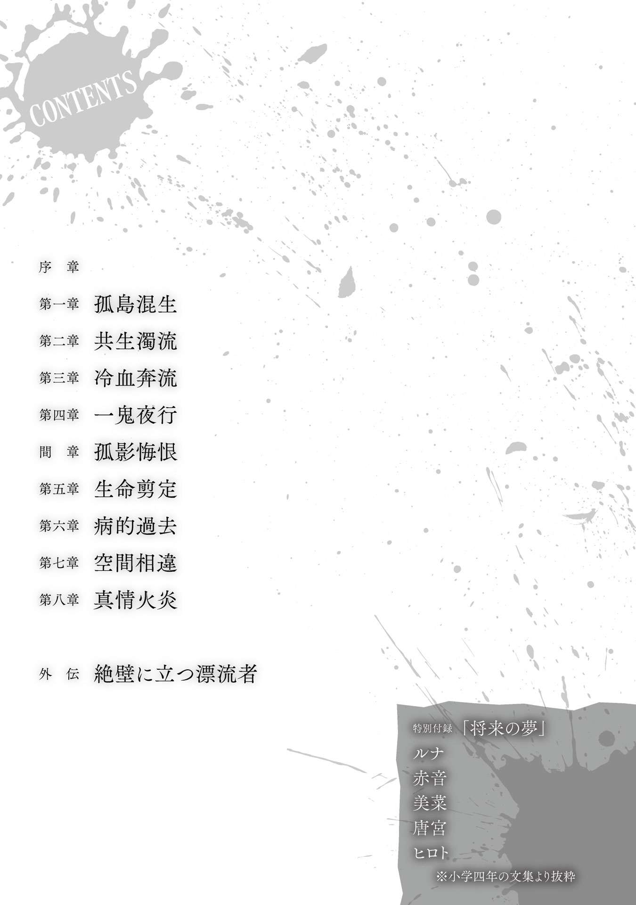

| 極地恋愛1 極地恋愛シリーズ | |
| I of極地恋愛 | |
| 七色春日 & 魁李 | |
| キルタイムコミュニケーション (2015) | |
| Rating: | ***** |
| Tags: | Kindle本, ラノベ・BL, ライトノベル |
内容紹介
島に漂流した五人の男女。
極限状態に陥った時......本能と良心、それぞれの思惑が交差し衝突していく！
乗り合わせた船が沈み、南海の孤島に流れ着いた二人の男と三人の女。
漂流者たちは各々の方法で必死に生き残るすべを探す。
交差する思惑と愛憎、信頼と裏切り。
抑えきれない性欲、そして殺意......。
極限状態に陥った時、人間のエゴイズムが醜くも美しく露わとなる、
孤島サバイバルサスペンス！
※本作品の全部あるいは一部を無断で複製・転載・配信・送信したり、ホームページ上に転載することを禁止します。本作品の内容を無断で改変、改ざん等行うことも禁止します。また、有償・無償にかかわらず本作品を第三者に譲渡することはできません。
※本作品は電子書籍配信用に再編集しております。

目次
序章
船酔いで今にもくたばりそうだった。
足腰は芯を引き抜かれたみたいに鈍くなっている。ぐらつく身体を部屋のあちこちにぶつけ、狭苦しい客室の扉に体当たりして廊下に踏み出した。
「どうなってやがる......」
壁に手をついて倒れ込まないようにするのがやっとだった。荒くなった息は熱を持っている。垂れ流れる脂汗が首筋につたって寒気を呼ぶ。併発している熱が俺を蝕んでいる。
ワイシャツの胸ポケットから酔い止めの錠剤を取り出して口にした。怒りを込めて細かく噛み砕く。給湯室に辿り着くまで待っていられなかった。
左胸に手をあてた。心臓が耳障りなほど脈動している。さざ波のような胸騒ぎは収まる気配がない。酷く悪い予感が胸の中で渦巻いている。
頭を振って状況を確認する。
電気系統が不安定なのか、狭い通路の蛍光灯は明滅を繰り返していた。夜の薄闇で視界がぼやけている。降雨の影響なのか、空気の中に水気を含んだ雑な臭いが混じってきている。
船の揺れ方も尋常ではなく、急に前後に揺れたかと思えば激しく左右にもかき回された。コントロールを失って嵐に翻弄されていることは間違いない。雨粒の船体を叩く音が遠くから響いてきている。次第に激しさを増しているようでもあった。
数十メートル先の昇降階段から足音とともに船員が現れ、青い顔をして走ってきた。
俺を見つけて一瞬だけ足を止め、何か言いたげに唇を震わせたが扉の向こうに消えた。
不審に思い、階段に視線を戻せば──
「唐宮！」
「なんだよ......なんとか寝るって、さっき決めたばっかりじゃねえか」
寝癖だらけの金髪をかきあげ、灰色のガウンを羽織った唐宮がベッドから上半身を起こした。億劫そうに毛布に手をつき、立ちあがろうとするが、腕に力が入っていない。仕方なく肩を貸して強引に戸口まで引っ張ってやる。
「あれを見ろ」
顎をしゃくった。
板張りの床を透明な何かが迫ってきていた。均一の速度で広がる絨毯のようだった。船底から浸水してきている。それも猛スピードで。あっという間に靴底が濡れていき、床と扉の隙間に水が流れ込んでいく。
明りの点いていた他の客室から物音がし始めた。扉が幾つも派手に開き、乗客たちが何事かと血相を変えて飛び出した。
動揺のざわめきが巻き起こり、布地を切り裂いたようなけたたましい悲鳴があがる。水から逃れようと誰かが背を向けた。その後を小走りで追う人間も出てきた。
唐宮の顔は完全に血の気を失っていた。事態が飲み込めずに立ちすくんでいた。
「ヒロト......」
「逃げるぞ」
どこに、とは唐宮は聞かなかった。俺も明確な答えを持っていなかった。
四方が海でここは船の中。どこに逃げ出すというのか。
部屋の荷物をかき集めて脇に抱え、移動を開始する。弱った身体にムチ打ち、足を動かした。水かさは増し、くるぶしを乗り越えて靴下まで侵食してきた。船を構成している鉄骨が、圧力で軋みギィギィと重苦しい金属音を上げ、焦燥感を肥大させる。
通路が不自然に歪んだ。天井から吊り下げられた裸電球が振り子のような動きをしていた。船体は斜めに傾き始めている。何度もすっ転びそうになったが階段を駆け抜け、甲板まで上りきれたのは奇跡に等しかった。
強風で押し込められていたハッチを開くと銃弾のような豪雨の洗礼が待っていた。天空を黄金色の稲妻が幾筋も駆け抜けている。暗雲は呆れるほど分厚く、それ自体が生き物のようにうごめいていた。夜海は崩れては消える巨大な水の壁を際限なく作っては自身の力で粉々に破壊している。
急傾斜となった甲板の手すりに懸命につかまっている船員が何かに向けて片手を伸ばしていた。手すりの支柱に引っかかった救命胴衣だ。つかむことには成功したが、着ようとしたところで船員は突風にあおられて吹っ飛んでいった。暗黒の海の向こう側へ。断末魔の叫びも聞こえなければ着水音も聞こえなかった。
暴風の風鳴りは誰かの雄叫びのように聞こえた。神々の雄叫びだと誰かに告げられれば信じてしまいそうだった。
ぐるりと周囲を見渡す。荒れ狂う海、切れたワイヤーが垂れた甲板、白波が顔を出す欄干、黒色にぬり潰された無人の船楼。
俺たちよりも先に出たはずの乗客の姿はなかった。人気がどこにもない。誰もいなくなった。
呼吸が止まりそうになっている──精神を落ち着けるために横壁に握り拳を打ちつけた。恐怖で感覚が鈍化しているのかこれっぽちも痛みを感じなかった。
どこからかバリバリと繊維が引きちぎられるような破滅の音が響いてきている。ゆらゆらとしていた舳先が前のめりになり、船尾が後ろに下がってきている。俺の乗ったこの船には僅かながら二つの傾斜ができている。船体は崩壊して間もなく割れて沈むことに疑いはない。
空から飛来する無数の死の呼び水が俺の肉体と精神を叩きのめそうとしている。膝をついて神に祈れば多少の慈悲はあるのだろうか。死ぬときはこのようにして死ぬのかもしれない。
「どうするヒロト」
唐宮の声が空虚だった。それでも暴風雨の中にあってもはっきりと聞こえた。
白く染まりそうな思考を否定した。俺の祈りなど神に届くはずがない。天は蓋がされていて誰の叫ぶ声も届かない。
唐宮に顔を近づけた。お互いにずぶ濡れで瞳を合わせた。唐宮は俺の判断に望みを託していた。活路を探すしかない。ただ生き延びるために。
「この船はもう終わりだ。救命ボートに乗るしかない」
「どこにある？」
発見までにそう時間がかからなかった。金具で床に固定されたカプセルボックスがぱかりと開いているのを視界に捉えた。ベルト帯が船べりに落ちて伸びている。荒波によって坂が変化する甲板の機を狙い定め、滑り台の要領で尻から移動する。
海面に続くはしごの下に先客の姿があった。
ゴムボートは圧縮から解き放たれて広がり、救命胴衣を着込んだ二人の女がベルト帯の着脱に手間取っていた。必死になって取り外そうとしているが頭が回っていない。あの形状ならボタンをスライドさせるだけで簡単に外れるが、まだ外れてもらっては困る。
「先に行け！」
怒鳴るように促すと唐宮は迅速に行動した。はしごを数歩ほど降りれば途中でジャンプする。
足場の不安定さから着地で体勢が崩れてよろめき、ゴムボートから海にずり落ちそうになりながらも、唐宮はベルト帯を手中に収めた。
二人の女がもぎ取られたことに対する怒りと解除への期待に満ちた視線を混ぜ合わせて唐宮に送った。
「ヒロト！」
叫ぶ唐宮の要請にすぐに応じようとしたが、気配を感じて横に顔を向けた。
いつの間にか──純白の雨合羽を着た小柄な人影が傍にきていた。あらゆる悪条件にまみれた嵐の海だというのに身じろぎしていなかった。
目深にフードを被り、口元だけが露わになっている。口の端が緩んでいて、笑っているようだった。まるで物珍しいものを見物するように。
異様だった。
醸し出している雰囲気やあまりの場違いな存在感に亡霊かと錯覚した。俺はくだらない馬鹿げた妄想に支配されて硬直してしまった。
フードが強風に吹かれて後方へばさりと飛んだ。風を受けて乱れ散る黒髪と琥珀色に輝く瞳が姿を現す。
あどけなさを含む顔立ちの少女だった。
頬の線はほどほどに丸く鼻筋もすっと通り、垂れ気味の目は大きく愛嬌がある。やや痩身ではあるが、たおやかな身体の線は柳のような粘り強さを感じさせ、色白の肌には張りがある。
真正面から向かい合っていると、困難などひとかけらも感じていない涼しげな少女の表情が和らいだ。柔らかく、何もかも包み込むような鮮やかな微笑だった。
「私も乗せていただけますでしょうか？」
よく通る耳心地のよい声音が鼓膜を刺激した。彼女はゆっくり手を差し出した。この状況とは不釣り合いのダンスに誘うような優雅な振る舞い。
雷光の瞬きが素顔を鮮明に照らし出す。目の前に居るのは年頃の娘にすぎない。同時に耳をつんざく雷鳴が響き渡り、俺は夢から解き放たれて正気に戻った。口を開こうとしたがうまく何かを言えなかった。
だからか、その可憐な小さな手を握ったりはしなかった。俺にできることは一つだけ。
「うきゃっ！」
手首をつかんで強引に前に引っ張り、背中に手を回して脇に抱え込んで有無を言わさず運ぶことだ。小柄だったおかげで重量は大したことはない。この方法なら確実に救助できる。
雨風に耐えながらはしごを降り不安定なゴムボートに着地し、少女を叩きつけるように地面に転がした。カエルが潰れたみたいな悲鳴がしたがどうでもよかった。
足を突っ張ってボートにしがみついている唐宮が気に入らない土産を見たような面をしていた。
素早くベルト帯を外した。海原にボートが放り出されて不規則に回転する。俺も腰を落として足を突っ張った。
「可愛かったか？」
「面なんて見てねえよ」
俺は嘘をついた。嘘をついたが、本当のことは言いたくなかった。この急場で女に見惚れたなど口が裂けても言いたくはなかった。
俺は誰かを好きになった経験などない。自分自身すら吐き気がするほど嫌いだった。
第一章 孤島混生
汗まみれの額を手の甲でぬぐった。指先から汗が滴下する。天空にそびえる太陽は地表にいる生物を焼き殺しかねない灼熱の光線を放出している。
耐えがたい酷暑のせいで脳みそが茹っている。なけなしの気力が汗と混じって流れ落ちていく感覚があった。
こういうときは何も考えたくはない。だが、何も考えないわけにもいかない状況に俺は陥っていた。
「悪いんだけどさ、境界線を決めるべきだと思うの」
吊りあがった目元にはしわができて険が生まれていた。唇はわななき、眼球が微動している。怒りの臨界点を越えてヒステリーを起こしかけている。
挑むように食いかかってきたのは遭難者の一人である茶髪の女だ。不機嫌さを隠そうともせず、片手を腰にあてて無遠慮に俺の胸を指差してきた。
腰元まで伸びて広がる茶髪は砂にまみれて輝きを失っていた。ハイビスカスの刺繍で飾られたダークトーンの半袖ワンピースは海水を含んでいるせいでたるんでよれ、枯れ花のように見える。
靴の中に入った砂利が妙に気になった。陽光によって温められた熱砂が不快だった。
あれほど望んでいた広大なエメラルドグリーンの海と驚くほど白い砂浜が憎悪の対象になってきている。
自然に満ち溢れた美しい孤島は世界で一番くそったれな場所に思えてくる。
──島に漂着して二日目の朝。
流れ着いたときの全員で手を取り合った喜びは影も形もない。
助けを求める先はなく──島に人の姿はなかった。嵐を乗り越えて生き永らえたと思えば新たな辛苦が待ち受けていたなど誰も信じたいはずがない。
目下、茶髪女の望みは大地に境界線を引き、自分らの領土を決めることだ。その領土に俺は必要ない。つまり、窮地に陥っている俺たち五人の遭難者の仲間割れがお望みだ。
唐突に──ぐぃっと肩が引かれた。のけ反りながら頭だけ後ろを振り向く。
毛先が尖った金髪の髪房を散らばらせ、ダメージジーンズと十字架のシャツを着た端整な顔立ちの男が眉をしかめている。
砂浜に転がっていた使えそうな漂流物を集めていた唐宮丈──ためらいもなく俺の前に出て茶髪女と対峙した。
困った顔を全面に押し出し、身振り手振りでなだめすかそうとし始める。
「ちょっと待ってくれ。分かれるのは非効率だし、危険も高まるだろ」
「あんたたちと居た方が危険だってことに三人で結論を出したの」
「この状況をわかってないんじゃないか。俺たちは集団で行動すべきだ。食料のこともある」
「あたしたちのね。元々、最初にボートを見つけたのはあたしたちよ。あたしたちが手に入れたボートにあった物よ」
ぐっ、と喉をつまらせて唐宮は顎を引いた。
茶髪女は一歩も譲ろうと思っていないはずだ。高慢な勝ち誇った顔つきからそんな内心が透けて見える。
唐宮は目尻を痙攣させながら絶句した。ここまで強い態度を取られると思っていなかったに違いない。
俺は後方で黙って成り行きを見守っていた。単純な肉体疲労と不眠からくるだるさもあり、しゃべる気にもならないこともある。
「こっちはなるべくじっとして......救助を待つことにしたわ。冒険好きのあんたたちには付き合ってられないの。大体、森の中に入って動き回るなんて危なかったのよ。蛇に襲われかけたし、ヒルにも噛まれた。ろくなことはなかったわ」
これ見よがしに茶髪女は俺に視線をぶつけてくる。
昨日の周辺探索を提案したのが俺だからだ。住人を一人でも見つければ俺たちの危機を伝達することができると思ったし、せめて人工物の存在を確かめるためだった。
道なき密林を女たちに歩かせたのは確かに過ちだった。全員で移動すべきではなかった。役割分担も考えずにただ成り行きに任せるまま集団行動した結果、このありさまだ。
指摘は細長い棒で突かれたように胸にくる。憤りとも後悔ともつかない不明瞭な感情が押し寄せてきた。
唐宮は怒気を押し殺そうとして失敗している。僅かに開いた唇から歯が噛み締められているのが見える。身を焦がす感情のためにやけを起こしかけている。
今回の軍配は自制心にあがった。深呼吸した後に両手を交差させて空を切った。
「......わかった。別行動なら分配を決めよう。まさか全部そっちで持っていくほど悪魔じゃないだろう」
「そうね。でも、あたしたちがか弱い女の子だってことを忘れないで欲しいわ。紳士らしく行動してね」
鼻で笑って言い捨てて、茶髪女は踵を返した。
その背中を剣呑な目で睨みながら唐宮はジーンズのポケットに手を突っ込んだ。ポケットの膨らみにあるものを強く握り締めている。
それがジャックナイフだとわかっていたので肩を叩いて振り向かせた。俺の目を見て唐宮は僅かに顎を引く。ポケットから手が離れる。
「悪い。俺のせいだ」
「ヒロトのせいじゃないさ。探索する必要はあった。おかげでここが最高のリゾート地だってわかったからな。なんせ、スタッフが完全に気配を隠してるんだ。まるで誰もいない島みたいだ。ロビンソンクルーソーゲームができるなんてパンフレットには書かれてなかったから別料金を取られるかもな」
黙ったまま愚痴を聞き続けた。俺にはそうすることしかできなかった。
高校生活の終わりを告げる卒業旅行は完全に破綻した。記念すべき初めての海外旅行は地獄のような船酔いにさいなまれたことからスタートし、水死と隣り合わせの災害鑑賞ツアーを体験し、現在では完璧なる自給自足の宿泊生活を強いらている。
見事なラインナップだ。最高すぎて笑いがこみあげてきそうだった。だがこれっぽっちも笑えない。
救いがあるとしたら俺一人だけではなく、それなりに気心の知れた唐宮と一緒だということだ。
ともにゴムボートに乗って海を漂った女三人とは面識がないし、このように友好的な雰囲気でもない。
今だって浜辺で五人で集めたはずの漂流物を勝手に動かしているし、話し合う素振りもない。
野放しにされているサバンナの肉食獣を眺めるように警戒心たっぷりで俺たちを窺うのみだ。
仕方がない──こんな人気のない場所で得体も知れない男二人が固まって密談したりしている姿を見れば不安に思うだろう。
女の身になって考えてやるべきかもしれない。
「さて問題だ。あのごうつくばりの三人から食料と水を奪うにはどうしたらいいと思う？ 俺は一人をぶん殴っちまうのがいいと思う。そうすれば後の二人はびびって動かなくなる。コツは無言を貫くことだ。クールにいこう」
「暴力はやめろ。あのボートに乗せてもらったのは素直に助かったし、無理に食料を奪うのは気が進まない」
「そうだな......なぁに、変質者扱いされただけだ。指一本も触ってないし、セクハラ発言すらしてないのにゴミを見るように見られてるが、もう一度頑張って話してくるよ。人間の姿をした悪魔と交渉ができるなんてバンザイしたい気分だ」
皮肉を口走りながら唐宮は重ねた指を二本振って、女たちのもとへ歩いていった。
一言、二言、会話している姿が見える。
茶髪女が前に出て、その後ろに控えている女二人は様子を窺っているのか物静かにしている。
片方は小柄でどことなく愛らしい顔つきの少女。黒髪を肩まで伸ばし、先端を内側に向かって僅かにカールさせているボブカット。表情に疲れはなく不思議とリラックスしていて、淡々と成り行きを眺めているように見える。
一人だけ腰を下ろし、何が楽しいのか両手を砂浜につけて足をぶらぶらさせている。中学生くらいかもしれないが活発な印象を受けた。嵐の中で見た超然とした態度が嘘のように子供っぽい。
もう片方はモデル並みに長身でウェーブのかかった長髪が鮮やかな色っぽい美女。交渉がどう進むか気になるのか交渉している二人から距離が近い。顔つきは真剣味がある。年齢は俺よりも二つか三つ上。化粧と身なりからして恐らく社会人か大学生といったところか。落ち着き払っており若干冷たい印象を受けた。
唐宮はへらへらと軽薄そうに笑い、爽やかな表情を取り繕っているが内心はブチキレている。
つま先で砂を蹴飛ばしていて、イラ立ちが隠せていない。よほどのことがない限りは女に暴力を振るったりしないはずだが目を離すわけにはいかない。
戻ってくると、五百ミリサイズのペットボトル二本と外国語で書かれた缶詰らしき物を二つ両手で抱えてきた。
能面のように無表情だったのは気になるが上出来だ。
「十万だ」
「うん？」
「あの茶髪、帰ったら十万払えって言ってきたよ」
呆れて苦笑いした。この状況で金儲けに走る根性を褒めてやりたい。どういう神経なのだろうか。図太いことだけは確かだが......いや、単に難癖つけたいだけか。
「それは......ああ、俺が払うよ」
「馬鹿なこと言うな。本当に払ってたまるかよ。だがもしも、一週間以内に救助が来なかったら俺はあのクソ生意気な女を犯す。止めんなよヒロト」
「止めるよ。お前には彼女がいるし、人間性まで遭難しちまう」
唐宮は視線を横に向けた。波飛沫の舞う透明な海の方へ。少しばかり思い悩むように考えたような間があった。
状況を飲み込むために心に整理をつけているのか、或いは何かを天秤にかけている風だった。
「冗談だよ......そうだな。病気をもらうかもしれないしな。スーパー淋病って知ってるか？ ああいう女みたいな凶悪な菌だ。国の医療機関に相談しなきゃいけないほど厄介ってことだよ」
「水がいる。森に探しに行こう」
「サバイバル生活の始まりだな。あるのはナイフ一本だ。わくわくするあまり自殺したくなってきたよ。こういう状況に陥ることを空想したことはあるが、ヤシの実はどこにあるんだ？ まず実感するためのトロピカルジュースが必要だ」
砂浜にはヤシ科の植物は見当たらない。少なくとも目視できる範囲には。
東南アジアはヤシの実から抽出できるショートニングの原料──パーム油の名産地なのだから、あってもおかしくないはずだが。
顎をあげると熱い吐息が出た。気温は神の正気を疑うほど高い。からっとして熱い空気が全身にあますことなくまとわりついている。
地理的に考えるならばサイパンを目指していたのだから小笠原諸島よりも南に位置していて、熱帯のエリアになる。
死ぬほど流されたと仮定して北マリアナ諸島の一つか、或いは硫黄島周辺か──なら自衛隊基地の一つでもあればいいし、派手な訓練でもして存在をアピールしてくれれば俺たちも叫びがいがある。
「ヤシの木に登って死ぬ奴もいる。あってもリスクが高いから後回しだ」
「ヒロトさ、サバイバル好きなのか？」
少し考えて、答えた。
「誰かがやるのを見るのは好きだった」
「同意見だ」
砂浜から森へと移動する。
壁を思わせる原生林は鬱蒼と生い茂っていて、奥は昼間なのに暗闇に染まっている。
まるで侵入者を拒むように隙間は少なかった。
水分が必要だった。何にもまして喉が乾く。
照りつける太陽の陽射しと、漂っているむわっとした熱気は滝のような汗をかかせてくれている。
衣服はべたつき、顔は熱くなる。思ったより森は歩きにくく体力が削られる。地面からひり出した太い根が足首を必要以上に持ちあげることを要求してくる。立ちはだかる密集した低木群が織りなす小枝は剣山のようにトゲトゲしい。曲がりくねる細い獣道の道幅は最悪なほど狭く、迂回ばかりしている内に方角を忘れそうになる。
早急に救助隊を呼びたいものだ。頼れるはずだった携帯は圏外。基地局が設置されていないほど未開の地なのかもしれない。
開けた場所で足を止めて小休憩する。俺と唐宮は目を皿のようにして周辺に探りを入れる。看板、道路標識、アウトドア用品や雑誌、ペットボトルや空き缶、人の手で切り倒された丸太──なんでもいいから人類の痕跡を見つけたかった。何一つとして見つからない。
落胆で気を緩めればテレビで見かけるようなジャングルの南国情緒に気疲れとも感嘆とも取れるため息がこぼれた。恐ろしいほど緑は濃い。俺の胴体よりも大きな葉がカーテンのように並び、頭上では二の腕ほどの太さのツル草が木と木の間をロープのごとく伸びている。
普段過ごしていた日常とはかけ離れた風景。これが夢ならどんなにいいか。だが、カラフルな尾羽を持つインコの気味の悪い鳴き声が現実だと教えてくれる。
「すげえなあれ、絵の具ぶっかけたみたいな色してる」
「そうだな」
軽口を叩いて強がってはいるが唐宮は身体が重いのだろう。動きに精彩がない。俺もろくに眠れていない。体調は優れないままだ。
昨日の晩は砂浜の近くの木陰で横になって眠ろうとしたが──得体の知れない虫や鳥の声がうるさく、真夜中でもずっと響いていたせいだ。
服を脱いで下敷きにしたがあらゆるところを虫に刺されて湿疹だらけにされた。ヒルだけでなくダニやノミも皮膚を狙っている。都会育ちの柔肌を持つ俺たちは彼らにとってさぞやいいご馳走だろう。
「ところで、どうする？」
「定番だが枯れ木を集めて燃やそう。誰かが見つけて寄ってくるか通報するはずだ」
「ここらの小枝切っちまおうか」
「後なら煙が出るからいいが、最初に生木はダメだ。燃えにくいし、無理してそのナイフが欠けたり折れたりするのは困る。折るなら手で折れ」
「水はどうする。あと一リットルしかない。おっと、たった今、八百になった」
ぐびりっとペットボトルをあおった。喉が上下した。呆れそうになったがこの暑さだ。飲まないわけにもいかない。熱帯における季節は恐らく雨季寄り。湿気で満ち溢れる空気が蔓延している。
飲まなければ脱水症状に簡単にかかってしまうだろう。
「一般的なのは布で朝露や夜露を集めるか、泥水をろ過して飲むか、海水を蒸留するか、植物からしぼり取るか、お前の意見を聞こう」
唐宮はもったいぶって腕組みした。
「定番だが水道の蛇口を探そう。ここがテーマパークならあるはずだ」
「そうなると俺たちは無断侵入者だな」
「早いとこ逮捕して欲しいな。俺たちが干からびてミイラ男に変身する前によ」
「なら念のための身体に巻く包帯も調達しないとな」
軽口を叩きながら俺はしゃがみこんで近くにあった倒木を撫でた。
むき出しの幹は変色して全体が白く染まっている。両指で摘まんでみると樹皮の繊維は朽ちて粉のようにさらさらとし、指の間からこぼれ落ちた。腐敗して空いただろう穴に小枝を突っ込むと手ごたえがあった。
「こいつは......食糧になるかな？」
枝の先端に絡まって身をくねらせる白い芋虫を凝視すると、唐宮は物凄く嫌そうに喉を鳴らした。
「いきなりベリーハードだな。俺はゲームはイージーからやるタイプなんだが」
「これは分かれ道だ。これを食うか、食わないかで俺たちの今後が決まる。食えれば食料の幅が広がるし、生存確率はあがる。いきなりきついのを体験しておけば後が楽になるはずだ」
「待て。その理屈はおかしい。最初は果物を探そうぜ。普段食ってる物と似た物を探すべきじゃないか。いくらなんでも......おいおい」
逡巡したが、口の中に芋虫を入れて噛み砕いた。悲鳴をあげそうなほどの酷い味だった。固い皮を切り裂くとネバネバした苦味のある体液が舌にまとわりついてくる。ぬるくて妙に生温かく、口内でうねうねと動き、どろっとした塊が歯に触る。飲み下すと涙が出そうだった。
食ったのは甲虫種、恐らくはカブトムシかクワガタの幼虫だ。詳しい種類はわからないが始めの一歩は最悪だ。
「味はどうだよ原始人さん」
「耐えがたいほど苦痛の味がする。だが、簡単に手に入るタンパク質だ」
「芋虫は甘いって言ってたテレビは嘘だったんだな」
「腐葉土が主食の芋虫の体液がどうしたら甘くなるんだ。そういうのは果実の中にいるんだよ」
納得したのか唐宮はペットボトルを差し出した。すすげと言いたいのだろうが拒否した。
こんなことでいちいち水を飲んでいたら足りなくなる。手にくっついた黄色い粘液を手ごろな葉に擦りつけてぬぐう。
ポーチに五匹の芋虫と朽ちた樹皮や木粉をつめ込んだ。助燃剤として乾燥した細かい粉は優れているし、焼いたり蒸したりすれば味も変わると期待した。
再び獣道を歩きながら先へと進む。
夏ということもあってか森の緑はやや青々しい。咲く花のつぼみや花弁は日本では見かけないどぎつい配色をしている。
熱帯か──上空を太く大きめのクチバシをつけた黄緑色の鳥が飛びかっている。目玉の大きな小猿が俺たちを見つけて驚いたように瞬きしていた。肉食獣の足跡は今のところなし。
顔にかかってくる大葉をツルごと払いのける。今のところ文明の気配はない。拠点となる廃屋でもあればと期待したが外れた。
三十分ほど歩いたか──途中で高くそびえる岩壁に出くわして先に行けなくなった。
見あげる首が痛くなりそうなほど高い。岩棚の突き出した反りやスプーンでえぐられたような窪みが数多い、命綱があったとしても登ろうと思わない難所だ。
痛む後ろ首をぽんぽんと拳で叩いて正面を見直すと地上と崖の境目に違和感。ゴツゴツとした岩肌の溝の一つが黒く変色し、苔むして湿っているのを発見した。
「登るか？」
唐宮が冗談めかして言った。頭頂部には茂る緑があり、樹木の姿が見え隠れしている。
「島の周辺に何があるか登ればわかりそうだが、登るのは崖じゃなくてもいいかな」
薄い層になっている苔を剥がした。年月によって変色した黒い岩肌が現れる。ポケットからハンカチを取り出してそこに押しつけた。じわじわと濡れてシミが広がっていく。数分ほど待った。顔の上に持っていき、ハンカチをしぼって水滴を舌で受け止めた。
「ヒロト、まともな水はまだあるぞ」
「いいんだ。だけどそっちじゃない空のペットボトルが欲しいな」
これが本当に岩清水なのか、或いは雨露が流れてきただけなのかはわからない。それほど味に濁りを感じないので不純物が少ないのは確かだ。内部で循環され、ろ過されているのかもしれない。
「なぁ、サバイバルなんてマジでやる気か？」
「念のためだ。ヤシの実とか小川もまだ見つかってない。木の実やキノコはあったが食えるかわからない。動物も捕まえられるかわからない。今、俺たちは思っているよりもやばいんだ」
「なんとかなるだろ。あの淋病女は厄介だが、他の女を俺が口説いてなんとかできる」
唐宮は見た目麗しい美男子には違いない。異性に無条件に好かれる才能を持ち、その力を濫用することにためらいなどなかった。
嫉妬と羨望が混ざって苦い味となって心に沁みてくる。だがこの味にはとうに慣れた。別に唐宮にだけ抱いた感情というわけでもない。
ボートに積み込まれていた飲料水と保存食のつめ込まれた木箱。非常食の類は喉から手が出るほど欲しい。すべてを把握しているわけではないが、量はそれなりにあった。
毎日三食としても五人で一週間は持つだろう。救助隊が来るには充分すぎる時間だ。航路からゴムボートで外れた距離なんて大したことはない。狼煙さえあげれば救助隊がきてくれるはずだ。
「大学の推薦入試取り消されねえかな」
ふと現実に返ったのか唐宮の心配事に噴き出しそうになった。
「海難事故は失態には入らないだろ」
「俺はサッカー入試なんだよ。遊んでるってバレる」
「発展途上国にボランティアに行く途中でしたって言えばいいさ」
「素晴らしいアイディアだ」
ハンカチに小石を置いて固定し、先端をひねって結露した水滴が下部に設置したペットボトルの口に落ちるようにした。細工は心もとないが現在ではこれが限界だ。
「なんでもいいから水を集められる器が欲しいな。木桶でも作るべきか」
「水ってそんなにいるのか？ よくあるあれだよあれ。穴を掘って海水を蒸留するだけじゃ足りないか」
素朴な問いだった。水分が不足する状況が想定できないだけかもしれない。
穴を掘って土を湿らせ、ビニールを張って太陽光で海水を蒸留させ真水を手に入れる手段は悪くないが、よくもないだろう。面積が狭ければ入手できる水の量も比例して少量だ。男二人分の一日の水分を獲得するには難しいし、天候にも左右される。
「当たり前だ。一日二リットルはいるって言われてるくらいだ。この気温だしもっといる」
「ふーん......なあ、お前ってまだ童貞だよな？」
「分かれて行動するか」
「おいおいおい。落ち着けって。状況を整理しようぜ」
「一応は最低限の水の確保と枯れ木の確保は終わった。火を熾すのは苦労しそうだが、助燃材も手に入れたしなんとかなると思う。寝床の製作も試みてみる。もっと食料になりそうな物も集めよう」
「そうじゃなくってよ」
ぷらぷらと手を振った。試すような目で俺を見ている。
「あの三人の内、どの女が好み？」
「あ？」
「淋病とボインとボブだよ」
茶髪女のあだ名が残り二人と比べて酷すぎる気がしたが、心情は察してあまりあるので責める気は起きなかった。
「俺さ、こんなやばい状況でも色恋沙汰を考えられるお前を凄いと思うよ」
ここがどこかもわからず、明日もどうなるか不明な状況だというのに女のことを考えるなんて気が狂っているとしか思えなかった。
楽観視するのはいいことなのか、悪いことなのか、判断がつきかねる。
「筋を通したいんだよ。つまんねえ喧嘩したくないだろ？」
何かしらこだわりがあるのか唐宮は引き下がる気配を見せなかった。
蒼空を仰ぐ。何かに向けて強く祈りたかった。こんなくだらないことを話してる暇があれば一刻も早く救助信号の一つでも作っておきたかった。
それでも、言われるままに赤の他人三人の顔を思い浮かべた。
──勝ち気な目つきで恫喝してきた茶髪の蓮っ葉な女。
──フェラガモの高級靴とエルメスのバックで身を固めた鼻持ちならない美女。
──死がばらまかれた嵐の甲板に悠然と立っていた動じない少女。
三者択一ならば──最後の少女が一番印象に残っている。
心を打たれたというよりも、握り締められたといった感覚が正しいかもしれない。知らず知らずに苦境を恐れぬ精神への憧憬を抱いたのかもしれない。
これが惹かれるという感情ならば選択は一つだけ。
「ボブの娘だ」
「ボブだな。オーケー、ロリコン野郎。そういう方向でいくぜ」
「お前、彼女いるんだろ」
「だから？」
レストランでどうしてサイドメニューを頼まないんだ。そう言いたげな視線をぶつけられ、何も言えなくなった。
※ ※
灯向赤音には根暗と金髪は森に入ったのが愚かな選択だとしか思えなかった。
毒蛇や毒蜘蛛に注意と書かれたパンフレットを見なかったのか。熱病に罹患する可能性を忘れたのか。森林に入ることの危険を承知しているのか。
昨日──つい、誘いに乗って人家を探す目的で探索したが無駄骨だった。あてのない森歩きなど無謀なだけだと思った。
食料も金髪が馬鹿食いするし、視線もいやらしくて太ももや首筋、胸部を舐めまわすように見てくるので背筋がぞわりとした。おかげで汗まみれになって満足に着替えられやしない。
高圧的な態度で接することでうまく分かれることができてホッと胸を撫で下ろした。
赤音は動かないことを選んだが、単に思考停止しているわけではなかった。
海岸の日陰を陣取って、通りかかる船を期待したのだ。手には発炎筒がある。これをかざせばすぐに救助されるはずだ。
砂浜には五人で設置したＳＯＳの文字もある。枝と石で作った。目立つところにいて、なおかつ消耗しないように日陰で大人しくしているのは決して悪い選択肢だとは考えなかった。
食料も豊富にあるし、飲料水もある──当面、問題はないはず。
「シャワーが浴びれないのが辛いところね」
エルメスのバックのがま口を開けては閉じるを繰り返していたルナがぽつりとつぶやいた。化粧品の傷みを気にしているのか、香水の瓶を取り出して成分表を凝視する。
赤音は何気なしに相槌を打った。
「そうね。暑いし雨でも降らないかな」
「からっとしてても暑いですねー」
樹木の根元に頭を置き、寝そべる美菜も陽気に同意した。
同じ話題。同じ不平不満を繰り返しているのは誰もが自覚していたが、三人ともおしゃべりをやめなかった。赤音からすれば不安からきた口数は多い。沈黙は得も知れぬ恐怖を突いてしまう。
自己紹介は終えた。三人とも面識のない見知らぬ他人ではあったが、それぞれ用事があってサイパンに行くはずだった。
ルナに至っては沈没するときに同行者が海の中に消え失せたらしい。それなのに彼女の顔にはそれほど悲しみの色はなかった。
口にするのも現状への憤りだけで、赤音は男との望まない旅行だったのだと邪推した。ルナが水商売の気配を醸し出していることも裏打ちとなっている。
明度の高いマニキュアや口紅。グラデーション柄のドレスも胸部を強調する形をわざと取っている。意識的にしろ、無意識にせよ滲み出るものは誤魔化せない。
「私、一日にシャワーを二回浴びるの。こういうのって耐えきれないわ」
「私は一回ですねー」
「あんまり浴びすぎて、脂分が飛ぶのはよくないって聞くけど」
「こう言っちゃなんだけど、どのくらい賠償金取れるかしら。救いがあるとしたらそれだけだわ」
「ふんだくれるんじゃないですかー」
「旅行会社の保険があるからたっぷり取れるんじゃない？」
下世話な話で盛りあがった。これで船舶の汽笛でも聞こえれば最高の気分に浸れるはずだったが、潮騒のざわめきしかない。
広大な紺碧の海は透明性が高く──陽光が乱反射してため息をつくほど美しい。
ゴムボートで移動したときにサメの尾ビレを見かけなければ今頃、のん気に泳いでいたかもしれない。
最低限の洗い物をしたり、身体を洗ったりするときに浅瀬に入るが塩分を含んだ海水が衣服にいい影響を与えるはずがない。
「男の人は元気ですねー」
美菜が遠くの浜辺に顔を向けた。男二人が拳大の石を海面に投げつけていた。奇声をあげながら水飛沫を浴び、悪ふざけからか身を投げて泳いだりしている。
口を半開きにして赤音は顔に手をあてる。見ていられないという風に。
「あの二人は頼りにならないわよ。男はああいう馬鹿なのよ。ほっときましょう。何か言ってきても無視して」
「本当に食料をもうあげないの？」
ルナの声は心配するというよりも念を押すようだった。自分たちが我慢を強いられていて、あっちが遊んでいる。そんな憤怒がちらついていた。
力強く赤音は頷いた。
「勿論よ」
「暴力できたらどうするの？」
赤音は脇に置いた荷物からハサミを取り出した。
口の端に笑いをのぼらせ、半ば悪戯っぽくかちゃかちゃと刃を交差させる。
「正当防衛よね」
「そうね」
「救助されるまで仲良くした方がいいと思いますけどねー」
美菜の声は虚しく響いた。元々、気のない棒読みのような相槌ばかり打っていた。
本人もそれほど強く望んでいないのか。後頭部に両手を回しながら、どこか上の空でのお気楽な発言だったが──ふっと男二人に目を落とし、感心するように頷いて頬を緩めていた。
※ ※
島に流れ着いて三日が経過。
ジェット機が大空を雄々しく飛ぶ姿は見かけたが肝心の救助隊が現れる兆候はない。日増しに焦燥感が姿を鮮明にしていく。
生活資源の獲得のために慣れない労働に打ち込む。足がむくみ、腕が突っ張る。身体の調子が悪くなっている。ストレスを含め、何かしら身体に必要な栄養素が不足しているせいだと推測する。
ここ数日、悪天候が続いたことも災いしている。大雨が降れば移動が困難になり、海が濁って海産物も獲ることが難しい。
本日の世知辛い収穫が焚き火にあぶられている。ディナーは大ムカデと黒の斑点模様がついた黄色のカエルとイワシみたいな小魚だ。素晴らしいほどしみったれた食事になりそうだった。
「すげえうまそうだな。やべえ、腹がいっぱいになってきたよ」
「俺もだ。この食事にはダイエット効果があるな」
「ああ、俺に遠慮せずたらふく食ってくれ」
「いいからお前も食えよ」
真っ黒でおどろおどろしい外骨格を持つムカデは当然のことながら強硬に反対されたが、食ってみてから判断しようと俺も押し切った。
毒の懸念もあるが火を通せば食べられなくもないはずだ。中国かどこかの国で串焼きを屋台で売っているのをテレビで視聴したことが根拠だ。実に最低の根拠だがすがるしかない。
俺は手を伸ばしてムカデを噛みちぎった。味は最高に悪く、誰かに勧められれば人によっては怒りを禁じ得ないだろう。感想としては苦い縄跳びの紐だ。
「気遣いなんてしなくていいぞヒロト。今日は一日雨に降られたり、かと思えばきつい陽射しを浴びたりでほぼ動かなかった。俺の光合成は完璧だ」
「お前のどこに葉緑体があるんだ？」
「トランクスの下だよ。生命力がみなぎってる」
「面白いな。お前は緑色のブツを持った世界で唯一の男だよ」
ムカデを咀嚼し続ける。黒い甲殻が割れてどす黒い体液が口の中にずるっと流れ込む。外皮はパリパリとしているが異物感を覚えるほど硬い。
まずい。まずいことは許容できるが臭気は誤魔化せない。臭みを消す香辛料が欲しくなる。惰弱な心がどこにもありはしない物ばかり求めようとする。
まともな物はもうない。食糧を分けてもらえたのは最初の一回だけだ。それならそれで仕方ないと折り合いをつけるしかなかった。
唐宮は小魚をゆっくりと噛むだけで、カエルには手をつけようとしなかった。思った以上に普段食べないものを口にすることを忌避している。
たった三日で頬がこけ始めている。血色は悪くなり、体力の衰えがちょっとした仕草に如実に表れる。
定番として熱帯特有の果物を求めなかったわけでもない。
森林の中を探索すれば色鮮やかな果物が周辺の木々に実っているのは確認できた。そしてブドウに似た果実を一つを食べてみたらいきなり腹痛を起こして倒れそうになった。
安易に口に入れず、慎重に食料を定めなければならない。実験と試行錯誤を試みなければなるまい。猛毒に直撃したらそれだけで終了だ。
収穫物は串焼きにするのもよかったが石焼きにすることにした。その方が保温性もあり、すきっ腹を誤魔化すための長い食事を続けられる。
サバイバル生活で工夫は大事だ。そんな当たり前のことを痛感する日々となっている。
巨樹の枝葉を雨よけの庇にして座り込み、小枝を削って格子状に重ね、ツルで結んで小型の漁網も試作した。細工に集中していると現在の酷い状況も忘れることができる。現実逃避の一貫みたいなものかもしれない。
「ヒロト。お前の悪食には恐れ入ったよ。俺も積極的にブスに手を出して耐性をつけておくべきだったと後悔してる」
「見てくれだけで判断するのはお前の悪い癖だ。このカエルを食ってみろ。きっとジューシィーだぞ。鶏だと思い込めばチキンの味がするはずだ」
「自己催眠か。楽しそうだな......こんにちわ、可愛いコケコッコーちゃん。えっ？ 何？ 食べられるならヒロトがいいって？ どうして俺じゃダメなんだい？ ああ、変態の方が好きなんだね。わかるよ。君はいつも全裸で大きなお尻が丸出しだもんね。確かにノーマルの俺じゃ露出プレイは付き合えないよ」
おどけてカエルを焼いた串を渡してくる。俺は憮然として受け取った。好き嫌いはよくないが、無理強いはさせられない。
爆ぜていく枝と漂う火の粉に目を落とす。火を囲っていると周辺が鮮やかな橙色に染まる。この野外ならではのしんみりとした雰囲気は嫌いじゃない。都会の喧騒から解き放たれた自由がある。生活は不便ではあるが、こうしていると心が平面になってしまったような不可思議な心持ちになる。
木と木の間から見える海岸線に落ちゆく夕日を眺めれば時間を忘れてしまうほど美しい絶景だ。この島の自然は驚くほど多様性があり、一風変わった造形を持ちながらも色彩豊かな草花は見る者の情感を刺激する。
眠る時間が近づいている。密林の中を生きる奇態な鳥獣の鳴き声が聞こえた。日頃の緊張と疲労のためか、単に慣れたのか夜がくるとすぐ眠るようになった。
寝床は近場にある高木が密集して人が動きやすい場所にした。他の候補地は幾つか検討しているが、過ごしやすいところを今後も選んでいく。
ここは海辺から三十メートル。男女の境界線とした大木からは百メートル。生活のためのスペースは充分にある。
弾力のありすぎるゴムみたいなカエルの足を口に咥えてこわばった足を伸ばして揉みほぐしていると、唐宮が一方に目線を向けていた。
そこにあるのは闇に染まりつつある木立だったが、本当に見ているのは樹木などではない。
「どうした？」
「わかってるだろ。女が欲しいんだ」
唐宮が色を覚え始めたのは中学の頃だったか──自分の魅力に気づき、取り巻く環境に気づいた。容姿が優れていて運動神経がよければ女はどうにでもなった。
唐宮と俺の付き合いは遠くなったり、近くなったりもした。高校に入ってサッカー部に入部して近くなり、三年になって少しだけ遠くなった。
元々、この旅行は自分一人で行くつもりだった。巻き込んだのは俺だ。そう考えると胃が冷えて重くなる。謝罪の言葉を口にしようとしたが、できなかった。取り返しがつくことじゃない。
「女か......そんなにいいものか。俺にはまだ理解できないな。女は俺を選ばないからな」
「誰もがお前に壁を感じたのさ。お前は常に見えないバリアを張っている。それに数学の方程式で目の前の女の体積を測ろうとしたりする。それが彼女たちにとってたまらなく不快なんだよ」
「クラスの女子を立方体に見立てて計測したのは一回だけだ。あれは過ちだったと認めるよ」
「やる前に自分でもおかしいと思わなかったのか？」
「誰だってくだらないことをしたがるもんだろ。俺も例外じゃないんだよ。あまりイジメるな。反省しているさ」
「必要のない計算もそうだし、ムカデを食うのもくだらないよな。俺たちは我慢を強いられている。苦痛のせいで理性のたがが外れそうだよ。なぁヒロト。いつまで保てると思う？」
「さっき食ったのはムカデの形をした漢方薬だと思ってる。良薬口に苦しだ。死んじまいそうなほどうまかったよ。いつまでも理性は保て」
「難しいな。俺はきつくなってきた」
「明日には助けがくるさ。寝よう唐宮。いつかこの体験が笑い話になるさ」
話を打ち切るように葉を敷きつめただけの寝床に横になった。目を閉じると空腹が下腹を締めつけてくる。あれっぽっちじゃ足りない。
本格的な漁をしなければならない。或いは狩りだ。そうなると火を焚いて救助を訴える時間が減る。今までは第一に水分を得ること、そして探索と煙を出すことに重点を置いていた。考え方を変える必要が出てきた。
葉の柔らかい大葉を集め、丈夫でうぶ毛のないつるつるのツル草を編んでタオルケットのようにしたが肌触りは良好とは言いがたい。その内、寝具も改良したいものだ。
眠るための沈黙の時間が流れる。長くは続かなかった。背後で身じろぎする気配がした。
「明日さ」
間が空いた。
続くはずの言葉は宙に浮いていて、ためらっているような感じがした。平坦な声は空疎で感情が込められていなかった。
「食料を手に入れようと思うんだ」
意味することはすぐに理解できた。兆候はあった。散々、イラ立ちを隠そうともせずに女たちの恨み言を垂れ流した。何度か両手を合わせて頼みに行ってはにべもなく断られた。
逆恨みだと理性ではわかっていても感情のたぎりは収まらない。
なだめて、すかして、抑え続けることに意味があるのか──赤の他人の三人がどうなろうが俺の知ったことじゃない。
女というだけで護ってやる必要はあるのか。
最初に食料と水を発見したのはあの二人組で間違いはない。だが、そもそもの所有権は船主の物だ。誰のものでもないはずだ。
生きるために奪ったところで問題ない──そう思いたいだけだ。
「手伝ってくれなんて言わねえよ。俺はフォワードだからな。ディフェンダーがいないとゲームにならないってこともわかってる。作戦も立てないとな」
奪ったとしても奪還されるかもしれないことを危惧しているのか、唐宮の声は段々と熱っぽくなっていった。
顔を見るために振り向こうとは思わなかった。振り向けばその憎悪の炎に燃える目に従ってしまうのが恐ろしかった。なんとしてもなだめなければならない。
「明日の日没まで待ってくれ。お前向けのメシを手に入れるよ。食料獲得に重点を置こう」
「俺たちはやばい。わかってきた。今日、木に登ろうとしたら意識して力を入れなきゃいけなかった。毎日三食食ってるあいつらに勝てなくなるかもしれない」
「勝つとか負けるとかじゃないだろ。落ち着けよ」
「だからお前はレギュラーになれなかったんだ。そんなんだから二年で辞めるはめになった。どうして学校のテストに点数をつけてるのかきちんとわかってんのか？ 他人との差をはっきりさせて優劣を決めるためだ。優れた奴は羨望されて、劣った奴は軽蔑される。俺は二年のとき、サッカー部のエースの先輩に脅されたよ。引っ込んでろ、って文句と平手が一発プレゼントされた。俺は引っ込まなかった。スライディングであいつの骨をへし折ってやった。悪いと思うか？ 間違ってると思うか？ 俺は間違っていたとしても構わない。有名大学に行けるし、新聞で英雄扱いもしてもらった。俺は勝つために行動しただけだ」
唐宮は正しかった。サッカー部時代の俺は最後までレギュラーになれなかった。
ひたすら練習しても無駄だった。歯を噛み締めてボールを蹴り続けても俺が観客を背景にしてグラウンドに立つことはなかった。
ベンチに座って手を叩いているのに嫌気が差して辞めた。遠征に行って試合を応援することが無意味に感じた。サボる日が増え、チームメイトとの距離が離れていくのが手に取るようにわかった。
肺が握り締められたような息苦しさを覚える。呼吸が止まってしまいそうだった。
俺は何も言えなかった。沈黙を嫌ってか唐宮は声を止めない。熱っぽくて敵愾心が溢れていた。逆に俺を説得しようとしていた。
「世の中の奴らは大なり小なり罪を犯してるんだよ。お前だってたまに悪いと思うことしてきただろ。そうだろ？ なんでそんなに腑抜けちまった。こんな事態になって怯えてるのか。お前はもっとしっかりした男だった」
「──唐宮、俺は」
「いや、わかってる。失言だったヒロト。お前の顔を立てて明日の日没まで待つよ。理解してくれなんて思わないから、何もしないでくれ。俺の譲歩を裏切るな......それと、言いすぎて悪かった」
消え入る声。背中越しだが顔を伏せたのが肩の動きでわかった。
唐宮が先輩の骨を折ったのは本当だったが──ただ単に負けたくない気持ちが先走っただけだと俺は信じている。唐宮は昔から俺よりも優しい奴だった。
そのときの練習風景を俺は見ている。青ざめて立ちつくした唐宮の表情には後悔しかなかった。勝つために行動したならあんな顔をするわけがなかった。
折れた骨も足ではなく腕だ。手をついたときの体勢をしくじったからだ。
「俺もわかってるさ......トイレに行ってくる」
上半身を起こし、靴を履き直して熾火となりつつある火から離れた。
暗闇へ身を躍らせた。目が慣れるまで待っていられず、物の輪郭だけを映し出す星明りさえいらない気分だった。
最初はこの未開の土地そのものを恐れたが地形がわかってくるとそうでもなくなった。どこに何があるかわかれば、恐怖心は薄れていくものだ。
樹木の前に立って、ファスナーを下ろす。
強奪を選択しようとしている唐宮は生きるという観点からすれば正しい。俺は表面的な倫理に固執した臆病者なだけで、本当はあの三人がどうなっても構わないと心の隅で思っている。
なるべくなら──もう少し食料を譲ってもらうだけで穏便に済ませたい。懇願して、地べたに頭を貼りつけることもいとわない。
いつから俺はこんな骨なし野郎になったのか──無気力で流されるだけになったのか。いつからかはわかっている。考えたくないだけだ。
気が高ぶっているせいか、疲労のせいか、過去の記憶がよみがえってくる。
──お兄ちゃんは見せかけだけ優しいよね。
──誰かに優しくするのはさ、誰かを利用したいだけなんだよね。
──本当は酷い人なのにイイ人の振りをするのやめなよ。
妹が、キリが俺に向けてそう口にした。思い出すと心臓が早鐘を打った。数多の血管を駆け巡る血流のスピードが上昇する。胃液が逆流し、目の奥が熱くなっていく。キリのことを考える度に心をヤスリで削られていくような感覚に襲われる。
それが間違っているのか。イイ人の方がいいじゃないか。笑顔を無理やり浮かべ、困っている誰かを助けて、優しい人だと思われることの何が悪いんだ。
俺は保身しか考えられなかった。ずっとそうだった。相手をどうすればどうなるか。取り巻く環境にどう対応すべきか、俺にとって何が最善なのか。人生を歩む最良の手段として良識人の振りをしてきた。
だから妹は俺の前からいなくなった。俺の本質を見抜いていなくなった。本当に考えているのは誰かのことではなく──自分のことだけなのだから。
だけど、誰もがそうじゃないのか。そうやって生きていくのではないのか。
「こんばんわ」
反射的に身構えた。いきなり飛んできた声に対応しきれなかった。それでもとっさにファスナーをあげた自分を褒めてやりたい。
ぬっと木の間から歩いてきた人影はボブカットの大人しそうな少女だった。横縞模様のクリーム色のブラウスとパステルカラーのプリーツスカート。ニーソックスの下にある赤い靴は可愛らしい見た目とは裏腹にがっしりしている。
くっついた草葉や地面からはねた泥水で身なりは薄汚れてしまっているが、気にした様子はない。
双眸は揺るがず、どんぐり型の大きな目には怯えも警戒もなく、俺を見据えていた。
船でのことを思い出した。あのときと同じく神秘的なほど瞳は透明感に溢れていた。現在も濁りもよどみもなく、生命力の光彩だけが放たれている。
「例えばですね。誰かを襲う計画があるとして、大っぴらに大声で話すのはよくありません。テレビドラマとかであるように負けパターンなんです。フラグが立つってわかりませんか？ そう、一人になったりして別個に撃破されるんです。面白いくらいまんまですね」
「......っ」
周辺の気配を探った。こっちではなくあっちがカタをつけに来る可能性を失念していた。奇怪な虫の声だけが反響している。
闇夜のどこからか飛び出してくるだろう敵影はない。クスクスと笑い声が漏れ出していた。顔を戻した。
「冗談ですよ。でも、あまり感心はしませんね。もっと行動的になった方がいいです。最初に私を見かけたときに問答無用で捕まえるくらいの気概じゃないと成功しないかと」
「君は......」
「美菜ちゃんです」
自信ありげに薄い胸を張られた。名前を訊いたわけじゃなくて意図を訊いたのだが。
俺の困惑を見て取って彼女はまたも苦笑した。
俺の反応を楽しんでいる。くりくりとした大きな目はいたずら猫のようだった。
再び口を開こうとしたが、機先を制される。
「お兄さん、名前なんですか？」
「朝内広人」
「ヒロちゃんですね」
何が嬉しいのかパンパンッと手を叩いていた。
枝葉の隙間から注ぐ月光に照らされている彼女はお祭りを前にしてはしゃぐ子供のように思えた。
声のトーンも軽くて無邪気だ。微かなトゲも感じさせなかった。
「食料なんですけどね。面白いことがあって......ま、これはいいか。ともかく、こっちにもそんなにないし、わかりやすく一箇所にまとめたりしないし、個別に管理することになったんです。だから拷問でもしないと多く手に入れるのは難しいと思います」
「そんなことを俺に教えてどうするんだ。こっちに取り入りたいのか？」
「私、わりとエスなんです。ヒロちゃんは強盗とかやりたくないんでしょ。だから、悪い情報を知れば知るほど顔が歪んでいくでしょ。そういうの見るの好きなんですよ」
「俺だって聖人じゃない。必要なことならどんなことでもやるし、これから君は自分がどうなるか想像できないのか？」
馬鹿か──負けん気を起こしてどうするんだ。
言ってしまってから激しい後悔が襲ってきた。
美菜は小首を傾げた。
「勿論です。まあだから、私は抜け駆けすることにしたんですよ」
しゃがみこんで背を向け、ごそごそと草むらをまさぐり始める。
彼女が振り向き直したときにはオートミールの紙箱が三つ、手の中に収まっていた。
それは粒状に砕かれた雑穀のつまった袋であり。
この先、生存していくために必要な栄養価を含む代物で誰にでも必要なものだった。
「外国製ですが差しあげます。見逃してください」
彼女が生きる上で大事だったものを差し出された。
伸ばした女のか細い腕──こんなにも自分が嫌いになったことはなかった。
自己嫌悪が臓腑から昇ってくる。自分への嫌悪感が歯の根を笑わせる。手近な樹木に拳を打ちつけた。
旅行に出かけて一週間足らずで俺は強盗に成り下がったようだった。自虐のあまり笑い出しそうになった。実際に鼻で笑っちまった。
それを肯定と受け取ったのか、美菜はにっこりした。
「約束ですよ」
「受け取ったら俺はクズになっちまう。決めたよ。唐宮のことは俺がどうにかするから失せろ」
こみあげてくる感情で気が狂いそうだった。
怒りの奔流が魂を焦がしている。こんな中学生みたいな女に助けてと言われるなんて今までにない最低の経験だった。
顔を手で覆った。指先で強く眉間を押した。俺は何もかもぶち壊してしまいたくなっている。
「はぁ......腕がつりそうなんで早めに受け取ってもらえますか？」
「もらえないっつってんだろうが。二度も言わせるな」
「まあまあ......ここは一つ、冷静になってくださいよヒロちゃん。あの愉快な金髪さん。カラミヤでしたっけ？ まああの人は自分が弱まっているからびびってるんですよ。これは雑穀ですので体力は回復します。余裕がなくなってるから早めに優位な立場に立ちたいだけなんです」
「そうだ......その通りだ。賢いな」
「いや、ヒロちゃ......なんでもないです」
馬鹿なだけですね。そんな続きがあったのだろう。間違っていない。
吟味するまでもなく美菜の言っていることは合ってる。
学校では崇められる立場だった唐宮がこの島の力関係で一番下になるのは時間の問題だ。
プライドが許さないだろう──性格的に惨めになることを誰よりも嫌っている。美点ではあるが欠点でもある。
「食料を渡して逆効果になるとは思わないのか？ 約束を破って君たちを襲うかもしれないんだぞ。逃げた方がいいと思うが」
「え、何をおっしゃってるんですか？」
美菜は不思議そうに口を開いた。
ぷっくらとして魅力的な唇は滑らかに動く。
「お願いしたのは〝私だけ見逃せ〟ですけど」
※ ※
ストレスが増大している。何かが許せなくなる。どんなことでも許せなくなる。
赤音は脇下に置いたペットボトルを手に取った。
ぬるさが過敏になった神経に障る。だが背に腹はかえられない。慎重に舐めるように飲んだ。口の中に水分を広げて粘膜の渇きを癒した。
樹木に寄りかかったまま座り込み、退屈と戦いながら海岸を見る日々はかれこれ一週間になる。
相変わらず、眩しい太陽があるだけで海岸線に船の姿はない。すぐに救助されるはずだった。探索が始まり、ここに辿り着くまでに数日だとなんの根拠もなく予想していた。
それなのに、船は通りかからない。
最初は集まっておしゃべりに興じていたメンバーは自然とそれぞればらばらに行動するようになった。
男女の区分けを行ってから気づいたことが一つあった。木箱の底の部分が海水に浸かって濡れていて、食料の一部がダメになっていたことだ。
それだけでは問題はなかった。問題だったのはその後だ。
予想していた備蓄がなかったせいで、つい動揺してしまった。だから食事の配分を計算しようと話し合った。
理想では少しづつ消費することだった。現実は違った。理想は理想でしかないと思い知ることになる。
食事しか娯楽がなく、それが精神の安寧のための逃げ道になることがわかっていなかった。
誰かが配分を越えて食べればそれにならって食べる。注意をしても、喧嘩を恐れて強く出れない。
リーダーになったつもりはない。そんな責任を背負いたくないから誤魔化してしまった。
そして──例え、一度でもやけを起こせば終わりだった。ポテトチップを食べ始めればなかなか止まらないように衝動は抑えきれない。
朝食の缶詰、ナンプラーで味付けされた魚の切り身に思いを馳せた。癖のある臭気だったので、つい一気に喉に流し込んでしまった。もっと味わって口にするべきだったと自責した。
飢餓状態となっても好き嫌いは存在している。それとも、まだ自分には余裕があるのからこそなのか。余裕がなくなったときにどうなるのか想像もしたくない。
時間が経てば喉が渇く。胃袋がきゅと蠢動する。視界が白みがかってぼやけている。
ベルトが緩くなっているのに気づいた。穴が一つずれてきている。望まない減量の効果。手足が重くなって動かすのも気だるい。
毎日、食べなければという心と食べてはいけないという心が衝突している。
手にした重みがなくなった。ペットボトルの中身が気がつけばなくなっていた。振ってみても容器の底に動きはない。
「水......」
記憶では貯蓄は残り五リットルしかない。飲むだけで考えるなら三日持つか持たないかだ。
最初、無計画に砂のついた髪を洗ったり、暑いという理由だけでがぶ飲みしたことを悔やんだ。
おもむろに立ちあがって茂みに向かった。幾つかある隠し場所の一つは湾曲したブナの幹の下だった。張った根っこと地面の間の空洞に手を伸ばした。
あるはずの感触はなく、手は何度も空を切った。
「ない......」
──盗られた。少しでも冷えるように設置した清潔な真水を盗られた。
瞬時に顔が熱くなった。犯人は誰か。心当たりがあるとすれば反対側の男たちだった。ちょくちょく境界線を越えては探索に向かっているのを知っている。何かを見つければ躊躇なく踏み出す。
遠慮やデリカシーなんてものはなかった。それが嫌いだった。いつだって男はそうなのだ。細かいことは気にせず、大雑把に都合のよいように解釈する。
走り出すのには時間がかからなかった。浜辺に人影はなかった。
まるでほとぼりが冷めるまで身を隠したように赤音には感じられ、足を思いっきり砂浜に振り下ろし、地団駄を踏んだ。
※ ※
「神様は底意地が悪い。腹ペコの俺にタケノコを掘らせるし、お前の精神を操って『笹の葉は抗菌効果があるし、トイレットペーパーにするか』なんてイカれた台詞も吐き出させた。もうこの島で正気なのは俺しかいないかもしれない」
竹林の細長い葉が顔にかかってチクチクする。
種類的に竹ではなくバンブーと呼ばれる植物ではあるのだが竹とほとんど変わらない。だからタケノコを掘っている。手が泥だらけになって爪の先に侵入してくる。気にしている場合ではない。
今日の昼飯にしたかった。あわよくば夜の分も欲しい。
ぶつくさ言いながら唐宮は竹につかまってぶら下がり、体重をかけて幹をへし折った。鈍い音がして根元が跳ねて引き剥がれる。むき出しになった繊維はギザギザで鋭い。
成育した竹を尖らせれば銛として使える。くり貫けば水筒にもなるし、重ねればベッドにもなるし、潰せば紐にもなるし、傾ければ夜露も集めやすい。稀に竹筒に水も溜まっている。
用途は多岐に渡る。竹林は資材の宝だ。
午前中は加工に重点をあてる予定ではあるが。
「笹の葉は抗菌効果があるし、保存のための包装用にもなるだろう。それに清潔なトイレットペーパーが欲しくないのか？」
「どうか神様、もう許してください。俺のダチは無人島生活で人類の進化から離れてケダモノになってしまいました。間に合わなくなるかもしれません」
「やめろ唐宮。目を閉じて両手を合わせるな。毎回、ポケットティッシュを使うのがもったいないと思っただけだ」
掘ったタケノコにこびりついた泥をこそぎ、リュックにしまった。
難破した船の貨物であろう漂流物は幾つか島に流れ着いた。その中にある衣装や衛生用品などは所有者の承諾なく拝借してしまったがこの際仕方ない。
高望みするなら調理器具や工具品が欲しい──竹を加工するしかないか。
「水を回収しながら帰ろう」
「コンドーム水か。慣れてきたよ。俺のジャスティスを優しく激しく包み込むはずだったゴムは今では樹木にくくりつけた採水道具か」
「お前がダース単位で持ってきてくれて本当に感謝してる」
「サイパンでパンパンする予定だったからな。パツキンはゴムしたがらないらしい。どうしてなんだろうな」
「多分、自分だけは病気で酷い目に遭うはずがないと思っているからだよ。俺だってこんな目に遭うなんて思ってなかった」
水平にした竹を二人で肩で担ぐ。
ナタがあれば邪魔をする枝葉を切り落とし、歩きやすい道を作ることができるだろうが、現状では飛び出した枝はくぐり抜けて進んでいかなければならない。
無理な体勢を強いられれば筋肉を傷める。石斧でも作るか。
「この旅行のために引越しのバイトまでしたのにな。コンビの方がナンパはやりやすいと思った俺が馬鹿だったよ」
「俺はお前と違って女遊びに行きたかったわけじゃないから、遭難してなくてもナンパはしないぞ」
「じゃあ、なんのためにサイパンに行こうとしたんだよ。なんのためにサイパンがあると思ってるんだ」
口が開いて──閉じた。
俺を知る人が誰もいないところに行きたかったから。学校に旅行のパンフレットを持っていかなければ唐宮はここにいなかった。そして俺もまたここではない別の場所に居ただろう。
南国の地なんて目指してなかった。目指した場所は──これが終わったら目指せばいいだけだ。
ガサガサッと草木をかきわける音が響いてきた。草木の振れ幅は大きい。
獣かと考え、場が一瞬だけ緊張したが出てきた影は一応は知った顔のものだった。
「なんだよ。チビ猫ちゃんじゃなくて、チャバネゴキブリちゃんか。勘弁してくれよ。俺は不快なものは目にしたくないんだ」
唐宮はオートミールを手に入れて、チビ猫ちゃんと形容した美菜に関しては気をよくしていた。
美菜は俺たちのところにたまに訪れては雑事をこなしたり、愛嬌をふりまいたりするので恭順を示していると思っている節がある。
行動もちょこまかとして、小動物を思わせるせいか不思議と愛着が湧いてくる。
一人でも気に入ったせいか強奪は考え直してくれた。まだ油断はできないが、ひとまず落ち着いたといったところか。
俺は美菜に関してはどう接していいかまだわからない。彼女はつかみどころがなく、危機意識が希薄で協調しようとする意図を明確に感じない。どうにもアパート暮らしをしていて、隣の部屋の世話焼きが顔を見せに来ているような感覚だ。
今回、俺たちの目の前に姿を現したチャバネゴキブリちゃん──漂流者の一人である茶髪女。髪を縛ってポニーテールになっていたが、意図的に髪の毛を逆立てているのかと思うほど険悪な気配を発散している。
攻撃的な雰囲気を察したのか、唐宮は担いでいた竹から手を離した。
「あたしの水を盗ったでしょ」
顔を見合わせた。確認の目配せ。俺も唐宮もまだルールは破っちゃいないことがわかる動作だった。
互いに身に覚えがない。顔を戻した。
「さっさとかえ──」
茶髪の言い分は強制的に遮られた。唐宮が放った右ストレートで吹っ飛んだからだ。
飛んできた虫を振り払ったようなためらいのまったく感じられない一撃だった。
女を殴ったのは非難すべきことだ。目でそう告げると唐宮は竹を持ち直すことで俺の視線から逃れた。
うぐ、と苦悶の声をあげて顔を押さえ、草むらに横向きに転がっている茶髪女。殴られたのが信じられないという顔、今までわがままを通してきた女の顔だ。
額を狙って押し飛ばしたのだから、唐宮はそれなりに容赦はしたのかもしれない。
或いは適当に殴っただけか。
運搬作業を再開する。俺も竹を抱えた。長い竹がしなってたるむ。
「竹って食えないのになんでタケノコは食えるんだろうな」
「さぁな」
唐宮の軽い声は茶髪女に興味がないことを教えていた。殴った結果がどうなろうと知ったことじゃない。
冷酷かもしれないが、俺も殴られた女を介抱する気にはなれなかった。今までの経緯もあり、いい感情を持てという方が厳しい。
──お兄ちゃんは本当は冷たい人なんだよ。
妹の声が聞こえた。くだらない幻聴。頭の中で知っていると答えた。
「俺は......最低かな」
「え、突然どうしたの？」
唐宮はあっけらかんと言った。
殴った女のことなんて五十メートルも歩けばもう覚えちゃいなかった。
※ ※
殺してやる──静かな怒りが沸々と湧いてくる。
赤音はよろける身体を起こし、ズキズキと痛む額に手をあてた。
あっという間に距離をつめられ、打ち抜かれた。相手が場慣れしていることを身をもって知った。
喧嘩では勝てない──認めたくなかった。認めてしまったらこのまま泣き寝入りすることになる。
両手が、両膝がぷるぷると震えて怯えている。男たちに立ち向かうことを恐れている。
袖口を握り締めてしわを伸ばした。ぱっぱと付着した土埃を払う。
このままじゃ、どっちにしろ終わりだ。
食べ物も水も奪われたくないから奪った。まともに生きたいから強引に話をまとめた。気に入らない誰かの代わりに自分は苦しみたくなかった。
視野狭窄が起こっている。他にあるはずの選択肢を探せなくなっていた。もう男たちを排除するしか道はない。
二人をどこかに遠ざけるはずだったのに遠ざけられず、盗みを裁くはずだったのに裁けなかった。
「許せない......っ！」
尻ポケットからハサミを取り出した。思いっきり首筋か背中に突き立ててやればいい。額から流れたこの血と同じように血を流させてやる。どうせあんな不良たちには根性なんてものはない。
憎しみを抱きながらふらふらと歩き、浜辺に向かった。目を見開いてぶつぶつと恨み言を口にし、手に力を込めていた。
ふと、赤音は手にしたハサミに目を落とす。これだけではちっぽけで少し心もとない。もっとましな武器はないかと思案した。
紐で結んで木の棒にくくりつければ槍になる。そんなアイディアが閃いた。
近づくのは危ない、か。
首尾よく一人を倒せたとしても、まだもう一人いる。
帰り道の時間は徐々に怒りに染まった頭を冷やしていく。意思は変わらないが衝動のままに突っ走るような愚は避けたくなってきた。
自分にはない筋肉でつまった大きな身体。歯軋りしそうなほど力の差が恨めしい。
「あら、どうしたの？」
拠点となっている砂浜付近に着くと、タオルで頭を拭いているルナが振り向いた。
枝と枝の間にバスローブを何重にも広げて貧弱なテントのようにしてあり、それが彼女の居住スペースだった。
簡易な木棚には化粧道具や衛生用品の小物が並べられている。常日頃から彼女は髪の毛と肌の手入れに余念がなかった。バスローブのテントに隠れ、強い陽射しを防護している。
鏡台の横にはペットボトルが並べられている──蓋が外されたその一つの底には泥がついていた。
記憶が確かならその薄茶色の土は周辺にはない。ある場所は知っていた。
「あんたが......盗んだの？」
「何が？」
「しらばっくれんじゃないわよっ！ あたしの分でしょっ！」
はぁっ、とため息をつかれた。
なんてことのないことのように告げられる。
「水と食料を男の人と分けたとき、この耳で確かに貴女の理屈を聞いたわよ。あたしが見つけた物だからあたしの、っていうの。見つけた物はその人の物になるんでしょ？」
──キレた。
再燃する怒りの業火が身も心も焼いていく。つかつかと歩み寄ってルナの頬を打った。ぱしんっと爆竹を鳴らしたような音がした。
ルナも負けてはおらず、キッと睨み返すと手を突き出して赤音の視界を塞ぎ、その隙に強烈な膝蹴りを腹部に放った。くの字に折れる身体。めり込んだ膝で胃袋を打たれ、こみあげてきた胃液を吐き出しながら片膝をつき、赤音は眉根を寄せた。
こいつにもか、こんな、皿の一つも洗ったことのなさそうな女にも勝てないのか。
赤音はげほげほっと咳き込みながら喉を押さえる。ルナは蔑んだ目で見下ろし、鼻を鳴らして背中を向けた。
決着がついたと思っている。憎しみが手を伸ばさせる。艶やかな長髪の先端を握った。つんのめって倒れ込んだところに背後から抱きつき、首に手を回した。
「死ね──っ！」
「くっ！ このっ！」
羽交い絞めにする力と逃れようとする力が拮抗する。相手に格闘技の経験があろうがなかろうが、首さえ絞めてしまえば勝てると赤音は踏んでいた。
ルナは酸素を求めて口を大きく開き、状況を解して遮二無二にもがいて、両手を振り回した結果、赤音の横顔に偶然にも肘打ちを入れた。
赤音が怯んだ瞬間を見逃すはずもなく腕を開いてルナは拘束から脱出した。ついでに肩をどんっとぶつけて距離を取る。
未だ赤音が顔を押さえていたので、さっきの仕返しとばかりに赤音の茶髪を手でつかみ、ルナはたぐり寄せた。赤音は頭部に走る痛みに耐えかねたのかルナに抱きつくように体当たりした。
砂地のせいかバランスが崩れ、二人はもみ合いながら地に転がる。派手に砂煙が舞った。
目に砂粒が入ったのか、お互いに涙を浮かべて荒い呼吸を吐き出しながら再び殴り合おうと立ちあがれば。
「あはは」
突如、聞こえてきた笑い声で二人ともぴたりと動きを止めた。
声の方に視線を向けるとあぐらをかいて楽しそうに目を細めている少女が一人。
美菜が上機嫌で歯を見せてけたけたと笑っていた。
「何がおかしいのよっ！」
赤音は激昂しながら足を踏み出したが、腹部から訪れた鈍痛に手をあて、前屈みになって立ち止まる。
「たかがミネラルウォーターでぶち切れてるのが面白くて、すいません。不謹慎ですよね」
美菜は中身のつまったペットボトルの蓋を指で摘まみ、わざとらしくちゃぷちゃぷと水音を鳴らす。
赤音はつばを飲み込んだ。自分が酷く喉が渇いていることに初めて気づいた。
「随分、余裕があるのね」
ルナは乱れた髪束の状態を確かめながら皮肉った。伸びて丸くなっていた毛髪を見つけて嫌そうに口角を曲げる。
「余裕ですか？ まあ、水くらいで悩んだりはしてませんね」
「川でも見つけた？」
期待感を込めてルナは尋ねたが、首を横に振られたので落胆を隠せず肩を落とした。赤音も同じく唇を結んだ。
「島の中では地形的にここは隔絶した空間のようです。海を横切って岩礁を越えるか、岩壁を登るかしないと別のポイントには行けないようです。そして、ここには川はありません」
「あいつらにお情けもらってるんでしょ。媚売ってさぞ楽しいでしょうね」
憤りと非難が混ざった赤音の痛烈な皮肉に対して、美菜は動じなかった。相手の精神を逆撫でする小馬鹿にしたような冷笑さえ浮かべる。
「あはは、もうちょっとこの島で生きるってことに真剣になった方がいいですよ。男性恐怖症さんと」
顔を向け、意味ありげに目を細める。
「花売りさん」
ルナの表情から感情が綺麗に消え失せた。真顔で怒りのみをみなぎらせていた。
「馬鹿にしてるのね」
「そういうわけではないですよ。そうだと思ったからそう言っただけです」
「チビの癖に喧嘩売ってるの？ 私、空手二段よ」
「へえ、凄いですね」
ルナは深呼吸して──踏み込んだ。
放った正拳突きは横に歩くことで軽やかにかわされた。散歩でもするかのような足運びだった。美菜はのほほんとしながらもしなやかなムチを思わせる鋭い足払いを決めた。ルナは体勢を崩して横転する。砂に埋もれ、顔面から左半身にかけて黄色に染まる。
赤音は胸がすくような感覚があった。高飛車なこの女は実のところ最初から気に食わないでいた。贅沢と虚栄心の権化のような存在が鼻持ちならなかった。
両方に格闘技の経験があるのは意外だったが、美菜に殴りかからなくてよかったとも思った。これ以上の痛い目はごめんだ。
結局、五人の中で一番弱い立場なのはあたしか。気づいた事実は身を揺らすほどこたえるものだった。
気になった疑問を両手を頭の後ろで組んでいる美菜にぶつける。
「花売りってなんのことなの？」
「なんのことでしょうね。私はイメージで語っただけなんですけど。ところで、男性恐怖症は合ってました？」
「合ってるわ。でも、あんな風な男が嫌いなだけよ。あたしはあんたみたいにお尻を振らないわ」
強気に吐き捨てたが、美菜は平然としたままだ。
「どんな高潔な女性でも遅かれ早かれ、女に生まれたら男にお尻を振るときがくるんですよ。いやはや、お互いに物悲しいですね。まあ相手を選びすぎたり、シャットアウトするのは自由ではありますが、生きるためには多少の硬軟は持つことですね」
「考え方の相違ね」
「ま、これで仲良し三人組は終わりになっちゃいましたかね。救助を待ち続けて死ぬのは私はごめんですので、お二人で頑張ってくださいね」
ひらひら、と手を振って美菜は歩んでいく。足取りは軽快だ。迷いはこれっぽっちもない。
方向からして──男二人の方だろう。
倒れていたルナが飛び出した。
殴りかかりそうな勢いではあったが、寸前で感情を押し殺したのかブレーキがかかる。人でも違ったかと錯覚するほど破顔し、美菜に向けて猫撫で声を出した。無理をしてぎこちない笑みを作っているのが誰でもわかった。そうしている本人ですら。
「さっきはごめんなさい。不安で気が立ってたの」
「いいえ、空手二段が嘘でよかったです。腰が回ってないパンチじゃなかったらあたってたかもなんで。レッスン受けたくらいなんですよね？」
「ぐっ......そっ、それで取り成してくださる？」
「おねーさんがそうしたいならいいんじゃないですか。悪感情を持たれているのは誰かさんだけなんで、あっちの仲間に入りたいのなら大丈夫でしょうけど、〝別の問題〟が出てくると思いますよ」
「〝別の問題〟には慣れっこよ。もう我慢するのも疲れたし、誰かに頼って安心したいの」
「なら紹介しますね」
「貴女、可愛らしい外見とは裏腹にサバサバしてるわね」
「計算もしてます」
「あら、怖い」
話しながら歩いていく。
二人が豆粒大になったところで──残されたのは自分一人だけで──赤音は呆然としてしまった。
どうして、こんなことになったのか。
浅い波のような感覚で痛んでくる額と腹──気がつけばしゃがみこんでいた。膝を折って、顔を埋めた。悔しさのあまり涙が出てきた。泣いてはいけない。水分がなくなってしまう。そんなことを考えながらもはらはらと滂沱した。
涙で白く霞んだ海岸線を見つめた。何も浮かんではいなかった。
船の姿はまだ、どこにもない。
第二章 共生濁流
「古池や、女飛び込む、あえぎ声」
「二十点」
Ｙの字型の枝を二本突き刺し、半分切った太目の竹筒を乗せて火加減を調整する。竹で作ったスプーンで中の透明なスープをすくって一口飲んだ。
塩辛いが旨味成分であるグルタミン酸──しっかりとしたダシが利いている。不安だったが採取できたのは昆布の一種で間違いないようだ。平坦でのっぺりとした海草を試しに引き抜いたかいがある。色が赤いのが気になるが後で大量に採って干しておくべきだ。
「なんで二十点なんだよ」
不服そうに唐宮は両手を広げた。本人としては会心の出来だったのかもしれない。
「パクリだし意味がわからないだろ」
「風情のあるＡＶの撮影現場を表現しただけだ。パクッたのは誰でもわかりやすいようにしただけだ」
「もうちょっとましじゃないと、とてもじゃないが高得点はつけられんな」
タケノコの切り身を竹筒にダバダバと入れる。渋みが強く灰汁を抜かないと食えないかもしれないが、強い塩味で誤魔化せるだろう。
俺は昔から食い物に執着した経験がなかった。俺の味を感じる器官である舌に不具合があるのか、神経が細くて刺激が少ないのかもしれない。
不自由に思ったことはないが、味に執着する人間としない人間はどっちが幸せなのかは永遠のテーマだ。
「古池や、女飛び込む、変死体」
「事件現場にしろって言ったわけじゃねーよ」
性懲りもなく唐宮は一句詠んだ。こいつのセンスはおかしい。夏の暑さで脳みそが腐っているのか。
「ふざけんな。人に文句つけてないでヒロトも言えよ。フェアにいこうぜ」
もっともな指摘に思わず唸った。
評価をしてくれと頼まれたが、自分がひねり出すのは考えものだ。
唐宮の琴線に触れるならシモネタじゃなければダメだし、そういったことは羞恥心の兼ね合いもあって口に出すのもはばかられる。
どうした、言えないのか？ という挑発的な目線が飛んでくる。仕方なしに一句詠む。
「鳴かぬなら、電マを使え、ホトトギス」
「......」
「......」
「......いいね」
「......え、マジで？」
「いいよ、凄くいい」
「よかった。ちょっと自信あったんだ。滑ったと思ったけど、やっぱ俺のセンスも捨てたもんじゃないんだよな」
「ああ、女の前でそんなこと言えるなんて流石だ」
俺の肩の上の向こうに視線が飛んでいた。背筋に冷たいものがぞくりと走った。ゆっくりと頭を動かして振り向いた。
「......うげ」
海岸の方から歩いてきたのか女二人が白い目で立っていた。一人はよく顔を出している小柄の少女、一人は高級ブランドで固めていた女だ。
ゲスな場面に出くわしたことを気まずく思っているのか、二人の表情は塩でも噛んだように辛い。
タケノコがポコンと間抜けな音を出した。表皮の裏側に累積された気泡が弾けた音だった。
美菜の言っていることは正しかった。正しかったが、虫のいい話だった。
台形型の岩石に尻を下ろした年上の女は品のいい座り方をしながら警戒心を解こうとしているのか、微かに口元を緩めていた。
唐宮は新たに現れた女の盛りあがった豊満な胸を遠慮なく凝視している。わかりやすいほど思考は一直線になってしまっている。嘆きのため息が出そうになる。
「というわけでして、この先は共同で生活すべきだと思うんです。その方が効率的な面が多いと思うんです」
「それについては同意するが、問題点も多い」
タケノコのスープを木皿に取り分けながら平坦な声で返した。
木に背を預けて腰掛けた美菜は俺に冷たくされているというのに、にこにこしている。きっと唐宮の様子から提案が受け入れられるとわかっているからだ。
氷上ルナと名乗った彼女は取り澄ました所作でスプーンを口に運び始めた。味に不満があるのか一瞬だけ手を止めたが、すぐに再開した。忍耐すべきところは間違ってはいない。
女二人は問題点の内容を聞き返してはこなかった。察しているのか、それとも聞くことで不興を買ったり言質を取られたりすることを恐れているのか。
「いいんじゃねえの。組むのも」
唐宮は膝頭をわしづかみして何度か持ちあげ、遠足前の子供のようにうきうきしていた。
このまま労せず美女が手に入ると決めつけている。相手の意思など知ったことではない。
美菜は両手を胸の前で合わせた。彼女も同意を取れたと思っている。
「そうですか。じゃあ」
「待ってくれ。少し相談してくる」
親指を立ててくぃっと促すと唐宮は仕方なさそうに立ちあがった。二人から死角になるように木陰で固まって、低い声でたたみかける。
「美菜はともかく、本気であのショーウィンドーのマネキンみたいに動かなさそうな女を俺たちチームに入れる気か？」
「部屋に飾ってもいいくらい魅力的なマネキンだろ？」
「そうだな。気がついたら部屋の物を盗んでいくマネキンだ。正気になれよ。災いの元にしかならない」
「Ｅカップはあるんだ。多少は大目に見ようぜ」
唐宮はわかっていなかった。その日暮らしに近い生活をしているのに足でまといを抱えるのは正気を疑う。月収が五万なのに専業主婦と結婚するようなものだ。
色欲で濁った目。こうなった唐宮は始末に負えない。馬鹿野郎になっちまっている。
「わかった......わかったよ。条件を提示して向こうが飲んだら俺も同意する。それでどうだ？」
「ヒロトさ、いつからリーダーになったんだ？」
怒りの成分が混じった声だ。肉を奪われ、お預けを食らった犬のように獰猛な顔つき。
ぶちのめしたくなったが俺までも怒ったら収拾がつかなくなる。気苦労を表すため息を吐きたかった。吐かなかった自分を褒めてやりたい。
大きく腕を振って動かし、ポケットに右手を突っ込んで十円玉を取り出した。
「わかった。フェアにいこう。俺のコイントスでどうだ。数字が表で、それなら俺の案だ。裏なら無条件でどうだ」
納得しかねているのか、唐宮は不服そうにむすっとしたが首肯した。
俺は十円玉を宙に飛ばして両手を素早く交差させた。ばちりと手が擦れて衝突する。『右手』でかすめ取り、『左手』を開いて見せる。そこには別の十円玉がある。指先の感触から表だと既にわかっている。
「表だな」
「仕方ねえな......条件ってどんなんだ？」
姑息なイカサマは見破られなかった。見破っていたとしても口に出さなかったかもしれない。お互いに怒っていても、冷静な部分が残っていたせいか。
「簡単だ。仲間に入れるならあの女の持ってるものを全部吐き出させる。日用品だってこの島じゃ貴重だ」
「俺のＥカップはそれでいい。ところで美菜ちゃんは口説けそうか？」
答えようとした。答えなかった。
※ ※
氷上ルナは努めて冷静に男二人の関係を読み取ろうとしていた。
十四歳の頃から歳を誤魔化してホステスを始め、越冬する渡り鳥のように夜の街を飛び回り、クラブではずっと男のあしらい方を磨き続けてきた。
朝内ヒロトと唐宮丈は組み合わせは気弱な執事と強気な小間使いだ。対等のようで対等ではなく、力関係の危うさが感じられる。ほんの一突きしただけで崩壊しそうにも見えた。
問題はその均衡を安定させるかではなく──どっちにつけばいいかだ。
基準は簡単に分けるなら筋骨の優れた方か、賢さに優れた方か、技能に優れた方か──クラブで相手がどれだけ金を持っていて、どれだけ女に金を使うかだけ考えていた頃と大差ない区別だ。
ただ、今回は間違えれば生死を分ける。生活する上でも惨めな思いはしたくなかった。これ以上は決して。
相談を終えて条件を突きつけると男二人はこっちがいないかのように会話をし、打ち合わせもなく海に向かっていった。
漁をするのが毎日の習慣になっているのがわかった。岩礁地帯の水深のある場所に槍を持って飛び込む作業を繰り返している。
遠巻きに漁の様子を見ていたがルナは退屈さを感じ、横で動き回っている美菜に声をかけた。
なぜか、彼女は板切れで砂穴を掘っていた。
「何してるの？」
「こうしておくとカニが墜落するんです。カニ食べたいんです私」
美菜の能力については外見と一致しないところがあるのだが、ルナは頼る選択肢から外すことにした。
頼れそうではあるが、すり寄ったところで意味がない気がした。
マイペースだし、発せられる感情の色が不自然なせいもあった。読みにくく、扱いずらいということだ。
「そう......貴女はどっちが目当て？」
「どっちとはなんですか？」
立ちあがって手をパンパンッと払う。
「わかってるでしょ」
「ああ......ルナさんはそういう人でしたね。高く買ってくれるのはどっちかって話ですか？」
得心したようだったが、鼻につく言葉だった。
それが真実だと頭の隅でわかっていたが認めたいことではない。欠点だとは思わないが触れられたいとも思わないことだ。
──どうしたらうまく立ち回れるかだけ考えなさい。
──わかってるでしょうけど、男は全員貴女の身体が目当てなの。
──どんな言葉を使っても、どんな態度を取っても、どんな方法を示しても誰も信じないことね。
銀座でクラブを三つ経営していたママが言っていた。四十代にさしかかって煙草をふかしながら真理を見つけた行者のようにのたまった。
当時、十五歳だった自分を諭そうとしたのか、単純に説教をしたいだけだったのかは定かではないが記憶に残った言葉だった。
そんな彼女はホストに入れあげて経営を奪い取られた。経営はしていても、オーナーとは限らない。バックの男を怒らせた罪によって裁かれ、最後は老婆のようになっていた。
あれほど惨めな女は見たことがなく、絶対にああならないようにしようと心の中で誓った。彼女はうまく立ち回らなかったからそうなった。自分は決して男でミスなどしない。
「貴女は自分を売ったことはないの？」
「援助交際ですか。お金に困った経験がないのでありませんね」
「いいわね。両親はお金持ちなの？」
癪に障る生意気な口のせいか、つい硬質な声になってしまった。しまったと思ったが、もう遅かった。
ひまわりの花のように邪気なく美菜は微笑んだ。
「船でルナさんの横に居た壮年の男性ですけど、あれはいい服でしたね。ボタンの配置からしてイタリアンスーツだったと思います。ルナさんの〝パパ〟ですか？」
口を閉じた。嫌味を返されたのだとわかった。
両親については触れてはいけない話題だったかもしれない。死んだだろう男のことなどとっくに記憶から消していた。
元々、行きたい旅行でもなかった。
──会社の経費だし、思う存分楽しもうよ。
背信と下心が混じった声に乗らなければこうならなかった。店の上客でさえなければ。この一週間たっぷり後悔したが未だに腹立ちは収まらない。
「お互い、角突き合わせるのはやめない？」
「どうか優しくしてください、って言ったらいいですよ」
どこからか歩んできた手の平サイズのカニを捕まえ、美菜は手首に力を込め始めた。ゴキリッと音がした。頭部の先端が潰れたカニは目玉と脳みそを砕かれて痙攣していた。
ぎょっとしたが、美菜は眉一つ動かさなかった。
どこかつまらなそうで、生き物をいびって楽しんでいるようにも見えなかった。
わかりにくいだけでストレスが溜まっているのかもしれない。この手の人間は理解の範疇の外だ。
「どうか優しくしてください......」
虚飾の懇願を作ることに苦労はしなかった。心と言葉を分けることは慣れっこだ。屈辱だと思うから屈辱になる。利益のために必要なことだと思えば大したことではない。
「......ルナさんは可愛いですね。ヒスを起こしてもいいのに」
人懐っこい笑みは変わっていない。それでもなぜか寒気がした。嫌な空気をかき混ぜるためルナは茶化すような調子で尋ねる。
「私のことが嫌いなの？」
「いいえ、好きですよ。ああ、別に女性が好きってわけでもないのでご安心ください」
「だったら、話を戻しましょう」
「そうですね。私はあまった方でいいですよ」
美菜は唇に指を置いて天を見あげた。幼児のようで庇護欲を誘う仕草だったが、わざとやってるのかはわからない。
「そう。わかりやすくて助かるわ」
「いいえ、ただヒロちゃんは貴女を邪魔だと思ってるみたいですから、気をつけた方がいいですよ」
「言われなくともわかってるわ。男の扱いなら貴女より自信あるわ」
「お手前を楽しみにしています」
背を向け、板切れを持って砂浜を歩いていく。落とし穴をたくさん作る腹積もりのようだった。
男を両方とも味方につけて、あのいけ好かないメスガキを追い込んでやろうか──ルナはそう考えたが、すぐに打ち消した。
自分に利益がない行動などしてもまるで意味はない。そういうのは程度の低い女の考え方だ。
※ ※
小魚を捕まえるときは対象に向かって石を思い切り投げつけ、海水に伝達される振動で気絶させるやり方でよかった。今回は入り江に寄ってきた大物を狙うため、そのやり方は向かない。
俺がそう説明しても唐宮は魚影に向かって石を投げつけるのを止めなかった。海でいつもやった経験が忘れられないでいる。傍から見れば遊んでいるように見える。
「うまくいかねえなー」
「深さがあるからな。飛び込んで突き刺すしかない」
「テレビでは海中でもぐって突き刺してたからあれでいこうぜ」
「あれは先端が飛び出す仕組みの銛を使ってたからいけたんだ。俺たちにある漁具はこの竹槍だけだ。もぐって突いたところでろくにあたらないし、体力もすぐ尽きちまう」
魚影を確認し、岩礁から勢いをつけて飛び込み突き刺す。一時間ほどやっているが取れたのは一匹だけだ。間を置かなければ魚は寄ってこないし、エサもまかなければならない。
すり潰した子カニをまくのは抵抗はあったが、よく集まるのはこれだった。案外、魚もグルメなのかもしれない。
「なぁ、こいつはマジで食えるのかな。すげえ黄色いぜ」
捕えた魚を嫌そうな顔で見下ろし、上ヒレをつかんで持ちあげる。流線型で体表に黄色と赤色の線が交互に横に走った熱帯魚だ。
「ハタかなんかだろ。食えると思う。そろそろ俺は休むよ。女も寄ってきたし、いいところ見せたらどうだ」
唐宮は首だけ動かした。
遠くから氷上が近寄ってきているのを確認にして口角を吊りあげた。
「俺はあの女とヤリてえ。こんなに長い間、干されてるのは久しぶりだ」
「お前の好きにしろよ」
言い捨てると唐宮は目に力を入れていた。不審に思って砂浜に移動しようとした足を止める。俺とサシで会話することを望んでいた。
「なぁ、和姦じゃないとダメか」
「口説く自信がないのか？」
「手間がかかりそうに見えるだろ」
言っていることはわかる。言動や顔立ちからは高慢な雰囲気が滲み出ていた。常に自分を上位に置き、誰かを下にしたがるタイプだ。
努めて冷静に誘導すべきだった。倫理や道徳がどうというよりも、いさかいの火種はもみ消すに限る。
「お前、Ｊリーガーになるんだろ。夢をドブに捨てる気か」
「Ｊリーガーになった奴なんて山ほどいる。なったって金になるとも限らない」
「ハクはつく。今よりも女にもモテるし、一発あたる可能性もあるんだぞ。全部なしになっちまって平気なのか？」
「......そうだな」
唐宮は竹槍を握り締めて海面に視線を落とした。
集中し始めたので俺は音を立てないように岩礁を移動し、波飛沫が舞うでこぼこした岩辺をまたいで砂浜に向かう。
氷上と入れ違いになるところで、声をかけられた。
「朝内さん。相談があるんですが」
「相談？」
できれば二人きりになるのは避けたい──唐宮が嫉妬するし、ブランドで固めた女と話すのはだるそうだ。
最初からお互いに波長が合わないのはわかっているので、こんなことがなかったら話すような間柄にならないのは理解しているはずだ。
「ええ、いいですか？」
「条件が飲めないなら一緒に行動はできないし、譲歩するつもりもない。結論は後でもいいし、三日後に心変わりしてもらっても構わない。イエスかノーにしてくれ」
俺としてはできればノーを選択して欲しい。唐宮とこの女の組み合わせは歪な歯車同士を噛み合わせるようなものだ。火花を散らすことはあれど、相乗効果になることはなさそうだ。
「考える時間はくれるんですね」
「勿論だ。勘違いしないで欲しいんだが、別に俺は君たちに死んで欲しいわけじゃない。だが、こういう環境だ。俺は積極的に誰かを助けたいとも思わない」
明確な拒絶を示すと、しゅんとして氷上は小さくなった。
肩を狭めて両手を下腹部に持っていく。縮こまったせいか押し出された胸の谷間が見える。ボタンが外されている。会ったときははめられていたのに。
こういう手だとわかっていても、汗で濡れた膨らみに目がいく。自分が嫌になってくる。
「すいません。今までのことはお詫びします。水も尽きてきたし、食べ物もなくなってきたんです。このままだととても心細くて......」
俺たちは何もなしに近い状態でてめえらに放り出されたけどな──言いたい台詞はこらえた。言ってやればよかったかもしれない。
平静に考えをまとめれば──協力関係を築くのは悪くない考えではある。それぞれ分担作業をすればリスクは減る。
今の俺と唐宮だけじゃ、収穫が少なくろくに食えない日もくるだろう。
リスクヘッジを考えれば何人でも仲間が欲しい。
できれば一緒に行動しないでお互いに収穫物を分配するルールを作るか、情報交換だけをする時間をもうけるか、共同施設を建設するだけで済ませたい。
最初はそのつもりだった。男だってだけですべてを拒絶されたときにそんな考えはすっ飛んだ。
氷上が望んでいるのはそういった関係ではなさそうなのはひしひしと肌身に伝わってくる。誰かに頼ることで状況を改善しようとしている。
それを喜んで受け入れるだろう唐宮のことを考えると気が重い。間違いなく自分の女にしたがる。それだけならいい。きちんと和合してくれるならいい。
一抹の不安がぬぐえない。この女は唐宮の手の平で踊ることを了承するだろうか。この女は唐宮をうまく制御できるのか。
「それで、相談って」
「ここではなんですので」
林の方に促される。のこのことついて行くべきか悩んだが根負けした。
ひんやりとした木立。地面はぬかるみ、枝葉が遮光カーテンのような役割を果たしている。
氷上は顎に手をあてて俯き加減で独白した。
「正直、凄く不安だったんです。恋人も居たんですけど、事故で行方がわからなくってしまって......男の人と一緒に行動したら彼に誤解されちゃうと思って」
──君が浜辺を探し回ったところを見てないんだが。
大事な人間を失ったならば泣きわめいて探して回るはずだ。無事を確かめずにいられないからだ。遭難した五人の中でそうした人間はいない。
「お手伝いできるところはお手伝いします。だから仲間に入れて欲しいんです」
「何度も言うが」
「条件は飲みます。持っている物はすべて渡します......でも、できれば私を護ってくれませんか？ 怖いんです......見放されたら私、死んじゃいます......」
頼りない振りをした演技だとわかっていても、その浅ましい考えを笑う気にはならなかった。
生存に適した環境を確保したいのは誰でも一緒だ。誰かに取り入ろうとしても無理はない。
唐宮の視線には気づいているはずだし、餌食になりそうなのもわかっている。女の武器をうまく使おうとしている。しかし、もろ刃の剣だと理解しているのか。
そっと腕が伸ばされてきたかと思えば、手を握られた。振り払うのもだるかった。冷たくて柔らかい手だ。しわも傷も一つとしてない。
俺の手はひび割れ、血が滲み、皮が擦り切れている。
「朝内さんは恋人とか居ますか？」
潤んだ熱っぽい目で見あげられる。これが決め手なのか。ぐっとくるほど低く甘い声だった。
どうしたものか──誘いに乗って手の平で踊ることすら悪くないと思わせてくれる。この島での生活は楽しいものになるかもしれない。
そうなったならば唐宮はどう出るか。十中八九、争いになる。ならば結論は出ている。
短く息を吐いた。脳みそを空にした。必要なら道化になろうじゃないか。
「悪いけど俺、アイドルオタクなんだ。休みの日は地下アイドルを探すために費やすし、好みなのは一般的にデブで足が太い女の子が踊ってる姿を見ることだ。足をもつれさせて踊ってる姿を見ると心がときめくし、いつまでも見ていたいと思う」
ジャブとしては我ながら強力だ。女なら頭がおかしいと思って引くはず。
しかし、俺の予想に反して氷上は眉尻をだらりと下げた。
「私もアイドル好きですよ。好きなグループ名を言ってくれたらメンバーを言ってみせます」
「実は昆虫オタクでもあるんだ。特に好きなのはゴキブリで、中でもクロゴキブリに強い興味を持っている。夜行性で体長は成虫で四十センチになり、特徴的なもので尻には尾角と呼ばれる触覚器官がある。彼らはとても生命力があって生涯二十回も産卵する。この卵鞘は独特の気持ち悪さがあって前に摘まんだんだが、クロゴキブリのつけた唾液が混ざってうねっとしてて、とてもいいんだ」
「詳しいんですね。色んなことを知ってる人って尊敬しますよ」
俺の渾身のストレートパンチは受け止められた。
ここまで言って嫌悪感を見せない胆力には敬意を払ってもいい。
だが、この合わせ技──必殺のコークスクリューブローは受け止められないだろう。
「ところで、女体と虫のコラボレーションについて氷上さんはどう思う？ モデルになってみたいとか思うかな？」
「ええ、いいですよ。どんときてください」
──手ごわい。
これがプロか。何を言っても合わせてきそうだった。面構えにも曇りなし。
仲間にするとしても、この女は唐宮に押しつけるべきだ。
俺には荷が重い。経験値の低さが呪わしい。あいつが適任だ。もうどうにでもしてくれ。
おぼろ月がぷっかりと浮かぶ夜闇をつがいの蝶が飛翔していた。
それが沈没する前の船の丸窓から見えた光景だった。四枚の透明な青羽がひらひらと瞬き、嵐が来る前の静かな海を二匹で自由に踊っていた。
熱を出してベッドに寝転がった俺が観た幻だったかもしれない。だとしても魅了された。呼吸すら忘れてしまいそうになった。時間の感覚すら失っていた。
とろけるような夢から覚めたときには船は騒乱の真っ只中だった。激しい揺れと動悸のあまり船室から飛び出していた。
あれはきっとなんらかの予兆だった。そうでないなら今頃は俺は冷たい海の底にいただろう。
積み重ねた焚き火に薪を追加した。枝が弾け、赤い火がぱらっと散った。今夜、俺の目の前には美男美女がいちゃついている。
優雅な二匹の蝶と違って──この二人はぶち殺したくなる感情しか湧かせてくれない。
「はい、あーん」
「あーん」
「どうですか？」
「甘くてうまいよ。だが、もっと甘いものを食べたいな」
「あは、ダメですよ」
相手の女の胸元に伸ばした手を軽くいなされ、弾かれた。唐宮は顔をしかめたがすぐに陽気な顔に戻る。
さじを運んでいるのは氷上で、太ももを密着させているがそれ以上の触れ合いはうまいことかわしている。
俺と違って唐宮は来るものを拒まない。それが明暗を分けたのか、こうしてカップルが成立している。
正直なところ──精神には悪い。
毎日これが続くのならばメリットデメリットを投げ出して一人で生活した方がましに思えてくる。
収穫は魚三匹と果物が二つ。果物はびっくりするほど大きかった。名称はわからないが取ってきた美菜は食べられると言っていた。
焚き火を囲って夜を明かす。四人での食事は初めてだったが空気は悪くない。
「ジャックフルーツといって食べられますよ」
竹ナイフで可食部位を切り取って恐る恐る口にしようとしていると、美菜が改めて念を押してきた。
ざらついた果皮とえげつない臭みが俺をためらわせている。虫に比べればどうということはない──勇気を振りしぼり口に入れると甘みが強く、程よく繊維がつまっていて歯ごたえがある。果汁に粘り気があるのか唇がべたつくがなんにせよビタミンは欲しかったので助かる。このままじゃ魚を生で食べることも考えるはめになっていた。
栄養を摂取したせいか身体の奥の細胞が目を覚ましていくような感覚があった。活力が戻ってきている。
「私はおじさんがサイパンに居るので会いに行こうとしてたんです。ヒロちゃんは旅行ですか？」
「ああ......」
甘ったるさが急激にきた。目元を手の甲で抑える。野生のせいか味が分散しているようだ。
「私もあーん、すべきでしょうか？」
「あっちに対抗心を燃やさなくていいし、君にそんな義務はない。それよりもこの果物はどのくらいあった？」
「木は二本で熟していたのは十個くらいですね。まあ、この島は広いですから、探せば他にもあるかもですが」
「留まるか、探索範囲を広げるか......か」
救助を第一に考えるなら海岸から離れるべきではない。下手に動き回るのもリスキーだ。姿は見ていないが中型の獣の気配もある。
ここが東南アジア圏ならば豹や狼などの肉食動物も居るかもしれないし、遭遇すれば負傷する可能性がある。
だが、危険はあっても探索すべきではある。
連絡手段や移動手段を持っている住民が島に居ればそれだけで俺たちは助かる。四人となればチームとしては誰かが怪我をしても不足分は補える。そう悪い話ではないのかもしれない。
そんなことを思案していると、美菜が突如としてスカートをめくった。唖然としていると闇の中から大型のサバイバルナイフがきらりと姿を現した。太ももに巻きついた無骨なナイフシースが見えた。
布袋から小さいカニが取り出され、刃先であぶられる。
固まった俺を横目でちらりと窺ってくる。
「私のお父さんはレンジャーだったんです。とっくに退役しましたけど、色々学びました」
「どうりで今まで自信に溢れてたと思ったよ」
「足手まといになるかな、って思って様子見てました。今でも足手まといかなと思ってます」
パリパリとリスのようにカニを食べている仕草は小動物のようだったが、はっきりとした物腰は少しだけ小憎たらしい。
俺よりも年下だと思うが、涼しげな横顔は妙に大人びて見えるときもある。
「正体を明かすってことは信用してもらえたのかな？」
「そう思いますか？」
「協力し合うなら、信用し合うべきだ」
「ボートには救助用の丈夫なザイルがあります。岩壁を登って繋げば別の場所に行ける道になるかもしれませんね」
美菜の話の逸らし方は独特だ。それでも誰がどのように考え、何が重要なのかしっかり把握している。理知的な口振りの根本には深い知性を感じさせる。
「絶壁を俺に登れと言っているのか？」
「誰かが行かないといけないことは確かですね」
「海岸をボートで渡るのはどうだ？」
「少し泳いでみたんですが、切り立った崖ばかりでしたよ。まあ一周したわけでもないので、そうしてもいいですが」
「君は見えないところでアクティブだな」
「よく言われます」
晩飯は終わりつつある。ひな鳥のようにあーんをされていた唐宮はしきりに氷上の身体に手を伸ばそうとしているが、つねられたりいなされたりしながら手を出しあぐねている。
「ところで、ルナさんのことをどう思います？」
「体重は五十二キロ前後だと思う。肩甲骨が人よりもやや丸い気がする。撫で肩だな」
「ヒロちゃんはたまに頭がおかしいって言われませんか？」
自覚はしていないが──たまにあった。
出来の悪い生徒を叱る教師のように片手を腰にあて、美菜はナイフの先をぷらぷらと差し向けてきた。
非常に心臓に悪い。
「そうじゃなくって、女性としてですよ」
「魅力的だ。男の気の惹き方がうまい。食事を取り分けたりした所作や、座り方や、目線の配り方や、手振りや口振りからして推察するにそういう教育を受けていたのだと思う」
「ヒロちゃんってかたーい口調ですよね......通ってたのもお堅い偏差値高い高校ですか？」
「平均よりは高いのは事実だ。だが学業に厳しく、他校に比べて校則に縛りが多いから息苦しいだろう。君が将来、受験するのはお勧めしない」
成果主義を推し進めた結果、行き詰った学生も多い。唐宮はスポーツ特待で入学した。
「私、高校二年なんですが」
「そうだったのか......」
中学生かそこらだと思っていた。童顔だし、身体も小さい。
「幾つだと思ってたんですか？」
「植物について見識があるなら教授してくれないか」
「話を逸らしましたね」
ジト目から逃れるように身体の向きを変えた。ぐいぐい顔が突き出されるように寄ってきたので、頭をつかんで無理やり退かそうとすれば苦悶の声をあげる。
「うぐっ......ちょ、いたっ、痛いですって......」
「妹がいてな。よくこうして頭をつかんだ。聞き分けがなくてな」
「いた？」
失言を察して手を離した。言葉尻を捉えられた。
口をつぐんだが、それは何かを察知するには致命的な間だった。
いなくなった妹の話題は不愉快だ。顔を逸らして背を向けた。
「当たり前だが......居住スペースは男女別にすべきだ。樹皮と竹で作ったハンモックを設置してある。そこで二人は寝てくれ」
タイミングよく場に沈黙が下りていた。
美菜は頭の回転が速い。踏み込むのも素早い。いらない弱味をつかまれるのはごめんだった。
※ ※
闇夜。月が雲間になりをひそめれば手を伸ばした先すらろくに見えなくなる。
ルナは荷物から手鏡を取り出した。月光を味方にして肘にできた虫刺されの症状を診断する。思ったより酷い。薬が手元にないのが歯軋りするほど口惜しい。
「で、金髪のお兄さんにするんですか？」
「ええ、って貴女何をぬってんの？」
ルナがハンモックに腰をかけながら問う。
同じく寝ようとしていた美菜は露出した顔や首筋、二の腕に緑っぽい何かをすり込むのをやめた。
「虫除けですけど」
「ちょうだいよ」
夜中に飛ぶ蚊には辟易していたところだったので、手を突き出した。肌を穢そうとする虫などこの世から消滅すればいいと思っていた。
このままでは衝動のままに森林に火をかけてしまいそうだったので是が非でも欲しい。
「ヨモギですよ。自分で採ってきたらどうですか？」
「貴女ってさも当然のように色んな便利なこと知ってるわよね。私にどれがヨモギかわかると思ってるの？ 全部雑草にしか見えないわ」
「威張らないでくださいよ。まあ、どうしてあっちを選んだか教えてくれたら差しあげましょう」
好奇心に駆られた目を見てルナは初めて優位に立てた気がして、もったいぶってくすっと笑う。
「知りたい......？」
「あ、イラっときたのでもういいです」
くるっと背を見せてハンモックに寝っ転がる。慌ててルナは腰を浮かせた。
「ちょ、ちょっと待って。話すわ。話すから......あのね、食べ物よ」
「食べ物、ですか？」
「取り分が丈の方が多かったわ。ああいうのって力関係が出るのよね。犬とかだって一番最初に食べるのはボスでしょ」
「なるほど」
「性格も私にとってやりやすいし、それに獲った魚の数も多かったわ。小さいの一匹しか取れないようじゃダメよ」
ヨモギの塊が放物線を描いて飛んでくる。
ルナはそれをキャッチして肌にすり込んだ。青臭くて気分は悪かったが、ちょっと変わった化粧水だと強引に思うことにした。
寝そべると星空が見えた。数多の星屑が壮大に輝いている。ほうっと吐息が漏れた。ほんの少しだけささくれ立った精神が休まった気がした。
誰かが隣で寝ていることの安心感からかもしれない。木と木の間に設置されたハンモックは体重を乗せるとしなってそれなりに寝心地は悪くなかった。タオルケットさえもっとましなのがあればよかったのだが。
「ねえ」
「なんですか......寝かせてくださいよ」
「貴女って処女？」
「はい」
「多少は動揺するかと思ったけど、ふつーに返したわね......実はね。私もなの」
「ええと、精神的処女とかおっしゃるタイプなんですか？ 革新的な見方だとは思いますが」
怪訝な声に強めの声で否定する。
「違うわよ！ 確かに最後までの『途中経過』は経験を積んでるわ。ただ、絶対に譲らないことにしてるの」
「ん......どうしてです？」
「ブランドだからよ。持ってると価値があるものだから、誰にも渡さないことにしてるの。結局のところ、人間って損得でしか動かないわけじゃない？ だから損失よりも利得が上回るならあげてもいいけど」
「......考え方としては多少の肯定はしましょう」
少しあった沈黙の後、美菜はそんな風に返した。気をよくしたルナは得意になって声を弾ませる。
「そうよ。よかったら『途中経過』も教えてあげましょうか？ これを得るために結構お金かけたのよ私」
男の喜ばせ方を知るために男を相手にする必要はなかった。要は先人にテクニックを請えばいいのだ。どこをどうしたらコントロールできて、収まるかもだ。
「それは結構ですが、私も教えてあげましょう。魚は小さい方が狙うのは難しいし、ヒロちゃんは身を傷つけないように頭を突き刺していました。さて、唐宮さんはどこを刺していたでしょうか。能ある鷹が爪を隠している可能性もありますね」
胴体──気づくと、ひくっと頬が揺れた。
「どういうこと」
「馬鹿と組むと死にますよ」
はっきりとした声音を最後に、美菜はそれ以上しゃべらずに寝息を立て始めた。
負け惜しみの嫌味かもしれない。かもしれないが、あの態度の悪い男も捨て置くのはまずい。
ルナは手を丸めた。まだ始まって一日目だ。様子を見ながら行動すべし。
※ ※
「古典的だがヒロト、お前が暴漢になって俺が助けに入る作戦でどうだ」
「やるのは構わないが、その場合はお前と氷上でこの先やっていくのか？」
「どうしてそうなるんだ」
「俺が暴漢になったとして、その後は仲間になったままだとどう考えても不自然だろ」
「そうだな......俺に殴られて改心しろ」
「素敵なアイディアだな。悟りが開けそうだよ。この旅が終わったら天竺でも目指すよ」
朝陽の贈り物である灼熱の暑さを恨みながら起床し、地面から浮き出た太い根をまたぎ、ツル草をかきわけながら果物を探している最中、唐宮は幾つかの作戦を提示した。
女性陣の態度の軟化で氷上を口説くことを検討しているようだったが、暖簾に腕押しといったところで手ごたえがないのだろう。
俺よりも女の扱いに関しては経験地が高い唐宮だが、思えば基本的に黙っていても寄ってくる女ばかりを相手にしていたのであの手のタイプは苦手かもしれない。
「押し倒そうとしたんだが、鼻と口を塞がれてかわされた。マジで信じられねえ」
「そりゃあ、うまいな」
感心した。力で勝る相手を御するやり方を知っている。
「うまくねーよ。身体寄せてくるのに生殺しだぜ。貞操観念が高すぎる」
「だからこうしてジャングルをさまよい、草汁だらけになってくだらないプレゼント探しに付き合ってやってるんだ。俺に感謝しろよ」
「わかってるさ......って、あれなんだ」
唐宮は道に立ちはだかるようにそびえていた樹木の一つを見て足を止めた。
白樺の木に似ていたが、幹のところから細長い鋭頭型の葉が放射線状に広がっている。
異質だったのはその他の伸びている葉が楕円型で、まったく形が異なることだ。同じ木から葉が生えていても別種ということになる。
俺にも、あれくらいの植生はわかる。
「ヤドリギの一種だな」
「なんだそりゃあ」
「寄生植物だよ。有名どころだとラフレシアとか聞いたことあるだろ。他の樹木に張りついて養分を得るんだよ」
「気持ち悪いな......それにずるくねえか？」
不快感を露わにして、下唇を突き出してくる。
子供っぽい仕草に少しだけ笑いがこみあげてきた。
「ははっ、ずるくなんかないさ。俺たちと食ってる物が違うだけだ......それに」
足元に落ちている木の実を拾った。
どんぐりのような丸い粒を何気なく、ヘタを摘まんで手先でくるくると回す。
「そうやってしか生きられないんだよ」
第三章 冷血奔流
漂着してから二週間以上が経過した。本日の体感気温は低い。あれほど憎んだ暑さが遠のいている。
俺は岩場に仕掛けた罠の状態を確認していた。
かかっていたネズミは罠の構造通り、岩石で圧死して平らになっていた。臓物を横っ腹からはみ出させて鼻にくる悪臭を漂わせている。
笹の葉でネズミを包み込み、ツルで封をする。ポーチの中に入れて一息つく。
髪を後ろに撫でつけ、天を見あげ、周囲を何気なしに見回す。
見通しが利くまばらな低木帯はむき出しの岩盤にぺんぺん草のような芝が生えていて、目立った木も腰ほどの高さしかない。探索する際の難点としては皮膚を切り裂きかねない角が尖った岩や転倒を誘発させる浮石か。怪我をしても無人島生活では医者にかかることはできない。行動は慎重にすべきだ。
天候は曇天。
湿った空気が毛穴から汗を噴き出させる。
背中にシャツが貼りついている。気温は低いが湿度はやや高い。雲のせいで地表から上昇した水蒸気が発散されないせいだ。
腰に差した竹筒をあおって喉を潤した。渇いた舌が水気を得る。
遠くに見える暗雲から光る線が見えた。今日は雷雨になるかもしれない。南国特有のスコールが襲ってくる。予想するだけに暗鬱になって気分が荒んだ。
ザッザッザ、と足音が背後から聞こえた。しゃがんだまま首だけ動かした。
「君か」
「いい罠ですね」
血だらけのウサギの両足を固めて片手でつかんだまま、美菜は俺の手元に視線を移した。
罠といっても単純にエサを引っ張ったら力点である小枝が倒れ、作用点である石が落ちてくるだけの単純な仕組みだ。
美菜はパステルボーダーのパーカーの腹ポケットにもう片方の手を突っ込み、遠雷から悪天候を察して顔を横向けた。フードが揺れる。険しい道を進んだのか折れた小枝やちぎれた葉が中に溜まっていた。
「今日も単独行動ですか？」
「ああ」
「嫌なことから逃げるタイプなんですね」
「誰だってそうじゃないか？ 逃げない奴なんていない」
「そうですね。でも、はっきり言えばいいんですよ。『不愉快だから、俺の前でいちゃつくな』って。唐宮さんは無神経で鈍感なので繊細なヒロちゃんの心理なんて、忠告しなければ読まないですよ」
美菜は誤解しているが二人がいちゃつくのは我慢できる。唐宮は氷上にちょっかいをかけ続けるのをやめるつもりがなく、その作業が足枷になり、生活資源の獲得がぞんざいになっていることが俺のストレスになっている。
依然として美菜はチームには関わるが、仲間にはなろうとはしない。野良猫のように気まぐれだ。
彼女はきちんと自活できているし、動物の狩り方も知っている。寝床もどこかに設置されているだろうし、日用雑貨品も持っている。
苦境に対しても目に迷いがない。そのことが少しだけ羨ましく、少しだけ悲しかった。今後も俺の助けなど必要ないだろう。
そもそも俺はリーダーの素質に欠けている。唐宮という友人一人説得できないでいる。
「いっそ、見捨てたらどうです。楽になりますよ」
誰を、とは聞き返したりしなかった。
すっぱりとした口調は清々しいほど明快だった。
悪魔のささやきとも思えた。正しいことに聞こえるから空恐ろしい。
「......友達なんだ」
「その友達がヒロちゃんの足を引っ張ってるんですよ。栄養を吸収しない胃袋がくっついてるようなものですよ」
「どうして、君は俺に忠告するんだ？ 生活能力が高いなら最初から俺たちにすり寄る必要もなかったはずだ」
食料を渡しに来た夜、美菜は下手に出ていた。
こちらの懐に入ってきて、愛想を振りまいてきた。弱者を装う必要はあったのか。
「ヒロちゃんと唐宮さんが最初にタッグで本気で襲ってきたら私も致命的な怪我をしたからですよ。もう心配なさそうなんで余裕あるんです。自分よりも弱いものって可愛く見えるでしょう？」
カチンときた。
足腰に力を入れて背を伸ばし、威圧するように見下ろす。
目の前にある小柄な体躯、力を込めれば折れそうな細腕や華奢な体躯。丸いくりくりとしたどんぐり目に恐怖はない。
「俺が考えを変えたらどうする？ 例えば、鬼畜野郎になったとしたらだ」
「私を襲っても意味ないですよ。まあ、頭にきたならやってみたらどうですか？ あれですよ。ほら、漫画とかにあるように情が生まれてうまくいくかもですね」
さっと両手を広げられた。胸を突き出す隙だらけの演出。彼女の身のこなしの素早さはもう知っている。
踏み込んで片手をつかんで胴体を押して倒すイメージ──空いた手で狩られたウサギと同じように喉元をかき切られるイメージに続いた。敵意はなさそうだし、護身のためにそこまでやるとも思えないが敗北が見えてしまった。
意表を突いて抱きついて両手を塞いでみるか──こっちも手づまりになるだけだ。
姿勢を低くして足払いを決めて──もう、考えるのはよそう。
言っている通り、力の差を試す賭けをする意味もない。俺は熱くなりすぎている。
「ヒロちゃん。拳を握り締めて顔を殴るくらいの根性がないとダメですよ。そうやって手を開いて、相手を御そうとするからダメなんですよ。倒すつもりでいかないと」
「ダメ出しをするな。俺は君が憎いわけじゃないんだ。できれば、仲間になって欲しいくらいだ」
こっちに向いたまま首がかくんっと傾いた。
「二人で居たいってことですか？」
「そうじゃない、ただ効率で考えると──」
「効率が第一で人が動けるなら、誰だって無駄のない規則正しい生活ができますよ。なんとまぁつまらない世の中になっちゃいますね」
ぐうの音も出なかった。
ぽつぽつと水滴が落ちてきた。太陽の恩恵は遠ざかり視界が悪化の一途を辿っている。肩を打つ雨は次第に強くなり服を湿らせ重くする。
彼女は何が気に入らなくて俺を責め立てるのだろうか。訊いてみてもいいが、戻ってくる返事が怖い。
「ヒロちゃんは抑圧されすぎですよ。多少はストレスを発散したらどうですか？ 結果がどうなるにしろ、相手ならいるじゃないですか」
「意味深だな」
にんまりとした顔から何も読めなかった。彼女のつるつるの頬から雨水がこぼれ落ちていく。美菜はフードを被った。目顔が見えなくなる。弾む声は以前として変わらない。
「というわけで、今日は遊びましょう」
「遊ぶ？」
「イエス。毎日、血眼になって仕事するお兄さんは立派ですが、どうも人生を楽しんでいないですからね」
ウサギが手の中でくるくると回っている。笑いながら皮を剥ぐ作業は丁寧でありながらも速い。あっという間にウサギは肉の塊と化した。
小さな手は真っ赤に染まり、滴る血液が水たまりに沈殿していく。ざんざん降りの雨に流れて赤い線は消えていく。
「遊ぶって何をするんだ？」
「鬼ごっこでもしますか。この雨がやむまでに私にタッチしたらヒロちゃんの勝ちです」
時間的に長いのか短いのか──触れてしまえばすぐに終わるだろうが。提案は悪くなかったが熱帯雨林を走り回るのはいい考えとは思えない。
「気が乗らないな......体力の浪費だ」
「ヒロちゃんが勝ったら、私にたっぷりえっちなことしていいですよ」
「......そういうことは──」
一瞬だけ心臓が跳ねた。あっけらかんと言ったので本気かどうかわからないが、誘いは魅力的だ。
美菜は容姿だけなら可愛らしいし、衣服から露出した白い肌も滑らかで艶がある。胸部などは女性として成熟してはいないが、青いつぼみならではの可憐な雰囲気を漂わせている。
色欲を満たす方法がこの島にはない。唐宮ほどでもないが、俺も多少は飢えているかもしれない。
内心の動揺を誤魔化すように言い繕おうとしたが、美菜は先に言葉を浴びせてくる。
「ヒロちゃんが負けたら、悪いニュースを聞いてもらいます」
「どんな話かわからないが、君にメリットがないし、そういうことを言うのもよくない。考え直してくれないか」
「遊びですから、なくてもいいんですよ......っと」
歩み寄って、意表を突くように高速で手を伸ばしたが、空中に浮かぶ木の葉のようにふわりと横に飛んでかわされた。
自分でも唇が緩んでいるのがわかった。散々、言われ放題だったんだから仕返しできる機会がきただけでももうけものだ。
「やる気じゃないですか」
「俺だって男だからな」
「へえ、とっくに去勢されてるかと思ってました」
「今の内に謝った方がいいと思うぞ。俺だって、時間と手間を取られたら本気になる」
「正直に申しまして......絶対に捕まらない自信があります」
「早く謝った方がいい。その言い方だとウスノロって言ってることになる。俺はサッカー部で足は速い方だったんだ......ぶっ」
顔面に何か桃色の物を投げつけられた。紐状のナイロン繊維のバンド──ブラジャーだった。呆然としながら観察すると柄の刺繍が少なくシンプルな装飾でスポーツタイプ。指先にほのかに体温が伝わる。
「あげますよ。その気になってきましたか？」
「......なってきた。だが、疑問がある。どうしてこんなことをするんだ」
唇に指を添えられ、離される。
軽い投げキッスのポーズ。
「ヒロちゃんの期待が裏切られたときの顔が見たいからです。今、私が気があって誘ってるとか思ってるでしょ」
「違うのか......？」
「違いますよ。好意を寄せられてるなんて勘違いしてるのは面白いですけど」
絶対に許さねえ──手を思い切り伸ばしながら間合いを一挙につめる──バックステップでかわされ、ウサギの肉塊が下手投げされる。回避しきれず俺の膝に命中した。
軽度の衝撃だったが体勢が崩れた。
その間、美菜は十メートル先に駆け抜けていた。距離ができてしまった。
「後悔させてやる」
「やってみればいいじゃないですか、期待してますよ」
姿勢を正した。手と足を振り、筋を伸ばす。
軽めのストレッチをしながら目標を定める。肩から胴体にかけて巻いたポーチにブラジャーとウサギの肉を入れておく。
「君は少し、痛い目に遭うべきだ」
※ ※
唐宮丈が道を歩けば女たちが口元を寄せ合った。彼女らは慎みを知らず、相手に聞こえても気にしない。
内容の多くは容貌への賞賛で、視線が合っただけで色めき立つ。声をかければ簡単について来るし、肉体関係を持てば飢えたゾンビのように執着されるのもわかっている。
中学くらいの頃に自分が他人よりも何段か上の容姿を持っていると知った。女だけでなく、男も気後れさせることができた。優れているということは相手に劣等感を抱かせるし、あえて取り入ってこようとする者も少なくなかった。
唐宮丈にとって人生はそういうものだった。
ある部分では簡単だったが、ある部分では加減を間違えて失敗もした。
歳を経て人間関係を重ねるにつれ、基本的な方針が定まった。〝使い捨て〟だ。
寄ってくる人間は何もしなくても補充されるので、問題はない。深い関係を築く必要性も感じなかった。
特に女は調子に乗せるとろくなことにならない。
最初は大人しく楚々としていても、やがて粗野で恥知らずになっていく。
雨のしずくが頬をつたう。雨の日の森は動くには向いていない。ぬかるみで足を取られ、気力も奪われる。
「......面倒だな」
氷上ルナは人形職人に丹精に作られたフランス人形のようだった。見惚れるほど精巧だが場所を取りすぎて部屋に置いておきたいとは思わない。
わがままは鼻につくところが多い。しかも言葉巧みで甘えるようにしているので始末に負えない。
街にいるときなら何回か抱いて飽きたら捨てるのが常道だ。だが、この島ではそうはいかない。
当たり前のスタンスを保てないのがこんなに辛いとも思わなかった。
樹木から垂れ下がった指の第一関節くらいほどの小さな果物を採取しつつ、ため息が漏れる。
美菜が「これはラムヤイです。日本語ではリュウガンです。形がマグロの目玉を彷彿とさせますね。食感も似てたり」と嬉しそうに能書きを垂れた。
嫌味なのか天然なのかわからなかった。センスがいまいち把握できない。
食べられる果物が増えたのは喜ばしいが、原始人になりたかったわけじゃない。何もかも制限される生活は現代人の丈には耐えがたい。
泣き言を漏らしても事態が好転するわけでもなく、この旅行のきっかけを作ったヒロトをなじっても意味はない。
あいつは役に立つ奴だ──頭にくる話だったが、成績もとびきりよかった。この難局を乗り越えるのにも欠かせない。
頭のいい奴は使いこなす。頭の悪い奴は使い捨てる。それが人生をうまく生きるコツだ。
──と。
茂みを駆け抜ける足音が聞こえた。
尋常じゃないスピードで近づいてきている。身構えたが、知った顔が出てきて安堵する。
「はぁはぁ......くっそっ！ マジではえぇっ！ どうなってやがるんだ......っ！」
「......どうした？」
動揺しながらも声をかけた。
冷酷とさえ感じるほど普段は物静かなヒロトが荒い息を吐きながら憎々しげに歯噛みしていた。普段の態度を考えればただごとではない。
ボサボサだった髪は濡れて完全なオールバックになっている。双眸がぎらつき、怒りをたたえているのがわかった。
「唐宮か......美菜を見なかったか？」
「ダジャレか？」
「真剣だ。コケにされたまま引き下がれるか、俺は彼女を捕まえて説教をした後、宙吊りにしてやる......！」
「何があったんだ？」
鼻息の荒い相棒をなだめようと柔らかい声をかけたが、ヒロトは口をつぐんで親指で頬を撫でつける。言葉を選んでいるときの癖だった。
「鬼ごっこをしてるだけだ」
「ただの鬼ごっこじゃねーだろ。お前は普段、冷血だが温厚じゃねーか」
「俺は冷血じゃない」
「昔、平気で妊婦を殴ったじゃないか」
過去のエピソードをふっかけるとヒロトは近寄ってきて、目と鼻がぶつかりそうな距離で足を止めて胸に指を突きつけてきた。
「お前が孕ませた女がすがりついてきたから軽く掌底を入れて退けただけだ。しかも、孕んでなかった。妊娠検査薬に細工してわざと陽性反応を出した。その女は俺の塾の帰りに待ち伏せをして、いきなり思い切りわめいてきやがった。『彼の親友ならどうにかしてよ』とだ。おかげで俺はどうなった？ どんな立場になった？」
「あだ名が『お父さん』になって、塾内ランクが最高位のＳクラスから最下位のＦクラスになった」
「そうだ。そうだよ。いつの間にか俺が妊娠させたことになっていた。産婦人科に連れて行ったのも俺だ。検査費用を出したのも俺だ。最後に『貴方って頼れるのね』と色目まで使われた。何がどうなってるんだ、あの女の精神構造は？ どうしてあんな女と付き合った？ 俺は無実で無関係なのに被害を被った。なぜ俺が面倒を見なきゃいけないんだ。なぜあんな低脳の面倒を俺は見なきゃいけなかったんだ。俺のゴミみたいな良心は本当にくそったれ野郎だ。部屋にある埃くらいしか量がないのによくざわめきやがる！」
「そのときのイラつきに比べれば、今のイラつきなんて大したことないだろ？」
「ああ、確かに──大したことない......それは正しい」
しゃべりまくった疲れのせいか、ヒロトの呼吸はより深くなった。怒りは失っていないが、落ち着きは取り戻したようだった。
丈はヒロトの身に着けているポーチのジッパーがずれて半開きになっているのを見つけた。赤身の肉、収穫物らしきものがはみ出している。
「ヒロト、ポーチからなんか出てるぞ」
「ああ、ウサギとネズミだよ。できれば、火がある内に焼いといてくれ......ほら」
「わか......ってなんだこりゃ」
差し出された肉の塊に引っかかっていたのは桃色のブラジャーだった。
ヒロトの顔は過去に例を見ないほど青くなっていた。気の毒なほど唇が震えて目を大きく見開いている。
「わ」
「わ？」
「ワイヤーが欲しかったんだ......」
どうして、とは丈は聞かなかった。ワイヤーについては訊かないでやることが優しさだった。用途は〝わかっているので〟問わないが、気になることはある。
「なんで盗んだんだ？」
「ちがっ......もらったんだよ。くれたんだ」
「頼んだのか？」
「頼んでない......この話はやめてくれ。お前をくびり殺してしまいそうだ」
「お前やっぱ冷血だよ」
もぞりと石のナイフが手の中でうごめいたのが見えて丈は追及を断念した。今の調子なら本気でやりかねない。ブチキレたときのヒロトは手に負えない。経験からわかっている。
それに人がどんな趣味を持とうと結構だ。自分は中身にしか興味ないが。
「とにかく、俺は今日は美菜を追う。性能が俺の方が上だってわからせてやるつもりだ」
「レイプでもすんの？」
「俺がやると思うなら、そうかもな」
背を向けて周囲に視線を飛ばし、木間をすり抜けるようにして消えていく。
お前はやらねえよ──わかってねえからな。
背中に向かって小さく声をかけた。女の扱いについては小学生よりもわかっちゃいない。
大抵の女は生まれながらのレイシストだ。自分がか弱く、護られるべき存在だと信仰している。
だからそのように扱わなければ不機嫌になり、こっちが何もしないでいればやがて歳を経て男を呪うようになる。
美菜がチームに居つかないのも誰とでも同じように平等に扱ったからだ。誰かに好かれようとするなら、誰かを差別をすることを学ばなければならない。
鬼ごっこなどと言っていたが、要は『こっちを見て』という話なのだ。それがわからないから苦労を味わっているのだ。教えてやるつもりはない。教えてやったところでそうするとも思えず、得もない。
「行きましたか」
「ぉおお!?」
伸びた枝からサルのように両手でぶら下がった美菜が現れたので、丈はおののいた。胸に手をあてて飛び跳ねた心臓を鎮めた。
「ちょ、びびらせんなよ」
「別にびびらせるつもりはなかったんですが」
ぶらんぶらーんと足が揺れている。
丈の目線は美菜の腰の辺りであって、露出した太ももに目が釘づけになる。
「なんでヒロトはこんな雨の中で美菜ちゃんを追いかけてるんだ？ 廊下だってろくに走ったことがない生真面目な奴が、だ」
「鬼ごっこで勝ったらえっちさせてあげるって言ったからですよ」
「ああ、そりゃあ──」小さく頷いた。
「マジになるよな」
ごくりと生唾を飲み込んだ。どういうつもりかわからないが素晴らしく魅力的な提案だ。
顔を斜めに向けて窺う。
「俺もそのゲームに参加したいんだが、どうすればいいんだ」
「唐宮さんはヤです」
「どうして、俺の方がイケてるだろ？」
顔を近づけても美菜の顔は変化しないままだった。ここまで接近すれば何かしら反応するのが普通なのに、だ。
最近の空振りは一体どういうことなのか──神様が今までのツケを払えと言っているのか。
いや、違う。捨てた女だって損をしたわけじゃない。相手にされたがっていたのを相手にしてやっただけだ。自分は人よりも慈悲深い性格だから多くの女を相手にしてやるために多くを捨てただけだ。求めたから与えてやった。それのどこが悪い？
「確かに一般的な尺度で容姿を評価するなら、唐宮さんが九十で、ヒロちゃんが七十くらいですかね」
「性格も俺の方が優しいと思うよ」
「確かにヒロちゃんはレディファーストの概念はないですね。扱い方も知りません」
「それじゃ、ゲームをさせてもらえるかな？」
「でも、ここでの生活力はヒロちゃんの方が上ですね」
そんなことはわかっている──原始人になる才能はこっちにはない。別になくたって構わない。勝つべきところで勝っていればいい。
丈は人差し指をチッチと振った。
「この島ではな──未来のことを考えてくれ。俺は来年、大学生だが、あいつは安月給の工員に成り下がる」
「ヒロちゃんは成績が悪かったんですか？」
「悪くなんかないさ。むしろバリバリのエリート一家で去年までのヒロトは眼鏡をかけたインテリぼっちゃんだった。偏差値が世界のすべてだと思っていて、勉強のできない奴はゴミだと思ってるような虫唾の走るタイプだったよ。よくサッカーの試合に参考書を持ってきてた。ボールコントロールも判断能力も悪くなかったが仲間とうまくやることができなかった」
「へえ」
興味が湧いたのか、美菜は両手を枝から離してすとんと着地した。
「妹のキリちゃんが死んで一ヵ月くらい不登校になって、あんな感じになった。進学する意欲もなくしちまって、淡々とやるべきことをやるだけの無気力人間になった。見てればわかるだろ。あいつは誰にも興味ないし、自分自身にも大した興味がないんだ。服装にも気を遣わないし、物事にそれほど動じないからこの劣悪な環境に順応してる」
「ヒロちゃんは妹さんが好きだったんですか？」
よく見れば美菜はキリに似ていた。髪型が一緒だったし、目鼻立ちや雰囲気も酷似している。
美人と言うよりも子猫のように可愛らしい感じが特にそうだ。
違うのは知性の色と物腰だ。キリはおどおどして、いつも何かに怯えているようだった。はっきりとして、傍若無人な美菜とは違う。
「いいや、違う......あいつは自分の妹が嫌いだったよ。キリちゃんは勉強が苦手だったからな。それだけの欠点なのに──実の妹を見下してた。ほとんど無視をしていたし、冷たくしてばかりだったさ。奴が誰かを好きになったところなんて見たことないよ」
自分でも饒舌だと丈は思った。興が乗りすぎた。ヒロトに聞かれれば敵に回る可能性だってある。暗黙の了解としてキリのことは禁忌に指定している。それがお互いにうまくやっていくためのルールだ。
だが誰かの暗部ほど人を惹きつける話題はない。その成果は出るはずだった。
しかし、美菜の反応は丈が期待したものではなく値踏みするような半眼になっていた。つまらなそうな顔だった。
「お話ありがとうございます。お礼に私もイイコトを教えてあげましょう」
柔らかく肌を撫でるようなトーン。期待がじっとりと膨らんだ。
ぷっくらした小さな唇が開く。
「救助は来ないですよ」
「は？」
「ここは北マリアナ海溝よりもやや東南に位置する島です。マーシャル諸島の一部と考えられます」
「まっ、待ってくれよ。航海して四日か五日しか経ってない。漂流してからも二日くらいだ」
「充分着きますよ。ですが、私も体調を崩しながらも、航路が違うことを疑問に思っていました。発生したハリケーンを避けるためにせよ、ずれすぎている。もしかすれば最初の目的地は違ったのかもしれません」
「どういうことだよ」
「元々、正規の客船ではなかったでしょう？ 船の数少ない乗客は皆、体調を崩しがちでした。どうにも変じゃないですか？」
そうだ。ずっと微熱と吐き気にうなされていた。衛生環境の悪さから風邪と船酔いが同時にきたものと考えていた。なんらかの意図があったのかもしれない。
乗客の他にコンテナの積み荷を載せたあの貨客船は旅行会社が急遽用意したものだと言っていた。場当たり的な値引きがあって喜んだがあまりにも怪しい案件だった。
「船員は本当に船員だったでしょうか？ ならず者の集まりだったのではないでしょうか。皆さんの荷物はどうか知りませんが、私は財布とパスポートはなくなってましたね。ゴムボートがあったのは良心的だったとも思えますが。何にせよあのまま乗船していたらどうなっていたことやら」
「やめてくれよ......冗談だろ」
背筋が凍えるように冷たい。頬から首筋に向けて汗が流れる。
喉が急速に渇いているというのに、冷や水を浴びせられたような感覚だった。
「さぁ？ とにかく、海上保安庁の捜索範囲からは外れてますし、一般の邦人を探すために外国の方々がそこまで必死になるでしょうか。捜索範囲が広すぎるし、位置の特定も難しい。ここは外国の支配域ですからね。タイムスリップして大日本帝国でもあれば助かったかもしれませんが」
最後はいつもの変なジョークだとわかっていたが、うまく笑えなかった。
今まで、近い内に救助されると信じていた。だから適当に欲望を誤魔化しながら生活していた。
この島に滞在する期間が長期ならば──或いは希望が少ないのならば、やりたいように生きるべきじゃないのか。
「......どうなんだ。俺たちは帰れるのか？」
「それは誰にも、わかりません──残留日本兵だって帰るのに数十年かかりましたからね」
「それを......ヒロトは知っているのか？」
「教えてあげましたよ。唐宮さんに告げる気はなかったようですが」
失意が荒波になって押し寄せてくる。コールタールのような真っ黒なものが脳みそをかき混ぜてきた。
世界が揺らいで、足元がおぼつかなくなった。無意識に顔を手で押さえていた。
「以上がイイコトでした。救助は期待しない方がいいですよ」
言葉に悪意がなくとも──その現実自体が邪悪に感じられた。
丈は硬直したまま両拳を握り締め、静かに肩を震わせた。
※ ※
ずぶ濡れた衣服をしぼりたかった。地は泥土に変わり足首まで沈むようになってきている。
夕暮れが近づき、天候はより熱帯に相応しいざんざん降りの雨になりつつあった。
あちこちの土壌はふやけてしまっている。これ以上、美菜を探すのは得策ではない。鬼ごっこは俺の完敗で幕を引くことになる。
悔しいが認めなければならない。顎を持ちあげて憤りを込めて何事かを叫んだ。声は雨音でかき消されてしまった。
雨粒は高みから集団で降り注いで俺の身体を地に倒れさせようとしている。
身体の熱を奪われて体温が著しく低下している。
トランクスまでぐっちょりと濡れてしまった。このまま追うのは危険すぎる。熱病にかかれば数日はまともに動けなくなる。
耳を澄ますと奇妙な色をした虫やカエルがいななく、聞き慣れた声がした。
きぃきぃ、りぃりぃ、ぴぃぴぃ、この合奏はスコールを歓迎する歓喜の歌に思えた。若木ばかりが生えた林は雨に殴打され、葉から雨滴の玉を次々に落としている。
天狗がよく持っている葉団扇、多分だがヤツデの一種だろう──奇数に必ず裂ける葉が俺の横っ面を叩いてきた。
誰かに叩かれたかと思ったが、なんてことはない。さっき無造作に払いのけたのが反動で戻ってきたのだ。体力とともに精神を摩耗させた俺の動きはぞんざいになりつつある。
くたびれ、疲れ果て、やる気がなくなっている。
「あら？」
「む......」
いつの間にか、砂浜の近くの野営地に戻ってきてしまったようだ。がむしゃらに移動していたので距離感覚がなくなっていた。
スプーンを摘まんだ氷上が木鍋を煮つめて果物のジャムを作っているところだった。簡素だが天井を作っておいてよかったと心から思った。
もっとも、木と木の間に細長い丸太を複数本ほど載せて大葉でコーティングしただけの代物だが。
「濡れてるじゃない」
「ああ」
上着を脱いでしぼった。椅子用の切り株に座る。火にあたると手先が生き返ったように感覚を取り戻していく。血が通って擦り傷の痛みも思い出す。
履いていた靴を脱いで逆さにした。汚水が砂地に吸い込まれる。手足が外気にさらされてすぅっとした。ようやく、くつろげた気がした。
不意に顔にタオルを押し当てられた。タオルは移動して、上半身を這い回った。かいがいしくて助かると言えばそうだが、こういうのは望んでいない。
手を伸ばしてタオルを渡してくれと氷上に伝えたが、返ってきた反応は気遣いだった。
「遠慮しないでいいわよ」
「......ありがとう」
ポーチのジッパーを引いた。唐宮に渡しそびれたウサギを取り出して切り分ける。
竹で作った用具入れから串を取り出し、切り身に突き刺していく。
小さく切れば消化しやすいし、無駄にならない。
ＰＨを下げて酸性を付与すれば胃の吸収率も向上するはずなので、できれば煮つめたジャムもぬりたいところだが──氷上が嫌そうな顔をしたので途中で手を止めた。
栄養学的には正しくても、味覚的には間違っているかもしれない。
「もったいない気がするのよね。果物を煮つめるの。少なくなる気がするし」
「雨季がすぎて乾季になれば熟した実が食べられなくなる恐れがあるし、水分が減少して植物繊維が破壊されればお手軽なカロリー源にもなる。糖質が濃い液体は一般的に腐りにくい。更に言えば携帯もできる。熱でビタミンは消えるが、常温でも──」
「ありがとう。でも、もう説明はいいから」
語気強く黙らされた。筋道を立てて堅苦しくしゃべりすぎた気もするが、納得してもらいたかっただけなのだが。
「ねえ」
「ああ」
「もっとこっちに寄れば？ 濡れるでしょ」
「誰かのパーソナルスペースに入りたくない」
「君、頭おかしいよね。将来大丈夫なの？」
直球で罵倒されてたじろいだが、平静に返す。
「......親戚が飛行機の部品工場を経営していて、そこのお世話になるつもりだ」
「役員待遇で？」
きらっと目が輝いた気がした。現金さがあからさまに見え透いていて苦笑した。
「まさか。ヒラ工員だよ。でも、いいんだ。何かを作ってると何も考えないで済むし、何もしゃべらなくても済む」
生まれたときから人とのコミュニケーションにそれほど自信がなかった。
だから今までの人生での指針は人に馬鹿にされないように勉強をして、人に馬鹿にされないようにいい大学に行くのが目標だった。単に人の上に立ちたかったのかもしれない。
心底愚かな道程を歩んでいた。自暴自棄になった今では人に関わらないようにしようとしている。死ぬまでこうかもしれない。
串で焼いた肉片を舌に乗せる。噛み締める。
海水から採取した塩は黒っぽいがウサギの肉にすり込んでおいたので、旨味がより引き立ち美味だ。
美菜からの贈り物──どういう返礼をすればいいのかわからない。
俺が手に入るものは彼女も手に入るので、無難に凝った加工品でも作るべきか。
「あのさ」
「何？」
「女の子にプレゼントをしたいんだが、どうすればいいかな」
「何かくれるの？」
「なんで君にあげなきゃいけないんだ」
「よく考えれば私の方が年上だし、ルナさんと呼びなさい。仲間には敬意を払うべきでしょ？」
道理ではあった。
俺は唐宮と違って女の脳みそをスキャンする才能はない。こんな感じで会話がきちんとかみ合わないのは俺が悪いのだろうか。
女と話すときは論理じゃなくて、感情を読め──昔、興味本位で読んだ指南書にそう書いてあった。
だが、感情を読むにはどうしたらいいのかは書いてなかった。あの本は欠陥品だ。
「ルナさんは何をもらったら嬉しい？」
「真水の清潔なお風呂にゆっくり入りたいわ」
海水から塩を抜くには蒸留以外では難しい。
そもそも、そんな方法が簡単であればとっくに砂漠の国は水に困っていない。
大掛かりな蒸留装置を作るのは手間だし、彼女に死ぬほど恋でもしない限りは俺は実現しようとは思わないだろう。
雨水を集めるのもいいが、都合よくドラム缶みたいな容器があるはずがない。
罠を仕掛けていた岩盤エリアの窪みに石をつめ、真水を流し込む──石灰質だったので下手をすると泥沼になってしまうかもしれない。
「大丈夫、深刻な顔だけど？」
「別に大丈夫だ」
「ヒロト君ってどうして丈と友達なの？ タイプ全然、違うのに」
「ガキの頃からの付き合いなんだ。あいつははっきりしてるし、女重視だから軽い付き合いで済むし、単純でわかりやすいし、言うことも面白い。何より、あいつは憎めないところがあるんだ」
雨が小降りになってきた。熱帯のスコールは突然降ってきて、急速に収束する。時間はもうあまりないかもしれない。
追って俺が捕まえれば美菜はどうするだろうか。
泣きながら抵抗するようにも思えないし、謝るようにも思えない。かといって受け入れるかどうかと言えばそうでもなさそうだ。
それ以前に俺はどうしたいのだろうか。わからなくなっている。エネルギーを補給しても再び動こうという気力が湧かない。
唐宮ほどではないが性欲は残っている。今までの人生で誰かと真剣に交際したいと思ったことはなかった。どこかで諦めていたのかもしれない。
俺に女が寄ってくるのは唐宮関連のことか、テストに困ったときくらいか──そういえば知らない間に机からノートが消えていたこともあった。用済みになれば戻ってきたので咎めたりはしなかったが。
「お腹いっぱい」
ルナさんは腹部を押さえて宣言した。焼いていた串は消滅していた。
俺は二本しか食っていない。げんなりとしたが再度、肉を切り分けようとして遠慮のない視線がぶつけられていることに気づいた。
「......なんだ？」
「マッサージしてあげよっか？」
淫蕩に濡れた眼差し。男の情欲をあおる濃い香水が放たれている。白い首筋から鎖骨にかけて赤みが差し、衣服を押しあげる二つの膨らみがぷるんと揺れる。
健康的な肢体は肉付きがよく、どこを触れても柔らかいだろう。
「......別にいいよ」
「いいから、いいから」
「ズボンに手をかけないでくれ」
ウェーブの長髪がなびき、飛びついてくる。伸ばされた両手の手首をつかんで動きを止めるとルナさんはいたずらっぽい上目遣い。まるで御しきれていない。
新しい玩具を見つけて楽しんでる風な顔は大人の女の余裕を感じさせた。
「私だってタダでいつまでも面倒見てもらえるなんて思ってないわ」
「働けばいい。問題ない」
「これが私の働き方なのよ。君、なんか子供みたいで可愛いし。痛いから手を放して」
しかめられた顔。放してはいけない手を放してしまった。止め具が外されてジッパーが下ろされる。拒否する理由を探した。どこにも見当たらなくなっている。思考を放棄してしまっていた。
疲労のせいだ──美菜に刺激されたせいだ。どこかで性的な刺激を渇望している。俺は唐宮を笑えない。
「......唐宮ともめることになるから、やめてくれ」
「私がすることにケチをつけないで」
トランクスに手をかけられて、陰茎を取り出すと口に含まれた。
半分だけ血が集まってて、ぬらりと光沢のある赤い舌が絡みついてくる。ルナさんは目尻を下げて頬を緩めていた。頬を赤くした淫靡な表情だった。
「ふわっ......男の子の臭いがする。青臭い味ね」
長いまつ毛が揺れていた。喉の粘膜にこすり付けるように頭を動かしていた。舐めながらブラウスのボタンを外して、大きく瑞々しい胸がぷるんと露出した。形のいい桜色の乳首と生クリームのような白の乳房。
上目遣いでこっちを見て、きゅうきゅうと口の中を狭めた。
尿道が締めあげられて、快感が押し寄せてきた。
気持ちいいでしょ──そう、目で言っていた。
含みながらも硬くなったものを握り締めて、上下に動かした。じゅぼじゅぼと水音が派手に鳴った。
頭が揺れる度に奉仕への懸命さが伝わってくる。
「ぷはっ......いい子にしてて。たくさんお姉さんに飲ませて。全部、飲んであげるから」
緩急をつけたかと思えば、力いっぱい動かし始めた。男のツボをよく心得た舌使いと手さばきだった。
陶酔した表情は性欲に溺れているように見えた。
本当に嬉しそうにチロチロと舐めている。潤んだ切れ長の目は熱っぽくて色気が充満している。
口内は熱くてとろけそうだった。
こらえきれなかった。射精してもルナさんは動きを止めなかった。声をあげそうになったが、彼女は喉を上下に動かして吸い取り続けていた。
自らの股の間にも残った手を突っ込んでいた。白ベルトのボタンを外し、前から紫ショーツの一部が下腹からはみ出している。微かに水滴の音がしていた。
普段なら街角で見かけるだけでしかないとびきり美人が俺の一物を咥えて自慰にふけっていた。それだけで興奮の材料になる。
「うふ......もっとぉ、もっと出せるでしょ......まだまだ、シてあげる」
これ見よがしに亀頭から裏筋までツゥーっと舌を這わせ、微笑んだ。喉にほとばしった白い精液が見える。
目は逃がさないと言っていた。支配欲を起こしているのは俺だけではない。
淫欲を食むサキュバスのように思えた。何もかもどうでもよくなってきている。
夜の帳が落ちた。
砂浜の方に気配を感じて歩いていくと美菜が魚を捕る仕掛けを設置していた。砂浜に差した木の棒に紐をくくりつけ、釣り針を海に投げていた。
朝になったら回収するつもりなのだろう。遊びと実益を兼ねているし、大物を狙うにはいいかもしれない。
「雨、やみましたね」
「俺の負けだ」
「ま、次がありますよ」
こっちに振り向いて両手を後ろに回し、足を絡ませながら微笑んだ。こうしてみると年頃の少女にしか見えない。特殊技能さえ隠していればただのスポーツ少女だ。恐るべき身体能力があるのはわかったが。
「結局、どういうつもりだったんだ」
「フェラチオは気持ちよかったですか？」
声色は平常通りだった。威圧感やトゲトゲしさもなかった。何かしら痛痒を感じているようにも見えなかった。もしかすれば察知できないだけで美菜は熟達した演技の達人かもしれない。
機先の制し方もわかっている。
「四回目で流石に止めに入ってましたね」
全部見てたのか──気になっていたことを聞く。
「......幻滅してるか？」
「ヒロトさんは真面目だと思ってたんですけどね」
背を向けられた。呼び方が変わっている。地の底に沈んでいくような喪失感があった。胸が軋んだ。足元がぐらぐらしている。自分の行いが彼女を失望させたのだと実感した。
「俺は君が思っているほど善良じゃないんだ。がっかりさせてすまない」
「まあ、唐宮さんの友達ですからね。類友って奴ですね......でも、いいんですか？ バレたら面倒なことになるんじゃないですか」
「なるだろうな」
砂浜に腰を下ろした。手を膝に置いて真っ黒な海岸線に視線を移す。
俺は唐宮の女に手を出した──ルナさんはそうは思っていないだろうが、男には男の破ってはいけないルールがある。
俺が逆の立場であっても、間違いなくコケにされたと思うだろう。許せるはずがない。
「まずいことになっちゃいましたね」
「正直、予想外の事態だ。俺はずっと唐宮の引き立て役だったからな」
「自然界ではオス同士が喧嘩して異性を勝ち取るものですよ」
「そうだな。自然界では勝ち取ればずっとメスがオスの傍に居てくれるからいいよな」
「なかなか巧妙な返しです」
本当に感心したのか、美菜は腕組みしながらうんうんと頷いた。
「君を追いかけておけばよかった」
言ってしまうと、それが心の底からの願いだったとわかってしまった。俺は俺自身の本心を裏切った。どこまで自堕落で情けないのか。
「また追いかければいいんですよ。そんなこの世の終わりみたいな顔をしないで下さい。ちょっと笑ってしまいそうです」
自身の頬を撫でる。そんな顔をしていたのだろうか──美菜はゆったりと両手を伸ばした。指先が俺の頭に触れる寸前、獲物を捕えるように急激に勢いを増した。俺の頭をがしりとわしづかみした。
気づけば──夜光に映し出された凶暴なほど輝く琥珀色の瞳には有無言わさぬ迫力があった。裏切りへの怒りはなりをひそめていただけで消えてなどいない。激怒の炎が確かに瞳の中を通り過ぎていた。
「では、悪いニュースの時間です。心の準備はいいですか？」
そういえば、そんな話だった。情報は良くも悪くも必要だ。知らないよりも知っていた方がいい。
俺は身動きできずにいた。近くにある美菜の顔は造形が整っていて美しかった。表情が多彩で飽きなかった。彼女の関心を失って初めて気づいた魅力だった。
「この島には敵がいます」
「敵？」
意味がわからず、聞き返すと美菜は表情を消していた。怖気を感じるほどだった。顔がぐっと近づいて瞳が合わさった。生温かい吐息が頬にかかった。僅かに動かせばキスだってできる距離感。
「誰かがいるんですよ」
※ ※
──お兄ちゃん起きて。
まどろみの中でキリの声が聞こえた。どこか遠いところから聞こえた声だった。
三つ歳の離れた妹は俺の部屋に入ってくることはなかった。そしてこんな甘い声は聞こえるはずがなく、夢の中であって、明晰夢であると理解した。
キリが幼稚園の頃は無遠慮に俺の部屋に入ってきたが、やがて異性を認識する第二次性徴期を迎え、多少ながら分別を弁えるようになった。
万が一、入ってきたとしてもそれは好奇心によるものであって咎めたりするつもりはなかったが、妹の興味を惹くような物は俺の部屋に置いてなかったのかもしれない。
例外は一度だけ。
キリが中学二年のときだったか、帰宅して自室に戻ると俺が額縁に入れて飾ってまで大切にしていたサッカー選手のサイン色紙が粉みじんになっていた。
キリは飢えた犬のように荒い息を吐き、その残骸を見下ろしながら執拗に足で踏みつけていた。
俺がドアの前で立っているの気づいてびくりと肩を震わせ、恐る恐る振り向いた。
自分のしでかした所業と叱責への恐怖で瞳は涙で滲んでいた。ぐしゃぐしゃになった顔は絶望に染まっている。
どうしてそんなことをしたのかわからなかった。
だが、別に動機などどうでもよかった。
俺は淡々と残骸を拾い集めてゴミ箱に投棄した。そのまま勉強机に腰掛け、予習のためにノートを広げた。
キリはなぜだか部屋から出ていかなかった。足がフローリングに張りついたかのように身じろぎもしなかった。
──お兄ちゃん、怒らないの？
怒ってはいた。ハラワタが煮えくり返って激昂していた。
それでもキリをなじったり、非難したり、罵声を浴びせたりしても意味がないように思えた。
サイン色紙は戻ってはこない。したがって泣きわめいても無駄だし、年下の妹に当り散らすのは酷く格好の悪いことにも思えていた。
──こっち見て。
視線を向けた。
キリの泣き顔は──よりいっそう酷くなった。信じられないものを見たかのような顔だった。
キリのこうした癇癪は珍しくなかった。それによって可愛らしさが欠け、要領も悪かった。それなのに自己主張が下手で、誰かの庇護を受けないとやっていけないような貧弱な人格だった。
俺はそんな妹にほとんど無関心だった。護ってやりたいとも、導いてやりたいとも、優しくしてやりたいとも思わなかった。
あのとき、俺はせめて怒ってやるべきだったかもしれない。
だがキリは死んだ。もういない。俺は墓参りにすら行っていない悪魔だった。
「お兄ちゃん起きてー」
「......おはよう」
「おはようございます」
ハンモックから上半身を起こした。突っ立ったままの美菜は何事もなかったかのように挨拶した。
何をどうしたいのか意味不明すぎてわからないが、俺はきっとうなされていたはずだ。
底意地の悪い彼女の性格からしてそれを見て楽しんでいたのかもしれない。
靴を履いて波打ち際へ向かう。
塩水で顔を洗うのも慣れたが水質がいいせいか、それともミネラルのせいか、浅黒くなりつつあるが肌の艶はそう悪くはない。
糖質や脂質の欠如のためか余計な皮下脂肪が落ちた。体重も減少している。
海水は中性であるはずなのだが、たまに灼けた皮膚に沁みて酸のように思えることもある。
木々の間にできた空地──生活用品と収集品が棚に積み重ねられて置かれ、外枠になっている野営地に向かうと既に唐宮とルナさんは丸太や玉石に座っていた。
簡易鍋の火も熾されている。未だ摩擦熱によって発火させる手段しかないが、この島で合金が手に入る可能性はまずない。
炭や天然樹脂は調達できるので着火剤には困らないがもう一工夫できないものか。
「今日は私がサービスで朝ご飯を調達しました」
意気揚々と美菜が宣言した。朝の寝ぼけ眼の三人の視線が集中する。どうやら俺以外も無理やり起こされたらしく、覇気がない。
黄金色に染まった朝焼けからしていつも起きる時間よりも一、二時間早い。
美菜はごそごそと茂みから何かを取り出した。肉がたっぷりつまった大振りの魚だ。
夜釣りの釣果らしく、手元で掲げた。なるほど自慢するだけのことはある。
「めでタイ」
「二十点」
「五点」
「不快」
唐宮の二十点は下心がある。俺は客観的な評価で五点だ。ルナさんに至っては点ですらなかった。
美菜は恐らくイシダイの近縁種であろう縞模様でおちょぼ口の魚を地面に置いた。顔に不満はなく、おでこを指差す。
「......ここは？」
「額」
「額」
「......ねえ、何このゲーム？」
ルナさんだけがノリが悪かった。このような学生の突発的なノリにはついていけないのかもしれない。
美菜の考えてることはわからないが、妙なクイズが始まった。
「......ここは？」
「え、目？」
「水晶体」
「ちょっとやめてよ。つまんないから」
「......ここは？」
「かっ、カカト？」
「靭帯」
「あ、私はわかってたわよ」
「最後に......ここは？」
艶然と口端を緩めて、スカートの裾の両端を摘んで上向ける。令嬢が過剰なサービスをするような、気品がありながらもエロチックな立ち居振る舞い。しなやかでむっちりとした瑞々しい太ももが大きく露出する。
「見たい」
「見たい」
「ちょっと」
険のある鋭い声が飛んだので唐宮は焚き木を追加し、俺は席を立って竹と木材でできた食器を整理した。
小枝を編んで網目状に作った食器棚は少しだけ横からの雨をかぶって湿っていた。
ルナさんの唸り声と威嚇の強い目線が左右に──俺と唐宮に飛んでいた。昨日までは笑い話だったが今は心臓に悪い。
「タイは小骨が多いですので、私がさばきます。このバジルで味付けすると爽やかな口あたりになります。異論はありますか？」
「今日はなんでサービスするんだ？」
唐宮が当然の疑問を示した。俺も疑問に思っていたので丁度いい。
「単独行動だと危険度が増したからです」
意味は十二分に理解できた。美菜は敵がいると言っていた──つまるところ、チームで行動する必要性が出てきたということか。
詳しい話を訊きたかったが、朝食の席で話すような話題でもない。俺でもそれくらいの空気は読める。
「ま、女の子の一人歩きはまずいわな」
リュウガンを口にしながら唐宮が一般観念を口にした。
透明な果肉が尖った犬歯によって噛み切られる。
深く考えた様子はなく、楽観的な口振りが憎らしい。
砂浜の左端から森林へ十メートル先。空気を抜いて置いてあったゴムボートは広げられ、強風でぶっ飛んだかのように大樹にへばりついていた。
打ち込まれた木杭は五つほど、赤色に着色されたポリエステル繊維が破れ、びりびりに裂け放題だ。破損状態からしてもう使い物にならない。
「いつから？」
「一昨日からです」
近づいて精査すると紐を通す金具の部分が圧壊してひしゃげていた。刃物でやったにしろ大型のものか、或いは金槌のようなものでぶっ叩いたか。
破断面を指先でなぞる。ねじったわけでもなく綺麗に繊維が切れている。刃筋の通った斧や尖った鈍器と考えれば妥当かもしれない。
「どう思います？」
「普通に考えるなら俺たちの中の誰かがやったと思うが......犯人が馬鹿に思えるほど明確な足跡があるな」
すぐ傍のぬかるんだ茶土にはくっきりと足跡が残っていた。その窪みは昨日の雨で水で沈んでいるが、幾つか乾いている箇所があった。
斜めの線が三つ入ったスニーカータイプの靴だった。縦幅は三十センチ近く、横幅はＦはある。俺と唐宮には当てはまらない足型だ。
「『スニーカー野郎』は背丈もあるし、重量もある。それかずんぐりとしていて下半身だけ太いアンバランスな奴だ。森に住むドワーフだとしたら、人類の飛躍のために捕えて霊長類研究所に送ってやりたいよ」
「メルヘンな話ですね」
「それで......こいつの姿は見たか？」
「見てないですね。とりあえず、足跡を見てこの場から速攻で離れました」
「賢明だな......とにかく、敵意があることは間違いない」
天に憎まれ口を叩きたかった。なんだってそんな素敵なプレゼントを贈ってきやがるのか。俺たちは何かしらゲームに巻き込まれているのか。バトルロワイヤルみたいなことをしろってことか。
いや──落ち着け。動揺したところで得はなく、そんな意図があるとは到底思えない。
「探索も兼ねて派手に動き回れば誘き寄せられると思って昨日ヒロトさんと遊んだんですが、出てこなかったです」
「俺はそんな鬼ごっこの裏事情は知りたくなかった」
知らぬ間に俺はエサになっていたらしかった。泣きたくなったがおかげですんなりと事情を受け入れられた。どうりで魅力的な景品があったわけだ。
頭を振ってもやもやを振り払い、足跡をもう一度よく観察する。手首ほどの太さの木杭も一本引き抜いて見つめた。
粗削りな円錐形。工作主は繊細さに欠ける。
「とりあえず、こいつは足が悪い。歩幅の感覚が一定でないからまるで酔ってるみたいだ。足跡を残したのは自信の表れか、メッセージか、間抜けのどれかだ」
「何かしら荷物を持ってたからよろけてたんじゃないでしょうか。夜なら足跡に気づかなかったのかも」
足跡の底に指を入れた。深度はばらばらで第一関節から第二関節ほどある。体重がばらついている。指を明後日の方に振って泥水を飛ばした。
美菜の指摘の方が正しいかもしれない。
「木杭はゴムボートを人体に見立てて両腕と両足、頭の位置に刺してある。やってやるぞ、って意思を感じるな」
「なんでそんなに血気盛んなんでしょうね？」
「知らないよ。だが、変だ」
「変？」
勢いをつけ、足を踏み出し、身振り手振りで斧を振り回しているように演技した。
気分的には丑の刻参りだ。
「仮に『スニーカー野郎』がイカれた馬鹿だとしても、こうやって斧を振り回してゴムボートを刻んだり、木杭を派手に打ち込めばここの枝葉を擦って折るはずだ。なのに、全然その跡がない。ゆっくり、慎重に、音を立てず、打ち込めば可能だが......こんなことをする奴が、そんな風にこそこそする理由があるのか？」
「......うーん」
不自然な点はまだわからないが、趣味嗜好による奇怪な理由かもしれないので、ひとまずは結果だけ考えよう。
「とりあえず、『スニーカー野郎』は今のところは嫌がらせするくらいで、意気地のない奴ってことだ。ひとまず、俺たちの動きを止めるだけの目的だってことなんだろう。希望が湧いてきたよ」
「ううん？ どうしてですか？」
「とっ捕まえればこの島から出られる。少なくとも、今までこの浜の一定範囲に人の居た形跡はなかった。外部から来たってことだ」
「或いは内陸かもしれませんね」
「そうだとしても、ゴムボートを破壊して移動手段を封じるということは──動機はともかく、こんな小型の船でこの島じゃないどこかに行ける可能性が大ということでもある」
そうすると、島の外周を確認する必然性が増してきた。肉眼で確認できるところに他の島があればそちらに遠征するのも悪くはない。
現在の状況では木に登っても東側の海岸線しか見えてなかった──救命胴衣を着て周辺を泳ぐべきか。
問題は海流に不安があることだ。たまに渦潮ができているし、ほぼ絶壁となっている岩礁は海水をかぶって濡れて登るのには危険だし、両端の岩礁エリアは波が高く荒い。
美菜の言う通り、脱出を考えるならまず、最短ルートである森林奥の崖を越えに行くべきか。
しかしその前に。
「この『スニーカー野郎』をどうにかしたいな」
「真っ向から殺り合うんですか？」
美菜は実直に恐ろしいことを言った。
森暮らしが長引いて野生に近づきつつあるのだろうか。サバイバルナイフの先端を指先で摘んで、凝視していた。この子は本当に殺してしまいそうで怖い。
口元を押さえた。乾いた笑いが漏れる。
「馬鹿を言うな......曲りなりでも、俺たちは文明人だ。法規範に則って行動すべきだし、モラルのない行為はすべきではない」
「そうですよね」
「罠で仕留める。幸い、手際からして頭は悪そうだ」
「そうですよね」
二度繰り返した返事には平坦で動揺はない。
指示を聞く新米兵士のようだった。
『スニーカー野郎』がどんな意図を持っていたにしろ、ゴムボートを壊した代償は耳をそろえて払ってもらう。もっとも、厳密には船主の持ち物ではあるのだが。
「しかし、ヒロトさん。分析の仕方がロンドンのベーカー街にいるどこかの探偵さんみたいでしたよ」
危機を忘れたようなはしゃいだ声だった。危険を遠くに置くことで安心を得ようとしているのか。
ホームズとはどう考えても褒めすぎだ。くすぐったくなるような気持ちを抑えながら言い返す。
「あんな名推理ができるなら俺もコカイン中毒になってもいいかもな。フロイトに精神鑑定してもらえるし、イイコト尽くめだ」
「あ、そういえば大麻草は群生してましたよ。集めましょうか？」
「種だけ集めておいてくれ。葉っぱや茎はいい」
種は食えるし、すり潰せば食用脂になる。しかしながら熱帯産の大麻に手を出すのは恐ろしい。日本にある品種と違って中毒性が残っているはずだ。
旅行前のパンフレットに記述されていた注意点で、『お店でマリファナなどを買わないで下さい』と書いてあった。採集するわけであって買うわけではないのでセーフだと思おうか。
「茎も葉も立派で肉厚だったのでもしかするとですが、ひと財産になりそうな臭いがしました」
「......やめろ」
冗談にしてはよろしくない。
「この経験も何かしら血肉にしたいんですよ。前向きになってるだけです」
「それはいい考えだ」
美菜と話していると有意義なことをしているような気持ちになれる。彼女はどう思っているかわからないが、合うところががっちり合う。
美菜はキリに似ていたが、似ていなかった。こんな風に明るくキリは笑ったことはなかった。
笑うときすらどこか卑屈で引きつっていて、暗い影を落として陰鬱だった。
顔が二つ重なって、消える。
※ ※
肩に伸ばした手は払いのけられた。
昨日までは扱いにくいハムスターをそっと回転車に移すような丁寧さだったのに変わっていた。
丈は二人きりになったところで中腰の体勢で移動し、距離をつめるためにルナに接近した。
身が焼けるような情欲が燃えたぎっていて、その炎は日増しに制御するには難しいものになりつつあった。
この女は調子に乗ってきやがった──感覚で理解できた。
経験からわかる。図に乗るわがままな女は立場を教えてやるか、突き放すかどちらかだ。
この島に居る以上、補充が利かないので前者しか選べないのが歯がゆい。
彼女の〝マッサージ〟の腕前は最高だ。だが、最低でもあった。過去に誰にでも身体を売っていた淫売は未来でも相応の扱いを受けさせるべきだ。このような振る舞いは決して許されるはずがない。世の中には見えないラインがあって。そこには上と下があるということをきっちりわからせてやらないといけない。
下唇を舐めた。ざらついて皮がめくれ、ひび割れて乾燥している。
微かにでも表情に怒りを浮かびあがらせれば警戒心を抱かせる。薄々悟られているとしても、もう少し軽薄で脳みその足らない男でいるべきだ。
なんの準備もしないで襲い掛かるほど丈は馬鹿になれなかった。愚かさはあったが、したたかさも備え持っていた。
できれば人目のつかないところで穏便に立場をわからせてやりたい。
「なぁ、そろそろいいだろ？」
「ジャム作らないといけないし、そういうのってまだ私たちには早いと思うの」
らしい台詞だった。何が、と聞き返すほど彼女は馬鹿ではなかった。
それがよりいっそう丈には気に食わなかった。
自分が賢いと思っている女ほどこの世で気に食わないものはないと、男女差別主義者としては適当な信念を抱えていた。
「島から出たことを心配してるなら、問題ないさ。俺はちゃんとするつもりだ」
「それは信じてるけど、万が一できちゃったらこの島じゃ危ないでしょ。私だって怖いのよ」
お互いに嘘っぱちを言っているのだとわかっていた。わかっていてもこんな駆け引きを興じなければならなかった。
丈は額に指をあてて困ったような顔で上体を斜めに傾けた。思い悩んでる振り。どうしたらこの女性の誤解を解けるか真剣に悩んでいる男の振りだ。
もしもこの手が通じないならば、対応を変えようとも思っていた。だが、変えようとしていることがバレてはいけない。
「お互いにもっと知り合うべきじゃない？ 私はまだ貴方の家族構成も知らないわ」
「先に君の構成を教えてくれたらいいよ」
「私のお母さんはしつけに厳しい人でシングルマザーだったわ。みだりに肌を見せてはいけないって教育されたわ」
なんだそりゃ、笑い話か──どこで笑ったらいいんだ。
言いたい悪態は口に出さず、神妙な顔で何度も頷いた。君の言うことが心底わかる、という演技。
「ルナのお母さんはしっかりした人だったんだな。君のことがもっと知りたいよ。本心から、そう思う」
目を見て真剣味を含めた。
わざとらしいくらいが──大げさなくらいが丁度いい。ルナは目を逸らしたりしなかった。メスダヌキとして相応しく、男に気持ちを受け入れてもらって少し喜んでいる女という振りをしている。
わかっている。わかってしまう。つまらない演技が。吐き気がする演出が。台本なしでお互いに絵空事の舞台の上に立ち、アドリブで化かし合っている。
胸のむかつきが収まらない。限界が近づきつつあった。今までの溜め込んだストレスは爆発寸前のマグマのようにくすぶっている。今こうしているだけで叫び出してしまいそうだ。
「俺の気持ちも考えて欲しい。君への愛しさが強いんだ」
「私の身体が、でしょ」
半分に割れた竹器がぐつぐつと煮えていた。
ルナは鉢ですり潰したキウイに似た果物をスプーンですくって追加していた。
膨らんだ豊かな胸ときゅっとしまったウエスト。丸みを帯びた桃尻を撫で回したらどれほど気分がいいだろうか。想像しただけで愉快な気分になれる。
丈は性欲を隠す術も学んでいた。
悲嘆にくれた青年の振り。相手が少しでも、砂粒ほどでも『本当にそうかも？』と思えば勝ちだった。
「それだけじゃないよ。どうしたらわかってくれる？」
つん、とした態度を今すぐぶち壊してやりたかった。
ここで怒る素振りをかけらでも見せるのは三流の男で、プライドが許さなかった。
「そうね。そういうことをこの島を出るまで一切要求しなかったら信じてもいいわ」
そのときはてめえは何事もなかったかのように俺の前から姿を消すだろうな──揺ぎない確信があった。
「わかった。君の言う通りにしよう。諦めるよ。でも、デートはしたいんだ。今日の夜、一緒に星でも見ないか？ 俺は星座に詳しいんだ。ロマンティックな話もたくさん用意してる」
「......いいわよ」
ちらり、と窺うような目線が飛んできた。
丈は歯を見せて爽やかに笑って見せた。おままごとも駆け引きゲームも今日で終わりにしてやる。
※ ※
「ヒロト」
「......なんだ？」
海岸で『スニーカー野郎』対策の一環として罠のエサであるカヌーもどきを作成しているところで、唐宮が歩み寄ってきた。
構想として、この移動手段を壊そうと寄ってきたら小型の落とし穴を踏み、足首に〝返し〟のついた竹針が突き刺さる仕組みにするつもりだ。かかれば間違いなく動けなくなる。
容赦をするつもりはない。が、美菜に至っては毒草をぬり込むことを提案してきた。
あまりにも非人道的すぎるし、殺してしまっては尋問ができなくなると却下した。
「話があるんだ」
「俺もある」
唐宮は少し離れた距離で木を削り落としてオールを作っている美菜に目配せした。
内密の話したいときの合図で、美菜も敏感にそれを察知して頷き、背を向けて歩いていった。
しゃがみこんでいる俺と目の高さを同じくするように唐宮も腰を落とした。
「変だけど、いい子だな」
「ああ、いい子だ」
「可愛いらしいし、賢いし、ジョークも飛ばせる。気に入ってるか？」
「ああ」
「それならどうして、俺の女に手を出したんだ？」
長いまつ毛は揺れていなかった。眼球もまた動いてなかった。俺は視線を外さず、脇に置いた竹ナイフに手を伸ばした。唐宮の視界に入らない位置にある。
握り込んだ。唐宮の首筋に狙いを定めながら振り抜くイメージを浮かべた。この角度だと肩に突き刺さり、反撃される恐れがあるが問題なし。
「別にいいんだ。俺は本気ってわけじゃない。ただ、意外だったんだ。お前がそんなことをするとは思わなかった」
「俺もヤりたかった。それで、向こうから誘ってきた」
「だが、それなら最初に俺に言うべきだった。あの女に手を出す前に一言告げるべきだった。それがルールじゃないのか？」
「全面的にお前の言う通りだ。俺に非がある。すまなかった」
「謝らなくていい。俺たちは友達だし、この島で生きていくのに協力し合うべきだ。ここ最近お前が俺にむかついていたのは知ってるし、俺もちょっとばかり配慮が足りなかった。友情にひびを入れるような真似をしたことを許してくれ」
唐宮は視線を外して海岸の方を向けた。遠くで小さく見える美菜が木のへらで貝を掘っていた。
不気味なほど物分りのいい態度だった。プライドの高さからいって、こんな形でコケにされて絶対に平気なタイプではないはずだった。
唐宮は負けることが嫌いだった。勿論、分野によってはそれを許していたが男女関係での敗北や屈辱は激怒してもおかしくはなかった。
夜眠るときに襲ってくる可能性を考慮しなければならない。今、感情を発散させずにぶつからずに済んだことは喜んではいけない。
後々、必ず禍根を残す。
ならばその前に──血液が冷えていくような感覚に包まれる──唐宮は振り向いた。
「ヒロト。今日だけは太陽が落ちたら美菜ちゃんと端の方で野営しててくれないか。二人で将来のことを語ったり、今後のことを相談したり、愛し合ったりしてて欲しい。俺は邪魔はしないし、お膳立てして欲しいならそうしよう。なんだったら、島から出たら関係がうまく行くようにアドバイスしてもいい。俺は今後決して彼女の肌に触れないし、下品な言葉も浴びせないし、気を惹くような素振りも見せないと誓うよ」
「交渉しなくていい。率直に言ってくれ。何をして欲しいんだ？」
「何もしないでくれ。そうしてくれれば明日から俺たちは元通りの関係になる。タッグを組んでこの島から脱出することを目標にした運命共同体だ。俺はお前を信用している。友人として好きだ。だが、二度目の裏切りに対しては友情の力は働かなくなる。お前は俺に敬意を払い、俺はお前に敬意を払う。それが友情だからだ」
「それで何もなかったことにする、か？」
「何もなかったのさヒロト。何もな」
俺の肩をポンポンッと叩いて親愛のある笑みを向けてくる。
唐宮は話したいことが済んだのか、俺の『スニーカー野郎』についての話は聞こうとせずに背を向けて歩いていった。元の野営地に向かっている。
不作為の要求は合理性に富んでいて、断る理由は見当たらなかった。
何もかも知らない振りをして今日眠っていれば終わりだ。何も文句が出るはずがなかった。
俺は良心と折り合いをつけるのがうまかった。今だって危害を加えようとしてくるのが俺だった場合のみ、カタをつける気でいた。
考えてみれば俺は凶行に及ぼうと思っていたことになる。自分に都合が悪くなったというだけで。
キリの罵る声がどこからか聞こえた。
罵倒は鮮明に聞こえてくる。
──お兄ちゃんは冷たい人間なんだよ。
誰だってそうじゃないか。俺だけじゃない。俺だけが間違っているわけではない。
心の中で反論した。
すべての人間が優しさを持ち、温かい関係を紡いでいけるなら戦争も犯罪も起こらないはずだ。
「お話、終わりましたか？」
美菜が見計らって寄ってきた。
唐宮の背中は小さくなっている。
「ああ、調味料が欲しいって話だったよ」
「案外、グルメなんですね」
「困ったものだが、気持ちはわかってやらないといけない。魚介類を乾燥させてカツオ節っぽいのを試験的に作ってみようか」
「燻製はいいですね。たまには手間をかけましょうか」
朗らかに笑って一呼吸置いた。
嘘をつくのにためらいはない。俺はそれに一定の合理があれば罪だとも感じなかった。
「それと、相談なんだが。今日の夜は安全のために俺と一緒にいてくれないか。この『スニーカー野郎』がどういうつもりかわからないが、二人でいた方が対処しやすい」
「男女七歳にして同衾せずって言葉を知ってますか？」
「俺はもう一度、君にヒロちゃんって呼んで欲しいだけだ」
「......ふむ」
誘導には本音が混ざっていた。美菜は考え込むように腕を組んで唇の横を指で撫で続ける。
何かを思い至ったのか、なんらかの想像を加速させたのか眉根を八の字にして一歩前に出てくる。赤らんだ頬をのぞかせる。
「変なことしませんか？」
「そういう目的は特にない」
「なんというか、それはそれでイラつく返事ですね」
不機嫌にむっとしたのでなだめるように優しく、ささやくように懇願した。
「今晩だけでいい。一緒にいてくれないか......俺も『スニーカー野郎』が怖くて、不安なんだ。だけど、君が一緒にいてくれたら頑張れる気がするんだ」
「知り合いの女性がレイプされるとわかってて心は痛まないんですか？」
美菜の声のトーンはいつだって一定だった。
そして──もっとも触れて欲しくないところを触れるのも彼女の流儀だった。
心臓がえぐられたような心地だった。ありったけの自制心を総動員した。うろたえたりすることは見苦しい。呼吸を意識する。予想に反して乱れていなかった。
俺の嘘は見抜かれた。薄汚く、見苦しく、打算的な考えを知られてしまった。
落ち着くんだ。これはなんでもないことだ。
彼女に嫌われても──誰に嫌われたとしても構いやしない。誰に左右されることもなく、俺は俺の選んだ道に進むべきだ。
「痛まないな。俺にとってそれほど重要なことじゃない。誰がどうなろうと知るかよ」
喉からで出た声は明瞭だった。
口調がはっきりとしていて、一切の曇りがなかった。この答えもまた心の奥底に置かれている見たくない真実だった。紛れもない俺の本性だった。
美菜は可愛らしくはにかんだ。穢れを知らない天使のように神々しい。
「その返事はとても気に入りました。今晩はヒロちゃんとずっと一緒にいますよ」
彼女は醜い俺を受け入れてくれた。顔を背けたりはしなかった。
だが、だけど、しかし、ああ、それでも──俺は唾棄して欲しかった。軽蔑して欲しかった。ありったけの怒りをぶつけて糾弾して欲しかった。非道な男だと言って苦しめて欲しかった。
こんな、こんな赦しなど決して欲しくはなかった。
きっと、あのときのキリも同じ気持ちだった。
第四章 一鬼夜行
酷い男の中には女を召使いとか、奴隷とか、賢い家畜とか──内心で思っている者がいる。
唐宮丈は女をジュースの入ったペットボトルか何かだと思っている。少なくとも氷上ルナはそう捉えていた。
気軽に持ち運べて、味と刺激を楽しんだらふざけ半分に握り潰したりして、最後はゴミ箱に投棄することができるものだ。
表面上は物腰は柔らかで、男と女の間にある愉快なエンターテイメントを好み、なおかつ部分的には紳士に接することができるだけに性質が悪かった。
しかしながら、もしも店で出迎えたなら上客だった。
こういう人間は得てして高慢であり、誰よりも見栄を気にし、他人から軽く見られることをしたがらない。
よく新人ホステスが『突然、彼が豹変してホテルに連れ込もうとしたの』と語ることがあった。そんな台詞が出る自体、無能の証左だ。人間の裏側を見る目がなければ夜の世界で蝶は飛べない。飛べたとしても、低空飛行しかできない。
ルナは比較的、高い位置で飛んでいると自負していた。だから丈の不安定な危険性に感づいてはいたが、誘いは断れなかった。断れば恐らく、もっと強行な手段に出ていただろう。
この島で生きていくため──夜の蝶は腐った花の蜜もすすらなければならない。
陽が落ち、強引にデートに誘われ連れて行かれたのは多少ながらも手を加えられた花園だった。目立つので白い花房をつけたバラ科の花が地を這い、他の草と絡まり、わざわざ壁にでもなっているようでもある。
這い回る茎は無数の細かい赤いトゲで覆われ、葉は鋸歯状で触れることを想像するだけで痛々しい思いを抱いてしまう。
空はクリアに見えているものの、丈は出口を陣取って塞いでいた。自然に作られた閉鎖空間だ。ぞくっと身の毛がよだつ。
「今日は暑いな。ジュースでも飲む？」
「ありがとう」
竹筒を両手で受け取って、舐めるように飲んだ。口の中に甘酸っぱい味が広がる。
どうすべきか──ポケットには念のための石ナイフが入っている。
色気を醸し出すような態度も避けた。
笑顔を見せず、意識的に不機嫌を装って、つんと澄ます。今だけは、僅かでも丈をその気にさせてはならなかった。
なぜなら頼りの綱であるヒロトと美菜の気配がなく、どこかに消えているからだ。
二人の関係が良好なものであって、徐々に発展するのは薄々と感じてはいたから邪魔を兼ねて奉仕してやったが、期待したほど効果は出なかった。
ヒロトは身体を触ろうとはしなかった。普通ならば手を伸ばし、いやらしい口元を見せ、調子に乗るはずなのにそうではなかった。
熱したはずが冷めていた。怒張は興奮していたが、情欲の炎は不完全燃焼で終わってしまった。ただ肉体の反応に身を任せていただけだ。
あの青年はきっと店には来ない。そんな商売っ気のある考えが湧いたので内心で苦笑した。
「星座の話はギリシャ神話でもあるんだ。星を指差してくれたら、それにまつわる神話を語ってやるよ」
「博識なの？」
「ガキの頃、泊りがけの青少年自然の家に行ったときだったか、ヒロトが空気を読まず、俺の横でしゃべり続けたから覚えちまったのさ。インテリってのは自分の持ってる知識を吐き出さないとストレスで死んじまうような哀れな人種だからな」
「ふぅん」
言外に自分もそうだ、とでも言いたいのか。
広げられたブルーシートに腰掛けるように促された。漂流物の一つで、海水から塩を抽出するときに使った物だった。
丈の目は星座を捉えてはいなかった。遠い情景を懐かしんでいるような顔だった。
適当に指先で空を示すと「あれは乙女座だ」と言い切る。ルナには判別はつかず、どの星がどう結びつくのすらわからなかった。
またたく星空は何度見ても、ため息が出るほど美しい。こんな形じゃなく、ただの行楽で南国の大地に遊びに来れたならどんなによかったか。
「冥界の女王の星座だよ。ハデスの妻になるペルセポネの逸話さ」
丈の語る神話はゆっくりとしたテンポで精神に染み渡るような朗々としたものだった。
優れた容姿も相まって詩を紡ぐ吟遊詩人のようにも見える。この男の内部が怪物でなければときめいていたかもしれない。
或いは三年遅く生まれていたら蜘蛛の巣に引っかかった蝶のように囚われただろう。
場の緊張から逃れる心理が働いたのか、ルナは滅多に思い出すことのない過去の記憶が湧いてくるのがわかった。
それは底なしの泥沼から不意に現れた気泡のように浮上したものだった。
──母の記憶だ。
母は美しく、気品があり、清楚可憐だった。
だが夢見がちだったせいか、両親の反対を押し切って十代で結婚に踏み切った。
相手はそれなりに資産を持つ男であって、見かけは傭兵のように頑健でいかついが、場を整えるムードの作り方や女性を喜ばせるサプライズを心得ている男だった。
結婚生活は順風満帆であったが、母が臨月を迎えた頃から変化していった。
母は自分の腹が大きくなることを嫌っていて、父もまた嫌っていた。容姿の美しさが損なわれると考えていた。
そんな二人にもたらされた罰だったのか、平均グラム数を超過したルナを誕生させるために医師は帝王切開に踏み切り、その傷跡も永遠に残った。
父は若くして建築デザインの事業を成功させるほどの才覚を持っていて、それは性格上の完璧さに基づく成果であって、不完全なものや自らの美的センスに反するものを徹底的に排除した結果でもあった。
幼い頃のルナは年月とともに両親の仲が険悪になっていく過程をまざまざと見せつけられた。母が老いて美しさを衰えさせていくのは誰にも止められないのに。
仕方がないことだったが、母はそれでもなんとかしようと──十代の小娘が着るような衣類を身につけた。そんな見苦しさが尚のこと父の不興を買うことになってしまった。離婚という手続きを踏まえなくても父は出産を機に母から心を離していたし、父に育児教育という概念はなかった。
ある日。人形のように椅子にちょこんと座ったルナの髪を梳かしながら母は言った。
──女はね、絶対に美しくないとダメなの。それがすべてなのよ。ルナちゃんはわかるわよね。
愛の欠落による辛苦からか、母の鼻元には老いを示す豊麗線が色濃くなっていた。目元もたるんでしまい、涙袋も大きくなっており、角度によっては痩せた老婆のようにも見えた。
髪の手入れをしてもらうとき、ブラシが強く押し込まれたことがあった。若さへの嫉妬と複雑に絡み合ったやり場のない怒りが母の手元を狂わせていたのだろう。
ルナが十三のとき、己の美しさを誇るようになってきた頃。
ろくに顔を合わせたことのない、自分にはいないとまで思っていた父が現れ、今までの謝罪とともに巧言を用いて誘ってきた。
それは実の娘に向けるような言葉ではなく、淫欲と独占欲に焦がされた野獣の目がきらりと光っており、恐怖をあおった。
強烈な不快感に襲われて、何事も考えられなくなり家出した。
思い立ったら突っ走る母に似ていたのかもしれない。
皮肉なことに男から逃げたのに──男を相手にしなければならない仕事に就いてしまった。
「っで、ペルセポネは地上に戻った。冥界の王ハデスは彼女を諦めなければならなかった」
丈の語りは終局へと近づいていた。ルナはろくに聞いてはいなかったが、職業柄きちんと内容は把握していた。
端的に言えば平凡に暮らしていた女神を強引に冥界にさらった恐ろしい魔神の逸話だ。
「しかし、悪知恵を働かせたハデスはペルセポネに魔性のざくろを与えていた。それは死者の国の食べ物だった。無知蒙昧に生きてきたペルセポネはそんなことをちっとも考えずにそれを口にしたんだ。男のプレゼントには必ず下心があるということを知ってか知らずにな」
「そう......」
「君が今、口にしてるのもざくろジュースだ」
竹筒の口を見た。暗闇で色は見えず液体が手の中で揺れた感触しかなかった。
──気づけば丈の目は淫欲に染まっていて、らんらんと輝いていた。反射的に身体をよじって、距離を取ろうとした。遅かった。近づかれすぎていた。
「ざくろを食べたペルセポネは冥界の王ハデスに従うことになった。俺が言いたいのはつまり──」
駆け出そうと──逃げようとした──丈の方がはるかに敏捷だった。
両腕がつかまれる。押し倒され、にやついた顔が近づく。角を生やした悪魔のように思えた。興奮した男の生臭い吐息が喉元にかかった。
「もらうもんだけもらって、代償を払わないなんて許せねえってことだ」
「──っ！ わ......わ、わかったわ。痛いから、手を放して」
涙目で懇願した。力では適わない。逃げるためにまずは両手を放してもらわなければならない。
いや、隙を見て──服を脱がそうとしたときに耳を引っ張るか、目を狙ってびびらせるべきだ。
丈は鼻先で笑った。
「観念したか？」
「しっ......したわ。ね、ねえ、ちょっとだけ手を放して、凄く痛いし......あざができちゃったら面白くないでしょ？」
「いいや、お前はしてねえ」
ルナの上半身が弓なりにしなってバウンドした。丈が放った拳は的確に鳩尾にめり込んでいた。衝撃で先ほど飲んだジュースが口から噴き出た。
噴き出したそれを丈は避けようともせず、苦悶するルナを見て満足そうに嗜虐的に笑う。
息苦しさと圧迫感でルナの口からゴホゴホッと咳が溢れる。両手は自由になったが下腹に丈が馬乗りになっている。乳房に手がかかっていて、握り潰されそうなほど力が込められていた。
「俺は女をぶちのめしてやるのも構わねえと思ってる。特段、そういうのが好きってわけじゃねえ。ただ、必要があるならそうやるだけだ」
「......お、おね......がい」
胃液が喉奥で絡まってうまく口が開かない。
扁桃腺にこびりついた胃の消化物がごわごわして不快だった。胸から伝わってくる痛みが憎悪をたぎらせた。
自らの腰の後ろに手を回す。腕が震えて力が入らない──指先の感覚が薄い──どうにかしなければ。
「大人しくしろや。これから、喜んで尻を振ったりすることができるようにしてやるからよ」
嫌だ。絶対に嫌だ──ずっと男に振り回される人生だったとしても、男がいなければどうしようもなかったとしても、どんなに薄汚れても、せめて自分を持って誇り高く生きていたい。
こんな男に抱かれるなんて──その上、一銭にもならないなんて。
ルナの指先は石ナイフに接触した。
※ ※
浜の南東には白い海食崖の岩礁地帯がある。
満ち潮の接水域からほんの僅かに離れたその場所には斜方形の巨石が鎮座している。
幼児が砂場で作ったオブジェのようなその奇岩の下部には隙間があり、高さは約二メートルほど奥行きは一メートル前後の空間があった。
砂利土を除いて居場所を確保した俺はそこに入り込み、石を屋根代わりにして野営をしていると斜向かいに座っていた美菜が何やら作業に熱中している。
夕食は先ほど終えたのだが物足りなかったのか、木目の粗いすり鉢を使って果物を潰していた。
小さな練り棒をぐるぐると回し、突き刺しては砕く。
最初はデザートでも作っているのかと考えていたが、どうも様子が怪しくなってきた。
布切れで白っぽくよどむ流動物を包む。ぎゅっとしぼって分泌物を抽出している。濾して汁を取り出し、恐らくフレーバーかスターチを取り出そうとしている。
「何をやってるんだ？」
「まあまあ」
手を動かしながらの曖昧な返事。濾した液体を器に注ぎ込み、燃え盛る焚き火の傍に器を寄せる。弱火で温めているのだろう。内容物が完全に蒸発しきる前に引き戻し、適量の塩を加えてまた練り棒で混ぜ始めた。
粘液のようにどろっとして、糸を引くヘドロ状の物が出来あがると美菜はふぅーっと息を吐き、晴れ晴れしい顔で額の汗をぬぐった。
「できましたー」
「......よかったな」
「はい。味見どうぞ。あーんしてください」
「ああ......」
抵抗する気力もなくスプーンが口にねじ込まれた。
ほぼ無味無臭でほんの僅かに酸味があり、舌触りはとろりとしていた。甘い匂いがどこからかしていると思ったが、気のせいだったか。
「これ、なんだと思います？」
「半固形のでんぷんに当てはまると思う。風味があるが集中しないと気づかないな」
美菜はブーッと唇を突き出し、腕で×点を作って不正解を示した。そして、おもむろに手を器の中に突っ込んで指先で粘液に触れる。
「愛液です」
「......」
一瞬だけだが、宇宙の彼方に意識は飛んでいった。
「愛液です」
「聞こえたから......繰り返さなくていい」
美菜の人差し指と親指の間に粘ついた糸が引いている。二つの指を開いては閉じ、講釈が始まる。
「山岳地帯に昔から生きるとある部族の女性はこのプランティンで作ったローションを股ぐらにぬり込み、望まぬ男性との性交渉をするときに使いました。気分が高まらずとも、滑りをよくし、擦過傷を防ぐためですね」
私は使用経験がないから詳しい効能はわかりませんが、と軽い口調で続ける。
植物の裏話よりも──気になることを尋ねる。
「なぜ、そんなものを作る？」
美菜はきょとんとしながら首を横に傾けた。
「明日からルナさんに必要になるからですよ。カワイソーですからプレゼントしてあげるんですー」
「......君は」
優しささえ感じられる声とは裏腹に人情味はかけらもなかった。
美菜はくすりと妖艶に笑った。嗜虐的でさえあった。
相好を崩してだらりと全身の力を抜き、目を細めて石壁にもたれかかって右足を伸ばし、左足の膝を手の中で抱える。
膝に被さったフリル付きのスカートの下には水玉模様の下着が見えていて、太ももが動く度に布がねじれる。中心部には縦線が走っていて食い込んでいる。彼女は照れもしなければ隠そうともしていなかった。
「君は？」
途切れた言葉を続けるように促された。
「......君はどんなことを考えてるんだ」
「随分と抽象的な問いですね。今はちょっと眠いな、と思ってるだけですよ」
「なら、ルナさんについては？」
「どうとも思ってませんが、きっと明日には従順で素直な人になってるでしょうね」
「唐宮については？」
「どうとも思ってませんが、自己愛の強い人ってくらいでしょうか」
一旦、間を置いた。
この問いは少しだけ勇気が必要だったからだ。
「俺については？」
「私の水玉パンツをたまにチラッと見てる人ってことくらいでしょうか」
「隠せばいい」
「めんどくさいです」
美菜は耳たぶを摘み、ジッと俺を値踏みしていた。何かにこらえるような仕草だった。
どこか、思い通りに動かないものに対する憤りのようなものが見て取れた。
「君はルナさんを助けられる力を持ってる。俺と違って唐宮とのしがらみもない。それについてはどう思う？」
切り込んでみると、美菜は眠たそうに瞼を親指で擦った。
「助けに行って私になんのメリットがあるんですか。納得できたら行ってもいいですよ」
「義侠心や倫理を護る心が満たされる」
「それらには興味ないですね。ヒロちゃんが行けばいいじゃないですか。助ければ多分、フェラチオ以上のことしてもらえますよ......ま、そうやってしゃべってないと心がざわめくのはわかりますが、落ち着いてください」
利害の計算は済んでいる。友情の義理も通せる。良心は打ち捨てた。それでも、もどかしさが消えてくれない。俺はルナさんを見限っている。それが完全に正しい選択だとわかっている。悩む必要などない。
だが無力感にさいなまれているのはなぜだ。あえぐようなこの苦しみはどこから生まれるのか。
「私、このまま寝ますから......起こさない程度のいたずらならしても構いません。おやすみです」
「おやすみ」
岩壁に背もたれたまま美菜は目を閉じた。やがて頭が横に倒れて静かな寝息を立て始めた。
豪胆でいて無防備な姿だった。今なら何をしたとしても、防御体勢に移る前に先手を取って制圧できるだろう。
俺は彼女のすやすやと眠る寝顔を眺めたりしていたが──やがて意気地のない俺は手を出せないと理解し、つまらなく思えてきて夜の海を見据えた。
潮風が緩やかに吹いている。波打ち際で飛沫が舞う音が響き、紺碧だった海が暗黒に染まって潮は満ちている。
ささくれ立った精神は休まる気配はない。沈没した船の姿を瞼の裏に浮かべた。あの船があのまま航海を続けていたらどうなっていただろうか。こんな苦難などなく、無事にサイパンに着いただろうか。それとも別の面倒なことになったのだろうか。
思索するだけの静寂の時間が緩やかに経過する。一時間も経たない内に沈黙は破られた。
「来た」
「ん......」
聞こえた短いつぶやき。細い髪質の前髪に隠れていた目がぱっちり開いていた。
スカートをめくってサバイバルナイフを取り出し、柄を握り込み夜の森に視線を向ける。
緊迫した気配を察知して俺も腰を浮かせた。
「『スニーカー野郎』だった場合、ヒロちゃんは攻撃を避けつつ素早く後ろに回り込んで下さい。目で必ず追うはずです。その隙に私は正面からダメージを与えます。銃器を携帯していた場合でも最初から行かなければ二人とも死にます」
「わかった」
「相手が交戦の意思を示さない場合でも同様の行動でお願いします。どちらにしろ、話し合いはしません。相手がどんなことを言っても聞く必要はありません。ヒロちゃんが後ろに回り込めなかった場合でもヒロちゃんを遮蔽物にして私は必ず攻撃します。寸前でびびった場合も盾にします」
「異論はない」
「足音は一つですね。人影も一つ──来ますよ。先の言葉通り、私が傍にいると頑張れるって証明してくださいね」
気恥ずかしい台詞で忘れて欲しかったのに、しっかり覚えられていた。
目潰し用の砂を左手の手の平に乗せて、身を屈めつつ足腰に力を込める。
ふと、サッカー部時代の短距離ランを思い出した。駆け抜ける度に空気を引き裂くような感覚に包まれ、爽快感があって好きだった。
俺の役目は囮になってしまったが──気が楽になる方にしてもらえたんだと好意的に解釈しよう。
接近に身構えていたが、人影が赤いかがり火に照らされて姿が明らかになる。
「助けて......お願い！」
現れたルナさんは切迫した声で懇願した。
上着は襟元から腰まで引き裂かれたかのように開いていて、結び目が外れたボタンがぶら下がり、あられもない姿だった。
形が崩れたブラジャーを片手で押さえながらも酸素を求めてあえぎ、苦しそうだった。
「はふっ......私、もう一眠りしますね。起きて損しました......」
あくびをした美菜は再び腰を下ろした。
俺は突っ立ったまま、ルナさんの蒼白な表情を見返した。
「た、タダでとは言わないわっ！ 一人百万あげるっ！ それでどう!?」
「ヒロちゃん。そこの女性はお金のために男性の樹液を飲んできた人です。絶対にそんな大金をこちらに渡しません。ことが済めばうやむやにするでしょう」
「なんでそんなことを言えるのよっ！」
ルナさんは美菜に向けて怒鳴った。片目だけ開いている美菜はふっと冷淡に嘲笑して返した。
俺も美菜と同意見だ。
ルナさんの弁論には信用を置くことができない。信用するに足るものが何一つ示されていない。
バッと両手が開かれた。俺たちを説得しなければ彼女にも未来はない。
「私は口座に二千万あるわ。二百万くらいどうってことないのよっ！」
「つまり、ルナさんの貞操の価値は二百万ってことですね」
「茶化さないで！ お願い、ヒロト君。舐めてあげたじゃない......ちゃんと、言うことも聞いてきたじゃない？ 強姦されそうなのよ」
近づいてきて、無言の俺の胸にすがりついてくる。
今のところ、顔を擦りつける仕草は演技ではない。手首は小刻みに震えていて、歯はカチカチと音を鳴らしている。
「あのですね。こっちは貴女がレイプされるの知ってますよ。もう取引は終わってるんです。ねぇ？」
「だっ、だとしても！ ま、まだ結果は出てないわ......今からでも、助けてっ......！」
美菜の意味ありげな視線──ルナさんの哀れみを誘う視線。
どちらにも目を合わさず、俺は顔を下に向けた。
「服に血がついてるな。唐宮の血か？」
罪悪感と恐怖でルナさんの顔は一瞬、戸惑いに染まった。
「......さっ、刺したのよ。そ、その......ちょっとだけ肩を......その隙に逃げたの」
「あーあ、もう犯されるだけじゃ済みませんねー」
美菜の言う通りだ。
ここまでされて唐宮がちっとやそっとで許すとも思えない。最低の事態が更に最低になっている。
人差し指で頬を撫で、思案した。ここが分水嶺かもしれない──俺が彼女を助けるか、助けないか。
罵る声を聞いてみたくて、耳を澄ました。今晩はキリの声が聞こえなかった。キリは沈黙したまま、成り行きを見守っている。
迷いを見て取ったのか、美菜が厳しい顔をしていた。
「助けるつもりですか？」
「今、考えてる」
びくっと、ルナさんの肩が震えた。
しゃべれば不利になるとでも思ったのか、俺の襟元をつかんだまま顔を埋めた。弾き飛ばすのは簡単だ。今すぐ力いっぱい蹴っ飛ばしたって俺は大したことだと思わないかもしれない。
「ルナさんを抱きたいんですか？ 友達と縁を切ってでも」
「今、考えてる」
「助けた場合、私はヒロちゃんと縁を切ることにします」
美菜の瞳は炎に照らされて実際に燃えているように思えた。
断固とした揺れることのない意思を感じさせる。
間違いなくその通りにするだろう。
美菜は頑なほどルナさんを嫌っている。美菜は誰にも頼らない。ルナさんは誰にでも頼る。立ち位置は対極。気が合うはずがない。
美菜を失うのは惜しい。生活力も知識もあり、一緒だと居心地もいい、これから先だって──行動はともにしたい。
失う物と得る物。メリットとデメリット。快楽と自制。善行による効果と悪行による懲罰。
俺の人生はそんなものを天秤にかけてきて、この島に来てからもそれは変わらない。俺の人生の価値観は利害と合理で凝り固まっている。
深く息を吸い込んで、短く吐いた。
どいつもこいつも──俺も──おぞましいほど腐りきったくそったれ野郎だ。
「ルナさん。貴女を助けるにあたって俺は三つほど要求する。いいか？」
「あっ、ありがと......ほっ、本当に助かるわっ！」
これは了解と取っていいだろう。
地獄に仏とでも言わんばかりにルナさんは目を輝かせ、だらしなく口が開かれた。
「ひとまず、俺の後ろの方の暗い海で海水浴でもしててくれ。見つからないようにな」
こくりと頷き、ルナさんは俺の横をすり抜けて岩礁に向かって駆け抜けていった。
同時に──凄まじい殺気を感じた。
苛烈な気配に全身のうぶ毛が総毛立ちそうなほどだった。顔だけ向けると、美菜は獲物を狩る前の猫のように目を見開いていた。瞳孔が開いていて、ただ一度のまばたきすらない。
手に持ったサバイバルナイフの刃先が微動している。柄を握る五指は力が込められて白くなっている。
「ヒロトさんは結局のところ、そういう人ですか？」
「そういう人がどういう人なのかはわからないが、俺がルナさんを取って、君と唐宮を捨てたと思っているのなら誤りだ」
「詭弁を使うおつもりですか？」
「君が俺をどう思っているか知らないが、俺は君が思っている以上に排他的で閉鎖的な人間だ。したがって異性にも寄りつかれた経験は少なく、これから先も同様だと考えている。男と女の駆け引きなどろくに知らない。だが、現状でやるべきことはわかった」
「......モテないから、あの売女の弱味でも握るんですか？」
ポリポリともみあげ付近をかきながら美菜は目を細めた。
「唐宮はしくじった。友達として、俺はここから先の後片付けをしなきゃならない。そして、こういった経験は別に初めてでもない」
「へえ？」
美菜の細い手首をつかんでひねりあげた。
虚を突かれてサバイバルナイフを取り落とした。小気味よいほど反応が遅れていた。
驚愕に染まった顔が平静なものに戻る前に──間髪入れずに空いた手を後頭部に滑り込ませた。
そして。
※ ※
油断した──左肩に刺さった石を引き抜くと、どろりと血が溢れ出した。
丈は巻いていたバンダナで傷口を引き締めようとした。血が止まる気配はない。血管が破れて血液が垂れ流されている。
腹の中が煮えたぎるほどの怒りを自覚していたが、思考の片隅には冷や水を浴びせられたような冷静さがあった。だから刺された後に焦って走り出したり、取っ組み合いを仕掛けたりはしなかった。
今のところは島からルナは逃げられるはずがない。充分に手の届く範囲にいる。
目の前には二つの選択があった。
ルナを今すぐに追いかけて同じ目に遭わせるか。或いは一定の期間を置いて同じ目に遭わせるか。
力いっぱいぶん殴って踏みつけてやらないとこの高ぶった気持ちが抑えられない──勢いあまってぶち殺したとしても、構わない気もしてきた。
木立の隙間をくぐり抜けながら何気なく、乾いてパリパリと剥がれ落ちる樹皮をつかんだ。その振動で焼きごてをくっつけられたような痛みが肩口に走り、更に怒りを水増しさせる。
脂汗がシャツをべたつかせている。脇の下に水たまりができたように密着している。空気が重く、蒸し風呂に浸かっているように意識が混濁してる。
徐々に──ズキズキと軋んだ痛みが強くなっていく。
暗闇の中を闇雲に探し回るのは賢明とは思えなかったが、あの女が逃げる先は予想がついている。
人が助けを求めるのは光のある方か、誰かがいるところなのだ。
自分では早足で歩いたつもりだったが、予想以上にふらふらとした足取りだった。
ヒロト──手を貸してくれ。助けてくれ。あの女の両手を縛りあげてくれ。抑えていてくれ。
そこから思う存分──刻ませてくれ。犯させてくれ。黙って見ていてくれ。決して何も言わないでくれ。いつものようにそこに居てくれ。
燈火に近づきながら丈は達成できるだろう己の妄想に酔った。そうしなければ気を失ってしまいそうだった。
性欲と殺意が二つ重なってぶつかり合い、心が張り裂けそうなほどかき乱れていた。自分でもどうしてしまいたいか明確ではなかったが、一致していたのはルナを必ず捕えるという一点だけだった。
純粋に危害さえ与えられるなら、どんな手段でもいい。
「く......う」
それでも。
視界に入ったものを見て──足を止めざるを得なかった。
ヒロトと美菜がそこにはいたが、声をかけることができない状態だった。
横向きの顔が二つ合わさっていて、唇と舌が複雑に絡み合っている。粘ついた唾液の音がしそうなほど熱烈に口づけが交わされている。
座ったままの姿勢で隙間もないほど密着している。美菜の開いた両足がヒロトの胴体に巻きついていて、小柄な姿も相まってコアラのように見えた。
ヒロトの伸ばしている手はスカートの中にもぐりこんでいる。裾がめくれあがり、下着の中で手の甲が盛りあがって浮かんでいる。
今も、美菜の尻肉をつかんでいて、感触を楽しむようにまさぐっている。
お楽しみの最中か──くそっ、俺だってこうなるはずだったのに──どうして。
声をかけてもいい。声をかけてもいいが。声をかけられない。
許せない。確固たるプライドがひりつくような熱さを思い出させる。
こんな誰かの情事を覗き見るだけの俺は──俺じゃない。俺のスタイルであるはずがない。
こんな醜態をさらしているのがヒロトよりもはるかにイケてる俺で、イケていないヒロトがあんな風になっているなんて。
無様な姿をさらすくらいなら一人で決着をつけたくなってくる。
いや、一人で決着をつけられるはずだ。手負いであっても、あの程度の女にアスリートの俺が本気になって負けるはずがない。
どの道──ルナはあそこにいない。行っているのなら、あんな状態になっているはずがない。
歯を噛み締めて、踵を返した。今は手を貸してもらうことはできない。再び、森の方を睨みつけた。
獣のように怒りでまみれた熱っぽい息を吐きながら、さまよった。どこかに隠れているのが妥当だと考えた。
地層が露出した斜面の陰、草木の茂みの中、大樹の根元、月明かりだけが頼りだった。
どれくらいそうしていたか──ふと、視界の隅に黒く濃い輪郭を発見した。
それは佇んでいる人影だった。
自分よりも背が低く、体躯は細く、髪は長い。
シルエットから女だとわかった。
女は丈を察知して、微量の期待と恐れを混ぜ合わせた慎重な声を発した。
「妖精さん......？ 妖精さんなの......？」
※ ※
美菜の首筋を滴る汗を唇で吸い取りながら、唐宮の気配が完全に消えきったのを視界で確認した。ぷるぷるとした弾力のある素肌に直接触れたせいか、むせかえる甘く芳しい体臭が鼻腔を突き抜け、脳髄を焼いている。
これ以上は意味がない──高ぶった欲動を鎮めるために目を閉じた。
左手を美菜の脇に差し込み、強引に退ける。
「うきゃ」
「邪魔だ」
言い捨てて立ちあがると、立ちくらみに襲われた。血が昇りすぎたか、これからのことでやや神経が過敏になっているのかもしれない。
視線を夜の海に向けると長髪をしなびたワカメのように垂らせたルナさんが遠慮がちに姿を現した。
ずぶ濡れの捨て猫を思わせた。神妙な顔で申し訳なさそうにつぶやく。
「別に......続けていいのよ」
「唐宮を退けるためのただの演技だ。これ以上は続けても無駄だ」
「無駄って......」
「あ、やばい......殺してしまいそうです」
足元で尻餅をついた美菜が何か言っているが、殺気は霧散しているので無視しても構わない。
衝撃を与えておいて、彼女の怒気を発散させるよい結果が出たようだ。勇気を出したかいってものがある。無駄な蛮行ほど意味のないものはない。
ルナさんに向き直ると彼女は一瞬ぴくりと引きつったが、軽く腕を組んで落ち着きを取り戻そうとしていた。
「三つの要求について話したい。まず一つ目だ。唐宮を起訴しないでもらいたい。ナイフで肩を刺したことだし、気も収まっただろう？」
「......警察に訴えるなってこと？」
「ああ。了解できるか？」
「......いいわよ」
所在無く目線が変動した。危機がひとまず去ったことで復讐心が湧いている。信じるには値しない。追加の後処理が必要だ。
「二つ目は今後、唐宮に色目を使わないでくれ」
「勿論よ」
痛い目に遭った経験からか、大きく頷いた。これは問題ない。
「三つ目はとりあえず一発だ」
「......そっ、それは......」
「目的はそれですか」
二人は顔をきゅっとしかめた。
別にこの要求を承諾してもらうつもりはない。手をひらひらと振り、屈伸して準備運動をする。ここからだと、およそ五歩くらいか。
身体を前に傾け──地面を蹴飛ばして疾駆した。
拳を硬くして間合いに踏み込み、鼻っ柱を打ち抜いた。実際は唇の上に拳がめり込み、ルナさんは真後ろに吹っ飛んで浅瀬にＵターンした。
派手な水飛沫が舞いあがる。つかつかと歩み寄った。靴に海水が流れ込んでくる。波の気泡が絡みついて靴下がぐっしょりと濡れていく。
呆然とした顔の下、襟首をつかんで引っ張りあげた。
「勘違いしないでもらいたい。こっちの一発だ」
「あがっ......」
顔をぴしゃりと叩いて正気に戻らせる。怯えが走った目をジッと見つめた。
「唐宮はまだ優しい。俺とは違う。俺は誰かに言うことを聞かせるときはこういう手段しか知らない。そもそも、最初にどうして色目を使った？ 素直に『働きますから仲間にしてください。肉体関係を迫られるの絶対に嫌です』と最初から言えばここまで問題にならなかった。唐宮を操れると思ったのか？ 思わせぶりな態度でご機嫌を取れば自分の思うようにできると思ったのか？ そうやっていつも生きてきたのか？ あいつは相当コケにされなきゃこんな手段は取らないだろうし、俺も取らせなかった」
「......たっ......たす」
俺の背後にいるだろう美菜に視線を向けている。
美菜の動く気配はない。警戒のために振り向く必要もない。
「俺は今、ルナさんの顔面を破壊してその美貌をぶっ壊すべきか悩んでる。そうすれば唐宮も諦めるだろう。それに、百万円くれるんだろ？ ありがたくいただくよ。そうだよ、整形と治療費にあててくれ」
絶望を感じ取ったルナさんの顔から涙と鼻水が溢れ出している。抵抗する気力はない。
──もう一押しくらいか。
「ルナさん。殴られたくないか？ 俺に優しくされたいか？」
頷いた。怖々と。
「大丈夫だ。心配しなくていい。俺のルールを遵守する気があるなら、この島でまともに生活させてやる。どうしても貞操を護りたいなら髪の毛を全部、切り落とせ。それでもダメそうなら眉毛も剃れ。そうすればあいつも興味を失くす。わかったか？ わかったな？」
困惑と恐怖がへばりついて頬がひくひくと揺れていた──耳元に口を近づけた。
「安心して今日から眠ってもいい。俺が唐宮と話をつけにいく。しばらくは手を出させないようにしてくる」
手を離した。じゃぼんとルナさんが沈んだ。
仮にこのまま彼女が溺れ死んだとしてもどうってことない気持ちになっている。
踵を返して焚き火の方に向かい、腰を下ろして濡れたスニーカーを脱いだ。靴下の中に小枝を突っ込み、火に近づけて、燃えないようにあぶって乾かす。
立っていた美菜もちょこちょこと近寄ってきて、俺の横に腰掛けた。ほうっと感嘆の声があがる。
「なかなか素晴らしい後始末でした」
「非道なことだ」
「心が痛みますか？」
「俺も血肉のある人間だ。嘆くほどでもないが、複雑だ」
怒りでも悲しみでもなく──息苦しさのようなものが胸中を圧迫している。肺の空気がずしんと重たくなった気がする。
チリチリと怒りとも、憤りともつかないものが目の奥で蠢動している。
美菜の小さな手が俺の太ももにぺたんと乗った。温かみと繋がりを感じさせるような優しげな振る舞い。
「これから、唐宮さんと話をしに行くんですか？」
「怒りがそろそろ収まってくる頃だからな。落ち着いたら、説得する」
美菜の手を払いのけた。
彼女は気を遣う振りをして、太ももの動脈から脈を取ってる。脈拍を測って俺の精神状態を分析する一手にしている。
確信はないがそんな気がした。いや、俺が気が立っていて懐疑的になりすぎだ。まさかそこまで広範な知識を持っているとは思えない。
眉間を指で揉んで、思考を回転させる。
どう説得するか──明快でいて、筋道が立っており、感情的にも納得できる論理でなければならない。
「どうやって？ きっと、ルナさんを犯さないと気が済まないと思いますよ」
「......そうかもな」
「なら、犯させるんですか？」
「説得に失敗した場合は足腰が立たなくなるほど痛めつけて、木に縛りつけて管理する」
「友達なのに？」
「勘違いするな。友達だからだ。間違いを指摘するのが友達だ。あいつはただ一度の過ちで輝かしい未来を失おうとしている。これらは唐宮のための処置だ」
「自分が危害を加えられそうになったときは殺そうとしたのに？」
鋭い指摘が容赦なく胸を突き刺す──イラ立ちを含めて、ぎろりと目を合わせた。
美菜の顔は予想以上に接近していた。瞳の深奥を覗けば波一つない湖畔のように見えた。
もう美菜の責めにも慣れてきた。どうだってよくなってきている。何もかも知ったことか。
俺は俺のやりたいようにやってやる。どこの誰にも邪魔などさせない。
「ああ、文句あるのか？」
「いいえ」
引き際も心得たもので、美菜はすんなり口を挟まなくなった。
乾かしていた靴下の水蒸気は途切れ、噴煙は薄れてきた。履き直すと生温かい感触だったが、贅沢は言ってられない。
手の平に握り拳をぶつけ、両目を閉じた。
落ち着け──このままだと唐宮をぶちのめして殺してしまう。俺があいつを破滅させてどうする。
あいつを破滅させたくないからあの女の顔面を殴打したんだ。矛盾する行動を取ろうとするな。俺も怒ってしまったらすべてがご破算になってしまう。
「まあ、それはいいとして、私のファーストキスとその他もろもろの件はどうなったんですか？」
「ひとまず、あそこで四つんばいになってこっちを窺ってるルナさんを介抱してくれないか。心理的に衝撃を与えすぎたかもしれない。女同士だ、慰めてやってくれ」
「あれはどうでもいいです。セクハラという次元ではなかったのですが？」
話題を逸らそうとしたが、うまくいかなかった。
俺に不利な話題であることは間違いない。
言葉を投げれば揚げ足を取られそうだったので、黙っていると美菜は腰に両手をあてた。
「私は島から出たらヒロちゃんを告訴することにします。民事と刑事の両方で」
「楽しみにしてるよ。サバイバルの次に待ち構えてるのは法廷サスペンスか」
皮肉って重い腰を持ちあげる。そろそろ行くべきだ。
しかしながら、夜の森をさまようのはこれっぽっちも気が進まない。夜行性の生物に予期せず触れる危険があるし、その中には毒蛇や有毒昆虫が含まれる。
「本当に裁判沙汰にしますが？」
「嘘だとは思ってない。それに裁判になるのは嬉しいよ」
「牢屋に入りたいんですか？」
「そうじゃない。島を出てからも、法廷で君と会えるからだ」
自分では気の利いた台詞だと思ったが、口に出すと酷く気障ったらしいものに思えた。
それに──法廷代理人を立てられた場合は定かではない。あまり合理的ではない。
美菜は最初に上空に視線を飛ばし、地面に向け、左右にせわしなく動かし始めた。
眼球の置き所を迷っているようだったが、やがて焦点が定まってきて、鉄面皮で俺に向き直った。
「照れます」
「全然そう見えない」
平坦な声音だったので、素直に感じたことを伝えた。
彼女はもしかしたらロボットか何かかもしれない。
そんな疑念が膨らんだが──唇と舌の柔らかな感触を思い出して、否定した。
※ ※
イカれてるのか──脳みそがパンクでもしちまったのか。
丈は足を止めて女を睨みつけた。月明かりの下に出てきた女は見知った顔だった。
痩せて頬はこけ、二の腕も心なしか細まってはいるが、いつかの茶髪の女だ。
浜をうろうろとしていることは知っていた。ゴミ捨て場のコバエみたいな存在だった。生きていようが死んでいようが興味はなかった。
だから放っておいた。身体には興味がないことはなかったが、当初の傲慢な態度が鼻について嫌っていた。また、ルナの方が美人で素晴らしい肉体を持っていたこともあって、霞んで見えていた。
茶髪──赤音はそろそろと指差してくる。
「その木の近くにいるってことは......妖精さんなの......？」
横の木に視線は向いていた。枯れ木なのか、鉄錆び色の枝が剣山のように突き出ているだけのマメ科の植物だった。三角の葉っぱが根元のみに生えている。
どうする──こいつでもいいか？
肉欲を達成できるならルナではなく、目の前の女でも構わない気もする。
ちと、ランクが落ちる。
注文したのは脂肪分のたっぷりあるステーキで今か今かと待ち構えていたら、ウェイターが魚肉ソーセージを持ってきたような心地だ。
顔立ちは悪くないし、性格が破綻してなくて、痩せすぎていなければもうちょいましにはなっていたのだろうが。
贅沢は言ってられねえか──ここまで探して見つからないとなると、体力を考えて後回しにした方が賢明だ。
それにしても、こんな風にイカれちまうのだけはごめんだな。
丈にも少しばかりの同情心が湧きあがってきたのだが──赤音を利用して欲望を発散する方が手間にならないと結論付けた。
手っ取り早い方に惹かれたせいもあった。持ち前の女が好むだろう、爽やかな微笑を顔に貼りつける。
この武器で異性を虜にしてきた。
「ああ、俺が妖精さんだ。それでさ、ちょっとした頼みがあるんだが、いいかな？」
「......」
急激に──形相が変わった。
母親を求める幼子のようだった儚い顔は──怒髪天を衝いた羅刹のようなものへと変化した。
憎悪の熱波が満ち溢れた。細い体躯にみなぎっているのは純然たる怒りだった。
「妖精さんは自分を決して妖精さんだとは言わないわ......っ！」
なんだそりゃ脳内設定か──ついていけねえよ。
痛みで神経が磨り減ってるせいか、しゃべるのが億劫になってきた。
違う次元に旅立っている奴と意思疎通をしようとしたのが間違いだった。知能指数の問題も関係しているのかもしれない。
丈は嘆く振りをして、ゆっくり歩を進めた。
「待ってくれ......俺もちょっと混乱してるんだ。木の枝で怪我をしちまって......あんたは大丈夫か？」
「あたしに近づかないでっ！」
鼓膜が痛くなる金切り声。
丈は相手が怯えたのを見て口を歪めた。縮こまった獲物ほど狩りやすいものはない。
小走りで襲い掛かった。赤音は逃走しようと背中を向けたが僅かに丈の方が速かった。
肩を引っ張り、足払いを決めた。簡単に倒れ込んだ。貧弱な動きに失笑しながら仰向けの胴体に尻を落とし、片腕をつかんで動きを封じる。
じたばたと身体を反転させようとしたので、手の平で頬を打った。
「うるせえ。動くなよ」
「......っつっ！」
顔が横に向けて流れた。両目から涙が薄っすら流れている。
身動きする気力を失くしたと判断した丈は赤音のワンピースを引きちぎろうとしたが、肩から首筋にかけて神経を引っ張られるような激痛が走って諦めた。
丈の血が赤音の頬に数滴、落下した。
無理やり脱がすのは難しい。痛みに耐えなければならない。切り裂くのが一番だ。
尻のポケットにしまったナイフを取り出そうとして背中に視線を向けた。
その一瞬の隙を──赤音は見逃さなかった。
ドスッと包帯代わりのバンダナを突き破って刃物が食い込んでいた。ハサミだった。棒のように拳で握ったハサミが肩の傷口を更に深くえぐっていた。
呆然としたが、やられたことを理解して丈は赤音を見下ろした。
完全に冷たくなった頭の中ですべての元凶であるルナの得意げな顔が浮かびあがった。
嘲笑にまみれた目、得意げに歪んだ口元、イメージが再び憎悪を呼び覚ました。
この女も、あの女と同じで俺を舐めきっている。思い知らせなければならない。
「ふざけんなよ......何様のつもりだよ」
「あんたが何様なのよっ！ こんなことして、酷いことして、もてあそぼうとしてっ！」
「うるせえな......」
ハサミを引き抜いた。血が噴き出した。もう構わなかった。どんな風になろうが知ったことか。
腕を掲げた。赤音の眼球に向けてハサミを勢いよく振り下ろした。
だが──突き刺さるはずの刃は寸前で止まった。
腕が万力で締めあげられたように痛んだ。横から飛び出してきた男の手が丈の手を握り締めていた。
苦痛にうめきながら顔を向けた。
「何をやってるんだ。唐宮」
外向きに跳ねてボサボサになった髪の毛、冷然とした色のない顔つき。細い顎と氷のような冷たい双眸。
ヒロト──なぜ、邪魔をする。今夜だけは邪魔をしない約束のはずだ。
お前も俺を舐めてるのか？ そうなのか？
いや、違う。軽蔑の色はない。ただ強固な意思の力の光がそこにある。
それでも、こんな目で見られる理由がわからない。
「ヒロト、邪魔をするな......っ！」
「邪魔......？ 先に邪魔をしたのはお前だろ。俺が女とヤッてる最中にのこのこと顔を出しやがった。それでその後どうなったと思う？ 美菜は恥ずかしがり屋で、気分を害して全部台無しになっちまった。俺はお前をぶん殴る権利があるはずじゃないのか。どうなんだ？」
違う──お前の邪魔するつもりなんかなかったんだ。
違う──お前に助けて欲しかったんだ。
違う──俺もお前のように楽しみたかったんだ。
「......待ってくれ」
急に現れた障害に対して、またもやお預けを食らって全身から力が抜けていくのを実感しながら弁解しようとした。
すかさず、ヒロトは指を顎先に突きつけてきた。
「待てねえよ。お前と違って俺はそうチャンスがあるわけじゃねえんだ。わかってるだろ？ わかっているはずだ。雰囲気が大事なのはわかるだろ。俺は必死なんだ。必死なのに、お前に邪魔された」
久方ぶりに頭が沸騰してやがる──手に負えなくなっちまってる。
ヒロト、いつものようになってくれ。落ち着いて話をさせてくれ。
丈は目をきつく縛った。何もかもうまくいかないでいる。今日は厄日だった。
「......違うんだ」
「ある程度はわかってるさ。うっとうしいことにお前の後にルナさんも邪魔しに来やがってな。だから、俺はあの女を始末した。お前が教育するつもりだったんだろうが、キンキンわめいたから俺も収まらなかったよ」
「嘘だろ。黙らせたのか......？」
「黙らせたよ。俺が誰かを黙らせるときにはどうするか知ってるよな」
クソが──もしかすると、使えなくなっちまったのか。
以前にも同じことがあった。不細工なストーカー女に絡まれたときだ。そいつはしつこくて、髪の毛や切った爪を手紙で送ってくる漫画の世界にいるような変態女だった。
家で待ち構えているのを挟み撃ちにして、ヒロトが一切の躊躇なく頬骨を叩き折った。
がり勉が喧嘩をするときは遠慮がねえ──反撃の可能性を潰すまで痛めつけちまう。
悪夢のような記憶の奔流が止まらない。忘れていた過去が恐怖を呼び出してくる。
ヒロトは相手も選ばず、容赦がない。思い出せば三年の先輩がいたときもそうだった。口汚くてラフプレーが当たり前で、横暴でいて、試合の度に新人の一年に弁当とジュースを奢らせる性根の腐った野郎だった。順番制にして、一人から搾取しなかったのも意地汚い。
ヒロトはその先輩が嫌いだった。だから隙を突いて部室のアスファルトの壁に顔面を思いっきり叩きつけた。そして、倒れたところで鼻っ柱に体重を乗せた膝を叩き込んだ。眼底と鼻骨を骨折した先輩はご丁寧に記憶まで吹っ飛んでいた。手際もよかった。他の仲間の誰にも見られないように始末した。
普通なら絡め手を使うか、ある程度は加減しないといけない。世の中の渡り方はもっと上手じゃないといけない。理論が通じない相手だからってやりすぎてはいけない。
行動を起こすときのヒロトの動機にはほとんど私欲はない。だから少しばかり正しく見える分、余計に恐ろしい。
一見、正しいことでも、世の中は正しいことがすべてじゃないのにわかってない。言ってやりたい。言ってやったこともある。
変わらないヒロトの偏狂な考えには助かるところと、助かっていないところがある。利用すべきところだが、過分なところでもある。
丈は自らのことを棚にあげ、ヒロトの行動を顧みて非難することで平静さを取り戻した。だから、口調も自然と弱々しいものへと変わった。
「せめて、この女をやらせてくれヒロト。頼むよ。このままじゃ、やり切れねえんだ」
ヒロトは押し黙った。思案しているのがわかった。
丈は神の天啓を持ち望むように祈った。
※ ※
唐宮の言っていることは呆れるほど下劣だったが、声音は道に迷った子供のように弱々しくなっていた。
許可すれば救われるかもしれない。俺には唐宮のそんな感情を汲むつもりもなければ許可するつもりもない。
これから、また御託を並べなければならない──気が重いがやらなければならない。
「唐宮、落ち着いてよく聞け......俺は内陸に行く。この島の周囲を確認して、他島がないか調べる。脱出のためだ」
「ああ......？」
いきなり何を言い出すんだ、そんなぽかんとした顔。
真実ではあるので構わず、伝えた。
「他島を見つけたら俺はこの島から出て、そこに人がいれば救助を要請する。仮に他島を見つけなくても、俺はこの島から出る。小船でも作って海流に乗りながら南に向かって漕ぎ出す。夜通しで海を移動する。俺はお前と同じで強豪サッカー部の部員だった。生きてる内に数百キロは移動できる自信がある」
「待てよ」
「俺が出てから、一ヵ月ほど待つんだ。それをすぎて救助がなければ俺は死んでるだろう。お前を止める者はいなくなる。これから先、どうしようがお前の自由になる。お前の望み通り、俺みたいに説教臭い野郎は消え失せるんだ」
「待てって」
待つつもりはなかった。思考をさせてはならない。結論だけを叩き込むために矢継ぎ早に言葉を続けた。
「もう真剣に話し合う機会も少ない。だから、告白するよ。馬鹿だと思うだろうが、俺もお前みたいにさ、ジュニアユースに参加してみたかった。本当だ。それだけじゃない。一度でいいから、全国大会の公式戦に出てみたかった。俺はベンチでずっとお前のプレーを見ていて、来ない出番を待っていた。俺は見ているだけしか、できなかった。何もできないんだ。俺はただ座っているだけの置物だった。笑えるだろ。俺は自分で自分を笑っちまったよ」
唐宮は俯いた。口をもごもごと動かしていた。
冷静さが戻ってきている。状況を理解し始めている。
「俺の練習が足りてないのはわかってる。努力も足りてない。信念もな。でも、言い訳をさせてくれ。俺には才能がなかったんだ。お前と違ってうまくボールを蹴れないし、チームメイトとの意思疎通も下手だった。お前が中学の頃だったか、初めて新聞に記事を載せたときは俺は首をくくって死んでしまいたかった。羨ましかった。自分を憎んだ。息もできないほど泣いたよ。勿論、お前も憎んだ。憎んだが、羨望の方が強かった」
「お前は勉強ができただろ......」
「だが、サッカー選手にはなれない。俺はなりたかった。ガキの頃から夢見ていた。お前は大学に行ってサッカー選手になれる。だったら、つまんねえことでつまずくなよ。第一、島を出ればどんなことだってできるようになる。女を強姦して、刑務所に入ったら終わりじゃねえか。台無しにしてどうするんだ。お前には俺と違って明るい未来があるだろ。違うか？」
「頭の中の......本能による命令なんだ。俺が悪いわけじゃないんだ」
「なら、お前の下にいる女が嫌がってるのも本能によるものだとわかるな」
負け惜しみのような強がった台詞を口先で潰すと、唐宮は観念したのか茶髪女から退いた。
血まみれの肩口を手の平で押さえた。真っ黒な血が腕をつたって指先からぼとぼとと落ちていく。
「ヤりたかったんだよヒロト、わかってくれ」
「それだけ出血したら、勃たねえから無理だ」
「......そうだな、その通りだよ。お前は正しい。くっそっ、痛ぇよ。すげえ、痛え......頭から血がなくなっちまったみたいだ......」
ふらついた唐宮に肩を貸した。真横から体重が伸し掛かってくる。間近で見る整った唐宮の顔は白くなっていた。、燃え尽きた炎のようにも見えた。
成り行きを見守っていた茶髪女は上半身だけ起こし、どこか哀れんだ目で俺を見ていた。
肩越しに振り向いて、声をかける。
「あいこにしよう」
「......何がよ」
「お前は襲われたが俺が助けてやった。お前は唐宮を刺したが、唐宮にはもう手を出させない」
「正当防衛よ」
「怪我してる箇所を更にえぐって殺そうとしたのにか？」
後ろめたさを突いたはずが効果はなかった。
代わりに親の仇を見るような強い視線が飛んできた。この女にはわけのわからない憎しみだけを向けられる。俺が恨まれる筋合いはどこにあるのか。
意識して足腰に力を入れなければ立っていられない。心の一端を吐き出したせいか──少し、気疲れしている。
これから唐宮の手当てをしなければならないのに。
倒れたままの茶髪女を一瞥し、俺はため息を吐き出すように言った。
内陸に行く前についでにもう一つ、ケリをつける用事がある。
「お前にも後で、話がある」
間章 孤影悔恨
漂流してこの島に辿り着き、一週間も経たない内に灯向赤音の所有するミネラルウォーターは底をついた。
一人ぼっちになってからは二日目。
一時の感情に任せて行動し、喧嘩別れしたことばかりが後悔の種だった。
ジリジリと砂浜を焦がす太陽、照り返しの放射熱で息まで熱くなる。今日は一段と気温が上昇している。
理性が残っている内に水分を手にするため、頭を働かせなければならなかった。
生来──赤音はあまり考えるのは得意ではなかった。
学問にも自信がなく、数学の複雑怪奇な公式を見ると吐き気がしたし、物理学など物好きなオタクがやるものだと思っていた。
成績は常に中の下だったし、田舎の学校に通っていたせいか学習意欲も薄かった。付き合っている同級生もそれでよしとして──人生の指導者である母も、すべての子供に対して一律に同じ学問を同じ流れで押しつける学校教育に懐疑的だったせいもある。
それでも、この島では生きる術を学ばなければならない。
手始めに男二人が砂浜に設置した蒸留装置の真似をしようと考えた。二人が居ないときを見計らって構造を確認し、同じ物を作ってみようと試みる。
「......うーん」
手つきこそおぼつかないものの穴を掘って中心部に器を置き、その周辺の砂底に濡れた海草を突っ込み、海水をかけて蓋をして小石か貝で敷物に窪みを作って水滴が落ちるようにする。
見てくれはよくないが幸い、三十分ほどで完成した。
敷物はひとまず粗目のタオルと集光のためのポリ袋をかけ合わせる。そもそも面積を取れるビニール素材が少なかった。
菓子パンの袋や化粧品の包みビニールなどを使う苦肉の策。採光性があり、沸きあがる蒸気を遮断できればいいようだったので、同じように五つほど作った。
器にできるものがなくなったから五つだ。赤音は気づいていなかったが、陽光が入らなくても地熱によってある程度の水蒸気は発生した。
しかし──やってみて気づいたが、この方法では採水量はほんの僅かだった。
半日ほど期待してボーっと待っても、合計で四百ミリグラムしか集まらない。また、気温が下がる曇り空になればもっと少ない。砂底に水分が沈んでいくせいもある。
暑さもあって、影を作る木陰にいても飲料水は一日につき約二リットルは必要だった。
焦って蒸留装置を壊してしまったことや、こぼしてしまったり、大波がきて崩れてしまったこともあった。
赤音は気づいてはいたが、やはり自分が不器用だと思い知らされた。
食料も必要で、嫌だったが──おどろおどろしい森の中に入らなければならなかった。
水分不足でふらふらとしたせいもあってか、なるべく距離を取って見つからないようにしていたが──偶然、男たちが会話している姿が視界に入った。
「ヒロト、またコンドーム使うの？ もういいんじゃねーのゴムは」
「俺だって使いたくない」
「断然、生がいいよな。わかるよ」
「俺にはわからない」
「だよな。まあいいや、こうやって枝ごと包むのはわかるんだけど、どうして水が集まるんだ」
「葉は気孔から水分調節のために蒸散する。根元から吸った水を葉から吐き出す」
「へえ、葉っぱも射精するんだな」
「ああ......主に葉の裏側からだ。せっかくだし裏筋を刺激してやれ。気持ちよく出してくれるだろうよ」
「オーケィ、なんていやらしいんだ。葉脈の部分が興奮のあまり波打ってやがるぜ」
「楽しいか？」
「楽しいわけねーだろ。ホモかよ」
「そうだな。また、これらの厚みのある葉はこうやって、噛むことで水分摂取もできる。食えばビタミンにもなる。緊急時にはいいぞ」
「マジで。すっげぇ青臭くてまずいんだけど、食えるの？」
「食物繊維ではある。まずい場合は料理本や山菜本には載ってはいないだろうが、人間は基本的に硬質繊維や毒物成分がなければなんでも食えるはずだ」
「これ、毒ないの？ あれ、お前、食う振りしただけじゃねーか。ちょ、マジで俺食っちまったんだけど」
「どうやらこれは大丈夫のようだな」
「ちょ」
男たちは話しながら、どこかへ探索しにいった。
有用な話を耳にして、赤音は鋭端で丸みを帯びた肉厚の葉に手を伸ばし、噛んでみた。
僅かであるが、本当に水分が染み出てくる。乾いた口内に液体が満たされる感触、夢中でちぎっては口に運んだ。
胃袋が三分目くらい満たされると、苦味が鼻の奥をスーッと突き刺してきた。吐き気すら覚えた。
味が最悪だったことに気づかなかった。
更に二週間近く経った。仲間外れにされてからほとんど何もできていない。
大切にして少しずつ消費していた食料も水と同じく完全に消え失せて、いよいよ、決断しなければいけない状況だった。
四人の方はそれぞれ好き勝手に動いているようだったが、こちらに近づこうともしなかった。
例外として美菜だけがたまに手を振ってきた。
彼女は何を考えているかわからないが、一日に一度くらいの割合で声をかけてくる。懐かない気まぐれな猫のようだった。
「今日も生きてますねー」
「あたしは死なないわよ」
「そうですか」
こんなやり取りをかわして、美菜は去っていく。死ぬところを確かめに来ているようでもあった。
空腹の苦しみに耐えきれず、追いすがりプライドを捨てて食料をねだってみると焼いた小魚を一匹だけ投げ捨てるようにくれた。
いい人なのか悪い人なのかわからず──もそもそと小魚を口にした。
水は心もとなく、食料はないに等しい。
人の真似をして生きるべきだと考えた。花の蜜を吸ったり、葉っぱを食べるのも飽きた。
高木に実っている果物は思うように採れず、食べていいかもわからない。
情報への欲が生まれ始めていた。誰かに頼りたくなってきた。
今更、ルナのように男二人に取り入ろうとも思わないし、仲間に入れてもらえるとも思えない──仕方なしに尾行することにした。
が。
ここ最近、金髪も根暗も二人で行動していないようで朝が来ると根暗は一人で森の奥へ進んでいた。
どういうわけか金髪はルナにべったりだった。
場を和まそうとしているのか軽薄そうな顔でジョークを飛ばしたり、背筋が寒くなる口説き文句を投げかけたりしていた。
ルナの方もそれに合わせて大げさに笑ったり、すり寄ったり、離れたりしている。
迷ったが、比較的大人しそうな根暗を尾けることにした。一定の距離を取りながら木陰に隠れたりして追っていると、途中で見失って茫然自失とした。
自分の無能さを噛み締めていた赤音だったが、ポンッと肩が叩かれて振り返った。
「まかれましたね」
美菜だった。どこから現れたのか、いきなり出てきた気もする。
頭上の枝葉が大きくしなって揺れていたので、あそこから降りてきたのかもしれない。
ぎょっとしている赤音が顎を引いていると、したり顔で美菜は頷いた。
「バックトラックですよ」
「え？」
「下がって、こっちが怯んだ隙に右手の茂みに方向転換したんです。貴女につけられるのが嫌だったんでしょう」
「うぐ」
バレていたか──最小限、音を立てないようにしていたのに。
「この時間だと水汲みに行っただけですから、追いますか？」
「どうして......教えてくれるの？」
「貴女が隠れながら、ヒロちゃんを利用しようとする姿勢が気に入ったからです」
「......え」
ハンマーで頭を殴られような衝撃を受けた。
否定しようと言葉を探したが、うまく反論することはできない気もした。
狼狽していると、美菜は赤音の下からその顔を覗き込んだ。
「男性に頼るのはそんなに嫌ですか？」
「べ、別に......そういうのじゃないし、水場があるなら......知りたいだけ」
力ない声、赤音は葉陰に視線を向けた。
踵を返した美菜は肩の上に手を掲げ、くぃっと人差し指で小さく弧を描き、ついて来るように合図した。
細い獣道を二人で歩きながら、赤音は何か取りとめもないことでも会話したい衝動に駆られた。
単に沈黙が嫌いだったし、友達同士の付き合いでも話題を振る側だった。
声をかけるきっかけを探りながら美菜の後姿を眺めていたが、抱きしめれば折れてしまいそうなほど華奢なくせに身軽な足取り。地面に高低差のある森歩きを苦にしていない。
美菜はハンカチを取り出し、肩にかかっている内側に丸まった髪をかきあげ、うなじをそっと拭いた。
上品な所作が余裕を感じさせ、赤音は自らのうらぶれた姿が急に恥ずかしくなって口をつぐんだ。
うまく会話の糸口をつかめないでいたが、人といて安心するせいか家族のことに思考が寄った。
今頃は嘆いているだろうか──もう大分と日にちが経過している。
異変はとっくに把握しているだろう。心配しているかもしれない。今頃はおろおろとしながら家をさまよっているに違いない。そうであって欲しい。自分のことを心配して欲しい。
帰りたい──いや、帰ってどうなるというのか。
別の声が聞こえた。それは忠告だった。
帰ったとしても別の苦難から逃れられるわけじゃないぞ、と。
目の前を遮ってきた手に足を止められた。
「いますよ」
「......うん」
尖った岩肌をさらした絶壁の下にいるヒロトはしゃがみこんでいて、なんらかの作業に集中していた。
あそこが水場か──岩清水でも湧いているのかもしれない。
美菜と赤音はツル草を隠れ蓑にしながらその様子を窺っていると、ヒロトが突然上着を脱ぎ始めたので、赤音は赤面した。
ヒロトは黒シャツの両端の袖口を木の棒に結び始めた。難しい顔をしながらも出来あがったのはぶら下がったスズメバチの巣のような楕円形で、不恰好の洗濯物のようだった。
内側に細い枝を噛ませて口を広げていて、それを地面に向けてゆっくり下げていき──そこから先は電光石火だった。
棒を置いた瞬間、片手で持てる最大限だろう石を思いっきりそこに向けて叩きつけるように放り投げた。投石を何度か繰り返し、荒い息を吐いている。
そこに何かがいるようだったが──赤音の目には何も見えなかった。
「蛇ですね」
声をひそめて美菜がつぶやいた。
「蛇？」
「ほら、今、潰れたのを首を切り落としてますよ」
美菜の言葉通り、ヒロトは首のない緑蛇を足元に置き、メモ帳を取り出して何か文章を書き込むと皮を剥ぎ始めた。
解体作業の最中、解説が始まった。
「最初に周囲を塞いでぎょっとさせて、逃げない内に叩き潰したんです。蛇が臆病風に吹かれて地面に滑り込んで逃げれば負けでしたが、上から攻撃されたと思って敵に反撃しようと身体を上方に動かしたから内部の枝に絡まったんですね」
──怖くないのか。
赤音は素直にそう思った。話を聞くだけでも、自分では絶対にやりたくないゾッとする話だ。
「Ｙの字型の棒で頭を押さえる方法が有名ですが、あのような攻撃的な蛇は不恰好とはいえ網で行く方が頭を押さえに行くよりいいでしょう。」
「へ。へえ、でもなんかボーっとしてるわね......」
ヒロトは皮むきを終えると細長い肉を見たまま、微動だにしていなかった。
目が細まっていて、骨肉を注意深く見つめている。
「食べられるか考えてるんですよ。多分、一部の肉を魚かネズミにでも食べさせて調べた後、塩もみしてから一口食べてみよう、とか」
「ふーん......」
「ヒロちゃんは用心深いので木の実や果物を採取したら、小動物や鳥が食べてるか噛み跡や痕跡を探しますね。それが終わったら舌で舐めて一日経過してから食べています。恐らく、一度か二度、お腹を壊したんでしょうね。最初は無謀なことに虫とか食べてましたし、痛い目に遭ったんでしょう」
「むっ、虫ぃ」
そこまで切羽つまっていたのか──赤音は虫を食べるくらいなら、何も口にしたくなかった。食べようとしても、きっと生理的嫌悪から吐き出してしまう。
「それほど知識はなくても、観察と実験で乗り切るつもりなんでしょう。まあ、あの蛇は肉も皮も頭も恐らくは無毒なんですが」
「教えてあげないの？」
「はっ！」
失笑の声量に気づいて口元を手を覆い、美菜は「何を言っているんだ」という引きつった顔で赤音を見据えた。
なぜ笑われたのか赤音にはわからなかったが、それが美菜の神経を逆撫でしたのは間違いないようで、笑い終わった後には冷たい空気をまとっていた。
「水でも......飲みますか？」
「う、うん」
先ほどまでヒロトの居た場所に美菜は歩いていった。
彼はどこかへ消えていた。代わりに岩にくくりつけられている空のペットボトル群を見つける。
ボートに入っていたのとはパッケージが違って薄汚れている。島に流れ着いた廃棄物だ。隔絶した孤島とはいえゴミだけは海流に乗って運ばれてくる。
採水するための仕掛けは赤音の目から見ても機能的だった。
まずは岩肌から染み出した水分をハンカチで結露させ、最初の固定されたペットボトルで受け止める。
一つ目のボトルの底辺には、また布が結びつけられており、満タンになって溢れた水滴を次のボトルへ導くようになっている。
それを枯れたツル草で五つほど連結させており、簡素だが水の動きをよく考えて設計してあるし、ボトルの縛り方も頑強でいて輪を描いているおかげで取り外しも可能だ。
自分には作れないだろうな──赤音は感嘆したが、同時に悔しさから下唇を突き出した。
美菜は満タンのペットボトルを一つ、赤音に向かって放り投げた。
「ヒロちゃんからの、置き土産ですよ」
「......ほ、ほんとに？」
慌てて受け取って、一口飲む──臓腑に染み渡るようなすっきりとした冷たさだった。
毎日、こんな未開の地でこういったものにありつけるのなら、多少は魂を売ってもいい気もしてくる。
思えば無愛想で野卑なことを言うが、さほど攻撃的ではない気もする──精緻な細工を見る限り、理性的な人物像が浮かぶ。
もしかすればいきなり暴力を振るってきそうな金髪とは違って、話せばわかるかもしれない。初日にこっちがヒールなのに探索に連れて行かれ、歩幅も合わせてくれないし、気を遣ってもくれないので相容れない気がした。
相棒の金髪がジロジロと品定めするように見てくるし、軽く見られている気がして不快でしかなかった。
決裂するときは酷いことを口走ったし、やり方もよくなかったが......あのときはショック状態で精神が不安定だったのだ。
自己肯定と妥協に思考が傾いてきた。それを見抜いたかのように、美菜が突き放した。
「俺に近づくな、とのメッセージでもあります」
「え」
「私だけだったら、ヒロちゃんは必ず声をかけてきたでしょう。気づいていたのに、気づかない振りをするということはそういうことです」
淡い期待はあっさりと失望へと変わった。
傍から見れば自業自得だったかもしれないが、落胆してしまった。
「でも......謝れば」
弱音にまみれた台詞に、美菜は自分のこめかみを指で押して大げさにのけ反った。
「赤音さんはその......これまでの人生を親切とか、気遣いとか、譲歩とかを人から引き出して生きてきたんでしょうが。そういう甘ったれた生き方はどこかで破綻するものですよ」
「人に親切にするのは当たり前じゃない？ あたしだって親切にしてきたわ」
「うん、まあ、そうですね......じゃあ、そういう感じで頑張ってください」
「ちょ、ちょっと止まって」
面倒そうに返事をして踵を返して去っていこうとしたので、引き止めたが、口からひねり出そうとしたうまい誘い文句はなく。
助けて欲しいと目で訴えてるだけだった。
「なんですか？」
「......水がここで採れるなら、どうして枝とかでも集めてるの？」
本当に言いたいことは違う。
なのに、こんなつまらないこと訊いている。
「この水がいつまで採れるかわからないからです。まあ、足に布を巻いて朝露も集めたりしてましたから......多分、給水所を兼ねた目印みたいなものを作りたいんでしょうね。今は安全な道筋の確保とか地点の把握とかに使ってるかもしれません」
「そっか、皆、色々考えてるんのね......ねえ、あのさ」
「貴女とは組みません。まだ、現状を理解して綱渡りしてるルナさんの方がはるかにましです」
口に出す前にばっさりと切り伏せられる。
先読みの才能でもあるのか──喉が引きつけを起こしたかのように声も上擦る。
「う、あ、あたしだって、も、もうやばいってことくらい......」
「赤音さん。貴女はこの島に来たとき、もっと強い目をしてました。誰かを憎んでいる人がするような目です。そしてそれはきっと、ヒロちゃんと唐宮さんの後ろでぼんやり映っている人ですね。恋人か、父親か、或いは兄弟でしょうか......こんな苦境くらいで折れるなんて、意思の力が薄弱すぎますよ」
「......」
心の底、そっとしておいた弱い部分をえぐられた気がして赤音は硬直した。
美菜はベッと舌を出した。子供が要求を拒否するような仕草だった。
「貴女の男性憎悪を形成した人生哲学について興味はないこともないですが、私は味わい深いヒロちゃんの方が食べがいがあって好みです。それでは、さようなら」
言いたいことだけ言い切り。
歩き出した美菜は最後に一瞥し、赤音から離れていった。
赤音はぽつんと一人立ちながら──自分が今どうしてこんな場所に立っているかを思い出し、手の甲で熱くなった目元をぬぐった。
※ ※
赤音の両親は仲睦まじかった。だからといって、立場が対等というわけではない。
父は酒飲みであって粗暴なところが目立ち、素行もよくなく真夜中に平気で帰ってくることもあったし、仕事も長期間続いた試しがなかった。
競馬やパチンコに明け暮れていたし、すずめが鳴くかのように自然に誰かの悪態をつくことが日常だった。
子供心に『ダメな父親』というのは恥ずかしかったし、ガタがきているアパートや醜くたるんだ腹をした父を同級生に見せられるはずもなく、人生における恥部であると考えていた。
生真面目に労働に従事する母がどうして結婚したのかわからなかった。曖昧に笑って「本当は凄い人なの」とありえないことを言うだけだった。
赤音が十歳のとき、一家には一つの転機が訪れた。
テレビか雑誌の影響か、何に感化されたのかは不明だが父がイタリアンレストランを開業しようと試みたのだ。
調理師の免許もなく、料理上手の根拠もないのでうまくいくとも思えなかった。
母も涙ながらに説得したが結局は怒鳴られ、慰められ、丸め込まれ、折れた。
金融機関から融資を引き出した際、署名することになった連帯保証人の欄には母の名前が当然、記載されている。
赤音の家庭は貧困ではあったが、その日の食べ物に困るほどには破綻していなかった。だから今以上に悪くなると思って当時は不安にさいなまれた。
しかし──神の悪戯か、どんな魔法を使ったのか、父の商売は順風満帆で二年目には借金を完済していた。それからは生活が潤った。
今まで行ったことのないアパレルショップに連れて行ってもらえたし、手触りが心地よく洗練されたデザインの高級衣類も着れた。
母にいたってはポルシェまで買っていた。最高だったのは父は身なりに気を遣うようになり、性格も穏やかに変じつつあったことだ。
金銭の余裕が人をここまで変えるのか、とも思ったものだが──赤音もまた他人の持っている品物を羨み、生活の惨めさから幼少期は卑屈になっていたのでお互い様だった。
嫌いだった父が好きになったし、尊敬できるようになった。成功者とはどんな形であっても、身内や他人から拍手されるものだった。
だが、疑問があった。
どうして、冴えない父の商売が成功したのか──父は自分の力量がどれだけ素晴らしく、どれだけ努力したかを語った。
母は流行にうまく乗ったのだと答えた。父の店の料理を何度か他店と食べ比べたことはあったが、どれも完成された深みのある味だと思った。
どうしてこんなものを父が作れたのか、どうしてもわからなかった。
安易に疑うのもよくないと赤音は思ったので、時間が経てばすっかりそういったことを忘れた。
元より生活の安定は何よりも望んでいたものであったし、将来の不安が解消されたのが大きかったからだ。
ある日、父の店でアルバイトのウェイトレスをこなしていたところ、新人の女性コックが入ってきた。
鼻が潰れてぺちゃっとしていて、目も不均衡で唇も分厚く、お世辞にも美しくなかったが父のお気に入りなのか励ましの言葉がよく投げかけられていた。
話してみると、気遣いと控えめさがほどよく混和した親しみを感じる人柄だった。年上だったが、料理学校を卒業しても容姿が悪いせいで採用されずにいたところを父に声をかけられたという。
同情を覚えた。懸命な仕事ぶりは評価に値したし、彼女には新しいレシピも次々に生み出す才能があった。
仲良くなって一緒に遊びに出かけることも数回あった。年頃の乙女が抱く些細な悩みを交換し合ったりもした。そんな月日が半年ほど経ってから、彼女はレジの金を横領したことでクビになった。
涙ながらに「私はやっていない」と訴えたが、カメラにお金を摘む証拠があることと、警察に突き出さないことを条件に話は単純に終わった。
赤音はあまりの失意で三日ほど落ち込んだが、やがて疑念がむくむくと持ちあがり、父に冗談を装って軽く問うた。
「あの子さ、ほんとーは可愛くなかったからクビにしちゃったんでしょ？」
父は実娘ということで油断したのか、あっさり白状した。
「ああ、彼女は有能だったが、充分アイディアはもらった。それなりに面倒を見たのだから、もういいしな」
もういい──もういいとは、どういうことだ。
顔を青ざめさせて調べた結果、父は最初から現在にいたるまで有能な人間を使い潰すことで商売を成功させていた。
開業当初には仲間も居たらしかったが傷害で逮捕されていた。被害者の父が訴えていた。
巧妙に暴力を誘ったのか、或いは狂言を用いたのだと悟った。今回もきっと彼女を陥れる細工をしたのだ。
薄汚い──なんて、悪辣非道な人間なのだろうか。
だが、自分もそのおこぼれに預かってしまっている。もう決して立派な人間とは言えない。知らず知らずの内に心身は汚れてしまっていた。
わだかまる想いとは裏腹に父は成功していった。犠牲者はいずれもか弱い人間だった。パッとしなくて、才能に埋もれてる人間を見つけ出すのは父はうまかった。それは一つの才であると言えたかもしれない。
清貧をよしとしていた母も贅沢の毒が回りすぎていた。聞く耳を持たず、どんなことを伝えても「お父さんを尊敬しなさい」の一点張りだった。
この幸せの反対はあの頃の不幸かもしれないが、赤音は父のようになりたくなかった。
決別を完全に決意したのは、商売の相手の息子らしい人間とお見合いをしろと言ってきたときだった。
すっぽかすためにはどこかに逃げ隠れる必要があり、どうせなら気晴らしをしたくて優雅に南の島への船旅にした。
結果的に更なる苦境にいざなわれることになり、赤音にすれば神罰を与えられような気分だった。
美菜は赤音を男性恐怖症だと指摘していたが、それはあたっているようで、あたっていなかった。
厳密には欲望にまみれたぎらついた目をした男が嫌いであって──多くの男が、赤音のような年頃の娘を見て物欲しそうな目を向けるのは自然と言えたが、赤音にはそんな感情は納得できず。
何より、唐宮丈は赤音が忌み嫌う父と同じ目をしていて呪わしく。
そして、その取り巻きであるヒロトもまた嫌った。
※ ※
空腹で腹がきゅっと締り、赤音は目を覚ました。
目の前には満月がくっきりと浮かんでいた。海岸線をほんの少しだけかすめて、優麗な姿をさらしている。
海面の波音は穏やかで、変わらない磯の匂いもほのかに漂い、他の音はすべて消え無風。
よく見れば水際がきらきらと輝いてた。
極小のプランクトンが淡く青みのかかった燐光を放っている。地上に落ちた数多の星屑が集まって群れを作っているようにも見えた。
幻想的な光景だったが、現実的な飢えのせいで心から楽しむ余裕がなかった。
「......どうしようかな」
虚空に向けて自問した。
ヒロトや美菜を利用すれば──できればだが、父と同じことをするような気もした。
どんなに逃れようとしても、浅ましさはしつこい汚れのように身体に沁み込んでいるのだ。
思えばこの島に来るきっかけである旅行にしたってそうだった。
費用はどこから出たのか、アルバイトをして溜めたお金ではあったが、父の店から支払われ、更には色までついていた。過分なお小遣いをもらって、自分で稼いだ気になって、うまく逃げ出した気になっていた。
このまま人生を変えることもできず、自分を変えることもできず、未来すら変えることができないか。
「......蝶だ」
ふと、ひらひらと漂う蝶が視界に入った。
南国の海に相応しく、切り取った絵画のようにも見える。
夢遊病者のようにその羽ばたきに赤音はついていった。ガラスのような透明さを持つ青羽が揺れる度に魅了された。
草花の湿った夜気が充満した森の中に導かれた。
葉のしずくが赤音の肩に落ちた。夜露に肌が濡れ、清涼な空気が肺に流れ込む。
実際にはほんの数歩ほど中に入っただけだったが枝が密集した梢にきて進めなくなり、立ち止まった。
周囲は尖った枝葉の藪であって、皮膚が切れてしまいそうなほど鋭い。
蝶の姿はなくなっていた。幻覚を見たのだと思った。いや、現実だったとしても特に意味もない。
夢見る少女のような行動を取った自分を恥じた。
「......これ」
気のせいか、香ばしい匂いがした。
足元に黒い膨らみを見つけて、赤音はしゃがみこんだ。大きな葉っぱが二つ折りになっていた。開くと、驚いたことに焼いた魚が置いてあった。
きょろきょろと周囲の気配を探ったが、特に誰もいない。
「妖精さん？」
赤音は霊妙に佇む満月や鮮やかに舞い踊る蝶を目撃したせいかやや感傷的になり、現実離れした斜めな思考に陥っていた。
とはいえ。
わかりやすい現実の方がはるかに大事であって、この食べ物がなんのために置いてあるのか不明だったが、拝借してしまうしか生き残る道はなかった。
食べていたら塩気を強く感じる部位があって、水が欲しくなるとペットボトルも置いてあった。
胃が膨れると罪意識が姿を現した。この島では誰でも食料は大事だし、嫌というほどそのことは思い知った。
けれども、四人の誰とも仲良くしていないし、険悪になったとしても死ぬよりはましだ。
そう結論付け、赤音はそれからもその枯れ木の下にちょくちょく足を運ぶことにした。
次の日の夜も──また果物や何かの肉が置いてあった。
肉は切り身であって、焼けていて黒くなっていたのでそれが何なのかは判然としなかったが、食べられないことはなかった。
固いし噛み心地は悪いのだが、贅沢は言ってられない。
薄い緑色で丸い果物は残しておいて、昼間に回した。これは樹高のある広葉樹になっていた実だった。取れずに悔しい思いをした記憶がある。
次の日の夜も──また魚や果物、クルミのような木の実があった。
正直なところ木の実はアク抜きなどで処置はしてあったようだが、味は最低だった。ゴムに無理やり甘い味付けを施したみたいな偽物っぽい味だ。
連日、食料の配給は終わらなかった。
ここまで来ると赤音は軽い恐怖のようなものを覚えた。
〝妖精さん〟には礼を言っていないし、お返しもしていない。
何か裏があるにしろ、アクションを取ってもらわなければ素直に喜べない。
しかし、通うことは止められない。自分の能力では充分に食料を調達するのは難しい。
そうしてあくる日──怨敵である唐宮丈と出会ってしまって──身の毛もよだつほどの身の危険を味わった。
赤音は人生で上から数番目になる最低の気分に襲われながらも、次の日の夜も枯れ木に向かうのはやめられなかった。
生活のためなら四の五の言ってられないし、背に腹は返られないのだ。
──と。
また向こう側に人影があった。木に手を置いてもたれかかるように立っている。
今度は念のための尖った木の棒を所持していたので、中段に構えた。
「誰っ!?」
「話をしにきただけだ。下ろせ」
根暗──ヒロトが歩み寄ってきて、樹影から顔が現れると気の毒なほど憔悴していた。
疲れきっているのがわかった。襲うほど気力もなさそうかもしれないが、赤音は警戒心は解かない。
「話をしたくないのなら、別にいい。連絡事項だけ伝える。回覧板とか受け取ったことがあるなら聞け」
「......？」
「俺は崖を越えて内陸に行く。広範囲を一週間ほど探索する予定だ。よって、いい機会だ。これからは自活しろ」
「......自活？」
「お前に食料をやるのは終わりだ。ずっと海岸を見ていてくれてありがとう。数日なら食料の効率的な取り方を教えてもいい」
「う」
赤音がぼろぼろと泣き出したので、ヒロトは息を飲んで一歩後ろに下がった。片手を突き出す。
槍を持っているせいもあって以前のようにヒステリーを起こし、襲い掛かってくると判断したせいだった。
「落ち着けよ。漁船にしろ遊覧船にしろ、島にいる俺たちを漂流民と判断するのは難しい。だから、ボートの発炎筒を持ったお前が必要だった。お互いにギブアンドテイクの条件だったはずだ」
そんなものはもう火が欲しいときにとっくに使ってしまった。赤音は思い出して頬が燃えたかと思うほど羞恥した。
情けなくて余計に涙が出てきたので、袖口でごしごしと顔をぬぐって膝を折り、ぺたりと座った。
寸前だったが助けてくれた。決して見捨てられたわけでもなく、死んでもいいと思われるほど嫌われたわけでもなかった。
ヒロトは棒がからんと落ちたのを見て、深い安堵の息を吐いた。
「落ち着いたか......？」
「ぐすっ......ありがとう。妖精さん」
やや──間が合った。
「俺は人間だ」
「ありがとう妖精さん。ずっと、ずっと......嫌われてると思ってた」
「俺は人間だ」
「無理ぃ......ひっく......も、もう、一人で生きるのは無理だよ。妖精さんがいないとダメなんだよあたし......助けてよ」
赤音は目尻からぬぐいきれない涙を溢れさせた。
尻を草むらにつけ、目元をごしごしと手首で擦って懇願する。
弱々しく、やせ細った体躯での上目遣い。憐憫を誘うように顔を両手で覆った。しゃくりあげる声は弱々しい。
「なんでもするから、頑張るから、あたしも、あたしも......連れてって妖精さん」
ヒロトは顔をしかめて口を堅く結びつつ、傍に寄って中腰になり、顔を近づける。
嘆息し、遠慮なく赤音の頭をわしづかみした。
柔らかい口調だったが、だがしっかりと諭すように返答する。
「俺は人間だ」
第五章 生命剪定
畜生を嫌ろたらいかん。野良仕事を嫌ろたらいかん。水仕事を嫌ろたらいかん。
過疎地の農村には、化石のような固く色褪せた教育が残っていて、杉の年輪を思わせるしわだらけの顔をした祖母がそんな語り口で諭してきたのを美菜はよく覚えていた。
祖母の手は労苦によってゴツゴツしており、本当に血が通っているのか疑わしいほど黄土色でひび割れ、指の一つ一つが膨れて土くれのようだった。
太平洋戦争を終えてから幾つもの経済成長があり、物流が発達し、ガスや電気、上下水道といった設備が向上して生活が変わっていっても、祖母は柔軟に変わることができずにいた。
愚かにも昔ながらの方式に固執し──椎間板ヘルニアにかかっても農業用工作機を使うことを拒んだ。
結局のところ年月によって無理がきて身体が動かなくなり、水田や耕作地の大分部を村の人間に貸すことで折れ、たまに助言とも苦言ともつかないことを他人にしゃべり回るくらいしかできなくなった。
──美菜が八歳の頃。
村の家屋から離れた山の麓にある掘っ立て小屋に手を引かれ、連れて行かれた。
すえた臭いのするそこは錆びた金属臭がして、鼻につんときた。
祖母は気難しい顔をして「今日は見学でもええぞ」と珍しく気を遣ってきた。小屋の中には麦藁帽子を被り、タオルを首に巻いた壮年の男がナタを持って立っていて、作業台の上に鶏が乗っていた。
天井には金属溝があり、設えた床上式クレーンには喉元を切り裂かれたイノシシがぶら下がっていた。
「まだ早いんじゃないかい？」
「ええて、秋広やって十歳でやった。そんでもあの子には遅いくらいやった。わしんとこの子は気ぃ強い」
父親の名前が出てきたので、美菜は背筋を少しだけ伸ばした。
祖母が自らの息子についてあまり語ることはなかった。語るときの様子も苦い物を噛むような仕草と似ていた。
──ええ大学行かせて、ええ兵隊さんになったのに、ええ女房を娶らんかったから家にも戻ってこんのじゃ。
父のこと以上に母のことが禁忌となっていた。
なんとなく、村の人間は朴訥な人柄が多かったので恐らく父もそうであって、結婚に失敗をしたのだと子供心に理解していた。
母のことはろくに覚えていない。美菜にとっては祖母が母であり、父であり、教師だった。
「殺生ははよう覚えた方がええ、できるか？ 泣いたらあかんぞ。泣いたらかみさんに怒られるんやど。やめんやったらいいや」
壮年の男は「気絶させといたから後は脊椎を切るんや」と鶏の後ろ首辺りをとんとんと指で示し、鈍色に光るナイフを渡してきた。
手渡された刃物とぐったりと力が抜けている鶏は重く、足元がよろけた。
羽毛がチクチクと手の平を刺激する。鶏はぬくくて、ほんのり土の臭いがした。
後で祖母から聞けば、鶏の体温は人間よりも僅かに高いとのことだった。温度がそこにある生命力を感じさせる。
美菜は祖母の顔を見て、また鶏に視線を落とし。息を吐く。
スパンッと鶏の首を落とした。そのままくるっと逆さにし、赤黒い血がドボドボと落ち、ベージュのフレアスカートと作業用サンダルを汚していく。
力の入れ方や角度が最善だったせいか、切り口は滑らかだった。
「婆ちゃん。今日はデパートに行く話やったやん。シャワー浴びてはよう行きたい」
絶句している祖母に向けて言った。
祖母は現実を思い出すと、「そうやったな、ようやった。ようやったぞ」とつぶやいた。
屠殺の手際については何も言われなかった。注意もなかった。排水溝にとくとくと流れていく鮮血だけが記憶にこびりついている。
ただその日から美菜はカモや鶏、牛や豚の世話もやることになった。
生命を扱う仕事は楽しく、身が入った。
学校に行きながら家の手伝いをすることには疑問はなかった。微細なことで不満はあったが、生活の一部になっていた。
祖母は仕事を黙々とこなす美菜に賛辞を与えたが、必ず一つは苦言を残した。
戒めるためであったのか、精神の早熟を危惧しているせいであったのか、どちらかは美菜にもわからなかった。
その日の苦言は人生に影響することになった。
「女は草花を愛でないかん。やないと、人垢にまみれて心が汚のうなる。ええ嫁にもなれん。美菜ちゃんはええ嫁になるんや」
祖母は自分の思いつきに感嘆したのか拍手を打った。
季節に青々と芽吹く草木の種類や効能、或いは美しさを教えられたのはその頃からだった。
美菜は十二歳になっていたし、学校の視聴覚室にあるインターネットに繋いだパソコンのおかげで祖母の言っていることは裏打ちできた。
──この薄赤いユリは腫れ引かすんやど、覚えときぃや。
雑踏を歩けば腰を折り曲げて小さくなった祖母は嬉しそうにつぶやいた。
効能のことよりも、童女のように花を見つけたことを喜んでいるようだった。
古くから農村に生きる女性にとって──日々の辛苦を慰めるのは小さくて可愛らしく──儚い草花だけだったかもしれない。
祖父に嫁いだときの話をする祖母は本人は笑い話にしていたが、苦労の連続であって、何度か逃げ出そうとして捕まったという過酷なものだったから。
花弁を撫でる優しい手つきから、そんな感想を美菜は無意識に持った。
「秋広が兵隊さん辞めるそうや、帰ってきたらわしの見つけた嫁を取らさんとな」
祖母の思惑を外れ、父は実家に戻ることはなかった。
そのまま米国の民間傭兵会社に就職した。有名な傭兵派遣会社の孫請けで、手紙でそれを知った。アフリカのＰＫＯ部隊の護衛として働いていると知った。
淡々として、荒く崩れた文章は事後報告のようだった。
美菜に対しては印国には珍しい女性だけで構成された屈強な部隊があり、お前もそのように育てば嬉しいと書いてあった。
「しょうもない奴や......やから、わしの家の女は皆、苦労するんや。家も護れん癖に馬鹿なことばかりゆうて、ほんにしょうもない。しょうもない......」
両肩を落とし、嘆き悲しんでいる祖母を見て慰めてやろうと美菜は思った。
十二歳の誕生日プレゼントにもらった二畳ほどの広さの花壇、近所から譲り受けたバラの苗を育てることにした。
なるべく綺麗な花を咲かせる方法は学んでいる。
いや、花だけではなく──ひときわ、大きく力強い動物の育て方も知っている。
学んだことは人よりも早く吸収できる。テレビで見た料理だって再現できた。勉学もスポーツも村の誰よりもこなせる。あらゆることに自信はあった。
そして、実現も早かった。
「婆ちゃん。綺麗なバラ咲いたよ」
息を弾ませて、祖母を花壇に連れて行った。
軒先から少し離れた畑近くの花壇に辿り着くと、祖母は口元を両手で押さえた。
「美菜ちゃん。これはなんや」
「大きなバラや」
「なら、なして十株あったのが一つになっとるんや」
「やって、残ったのがこれだけやったし、これが可愛い」
祖母は信じられないものを見るように目を凝らした。
枯れた草木は地面に伏していて、茎や葉が刃物で細かく切れ目を入れられていて、黒いビニールで頭からくくられたものもあった。
茶色の土も塩を入れられて白く染まっているところもあり、毒のような紫色の斑点をした葉も落ちていた。
死に絶えた草花は花壇から逃れるためか外へと向かっていたが、途中で力尽きている。
美菜は知っていた。
苦界の中に生き物を叩き込めば、強靭で生命力に溢れた存在へと変貌する。
生き残ったバラは傷だらけだが──大輪は生気に満ちた色艶があって朝露に濡れ──背筋が震えるほど美しい。
※ ※
星が落ちてきそうなほど近く思える。陰鬱で長く深い夜は続いている。愚か者の後始末は終わってない。
頭がくらっとしたので眠気を振り払うように両頬を打った。ボケッとしている状況じゃない。
「もっと火を焚いてください。ルナさんはさっさとそのポーチを持ってきてください。ヒロちゃんは海水が沸騰したら容器を海辺に浸し、冷ましてください」
美菜の指示は的確だった。唐宮を運んでくると彼女は助けたいかどうか訊いてきた。俺が頷くと協力を申し出てくれた。
上半身裸になった唐宮の肩にできた傷口からは血が染み出している。患部をハンカチで縛り、脇の下の動脈をペットボトルで押さえたが、血は止まらずにいる。
意識が遠くなっているのか、目を閉じてぜぇぜぇと荒い呼吸が続き、息も絶え絶えだ。
竹筒の中でろ過した海水を沸騰させ、微生物を滅却し、無菌状態に近くしているわけであったが、塩水による浸透圧で傷口を止血するのは神経に電撃を送ることになるのではなかろうか。
びっしょりと滝のように汗をかいた唐宮の顔は血の気を失っている。身じろぎせず岩陰に倒れている。縁起でもないが石膏人形のようにも見えた。
血液を失っている今、刺激を与えればショック死するような気もする。
「ナイフで熱消毒した方がいいんじゃないか？」
「それだと断面しか消毒できませんし、細胞も死滅します。傷口が深いですから海水で洗った後に煮沸したお湯で流し、縫合します」
俺の知識よりも、美菜の決断の方が理に適っている。そもそも手助けしてくれること自体がありがたい話だ。
鼻にティッシュをつめ込んだ間抜け面のルナさんもはらはらしている。刺した張本人の一人ではあるのだが、流れている血を見て及び腰になっている。
「た、たの、む......勘弁してくれ」
会話を聞いていた唐宮が泣き言を訴えた。
気持ちはわからないわけじゃない。それでもどうしようもない。これから麻酔なしで針が肩口を動き回るわけだから、想像するだけで冗談にもならない。
唐宮を見下ろす美菜の態度は平坦だ。
「消毒せずに重い感染症にかかったら死にますけど、いいですか？」
「......そ、それは嫌だ」
「止血剤か殺菌作用がある薬草はないか......？」
「一日か二日くれるなら探して採ってきてもいいですけど、夜中に森に採集に向かうのは非常に困難です」
森林から怪鳥の長い声が聞こえた。燈火を片手に森に入って目当ての薬草を探し出す。美菜にできないなら俺にもできないだろう。
夜の漆黒は色濃い。とうに真夜中になっていて、月は傾きその姿は林に隠れて見えない。
ともかく、早急に処置しなければまずい。
──と。
閃くものがあった。
「美菜、あれを出してくれ」
「あれ、とは？」
「お前が俺と居たとき、バレないと思ってこっそり焚き火に投げ込んでた代物だ」
美菜はぐらりと上半身を斜めに倒し、大げさに落胆したかのようなポーズを取った。
「それはわかっても言っちゃいけないことですよヒロちゃん。男女のマナー違反です。知らない振りをしてください」
「そんな場合じゃないだろ。いいから、さっさと出せ」
「お、大声で......も、もめんなよ......傷に響く......うく」
美菜は渋々とだが、やさぐれた表情で「ちぇー」とか言いながら移動し、壁沿いの岩と岩の亀裂に手を伸ばした。
ごそごそと身体を動かし、ビニール袋に包まれた青草を引き出した。
黄色と緑が混じった細長い鋸歯の葉っぱ──やはり、注意したのに集めてやがったか。
「火であぶった後、丸めてハンカチで包んでくれ、それを唐宮に噛ませて汁を吸わせた後、傷口に海水をかけよう」
「え、直でいくんですか？」
「粉末状にして乾燥させるほど暇もないし、水蒸気を吸わせるには弱い気もする。熱帯産だし多少は即効力があるはずだ」
脳内麻薬が分泌されれば、痛覚神経からの衝撃は多少なりとも軽減できるはずだ。
副作用や後遺症が怖くないわけではないが、この非常事態では仕方がない。
「じゃ、そうしますね」
ひとまず、俺は煮沸した海水の入った器の両端を持って水際に移動した。
「......あれって、なんなの？」
波際で容器の底を浸し、冷ます作業に集中していたが──おろおろしていたルナさんが疑問をぶつけてきた。
唐宮は困惑しながらも、ハンカチを噛んでいる。痛みの波が収まっていくと同じく瞳孔が広がっていく。
目尻も段々と垂れる。脳内麻薬に陶酔しているかもしれない。
俺は海水の容器を美菜に渡し、唐宮の身体を押さえるために割れた腹筋の上に膝を曲げて乗り、両手を押さえつける体勢に入る。
視線を飛ばすと、その合図を察知し、美菜が海水を傷口に流し込んだ。
「──っ！ あがぁあああああああっ!!」
声にならない悲鳴と絶叫。唐宮の身体が思いっきりはねた。先ほどまで弱っていたとも思えないほどの全力での抵抗だった。
くわっと目が開かれ、涙が浮かびあがり、口の端から泡を出し始めた。眼球が上方に向かって白目になった。頬肉が小刻みに痙攣している。ハンカチを飲み込む恐れがあったので美菜が手早く外した。股間は失禁している。反動のような力がほんの少しだけ残っていたが、すぐに力尽きてぐったりとした。
気絶したようだ。慌てて口元に手をあてたが、浅い呼吸はあった。
隙を見逃さずに美菜は裂傷に指を突っ込んで縫いこんでいた。針運びは淀みなく、一定の速度で。
吐き気をもよおすようなちぎれた筋繊維と白い骨、赤黒い毛細血管や口を開いた薄緑の血管が見えているはずなのに美菜の顔色は変わらない。
むしろ──口元が緩んでいて、口笛すら吹きそうな感じだった。
「......ねえ、なんなのこの葉っぱ？」
「カンナビスですよ。鎮痛作用のある葉っぱです」
「へえ」
よくわかっていないのか、ルナさんは感心したように葉を手に持った。鼻に近づけて臭いを嗅いだりしている。
通称ではなく、わかりにくい学名で返答したのはずるい気もする。
数分で美菜は作業を終えたのか、煮沸した真水のお湯をかけて傷口を洗った。
思いやりが感じられず、無造作にかけたので温度を確かめたのかどうか不安だった。
覗き込んで糸を見ると計測したような等間隔で結んであった。開いていた傷口もぴったりしまっていて無駄がない。
ため息が出そうなほど、見事な手際だ。
これに摩耗防止の布を被せてセロハンテープでテーピングをすれば手当ては終了だ。
ルナさんが何気なく葉っぱを咥えようとしていたので、思わず声をかけた。
「やめろ。大麻だ」
「ふーん、え？ ガンジャなのこれ？」
ルナさんはチンピラのスラングで理解した。物悲しいが、この辺りが美菜との性質の差を感じる。
忌避するかと思えば余計に興味を持ってしまったのか、好奇心で目がぱちぱちとさせている。
「そういえば、美菜はなんでヒロト君といるときに焚き火にこれを投げ込んだの？」
「その話題は禁止です」
腕で×点を作った。俺もあまり口に出したくない。
ある程度の予想はつくが、道化のように踊らされるのは俺だけだとわかっている。
ルナさんはきょろきょろと交互に疲労で座り込んだ俺と美菜を見やる。
ははん、と口元を緩めた。
「痛くしたくなかったとか？」
「人間の唇を縫いつけた経験はないんです。試しにやってみましょうかね」
「......悪かったから、針を出さないで」
唐宮の呼吸を確かめながら熱湯で消毒したバンダナで再び傷口を固める。肘の辺りにくっついていた凝固した血の塊を指先で弾いた。動脈を塞いでいたペットボトルを取って腕に血を通わせる。血止めと血液の循環は交互にやる必要がある。今日のところは俺は眠ることを諦めなければならない。
今更ながら、骸骨模様のバンダナとは皮肉だ。
山場は越えたがここからは美菜の言った通り、感染症が起こるか起こらないかで明暗が分かれる。
サイパン旅行だったので予防接種が不要だった。
酔い止めや胃薬はあるが、抗生物質などは持ってきていない。後は天命を待つのみか。
「まあ、とにかく、軽くても二週間くらいは唐宮さんはノックダウンですね......今日は疲れました。おやすみです」
美菜はこてんと横になって、背中を向けた。
汗のせいか白いブラウスが透け、ブラジャーの紐が浮かびあがっている。
こんな小さくて細い身体に似合わない体力があり、そして俺よりも知識とテクニックがある。尊敬とともに軽い嫉妬も覚えた。
すぅすぅと可愛い寝息が聞こえるまでは早かった。美菜もまた疲れているのか寝姿は崩れ気味だ。深い眠りに誘われている。
焚き火も自然と勢いをなくして弱まっていく。彼女の安眠を妨げる赤光を増やす気になれず、炭になっていくのを眺めていれば、世界は少しずつ暗くなっていく。
俺も深呼吸し──何気なくルナさんを見ると彼女は敵を見つけた猫のように背を伸ばした。
緊迫した空気が弛緩したせいもある。
今更ながら、俺にヤキを入れられたことを思い出したのかもしれない。
「か、髪なんだけど......切りたくないの」
「......そうか」
おずおず、とためらいがちな主張。怯えていても、弱気でも、遠慮がちでも明確に俺の忠告の無視だ。
彼女のためにも今、もう一度きっちり思い知らす必要があるか──いや労力の無駄であって、放っておくべきか。二度目などない。
「あのさ、ヒロト君......私から美しさを取ったら何が残ると思う？」
虚飾、金銭欲、虚栄心、怠惰、驕慢、狡猾さ──列挙すれば両手じゃ足りないほど残るものはあるはずだがマイナス面を告げるのは論旨としては間違ってる気がして、適当なことを答えることにした。
「優しい気配りとか......？」
「そうね。そういうのは残るかもしれないわ。でも、女は美しさがすべてなのよ」
「......」
言い切られたので思案する。
そうだろうか──俺は女ではないが、実際はそうかもしれない。
だが、美しさとは客観的な価値観。つまり他者がいなければ成立しえないではないだろうか。
こんな島でも男の目を気にしているのか。或いは同性から哀れみをかけられるのが耐えられないのか。
「丈はこのありさまだし、切らなくてもいいと思うの」
「そう考えるなら、俺は強いるつもりはない」
「よかった。私ね。ヒロト君とは仲良くしたいのよ」
引きつりながらも媚びた笑みだった。愛想笑いは天下一品だ。
右拳を固く握り締めて怒りの波動を漂わせていなければ、俺も信用していたかもしれない。美しさを誇る者が顔面を殴られて恨まないはずもない。
仲良くか──彼女の仲良くには利害関係しかなさそうだ。
感情的になる女と話すのは今でも苦手だ。不安定で、先がまったく読めないからだ。
だが、こういう見え透いた人間となら話しやすくはあるが、いい気持ちはしない。
元々の相性がよくないからだ。
「ねぇ、舐めてあげよっか......？」
唇の両端がニィと裂けていく。舌がちょろっと出た。暗がりに輝くとろんとした目はよりいっそう淫靡な雰囲気を醸し出す。
情欲を誘うためか、手を砂浜について前のめりになりながらも身体をくねらせ、白くて膨らんだ豊かな胸元が見えた。赤い舌が前のフェラチオを連想させて腰の辺りがむずむずした。
彼女のことを馬鹿にできない。俺も利害にまみれた欲望のある人間だ。全身にまとわりついていた疲労が濃くなった気がした。
そして同じ轍を踏むほど愚かにもなれない。
「ルナさんは懲りないんだな」
「反省してるわ。最初にヒロト君を選んでればよかったって。あのときのアイドルの話とかさ、距離を取るための嘘なんでしょ？」
「今でも距離は取りたい」
「どうして」
「正直、ルナさんは扱いが面倒な女だからだ」
ルナさんは半眼になって砂を握り込み、俺の顔面に投げつけてきた。
砂を受け止めながら考える。面倒な女はあと一人いるし、話をしに行かねばならないと思うと憂鬱だ。
今日はもう疲れたから、明日の夜にでも会いに行くか。先が思いやられるが。
「私みたいな美人にシてもらえるなんて、もうないわよ」
おっしゃる通りルナさんは三人の内、誰よりも美しさに気を遣っていて、綺麗な顔立ちと抜群のプロポーションを持っている。
それだけだ。
陽光が眩しい。朝焼けは雲間に隠れていても、鋭い放射線で世界を熱し始める。
眠気を誤魔化すために目頭をほぐす。靴の中がごわごわとするのでひと泳ぎでもしたい気分だった。
海に入って身体を洗った。本拠地に戻って二日おきにしていた洗濯をしようとしたが、罠の成果が気になり確認しに足を運んだ。
獲物を狩る罠にはトカゲが二匹、リスが一匹、狐が一匹。頭を叩いて首筋を切断した後、臓物を引き抜いて一本の紐で繋ぎ合わせて樹木に吊るした。
人間を狩る罠にも成果があった。
「『スニーカー野郎』か......来てたのか」
竹細工で作った落とし罠は壊れ、底には血溜まりができていた。
剣山と化している鋭い竹は潰れてぺしゃんこになっていて、おびただしい血の跡がある。片足を奪うだけの小さな罠は成功だ。
相当な時間が経っているようで血液はやや凝固し、竹串には浮かんだ血脂がぽつぽつと小さな気泡を出している。
野芝に包まれた落とし穴の周辺には薄くだが、足跡も存在していた。引き潮となった浅瀬の向こう。海面へと続いている。
海から来て、海に逃げた。
ふと、血の中に異物を発見して手を伸ばし、摘みあげる。
あったのは一センチほどの灰色の綿毛──艶やかな細かく刻んだ鳥の羽を丸めたようでもあったが、極小の繊維がばらついてるせいか植物の種子を包むもののようにも見える。
手触りは滑らかだが絹ではない。丈夫で力いっぱい引っ張ってもびくともしない。
麻でもなく、木綿でもなく、手触りからして合成繊維か──いや、まさか──石綿布か。
つまりは防火並びに防酸の装備。この常夏の島で『スニーカー野郎』は消防服でも着込んでいて、火でも恐れているのか。
奇妙なことばかりが目につくが必ず理由があるはずだ。建築用資材か何か運んでいたのか。いや、それともなんらかの偽装か。
「しくじりましたね」
思考が中断され──後ろから聞こえた声に振り返った。
美菜が両手を腰にあてて、すっと目が細まった。
「だから、毒をぬり込んだ方がいいと言ったんです。追い込まれた生き物はより強くなって戻ってきますよ。もう、油断はないでしょう」
「......そうかもな」
「恐ろしくはないんですか？ 相手は怒り狂った怪物になったかもしれないんですよ。いいえ、そうなっているでしょう」
「案外、君は精神論者なんだな」
「それもありますが、実地による経験則です」
「俺は本ばかり読んで知識を得てきた人間だが、ひとまず、君の意見が聞きたい。どういう実地を踏んだのか教えてくれ」
美菜の背後には頑なな信念が透けて見えた。
それは彼女の人生であって、この世界で生き抜くための哲学であるのだろう。
自信ありげな口振りも確信の響きを伴っていた。
「私は農家の生まれでして。様々なことを祖母に仕込まれ、僅かではありますが父に仕込まれ、自分でも学びました。植物や動物、同じく人間は苦しめれば苦しめるほど、より美しく成長するのです」
「逆境効果か。だが、君の論理はやや欠陥があるように思える」
「は......どうしてですか？」
「俺は化学授業で植物を苦しめたときにどうして強くなるか勉強したことはある。例えば、茎を伐採したとき、葉をすべてもいだとき、水のない砂地の中に放り込んだとき」
「多くは死に絶えます。が、中にはより強くなる素敵な子もいます」
「なぜ強くなるか。彼らは素晴らしい精神論で強くなるのか──そんなわけはない。精神の強さと肉体の強さは純粋に比例するわけがない」
「随分と言い切りましたね」
「肉体と精神は別次元の存在だ。勿論、精神が肉体に及ぼす効果は存在する。与えられたストレス反応によって伝達物質は流れ、作用するからだ。水がなければより根をより伸ばし、限りある水分を保存し、エネルギーである糖質を多く形成しようとする。朽ち果てる原因である酸化さえ防ごうとして、内部から抗酸化物質を生み出す」
「......メカニズム的な見方ですね」
「悪条件の下の植物は生存のために幾つかの実験をする。そうして生き残る道を辿る。よって同族同士で安定していた植生は崩壊し、周辺の栄養を独り占めにしながら生き残るだけだ」
「話を戻しましょう。今は人間である『スニーカー野郎』の問題ですから」
美菜は話を打ち切った。自分の信念が敗北したとも思っていないだろうが、俺にも一理あると考えたのか。
植物も、人間も、本来なら逆境など望まない。俺もこんな島に来たいわけじゃなかった。
強くなったとして──なんの意味があるのか。
強くならなくても安寧の日々があれば生物は等しく幸福ではないだろうか。
「事実として......『スニーカー野郎』は足首にダメージを負った。血の量からして数週間はこっちに来ない。簡単にこんなありさまになる間抜け野郎だ。次はびびってこの辺りをろくに歩けないだろうよ。惰弱な精神が強靭になる可能性は低い。こんな強烈な痛みを学習したなら、人は怖がりになってもう一度同じことをしようとは思わないはずだ」
「ヒロちゃんはそう見ますか」
「突きつめれば、逆境に対して生き物の対応は鈍化するか、鋭敏化するか、どちらかだが......結局は素質の問題だ。最初から強い者は強く。弱い者は弱い。生き残る奴と、死ぬ奴がいるだけだ」
罠を砂で埋めて壊す。今度はもっと意表を突く攻撃的なものを用意してやろうと決意した。
「依然として変わりなく、俺はこの『スニーカー野郎』を締めあげるつもりだ。こいつが強くなっていようが、弱くなっていようが、どうだっていいことで──やるべきことは遂行する」
美菜は横目で埋まった罠を見ながら唇を指で押しあげ、ふっと笑って俺に視線を戻した。
口元が緩み、目尻を垂らし、はにかんだ笑みだ。
「ヒロちゃんはやっぱり、面白いですね」
「不審な点も幾つかある。足跡からしてこいつは海に引きあげるとき、一目散に逃げた。エサであるカヌーも無事だ。では、なんのために来たのか。目的意識が薄くてはっきりしない」
「ヒロちゃん。もういいです。説明しなくても私にもわかります」
そう言われては立つ瀬がない。俺はもっと話したかったが、願望は抑えた。博識ぶったところで相手がわかっていることなら逆効果だ。
何より色々と語ってしまったが、もしかすると気に障ってしまって嫌われたかもしれない。
急激に恥ずかしくなってやや俯いていたら、美菜は小首を傾げて近づけてきた。
「時間が稼げる内にヒロちゃんは内陸に行きますか？」
「そのつもりだ」
「私をパートナーにして一緒に行きたいですか？」
「本音では行きたい。が、ダメだ」
「どうして？」
「俺は君が好きだからだ」
告白したが、顔を見るのは恐ろしかった。
戻ってきた返事にも驚きの色はなく、いつもと変わらないトーン。
「私も好きですよ。ならば、一緒に行くのは何も構わないじゃないですか。私はとてもヒロちゃんが気に入っているんですよ。キスもしちゃいましたしね」
耳朶をくすぐる魅惑のささやきが胸をざわめかせる。
急に息苦しくなった。心臓を素手で優しく撫でられてるようなざわざわとした感覚だった。
キスをしたときの感触は忘れがたい。情熱的な唇の動きは官能で溢れ、唾液が交換され、ぬるぬると舌の裏を舐められ、口内を這い回り、粘膜を酔わせた。
俺を選んでくれる美菜はあらゆるところで俺よりも優れた美点を持っている。俺など必要ないのに──それなのに手を伸ばしてくれることが嬉しかった。俺もまた彼女と居ることが楽しかった。
俺は彼女を手に入れたいと考えている。だからこそ、彼女にも俺を手に入れてもらいたい。
わかっていて、知っていて、理解していて欲しい。
客観的に見れば酷く自分勝手な感情だった。これこそが恋愛感情なのかもしれない。
「いいや、違うんだ。今度こそ、きちんと君に聞いて欲しいんだ」
無性に心の裡を吐露したくなった。
昨日、俺はルナさんを見捨てた。この身に宿る冷酷さがそうさせた。善悪を忘れて利害だけに固執してしまった。こんな利己的な人間が誰に好かれると言うのか。
俺の悪辣な心を聡明な美菜に嫌ってもらいたかった。そうすればましな人間になれる気がした。正しい方向にがんじがらめに縛りつけて欲しかった。
「俺はとても不公平な人間になろうとしている。このままでは君を好きになって、君のことだけを考えて、他の弱い三人をないがしろにし、やがてはあっさりと見捨ててしまうだろう」
苦悩をこらえるために、左胸の肉ごとシャツを握り締めた。吐息が熱くなっている。
「それは倫理や道徳をも捨てることで、人間らしく生きられなくなってしまうことだ。それが怖い。俺は間違おうとしている。俺はひとでなしになろうとしている。俺は狂ってしまいそうなんだ」
「ええ、ヒロちゃん。その気持ちは受け止めてあげます。でも、そんなことをいちいち思い悩む必要などないのです。なぜなら」
伸びてきた白く細く、魅惑的な柔らかい腕が後ろ首に絡まる。求めた感触が頬と首筋を撫でた。
少しだけ体重がかけられる。その微かな重さすら愛おしい。かかってくる吐息で顔がそっと向かされた。向かい合わせのまま時間が止まったように思えた。
美菜の血色のいい薄桃色の唇が妖しく動いた。
「それこそが、愛の本当の姿なのですから」
※ ※
島での暮らしを営み始めてから一ヵ月が経過。
ひとまず騒動は終結し、落ち着いた日々が流れている。
様々なことがあり、人間関係は巡り巡って変化し、結果的には俺たちは再び五人集結した。振り出しに戻っただけでサバイバル生活が終わったわけではない。
地図を描けば歪な斜線となるが島の外殻である砂浜から直径三キロメートルが生活圏となっている。
現在のところ野営地となる場所も幾つか用意できた。そこに住んでいる俺たち人間というものはともかく楽をしたがった。いや、人間ではなく生き物は最適化したがるものだ。
つまりは結果として居住エリアからほど近い果物を採りつくしてしまった。
段々と奥に向かわなければならないし、手間がかかるようになってくる。最初に考える余裕があれば多少は勘案しただろうが今となってはどうにもならないことだ。
「妖精さん。これ、きっつい」
じゃばっと水面から顔を出した灯向は首をぶるぶると横に振った。髪の毛にくっついた海水が飛散する。耳元をかきあげ、疲労を訴えてくる。
彼女の手に持った竹槍には何も刺さっていない。
今のところ教育は不調だ。
動きに精彩さがなくとろいし、腕力もなければ物事に対する視野も狭く、考える力も惰弱で悲しいほど不器用だ。
生き残るためには海を味方につけなければならない。海は資源の宝庫であり、海さえあればある程度は生きていけると言ってもよい。
魚は肉も内臓も食えるし、生き血を何かと混ぜ、薄めて飲めば果物に頼らずともビタミンも摂取できる。貝類や甲殻類、軟体動物であるタコやイカも獲ろうと思えばやれないことはない。海草やクラゲやナマコだって食える。
砂浜の左側の岩礁地帯。肩が浸かるほど深度があり波が緩やかで、口を広げた小さな入り江は漁をするにはいい場所だ。
最近では生ゴミの捨て場にもしている。食えない皮や骨、筋などの残骸を捨てると魚が集まってくるからだ。
餌づけしているわけではないが、口をパクパクしている小魚には愛着が湧きそうで怖い。
「ところで、なんで俺を妖精と呼ぶんだ？」
「だって、根暗って呼ぶと失礼だし」
「もう失礼だ。ヒロトでいい」
思ったことをすぐに口に出すタイプなのか、灯向はしまった、という顔をした。色々と損な性格だ。俺よりもずっと直情的で短絡的なタイプなのだろう。
波打ち際の岩場に座り、俺は灯向の漁を指導していたが、彼女には才能がなければ意欲も少なかった。
肩から下を海に浸かりつつ、視線を斜めに向けて気まずそうにしている。ちらちらと目を向けてくるのは俺が代わりにやって欲しいと思っているからだ。
かつて俺に対して罵声を浴びせた記憶など彼方の向こうなのかもしれない。ひょっとしたら一昨日のこと、唐宮を刺したことすら忘れてるかもしれない。
俺は本音を語れば灯向は好きではない。
しかし、嫌いだからといって死んで欲しいわけでもない。
恭順を示したのは打算的な裏事情があるのはわかる。しかし困窮は罪ではない。和解の姿勢を評価するべきだ。
いないよりはまし程度だが、彼女も役に立つこともあるだろうし、秘めた才能はあるかもしれない。それに現在のところは従順である。
「ん、どうした？ 早くあがれ。身体を冷やす」
「う、うん......ちょっと、足がつっちゃって、でも大丈夫だから」
灯向は手を広げて水面をかきわけ、足元を気にするように歩き、苔むした岩場に手を置き力を入れて這いあがる。
上下一体のワンピースがべったりと肌に吸いついている。しっかりと重量のある胸部の丸みが鮮明になり、先端の形もわかってしまう。
目のやり場に困るが、本人は気を配る余裕がないのか気にした様子はない。
「あ、サメ」
「サメだな」
体長一メートルくらいのサメが入り江に近寄ってきた。
背ビレが浮かんでいるし、水面下に流線型でいて灰色の体躯もくっきり見えている。
灯向はびびったのか、てくてくとこっちに近づいてきて怖々とサメに視線を投げかけている。
「サメの中には浅瀬を好む奴もいるらしい。普段からここらに生息しているのか、沖に戻りそこねたか、もしかしたら貝でも獲りに来たのかもな」
「お、襲われない？」
「さあな。できればこっちが襲いたい。が、リスキーだから休憩も兼ねて十五分ほど様子を見る。頭をめがけて岩でもぶつけてみるかな」
あたればラッキーだし、外せば逃げるだろう。
サメの肉はアンモニアで劣化してまずくなるらしいが肉には違いなく、貴重なタンパク質だ。
「手ごろな石ころ、探そっか？」
「いいから、休んでろ」
「うん」
灯向は乾かすためか結束してあるポニーテールの髪を紐解き、足を折りたたんで座った。この色はよく観察すれば地毛であって、髪質が弱く細いせいでダメージを受けているのだろう。
サメは周囲を探索するかのように泳いでいる。人間にはない第六感であるロレンチーニ器官で獲物を探知しているのだろうか。電磁波を感知できる能力なんてものをよく進化の過程で会得できたものだ。
蛇の熱源探知のピット器官といい、動物にはそれぞれ一風変わった能力がある。
人間の英知とて、ある意味では種族的な能力とも言えるかもしれない。
「......ヒロト」
「なんだ？」
「べっ、別に......その、何を考えてるのかな、って思って......後、あたしのことも赤音でいいよ」
「わかった。これからはそう呼ぶ。考えていたのは、なんてことないサメの生態だ」
「へえ......詳しいの？」
「いや、全然だな。一般的に知られているレベルくらいだな」
「あ、あたしも知ってるわよ。た、確か血の臭いに敏感なのよね」
無理な笑顔。媚びようとしているのか、仲良くしようとしているのか。
この島から出たら一発で他人の振りをしてきそうなルナさんとは違って判断がつきにくい。
ひとまず間違いではないので、頷いた。
「そうだな。嗅覚が鋭いことが知られてる。かといって、血液にだけ敏感と考えてはいけない」
「ふぅん？」
「汗にも反応するし、動物の尿にも反応する。成分によって範囲の強弱はあるだろうが、総合的には獲物の体液を嗅ぎつけてるわけだ。これはサメに限ったことでもないんだがな」
「う、うん」
「つまり、赤音が海中で排尿した結果により、サメはあの辺りをぐるぐる回ってるわけだ」
彼女は引きつった笑顔のまま凍りつき──徐々に上半身を倒していき、電池が切れたようにどさりと地に伏し、茶髪が四方に散らばった。
バレないとでも思っていたのだろうか、身体が微かに震えていたし、海から出たがらない理由なんてそういうこと以外ないだろう。
五分後にサメは沖に泳いでいった。
左右に揺れる尾ビレがどこか、さよならを告げているようでもあった。
※ ※
ルナは奥歯を噛み締めた。野営地の丸石に腰掛けていると木立の間からヒロトと赤音の姿が見える。
漁をしているだろうが、休憩が多いので思いやりを持って仲良くしているようにしか見えない。
ヒロトはどうやらあの小娘をチームに入れようとしている。傍目からして役立たずっぽく、媚び方も下手なだらしない女なのに。
それともああいうヤンキー女崩れの、蓮っ葉な雰囲気でか弱い感じがいいのか。
ヒロトがいつも通りの無愛想で、ニコりとも笑ってはいないのが救いだ。もしもへらへらしていたら、憤慨せずにはいられなかっただろう。
自分の方が容姿が優れているのにわざわざあんな女に手を出すのは神経がどうかしているとしか思えない。
しかし、ルナは別段──ヒロトのことを特別視して好んでいるわけではない。
それでもやはり、いけ好かない。
例えば懐かないうらぶれた野良犬を慈悲の心で手を広げて迎えようとしたら、横をすり抜けて別の人間の胸の中に飛び込んだような心境だった。
「どうしました？」
「美菜、あれ見て」
「あれ？ ああ......なるほど。ま、さっさと自分の仕事してくださいね」
調理道具と猟具を手入れし、片付けていた美菜はシートにひとまとめに置かれていた雑多な衣類をルナの胸に押しつけた。
洗濯をさせる気であって、早朝に各人の役割分担を決めるのがここ最近のならわしとなっていた。
ルナは渋々と受け取って唇を突き出す。
「......貴女は気に食わなくないの？ 自分の男が取られて」
「私が気に食わなかったとしたら、どうすればいいんですか？」
「そりゃあ......」
怒鳴り込む──そういうタイプではなさそうだ。
精々、理路整然と痛烈な皮肉を浴びせに行くくらいに見えるが反面、そんな醜態をさらす行為は嫌いそうだ。
ルナは美菜に共感して欲しいだけだったが、肝心の彼女は平然としていたので何かあると邪推した。
「あの冷血外道マシーンと何かあったの？」
隠語を美菜は瞬時に理解した。ルナが腫れの引き始めた鼻面を指先で押さえているせいもある。
「なんらかのスイッチが緑から赤になったみたいで、告白されました」
「げえ」
「カエルみたいですね」
「いや、ごめん......そ、そうなんだ。正直......」
ルナは頭の天辺からなぞるように美菜の顔を見、胴体を見、足を見て、値踏みした。
すべてにおいて勝っていたので改めて自信がみなぎったが、選ばれなかったことが疑問でもある。
いや──幼さを含む顔立ちは変態やロリコンには受けるかもしれないか、そう思い直してもみる。
そういう顔の女はルナの経験上恐ろしくしたたかであるか、男に騙されて夜の街の最下層に沈む二タイプに分かれる。
「どうなの？」
「今のはかなり不愉快な目配りでした」
「いや、そうじゃなくって、付き合うの？ 付き合っちゃうの？」
「ルナさんはその目玉ぶち抜きたくなるくらい、低俗な話が好きですよね。私たちの問題だと思うんですが」
「いーじゃん。いーじゃん。ぶっちゃけていこうよ。私も美菜の友達ポジションに移行するからさ」
「自分で自分のことをなんとかしようという意思はないんですか？」
その説教のような言葉が引き金になったのか、ルナはふぅーっと脱力した。
洗濯物を脇に置いて丸太の椅子に座り、膝で頬杖をつき、ため息を吐き出すように断定した。
「だって、男には勝てないじゃん」
「どういった意味でですか？」
「ふつーに脳みそと身体能力よ。東大に行く女は全体の何割？ 二、三割でしょ。囲碁や将棋やチェス、ポーカーだって男が世界チャンピオンで、スポーツは男女別にまでなってるわ。私は現実を受け止めて、できるだけ自分に有利に生きることにしてるわ」
「そんなデリケートな話題をよく貴女が認めてますね。真っ先に怒り出しそうなのに」
ルナは両手を上方に向けて広げた。どことなく諦めが混ざった投げやりな所作だった。
「男の前でこんなこと絶対に言わないわよ。図に乗らせるだけだし、癪に障るしね。でも弱い立場だからこそ、強い立場の人間から奪ったって許されると思わない？ 私はそうするだけよ」
「貧者の論理ですね。全体を見て勝手に劣等感を抱き、個人の努力を放棄する傲慢さが滲み出てます」
「そもそも女の子は努力なんてしなくていいのよ。私たちが欲しいものは男の子が勝手に努力して改良して生産して運んできてくれるから。私は女としての役割をしっかりこなすために何もかも受け取るべきなのよ」
「ルナさんの定義する女の子とは唾棄するほど醜く汚らしい存在ですね」
「そうかしら？ 生き辛く思ったとき、性差別を受けたとき、力の差を感じたとき、美菜は裕福な男のお嫁さんになって専業主婦になりたいと一瞬でも思ったことはない？ 全部任せて楽なことだけしたいと思ったことがあるのなら否定できないはずよ」
「ないですね。私あまり男とか女とかで考えないもので。というか全体のことよりも個々のことです。自分と自分の環境だけを気にします。少なくともつまらない差異を人生の指標にしたりしませんね」
美菜はだらりと両手を垂らし、スカートをたくしあげてサバイバルナイフを引き抜いた。
不似合いな大型の刃物はツルや枝を切って森を進むのに適している。
「とにかく、サボる口実を探してないで洗濯してくださいね。雑談して誤魔化そうとしないでください」
くっ、と唸りながらルナは反論しようとしたが諦めて洗濯物を持ち、立ちあがって海の方に向かう。
数歩。
歩いて背中を向けていたが、首だけ動かした。
「昼ごはん何？ お米にしてよ」
あるはずもない物を冗談にして口にすれば、美菜は森に入っていく足を止めた。
「鳥肉です」
「どんな鳥？」
「さぁ？ 今から狩ってきます」
「頼もしいわ。美菜が男だったらよかったのに」
「私が男だったらルナさんは冗談じゃないですね」
※ ※
男女には素晴らしい違いがある。
世界女性会議でのマザーテレサの演説。差異を美談とすることで差別意識やわだかまりを捨てろということだ。
出産やほとんどの子育ては女性が担当し、幼子を見る瞳には慈愛が溢れている。なるほど、偏狭な俺だって理解できなくもない。
しかしながら、男女の差異は今のところ問題点となっている。
俺が機能性を吟味して赤音にジーパンを穿くように勧めたところ、「可愛くないからいや」という感性的な理由で不承諾になったことだ。
可愛いか、可愛くないか──この女特有の基準が俺にはまだ理解できない。わがままな赤音のサバイバルの指導者として寛容になるべきなのか、ケツに蹴りを入れて目を覚まさせてやるべきなのか悩ましい。
「もう一度言おう。このジーパンを穿け」
「でも、それ、なんか......あの人のでしょ？」
斜めに上体を屈めて、上目遣いで拒否する。
俺が手に持っているのは唐宮のリュックにあったダメージジーンズだ。ところどころが破れ、色褪せ、膝の部分はほつれている。
レイプされかけたわけであって、生理的嫌悪はあるかもしれないがそれとこれとは別だ。ジーンズはジーンズ。ただの物質だ。
俺たちは睨み合ったまま動きを止めていた。
実際には俺が微かに怒っていて、赤音が控えめに抵抗している。
緑豊かな灌木が周囲を囲むように生えていて、高さのある常緑樹の根元には風は吹かず、少しだけ蒸し暑い。
頭上約十五メートル先には丸みを帯びた緑色の果実がなっている。ざらざらとした粒々の突起だらけのパンノキの実。形は不規則だが大きく採りやすいので訓練にはもってこいだ。だからこその提案だった。
「いいか、これからこの木に登ってもらう。直線は五メートルくらいで後はイソギンチャクみたいに枝分かれしているから登りやすい」
「あの果実、なんなの？」
「英名ではジャックフルーツ。クワ科の大型の果実だ。実際に食ってみたが名前のわりにはパンみたいな味はしなかった。甘みはまあまあで粘りがあって噛み応えがある。栄養価は高く可食部位も広い」
「へえ」
赤音はぐぃっと首を曲げて見あげた。
知識的には美菜の受け売りだが腐葉土のような臭いがたまにすることを除けばそれなりの味だ。今はまだ実が熟す時期ではなく、小ぶりなものが多いが収穫期を悠長に待つつもりはない。
熟せば他の獣や鳥も狙うし、虫も寄ってきて俺たち取り分が減る危険もある。永遠に生ってくれる果樹など存在しない。食えるときに食う。
「スカートだと下着も見えるし、怪我をするから履け」
「ヒロトはその......紳士だから、見ないでしょ？」
怪訝な顔。そう願っているようでもある。
俺が唐宮を止めたことを思い出しているのか、どうも人格を間違えられている気がする。
或いは俺を紳士だと言って褒め称えることでそのようにコントロールしようとしているのかもしれない。
その手に乗って踊るほど、俺はお人好しになれない。
「誤解がある。お前を犯そうとした男と俺は友人だ。したがって、俺もあいつと変わらない自己利益追及タイプだ」
「......見るの？」
「お前に対する愛はひとかけらもないが、女体に対する肉欲は発生する」
「ヒロトはひとかけらもデリカシーないよね。それってサイテー......」
「デリカシーが店頭販売されてれば俺も迷わず買ってた。それでも俺はこういう人間で、お前のような別次元の思考に生きる女と話すのは苦手なんだ。だから言う通りにしてくれないと、この場に置いていく」
「わ、わかったわよ。じゃあさ、まず、見本を見せてよ」
「......わかった」
なんて生意気な野郎だ──幹をつかんだ。
まだ若木なのか張りがあり、よく乾いていてざらついている。樹皮の表面が粗ければ粗いほどいい滑り止めになって登りやすい。
シャツを脱いでねじって結び、ロープの代用品を作って両足を円で結ぶ。傍から見れば足首を縛っているように見えるので不自由だと思われるが、こうした細い木の場合はぶれない接地面を増やす方が大事だ。
美菜に習ったことだが木登り一つ取っても、太さや系統によって様々なテクニックが存在するのだと感心した。
両手を裏側に回し、がに股で木を挟み込み、足裏をぴったりつける。
こうすると足元のロープがピンと張って樹肌にくっつき、足元が三点で固定される。
上下運動で登っていき、太い幹を選んで限界地点まで辿り着き、手を伸ばして実をもいだ。
「どうだ。これならスカートも広がらないし、安全だ」
「くねくねして芋虫みたいだった」
「お前は俺の自制心に強く感謝すべきだ」
「ね、早くその実、投げてよ」
ぶつけてやろうかな──一瞬だけ、邪な心がざわめいたが、手を水平にして横になぎ、赤音に退くように合図した。
片手に持った感触では一キロほどある。投げつけるのは危険極まりない。
足元に向けて三個ほど投げた。
赤音はその一つを拾ってイガイガの部分を指先で突き、難しい顔をしていた。
思い悩んだようだが地面から突き出ている石にぶつけて果皮を割る。指を突っ込んで無理やり引っぺがし、皮の大部分を剥き終われば齧り始めた。
その間、俺は木から降りるのに必死だった。歩み寄ったときに、ようやく振り向いてくる。
「結構、おいしい。ここんとこの、オレンジの部分がじゅわっと甘いし。後はあんまり味がない。しゃきっとしてパイナップルっぽい？」
種の周辺の糖質の固まっているだろう部位を指差す。
「よかったな。ああ、よかったとも。なぜ、木登りを実践する前に食ったのかだけ教えてくれないか？」
「おいしかったら頑張れる気がするから。後、お腹減ったから食べられる内に食べたかった」
飢えていた経験もあるのか、やや果実を見る目がぎらぎらとしていた。
飢餓が精神的なトラウマになっているのかもしれない。情状酌量の余地はあるか。
「そうか......じゃ、実践しよう。ひとまず、この輪を足首にはめるんだ」
屈んで赤音の足元に近寄ったら、ずさっと飛びのかれて間隔が空く。
赤ら顔で上半身がのけ反っていた。手を突き出している。
「あ、あのさ、半裸で寄ってこないで」
「お前に性的な行為をする意図はない。あればとっくにやっているし、俺ならやすやすと実現可能だ」
「いっ......うぅ、信じるからね」
ロープを弓なりに投げて渡す。
赤音は俺のねじれたシャツをマジマジと見た後になぜか臭いを嗅いだ。後ろに足に曲げて片足立ちでミュールを脱ぎ捨てて裸足になり、ロープの輪を足首にはめてパンノキにしがみついた。
「こう？」
「もっと両手をがっちり組め。手首の下の方、前腕部分で固めろ」
「やだ。なんかちっちゃいコバエがいる」
「次に何か言ったらお前の尻をつま先で蹴りあげる。これは脅しではなく、紛れもない警告だ」
「......しゅみわっる」
小声は聞こえたが、顔がやる気になって木の上を向いたので許してやった。
動作について何点か注意を入れつつ、赤音の登っている根元に歩み寄って位置についた。
腕を組んで天を見れば木の葉が揺れ、さらさらとして微風が頬を撫でる。
日付ではそろそろ残暑だ。夏休みも終わり、新学期が始まってしまうがどうしようもできない。
赤音は腕力がないせいもあり、足運びはもたもたとしていたが、その分ラッコが貝をつかむように幹を大事に抱きしめていたので落ちる心配はなさそうだ。
「えっ、ちょ、スカートの中を見ないでよ！」
「お前の手の動きと、足の動きと、バランス感覚を見てるだけだ。下着は白を基調として小さなイチゴのプリントアウトが多数ある」
つけ加えるなら生地はナイロンで、包み込む面積は広くも狭くもない。上部のゴム芯が埋め込まれた縁取りが腰のラインを告げ、ずれ気味なのか尻の割れ目付近にはしわが寄り、太ももが動き度に引っ張られている。
メーカーブランドに見えないし、細部に装飾や高級感がない。安物だな。
がに股になるのでスカートの裾は開いている。ひらひらと動き、アブやハチを誘う花弁のようにも見える。
赤音は頬をさっと紅潮させながらも、きっちり怒声が飛ばしてくる。
「変態っ！ なんで真下に来るのよっ！」
「これでさっきまでの俺の不快な思いをチャラにしてやる。よし、もういいぞ。降りて来い」
「マジでパンチするからね......あっ」
──と。
手を滑らせたようで身体が宙に浮いた。
食べていたので降り方をきちんと見ていなかったこともあるのだろう。やはり、思慮が足りていない。
両手で広げ、落下地点を予測しながら受け止めた。それなりの衝撃があったせいで片膝が地面についたが勢いは殺せた。
腕の中に残った振動で痺れるような感触が肩までのぼったが問題はない。
こいつは島に来てから痩せてしまっている。触れれば弱々しい女の子だとわかってしまう。
「あ、ありがと......」
「手を滑らせても、足の力を抜くな。恐慌に陥らなければ足首の力で勢いよく落ちなくてもすんだ。気をつけろ」
「うん......あのさ」
「ああ」
「ヒロトさ、あたしとさ......えっちしたい、かな？ やらせてあげよっか......？」
「......」
勝ち気な目が少しだけ潤んで濡れている。不安と諦観が入り混ざっていた。
俺はとりあえず、冷静さを思い出すために手を離した。ぺたんと赤音は下生えに倒れて「ふぎゃ」と鳴いたが無視した。
こういった女特有の突発的な感情変移に対して唐宮の意見を仰ぐ必要があるが、あいつは昏睡したままだ。
俺の脳内に召喚した唐宮は「テキトーにぶち込んだ後に考えればいいんじゃねーの？」とか軽薄に教えてくれた。確かに言いそうな台詞だ。
前提として俺から考えるという行為を奪うのは、知能指数の低下を意味することであってアドバンテージの喪失であり、より低脳な人間になることではないだろうか。
そこまで考えて、ふと雷鳴のように事実が浮かびあがった。日常にはなかった異分子的なものであってつい忘却してしまっていたが、重大なことである。
「俺には恋人がいる」
「え、誰......っていうか、どんな人」
「あそこで枝に腰掛けて、鳥をしめている女だ」
偶然なのか──嫉妬から監視していたのか、樹高にして五メートルはある木から生えた幹に腰掛けた美菜が優雅に足を伸ばしてリラックスしていた。高所に居ても動じた様子はない。
鳥の悲鳴は聞こえなかったが喉元から赤黒い血液が滴り、ぴくぴくと痙攣していることから先ほどまで生きていたことがわかる。
こっちと視線がぶつかった。軽く手が振られて会釈された。そして鳥の羽毛を剥ぐ作業に戻る。
「美菜......と付き合ってるの？」
「ああ」
「あの子、怖くない？ ......冷たいし、さ」
島に来た当初、お前の方が確実に数十倍は冷たかったよ──言ってやりたかったが喉元ぎりぎりで飲み込んだ。
いたずらに反目したときの話を蒸し返したところで利もなく不毛だ。
「まともに取っ組み合ったら勝てるか微妙ではある。足運びや身体の動かし方に無駄がないし、ああしてナイフを返すときなんだが独特のひねりがある。無駄のない動作と、ひねりという癖があるということはつまり、何百回、何千回と同じ動作を反復した証拠だ。正体がアウトドアが大好きなたこ焼き職人であってくれるなら俺も受け入れやすいんだが」
好きだと告げたが彼女は未知数だ。深入りすると恐ろしい何かに触れてしまいそうで不安でもある。ミステリアスなところも魅力の一つではあるのだが。
「たこ焼きかぁ......食べたいなぁ」
小市民的なことを赤音はボソッとつぶやいた。
小麦粉があれば作れるが、この島にそんな都合のいいイネ科の植物は存在するだろうか。
雑草みたいな感じで水場近くに鳩麦が僅かにあったが栽培したり、加工したり、保存したりするような多大な労力を割くのはほとんど娯楽みたいなものだ。
そもそも、俺はこの島に稲作をするほど長く居たいわけじゃない。
夕闇は足音を立てず、青空を覆っていく。
素人ながら時間計測を行っていたが日照時間のブレ幅が少ない。地理学的に恐らく赤道に近いせいだ。
日本に居た頃と違って昼の時間が安定しすぎているし、この一ヵ月、まったく日の入りが早くなったり、日没が遅くなったりもしない。
結果的に持続した日射量があるせいで、俺たちはたまに蒸し風呂の中のような暑さにあえぎ続けることになるのだが、ジャングルを離れさえすればからっとして過ごしやすい日も多かった。
何より、世界を強襲する異常気象の核たるラニーニャ現象の最前線に自分が居ると思うとわくわくする。
本当は海面温度を測ったりして遊びたい。これがバカンスなら俺はふざけたレポートを書きながら上昇幅や下落幅にときめいていた。
焚き木の枝を火の中に投げ込みながら心を引き締める。
このような遊び心は堕落だ。自分をしっかり持つべきだ。苦境は油断せず乗り越えるべきだからだ。
であれば──この難局も切り抜けられるはずだからだ。
野営地は、三人の女と男は俺一人という四面楚歌の様相を呈している。俺の背後は海であるので背水の陣とも表現できる。
唐宮は相変わらず岩陰で死んだように眠っていて、度々様子を見に行っているが不整脈の傾向にあり、額は熱っぽく傷口は真っ赤にうっ血していた。薬草によって手当てが施されていたが、起きたとしてもこの場には来れないだろう。
なんとなく、日本での思い出が脳裏にかすめた。女子会というキャッチフレーズがテレビで氾濫していた。
果たして、こんな風に各人が無言で焚き火を囲んで黒ミサのように行われるものだろうか。男の俺が一人存在しているのがいけないのか。消えればいいのか。
できれば針を運んで縫い物をしている俺のことは銅像か何かだと思い、親睦を深めてもらいたい。
なぜならこうした沈黙はどこか──恐ろしい。
嵐の前の静けさのような不穏な空気が皮膚をピリピリと刺激している。
「この白い汁物ってなんていうか、前に飲んだヒロト君の精液に似てるわ」
ぎょっとして俺は顎を引いた。
ぽつりとルナさんが発した大胆な放言によって、煮立っている鍋の左右に座る二人の女の視線が集まった。
冷静な顔の美菜と、動揺した顔の赤音が据わった目でルナさんを凝視してる。
ねこじゃらしで痛痒神経をもてあそばれているような気分に陥った俺は居たたまれない。できるなら背を向けて逃げ出したい。
事実かもしれないがこのような場で、そういう発言はよしてもらいたい。
「へ、へえ、そうなの？ 飲んだんだ」
「そういえば、そうでしたね」
「ええ、そうよ」
針を親指に刺してしまいそうだったので縫い物はひとまず、脇に置くことにした。
どうしたらいいんだ──どうしたらいいんだ唐宮。教えてくれ。お前がどうして、どうしていつも通りにモテてくれないんだ。焦ってレイプしようとしたからだ。
ミスッたからだ。ミスってなければ俺は樹木を殴りつけて悔しがるだけで済んでいたんだ。
落ち着け──そもそも、これはモテてると言えるのだろうか？
自惚れるんじゃない。美菜以外は俺の生産能力しか見ていない。よく卵を産む雌鳥が気に入られるようなものだ。
そうだ。冷静になれ。状況を分析するんだ。単なる嫌味だ。焦燥感を抱く必要などない。
「具体的に味はどうでしたか？」
「そうね、この鶏がらスープよりも濃くて苦味があるわ」
「ふ、ふーん」
そんな話題をいちいち、掘り下げなくてもいいのに──あえて、俺をいたぶって楽しんでいるのか。
両膝に手の平を乗せて顔を伏せる。
気恥ずかしいどころではない。つうっと頬を汗がつたう感触があった。見えざる重圧による気持ち悪い脂汗だ。
「例えばさ、そのときルナはどんな要求されたの？」
「そうね、「胸で挟んでくれ」だったかしら。焼けちゃうかと思うくらい熱かったわ」
「私、先日恋人になった者なんですけど、胸はないんですよね」
居たたまれねえよ──大丈夫ですか？ という目もやめてくれ──違うんだ。
後で話をさせてくれ。釈明をさせてくれ。できれば、赦免してくれ。
なんでこう、蒸し返されるんだ。
過去のことだ。過ぎ去ったことなのに今更、叩きのめされなければならないのか。好きだと言ったのに、疑われなければならないのか。
しぼり出すように声を出した。ひとまず、状況を変える必要があった。
「メシにしよう......パンノキの実がいい感じに焼けてる」
「そういえばあたしさ、ヒロトにスカートの中をマジマジと見られた。凄くいやらしい目つきだった」
ぐわっ、と美菜とルナさんが横に視線を向けた。
血の気が引いた俺の歯が意識せずにかちっと鳴った。
違う──安全の確保のためだ。受け止めてやったじゃないか。もう忘れたのか。
焼けた石に乗せたパンノキの実を棒で引っ張って、ナイフで縦に割る。
注視するのはやめよう。耳を澄ますから精神に悪いんだ。
「その後、足を滑らせてさ、太ももとお尻も触られた。素知らぬ顔してたけど」
「前に私も下着に手を突っ込まれて股間を執拗に撫でられました。最後には「邪魔だ」って言われて突き飛ばされましたけどね」
「何気に丈よりもボディタッチが多くない？ っていうかいい顔しといてずるくない？」
ここは贖罪の地であり、悪行の糾弾会場か。
すべて事実ではあるが不可抗力も忘れないでもらいたい。
いっそ開き直ってしまおうか──そんな考えが、頭をかすめた。
「ヒロちゃん。はいあーん。貴方が突き飛ばした挙句に交際を申し込んだ女からのあーんですよー」
前のことを根に持ってやがる。
落下防止のために下に左手を広げ、右手で差し出されたスプーンには白身の鳥肉が乗っていた。
周囲の刺すような視線を受け止めながら口を開いた。
これが恋人である義務だというのなら、辛いが仕方がない。
繰り返される羞恥の拷問に耐えているとルナさんと赤音は面白くなさそうな顔で頭をかき、盛大に舌打ちし、人目もはばからず首をコキコキしながら皿を片手に野営地から寝所へと歩いていった。
自然と、二人だけになる。
「ヒロちゃん。やりました。私はどうやら勝利したようです」
「俺は負けた気分だ」
影の中の闘争はどことなく感知できたが、チクチクと嫌味を刺し合うような陰湿さだった。
「いちゃつくのは楽しくないんですか？ 素直に喜べばいいじゃないですか」
「交際経験ではいい思い出がない。未だに君が俺のことを好きな確信がないんだ」
美菜はよいしょ、と言って立ちあがると焚き火に砂をかけて消した。
俺の肩を軽く叩き、手を差し出すように促してくる。寝床に向かおうとする合図。立ちあがって手を握った。小さくて細い腕だ。
寝所に向かうと大きめのハンモックがぶら下がっていた。
交差する網目は一本一本が太くて相当な重量に耐えれそうで、驚くべきことに布団まであった。様々な種類の布で構成されて継ぎはぎだらけだが美菜の陰の努力の証だ。網と敷板の間にはクッションの役目となる動物の毛皮が挟まっている。
蜘蛛の巣のように上方に伸びた複数の紐は支柱の役割をこなし、均衡を整え、多少の重量には耐えられそうでもある。
「これは漁網だな」
「浜に打ちあげられた品です。大部分が破けていたので結び直しました。触り心地が悪いから加工した板を敷きました」
「ダブルベッドか......二人合わせて百キロ近い重量を支えるとして、結び目の基部がずり落ちないか？」
「安全弁として樹木には斜めに切り込みを入れ、引っかけるようにしてあります」
薄暗がりに目を凝らせば言った通りだった。
ぬかりも油断もないがもう少しだけ、俺の勝手なわがままだが──彼女に付け入る隙が欲しい。
「恋人ならヒロちゃんと私は一緒に寝るべきです。よろしいですか？」
「ああ」頷いて、緊張してひび割れた心を押し隠した。「そうしたい」
並んで寝ていると背中や肘が接触し、そこから微かな体温を感じた。
俺はシャツを脱ぎ、ジーパンは迷ったが恥ずかしさからか脱げなかった。美菜は母親に脱衣を命じられた子供のように手早くブラウスとスカートを放り捨て、既に下着姿となっている。
横に寝ながらのはにかみ、きらめく宝石に似た琥珀色の瞳。つぼみのような唇。欲求に負けて自然と目線が下がる。月光が照らし出す彼女の白い肢体は均整が取れていて充分に美しい。
生唾を飲み込み、獣欲の制御を抑えるのに努力する必要があった。
上空にわざと顔を向けた。天の川の一粒一粒がくっきりとしてその光彩を魅せている。夜空を真っ二つに分け、お互いの領地を主張するために線を引いているように見えた。
「ヒロちゃん、えっちなことしますか？」
「いや、そんな、とりあえず──抱きしめさせてくれないか」
小声でささやかれて、動揺した。ちょっといきなりすぎる。
のろのろと、美菜は俺の上半身に乗った。
真正面に顔が出てきた。冷静沈着な表情に変化はないように見えた。
興奮しているようでもなく、落ち着いている。
本当は慣れているのかと思ったがそれにしてはこなれた感じもない。
安堵を誘う重みが心地よい弾力を感じさせ、心をしっとりとさせて波風のないものにしていく。
誰かに触れていると落ち着く──俺には馴染みのない感覚だったが、これが愛しさというものかもしれない。
「私は......妹さんに似てますか」
艶やかな髪がふわりと頬を触った。冷たい手の平の感触が胸板に浸透する。背中に手を回した。きゅっと抱きしめると予想以上に細い体躯だと実感する。
鼻腔を刺激する匂いは甘ったるいが、青々とした若草の臭いも混じっている。
「いや──妹は、キリは......君よりもずっと知性に欠けていたし、情緒不安定で、短絡的だった」
「やはり、嫌いだったんですか？」
「ああ、今でも嫌いだ。だけど」
「だけど？」
「キリの方が俺のことをずっと強く嫌っていた。憎悪していたし、きっと最期の瞬間まで呪っていた」
「肉親を憎むなんて、酷い話ですね」
「俺はキリに散々、酷いことをした。許されないことをしたから当然だ」
「......例えば？」
口をつぐみ、ためらった。
真実のすべてを告げてしまえ、という切実さが胸をかき毟り。
ある程度を虚飾して同情を買え、という打算が浮かんできて。
一部を打ち明けて楽になれ、という欲望がうごめいた。
淡々と一部を切り取って話すことにした。
あれは俺が小学校六年の頃、キリが三年の頃。
誕生日を迎えた妹は同級生に自慢された可愛らしいトイプードルが欲しくなり、両親に駄々をこねた。
学歴主義の顕在化したような夫妻ではあったが、情操教育と応用性のためとか、当時はよくわからない単語を織り交ぜた会話をした後、キリにコーギー種を与えることにした。
小型犬のカテゴリーであり、胴体が横長でずんぐりとして、愛嬌のある顔立ちの子犬は垂れ目で両耳の内側にホクロがあり、キリによってラッキーという安直な名前がつけられた。
俺からすれば、彼は『アン・ラッキー』だった。
キリの性質を薄々とわかっていた俺はすぐに妹は投げ出すだろうと予測していた。
玩具を与えられてもすぐに壊すか、飽きてゴミ箱に投げ捨てるか、友達に自慢した後に優越感を得るためにプレゼントしてしまうか、だからだ。
ペットショップで購入して二ヵ月ほどでラッキーは俺の予想通り、どうしようもない愚かな馬鹿犬に育った。
飼い主であるキリは散歩を面倒がり、糞尿の始末を嫌がり、室内では首輪を外し、そのまま外にも出した。
近所の人間の足を噛んだことすらあったし、勝手気ままに逃げ出すことすらあった。
見かねた両親は俺に教育を行うように命令した。
キリは俺の介入を嫌がって泣きわめいたが、母親に黙らされて引っ込んだ。
最初に俺は犬のしつけについて記された教科書をねだり、何冊か熟読した後にその通りに実行した。
リードを操作し、トイレの場所や犬小屋を教え、愛情を無視し、他人に迷惑をかける行いを厳しく叱りつけた。
反復し、徹底的に支配した。ラッキーは幸い賢かったので身の程を弁えるようになった。ボスが誰だかわかり、ボス以外にも手を出すことを恐れるようになった。
愛玩犬に勇敢さや本能の開花は必要なく──臆病さや恐怖心だけがあればよい、とそのときの俺は冷酷に考えたからだ。
キリはたまに味のよい脂肪分や糖度の高い食事を与え、ラッキーを甘やかし、狂喜させ、遊ぶだけになった。
元々、キリは面倒なことなどやりたがらない性質だからだ。
早朝と夕方の散歩が俺の仕事になり、サッカーの練習を兼ねて走りこみなどをする相棒になった。
徐々に俺も忠誠心のあるラッキーを気に入るようになり、稀に遊び、食事を与え、芸の訓練をし、横に並ぶのも自然となった。
彼はソファーの上に乗るのが大好きで飛び跳ねたりすることを好み、誰かが背中を向けると鼻を鳴らしながら足元に忍び寄り、しゃがんで構ってくれることをじっと待った。
嗜好がわかってくると、その考えも見透かせるようになった。
散歩の最中の彼は友達になってくれそうな犬を吟味し、その気に入った犬が振り向くと顔を逸らし、適当なところに吠えて気にしていないと嘘をつくことも知った。
犬にも人間のようなシャイなところがあり、嘘をつき、誤魔化す習性があるのだと幼心に俺は衝撃を受けたのをよく覚えている。
二年の月日が流れたある日のこと、彼は嘔吐し、血のついた下痢を漏らし、横倒しになった。
最初は疑問だった。俺はあらゆる予防接種を彼に受けさせ、身体が健康的になるように訓練も行った。
自分にミスはないと思っていたが二日ほど様子を見、症状に回復が見られず、好物のスモークジャーキーを与えても吐き出したことから獣医に連れて行った。
母の車に乗ったラッキーは荒い息を吐き、手足を腹に丸め、たまに狂気じみて足首の先端を痙攣させ、黒い瞳はどこかに逃れたいというように車窓の向こうを見ていた。
熟年の域に達した経験豊かな獣医の診察によれば発熱し、消化器官が炎症を起こし、細胞が壊死していく病気にかかっているとのことだった。
病名は犬パルボウイルスというもので、人には感染しないが療法は根気がいるもので小型犬であることや、体力や抵抗力が少ないことから存命は難しいとのことだった。
ひとまず入院させて抗生物質を投与し、免疫力を高めるだろう治療を獣医は行ったが月日が経っても回復せず、ラッキーは苦痛にあえぎ憔悴していった。
毛が抜け落ちてさらされた焼け爛れたような黄土色の皮膚、腫れあがった赤い血管は浮き出ていて、薬漬けでやせ細り、酸素マスクと点滴針の管で繋がれていつ死んでもおかしくない状態だった。
病魔と戦う気力もなくなったラッキーの苦しみは手に取るようにわかったし、俺はこれから起こるだろう彼の死について喪失感を覚えていた。
両親と相談して助からないのならばせめてこれ以上、無残な延命治療を行わずに楽にしてやるべきだと断じた。
キリは髪を振り乱して猛反対したし、あるはずもないロマンティックな希望を信じていた。
獣医から俺の判断が間違っていないことを柔らかく、そして静かに告げられ、注射によって安楽死は執行された。
最期までそのつぶらな目を見続けていたが、自分がどうなるのかもわかっていないような、いつも通り俺の命令を待つ目だった。
家に戻ると激怒したキリは俺に包丁を投げつけ、灰皿を投げ、陶器製の花瓶を床にぶちまけ、最後に父に殴り飛ばされて大人しくなった。
冷血、人殺し、悪魔、鬼、極悪人、最低、キモい、お兄ちゃんはおかしいんじゃないの──彼女の知っている限りの罵倒をぶつけられた。
俺は部屋に戻り、犬の教科書をビニール紐で結び、廃品回収に出す準備をした。
ラッキーに関する玩具や柵、毛布や掃除用具、お気に入りだった皿や首輪、犬小屋に至るまですべて処分することを決心した。
手の平には鼻先を撫で、いたわった感触が残っていて。
自分がむせび泣いていることに初めて、気づいた。
過去の回想が終わり。話を聞き終わると、美菜は片目を閉じた。
「どこが、酷いことだったんですか？ 実に合理的な判断をしたと思いますが」
「どこだと思う？」
美菜は考え込む──中空を見ながら。
「安楽死ですか？」
「この話には致命的な欠陥があるんだ。俺は物事の表層しか信じていない浅い子供だった......今でも、そうかもしれない」
「降参です。答えを教えてください」
ギシッとハンモックが揺れた。興味を惹いたようだった。
「まず、ラッキーは愛玩犬でキリの所有する犬だった。俺は大部分の面倒を見たが、やはり俺の犬ではなかった」
「はい」
「キリが安楽死を納得するまで、自らの意思で決断するまで、ラッキーには耐えてもらうべきだった。愛玩犬の役割を果たしてもらうべきだった」
優先順位を間違えたことは後の祭りだった。キリは新しい犬を飼うことすら望まなかった。
「結局、俺は血の繋がった肉親である妹よりも──犬を優先したんだ。俺は一年と少しだけ自らと接しただけの......よく尻尾を振る犬をキリよりも想ったんだ。これはとても、キリにとって残酷な事実だったはずだ」
「そうでしょうか......」
「俺はキリの成長の機会を奪い取り、自分の欲求を満たした。おかげで俺とキリの間にある溝は広がったよ」
そして、そのことを俺は謝らなかった。
意固地になっていて、後悔しても口には出さず、態度でも表さなかった。
俺にとってキリはなんだったのか。家族だった。妹だった。ただ、俺に決して懐いてくれない妹だった。
なんとかしてみようと思ったことはある。仲良くしたくなったときもある。本当の家族になれるように願ったこともある。
できなかった。キリは我が強く俺に対しては反発しかしなかった。無慈悲な俺はどこかで諦めてしまっていた。うまくいかない事柄の一つとして整理してしまった。
死ぬまで。最後の最期まで不仲だった。それなのに、思い出だけは鮮明に記憶してしまっている。呪いのようなものになった。
美菜は両手で俺の頬を挟んだ。冷たい感触とともに頬肉を口元に集められた。
「ヒロちゃん。大丈夫ですよ」
額にキスをされ、耳元に唇が移動し──そっとつぶやかれた
「貴方は貴方のままで居ればいいのです。その冷たさも私は好きになってあげますよ」
※ ※
「緊急を告げる合図だが正確な時計針がない以上、日時計の角度で計測し、約十時と十六時に行ってもらう。若木を燃やし、煙を濃くしてくれ」
「はい」
「俺がいない間は君がリーダーだ。しかし全体のことを考えなくてもいい。個人的な裁量に任せる。絶対に無理はしないでくれ。これまでで、何か質問はあるか？」
「これは要望ですが、ヒロちゃんが帰ってきたら次こそセックスしてみたいです。こう見えても多少のことながら性欲はあり、私個人はとても期待したのです。そういったことも楽しみたいのです」
「うく......わかった。前向きに善処しよう」
「政治家みたいですね」
「俺は君を大事にしたい。わかってもらえないかもしれないが、俺はできるならこの情熱を加工し、丁寧に強化ガラスで梱包できればいいと思っている。眺めて楽しみやすくて、丈夫になる」
「はい」
「つまり、真剣に考えている。付き合って日が浅いから下手なことをして嫌われたくなかった。また、もっとお互いにきちんと知り合うべきだとも思う」
「はい」
「念のため、婚約証明書を作成してみた。先に俺の現住所、氏名、生年月日、並びに入籍予定日を記入した。トラブルの際の処理の仕方や、契約についての諸問題は互いに検討すべきだと考えた。これは君が持っていてくれ。基本的にはどんな条件でも飲むつもりだ」
「はい」
「じゃあ、内陸に行ってくる。一週間後にまた会おう」
「行ってらっしゃい」
「ああ」
バックパックを背負い、慎重に森に入っていくヒロトの後姿を見送ってから、美菜は婚約証明書に視線を落とした。
間違いなく地獄に落ちたお父さんへ──私の恋人は貴方と同じで──どうも、少しばかり、いや、かなり頭がおかしいところがあるようです。
美菜は受け取った紙をどうしようかと悩んだが、折りたたんでスカートのポケットの中にしまいこんだ。記入すべき空欄はあったが、後で考えておけばいいと思った。
こんな誠実さは特に求めているわけではなかったが、こちらに最大限譲歩しようとする姿勢は気に入っていた。
酷薄な顔と木菟のような視野の広さと油断のない目。飢餓状態を越えてバネのような筋肉で構成された身体。異常なまでの禁欲的な精神。
それにしてもこの島に来てからよく育ち、よく耐えている。粗食や過酷な労働環境が彼を変えていく。
精神がより鋭く、研磨されて魅力的になっていた。
恋人という立場にもまったく甘えないことも評価できる。
ややにやついた唇を指先で触れ、鉄面皮を取り戻す。
「......危ない。甘やかしては......成長が止まってしまいますね」
「ちょっとぉ～、朝ご飯まだぁ？ 新鮮なアワビ食べたいわ私」
美菜が振り向くと、入れ替わりでルナが現れた。
気だるそうにあくびをし、眠そうな目つきで近寄ってきた。猫背でやる気なさげで、きょろきょろとわがままを言えるヒロトの姿を探している。
朝を迎えたばかりであって、ヒロトはロッククライミングを時間をかけて行うつもりだったのか、ジャムを舐める程度に抑えていたことから、全員を起こさなかったのだ。
美菜はルナのだらしない姿を見、すぅっと目を細めた。
この花はまるで成長していない。向上心が見られない。他の花の根にくっついて養分を吸っているだけだ。
非常に悪い子だ。
いっそ剪定してしまおうか──いいや、この際、強力なカンフル剤を打ち込んでみるか。
「ルナさん。簡単な伝言があります」
「え、誰から？」
「今日の朝、唐宮さんが意識を少しだけ取り戻しまして、私に言いました」
「へえ？」
「『ヒロトがなんと言おうが、必ずぶち殺してやるから待っていろ』だそうです」
くるりと背中を向け、ルナは樹海に向かって全速力で走り出した。
第六章 病的過去
唐宮丈は学校指定の紺色ブレザーを着崩して身にまとい、僅かに頭を振って校則に違反している金髪を誇示するよう肩から背中へなびかせた。
コの字型の校舎の一階。一年生の教室棟がある南側の廊下。
丈とは襟元のネクタイの色が違う──彼女の場合はリボンではあるが、学年が上の女生徒と無言で向かい合っていた。
昼休みのためか、廊下には多くの生徒たちの喧騒に包まれ、浮き足立った空気が流れている。
上部に設置されたはめ込みガラスから陽光が降り注いでいるが、秋空のほんのりとした寒さのためか冬服姿の生徒がちらほらと目につく。
食堂に向かう者、購買に走る者、他クラスの友人と話に行く者。
丈は教室の扉の隅で雑談をしている三人の女子グループがこちらをちらちらと盗み見ているのを自覚して、目の前にいる茶道部長の女にやんわり、それでも拒絶するように笑みを浮かべていた。
「弁当？ いいよ。悪いし」
「丈ちゃんへの私の気持ちだから、ダメ？」
控えめに差し出された風呂敷包みは臙脂色で古風な風情があった。
中身の漆ぬりの箱物はオーダーメイドで作られたものか、或いは年代物の品であることは知っている。
茶道部部長にして三年生の女生徒は他の女生徒と同じく学校指定のブレザーを身にまとっている。
違うのはその制服は高級クリーニングが行われ、骨格から筋肉の配置に至るまできっちりと整合性が取られるように緻密に計算されていることだ。
白い靴下や張りと光沢のあるロングスカートは清楚な雰囲気を演出し、ニキビもしわもホクロもない顔は均整の取れた美がある。
見た目は大和撫子と呼ぶに相応しく。凛として気品があった。
丈はかぶりを振ってため息を吐きたかった──そうしなかったのは人目があるせいだ。
彼女の肢体を先日見て、酷くがっかりしたことを思い出す。
表面上は高級品に見えるこの女は、下腹と太ももにだらしない脂肪だらけの肉を押し隠している劣悪品と発覚している。
ケンタッキーを齧りながらダイエットをしたいとしゃべる生ゴミ女となんら変わらない自堕落な女。
つまりは自分と付き合う資格などありえるはずがなく、一発ヤッて〝あげた〟だけでも喜んでもらいたい。
こんな風にしみったれた別れ話などしたくない。
丈は心の底から辛くてたまらなかった。
未練がましくてしつこい女を相手にした自分が哀れで、自己憐憫を抱かずにいられなかった。
だから──その辛さを精いっぱい──顔の筋繊維で表現する。
「気持ちか......嬉しいよ。嬉しいけど、君さ、テニス部の松本さんと付き合うことにしたんだろ？」
「え、そんな、ちがっ」
「違わないよ。俺は凄く、ほんとに、傷ついたよ。真剣だったのに......こんなこと、思いもよらなかった」
俯いて窺うように目を向け、されど強い口調でたたみかけた。
「ちょ、ちょっと待って、違うのよ。告白されただけで......」
「君は『考えさせて』って答えたんだろ。ごめん、もう無理だよ......マジ、ありえないし」
「丈......お願い、誤解なの」
すっと彼女の手が伸び、腕をつかまれた。
瞳は関係を修復できるように祈っていた。わざわざ浮かべて見せた嘘っぽい涙はこの手を離さないで欲しいと願っていた。
この手を蹴りあげても神は許してくれると丈は確信していたが、自分の心は白無垢の天使のようにとてつもなく慈愛で満たされていて優しいと疑ってなかったので、そっと手を振りほどいて諭してあげることにした。
「時間を置きたい......ごめんな」
苦渋の顔を見せながら背中を向けた。
口元を押さえて女が声を殺して嗚咽し始めた。
丈には彼女の気持ちが痛いほどわかった。同調感による苦しみすら感じた。
俺のような優れた美男子と一度だけしただけで終わってしまったのだから──悲しいのも当然だ。
丈はスラックスのポケットから『素晴らしき友人たち』用の携帯電話を取り出した。
三つある内の持ち歩いている携帯電話。トラブル処理用でもある。
テニス部でそこそこましな爽やか系美男子であり、二年生にしてエースである松本さんにお礼のメールを打っておき、今度貴方が〝困ったこと〟になったら力を貸す旨を伝えておく。
三十秒後に『大したことじゃない。僕もああいう意地汚い女は嫌いだ』という親身なメールが届き、丈は深い感謝とともに同意するように頷いた。
松本さんはとても人格ができている。まさにその通りだ。
自分よりもレベルの高い男を二人並べて、どちらにも愛嬌を振りまき、色目を使う女など相手にする価値もない。
確かに松本さんに偽装告白をしてもらうように依頼したのは自分だが、世の中は結果がすべてだ。
あのデブ女はこの世にいる価値もない。
さっさと精肉所に行って脂ぎったオヤジにでも加工されてくればいい。
そこまで考えて、正面から軽快な声が浴びせられた。
「唐宮君、お昼？」
「ああ、もう食っちまったから壁でボール蹴りでもしてくるよ。食ったら動かないとな」
「そっか」
丈は廊下ですれ違ったジャガイモのような角ばった顔のクラスメートの男子に愛想よく笑いかける。
気をよくしたのか、彼も笑顔で手を振って見送った。
ヒロトとたまに戦闘機や鉄道の論議をしている奴と記憶していた。
背が低くてダサい小男だが、丈は別に男に対しては基本的にはなんの関心も嫌悪も持たないタイプだった。
朝には誰にでも笑顔で挨拶するし、暇があれば冗談を交えた世間話もするし、イジメのような愚劣な真似に加担することもない。
唐宮丈という人間は自分に近寄ってくる女や気に入った女に対しては恐ろしく計算高く冷酷非道だったが──その他のことについて温和で節度を弁えていた。
有用な男とは手を組んで利益を分け合うことはあっても、裏切ったり、自分だけ儲かるような真似をしようとは思わず。できるだけ角が立つ行為を避け、目立ってもできるだけ嫌われないようにし、その中で好きなだけ好きなことをする。
それが、丈が自らに課した自己を護るための掟だった。
「うーん......中二の子はやべーかなぁ、よく尻を振ってくれるんだけどな」
少し前に手に入れた、なんでも言うことを聞く女を思い出しながら、ニタニタと口元を歪め、丈はサッカー部の部室に向かった。
昇降口で靴を履き、中庭を横切って古ぼけた漆喰だらけの部室棟に足を運ぶ。緑豊かなイチョウが立ち並んでいるせいか空気は清涼感に溢れていた。
勢いのある秋風が吹く。ブレザーの隙間にひんやりとした涼気を注ぎ込み、気分を晴れやかなものにしてくれた。
部室のドアノブに手をかけ、扉を開くと──腰掛けの長椅子と立ち並ぶロッカーが見えた。
その中心には見知った人間が一人立っていた。
そいつの両手は真っ赤に濡れて染まり、指の間から鮮血がたらりと滴ってぽたぽたと床面に落下している。後姿だけだがヒロトに間違いはない。
部屋の温度が──氷点下まで急降下した気がした。
埃がつもってくすんだ床には倒れ伏している人間の姿があった。
仰向けで目元から血を流し、顔が不自然にへこんでいて、泉のように血がドクドクと湧き出ている。死んでいるかと思うほど身動きもしていない。
驚愕で全身の筋肉が硬直した。足先が震え始めている。脳みそがオーバーヒートしそうだった。
死神が佇んでいる。そう見えてしまった。
「遅かったな唐宮、悪いが扉を閉めてくれないか？」
「......はひ」
喉が突き破られたような感覚があった。
口が半分開いたまま、止まっている。喉道から空気がひゅーひゅーと漏れ出していた。
生温かい脂汗が脇の下や背中で存在感を増している。じっとりとした気持ち悪さを呼んでいる。
外見はシャープな眼鏡をかけた生真面目な友人であり、ガキの頃からの付き合いの有用な男に違いない。
「ひろ......と？」
「そろそろ来る頃だと思ってたんだ。これはちょっとしたトラブルでな。お前から見て右下に俺が持ってきたポカリがあるから、よかったら落ち着いて飲んでくれ」
丈は目線を下に置き、戻した。
満タンのペットボトル。未開封には違いない。プラスチック容器は汗をかいて水粒ができて内部がキンキンに冷えていることを示している。
いや、そんなことよりも──もっと重要なことがある。
そうだ──倒れている男は知っていた。
三年の大柄な先輩で、横柄な態度と乱暴で劣悪なラフプレーが当たり前の男だった。
後輩に弁当を奢らせ、雑用を押しつけ、献上品を持ってくることをそれとなく要求するようなゲスだ。
ゲスでも人間には違いなく。
殺していいわけではなく、こんな重犯罪は決して許されるわけではない。
「聞こえなかったか？ 扉を閉めろ」
「ああ......」
迷ったが──逃げ出そうかと死ぬほど迷ったつもりだった──が、実際には言われてすぐ丈は部室のドアノブを押した。
金具がカチリと鳴った。知らず知らずに鍵をかけていた。無意識での行動だった。
カビと汗の臭いが混じった部屋でヒロトと視線を絡める。
一方は絶望的な表情で、一方は何事もなかったような平静な顔で。
口から漏れた丈の声は蚊の鳴くようなものだった。
「......どうして」
「三日前、ユウが退部したよな」
「あ......？」
記憶の糸を辿った。陰気なディフェンダー志望の同じ一年だった。舌がもつれたようなしゃべり方をしていて、そのコンプレックスによる弱気を隠しきれず、先輩には怒鳴られてばかりだった。
ヒロトははっきりとしていたが、速度をあげて説明を始めた。
「こいつは四日前に行った練習後、ユウを無理やり晩飯に誘い。ステーキ屋で四百グラムのサーロインステーキを食った。支払いは食ったこいつではなく、ユウがもった」
「何が言いたいんだよ......」
「厳密にはサーロインステーキ一枚とドリンクバーを二つ。スイーツのパフェを一つで、合計額は五千八百六十九円だ」
「そんなこと......」
「彼の持っていたそのお金は母親から受け取ったもので、晩飯の材料と水道料金の支払いにあてるものだったようだ」
「どうでも......」
「彼は父親に殴られて顔面に青あざを作り、自分が横領したことになり、家族の信頼を失い。精神に多大なダメージを負って自殺未遂をして救急車で運ばれた」
「いいじゃねえか......」
だからなんなんだよ──そんな負け犬のことなんて、どうだっていいじゃねえかよ。
お前だって、そんな、かったるそうな、面倒そうな、可哀想な元仲間の話をするような態度じゃねえしよ。
どうなってんだよ。適当な理屈でこじつけるようにしか見えないんだよ。
もっと感情の色を見せてくれないと、わからねえよ。
「意識を失っているゴミは恐らくだが、硬膜下出血してる可能性が高い。後何分、或いは何十分かで死に至るかわからないが、これから救急車を要請し、車両がこの学校に辿り着くまでの時間を思考してみた」
ヒロトはロボットのように見えた。
実際にロボットであったなら納得できる無慈悲な言動だった。
「距離は四キロほどで時速四十キロで来るとすれば六分。平日の県道は混雑はしておらず、道幅は広くてほぼ一本道だ。この場に救助隊が到達するまで最速で十分前後だろう。それまでに死ぬと助かるんだが、お前はどう考える？」
「いや......さ、あのなぁ、ヒロト。これ、マジで、本気で、やばくないか」
「そうかな？ ずさんな手入れによりクリームの塊がランニング・シューズの裏にくっつき、こいつの足を滑らせてアスファルトの壁に顔面から激突させただけだ。俺が転がしたって証拠はこの世のどこにもないぞ。こいつは道具の手入れを後輩にさせていたよな。ところで、朝練の後か。それで、手入れをさせられて、〝クリームをぬりすぎた〟のは誰だったかな？」
俺だ──丈は背筋を冷凍させ、立っていられなくなって両膝を床についた。
俯いて見える四角い溝のある床がぐにゃりと歪んでいた。
視界が狭まり、黒いもやがかかったかのようにかすれてきている。
胸が痛んだ。破れ、張り裂けてしまいそうだった。とりとめもなく、涙がこみあげてくる。
自分でも、何が悲しいのかわからなかった。
感情の奔流が胸を圧迫して狂わせている。
「顔面がぶつかった部位に俺も追加で打ち下ろしの膝を叩き込み、更に衝撃を与えてみた。間違って鼻骨も折っちまったが......まあいいか。これで、ユウと同じ病院送りで非常に公平になるな」
「おま......お前は......そんな......頼まれたのか？ ユウに頼まれて、こんなことをしたのか？」
ヒロトはびっくりして破顔し、顔を横に傾けて手で額をぱちんと叩き、目元を覆った。
まるで算数の答えを間違っている子供を笑うような楽しげな口調で返事をした。
「馬鹿、そんなことをしたら足がついちまうだろ。ユウのポケットから落ちたレシートを拾って状況を把握した後、近所の人間の会話に聞き耳を立て、病院には定期検診のついでに看護師と世間話をしながら解明したんだ。本人には接触してないよ。だが、俺が行動するきっかけにはなったかな」
軽く苦笑するとヒロトは思い出したかのように膝を曲げてしゃがみこみ、両手を先輩の顔に添えた。
ねっとりとした半固形状の血液の感触を手先で楽しむようだった。
「今、俺は精神的ショック状態で思考回路がぶっ壊れていて、何もわからず、ただこいつの血を止めようと必死に頑張ってる健気な後輩をやっている。正気なお前が一刻も早く救急車を呼んでくれよ。このままじゃ助からないかもな」
冗談めかす。
丈はがなり立てている心臓の音を抑えるために、握り拳で胸を強打した。
歯茎から流血するほど歯を噛み締めながら、紛れもない友人に問うた。
納得いく答えを求めるために。
「ヒロト──なんで、友達でもねえ奴のために、こんなことしたんだよ。頼む、教えてくれ。俺にはわからねえんだ。お前がわからねえんだ」
「平和のためだよ。誰だって自分の平和のために行動する。そんなにおかしなことをした覚えはない」
※ ※
この常夏の島は常に深緑の息吹きを感じさせるが、草木が枯れないわけではない。
足元は枯れて黄土色に変化した長いススキのような葉でぎっしりと覆われて表面の土が見えない。そこから萌えいでる新芽は、踏み散らかすのをどこかためらわせる。
美菜と別れのキスくらいはしておけばよかったと悔やんだが、俺にはそんな器用な真似はできないだろう。
何より、婚約証明書を受け取ってもらえただけでもよしとすべきだ。承諾されたかどうかは自信はないが誠意は伝わったはずだ。
肩に食い込むバックパックの肩紐の位置をずらし、背負った荷物を抱え直す。ここから先の旅路は俺一人だ。相応の覚悟を決めていかなければならない。
と。後ろから切迫した声が飛んできた。
「ま、待ってっ！」
「......おはよう。なんだ？」
起きたばかりなのか、胸部を覆うだけのインナーと膝上数センチのショートパンツ姿の赤音が肩で息をしながら駆け寄ってきた。
こいつもわりと揺れる。野暮な話になりそうだったので何が揺れるかは口に出しはしないが。
赤音は上体を屈め、両膝に両手をついて酸素を求めている。
手には毛皮で作られた靴を持っていて、呼吸が落ち着くと突き出してきた。
用事はこれか。
「あ、おはよう......これ、何？ あたしの寝床にあったから......さ」
「それは靴だな。靴下をベースにして狐の毛皮を縫い合わせた。狐貉とも呼ばれる。日干しと熱湯消毒を施し、薬液を塗布して虫除けも済んでいる」
「うん。いや、そうじゃなくて......くれるの？」
「足表には針で無数の空気穴を施した。厚さがあるのでやや蒸れるかもしれないが、靴擦れしやすいミュールよりは歩きやすいし、ヒールは高くないから楽になるはずだ」
「でも、こんなの......あっ、あたしにど、どうしてくれるの......？」
「歩きにくい靴だったのに初日に連れまわしてすまなかった」
赤音はびくんっと肩を震わせた。
「うん......あ......あ、あたしの方こそ......ごめん、ごめんね。本当にごめんね......前に酷いこと言って、追い出して、ほんとごめんね」
こみあげてくるものがあったのか、グスグスと泣きじゃくる。
両手の手の甲を瞼に擦りつけ、それでも収まらずにぽろぽろと涙している。
「あたし、馬鹿だから......ごめんね、わけわかんなくて、ごめんね」
その姿は本当に子供のようで、小さくなった肩が震えている。
顔が見えると充血した目と鼻。涙の線が顎先まで伸びている。
「あっ、あたし......言うこと聞くし、なんでもするからさ、その」
「自活しろ」
「いや、そうじゃなくて......ああ、もう、だから......あたしと、一緒にずっと......ふぎゃあっ！」
悲鳴とともに赤音は急に横倒しになった。
茂みに頭から突っ込んでパリパリと草木が折れる音がし、派手に木の葉が舞う。
女が一人、はぁはぁと荒い息をついていた。この人が赤音を押しのけたようだ。
ウェーブの髪をなびかせた切れ長の目を持つ美人はルナさん。俺を見つけると笑みを広げた。砂漠でオアシスを見つけたような歓喜の顔。
そうして、一足飛びに距離をつめてきた。
俺は少し──油断していた。
あまりのことにびっくりしていた。ルナさんの唇が俺のそれと重なった。柔らかい感触が押しつけられた。
状況把握まで三秒ほどかかったが、ひとまず彼女の右肩をつかんで強引に後ろに引き剥がした。
自分でも情けない上擦った声が出る。
「な、なんだ。あっ、頭がおかしくなったのか？」
「ヒロト君。私、貴方のことが好きだってことにようやく気づいたの。今まで辛くあたったこともあったけど、許して！」
「......ちょ、ふざけんじゃないわよっ！ ていうか、痛いじゃないっ！ 頭狂ったんじゃないのクソババアッ！」
頭を葉っぱだらけにして激昂した赤音は飛びあがって食ってかかった。
そのせいで、俺は何か言うタイミングを逸した。暑さのせいか二人して正気を失っているようだ。
幻覚作用のある黄色い花がこの島には生えていると美菜が言っていたが、その胞子を吸い込んだのかもしれない。
にしても──出がけになんで俺はこんな目に遭っているんだ。
昨日、美菜の恋人だと宣言したのを二人して忘却したのだろうか。
記憶力がないのか。なら、若年性アルツハイマーの疑いがもたれる。
「ブスの癖にうるさいわね。大人しくすっこんでなさいよ」
「あたしのどこをどう見たらブスだっていうのよっ！ これでもクラスじゃ一番美人だったんだからねっ！ おばさんが嫉妬してんじゃないわよっ！」
「はぁ？ 歳しか突ける弱点がないんでしょ？ 負けてるからってほんと、可哀想ーっ」
「......マジ、ぶっ殺す」
殺意の波動がゆらめいたので、俺は手を伸ばして制した。
「落ち着け二人とも。ルナさん。なんで俺にキスしたんだ？ 経口でなんらかの病気に感染させたいのか？」
そうであるなら、まだ納得はゆく。
「失礼ねっ！ だからその......ヒロト君が好きなのよ。わかるでしょ」
わからなかった。全然、これっぽっちも、理解不能だった。
こんな嘘臭い愛の告白は初めてだ。気勢がそがれ、しらけていくのが自分でもわかる。
ルナさんはどういうわけかいつも着ていた朱色のドレスの肩紐を外し、手早くブラジャーのホックを解いて上半身を外気にさらした。
豊満な白い乳房が出現する。じっとりと汗で濡れた二つの膨らみはぷるんと弾けて自己主張した。
腰紐も解き、ぱさりとドレスは地に落ちる。
Ｖの字型の紫色のレース下着だけのあられもない姿で仁王のように佇んだ。
俺はルナさんのあまりの予測不能な行動に対して、脳の処理能力を超えるのを実感した。俺がコンピューターなら思考は文字化けしているだろう。
「ちょ、何してんのよっ！」
赤音が忠実な番犬のように吠えた。
彼女を今から、俺の心の代弁者に指定した。もっと頑張ってくれ。
「抱いてもらうためよ。もう、覚悟を決めたわ」
「はぁああああああっ!? ヤりたきゃサルやイノシシとでもヤればいいでしょーがっ！」
「ヒロト君とセックスしたいのよ」
流し目でウィンクし、秋波を送ってくる。
身体が動く度にぷるぷると弾力のありそうな馬鹿でかい胸が揺れている。薄桃色の乳首がつんと上向いて誘っている。
口元は妖しい笑み。腰をくんと曲げ、両脇で押しあげてその部分を露骨に強調し、魅惑的なしなまで作っている。
キッと大きく目元を吊りあげた赤音は肩を怒らせた。
「ヒロトっ！ どういうことっ！」
「......頭が、重い。ちょっと待て」
しゃがみこんで、頭を抱え、納得いく正解を探したが──まずは情報が必要だと考えた。
「ルナさん、俺のことが好きってマジなのか？ 食料がもっと欲しいとかだろ？ そうだろおい」
「ううん。好きなだけよ。食料なんてちょっとは欲しいけど、今はヒロト君と結ばれたいという想いでいっぱいよ」
「うっそくっさっ。死ねばいいのに」
赤音がぶさくさと不機嫌に吐き捨てた。俺も似たり寄ったりの気持ちだ。
「そうか、まあ、真偽はいいか......俺はルナさんと結ばれるつもりはない。美菜と真剣に付き合ってるし、裏切りたくない」
「バレないようにセックスすればいいんじゃない？」
「それは......いい案ね」
「おい、全然いい案じゃねーよ。美菜は鋭いからバレるに決まって......いや、バレるバレないじゃねーよ」
まずい。俺まで馬鹿になってきた。
肺に湿って熱い空気を大量に流し込み、気道から吐き出すことを意識して行った。
ルナさんはふふん、と腕組みして勝ち誇るように笑う。
「男なら私みたいな美人とセックスしたいでしょ？」
「ヒロト、こんな高飛車な女とするくらいならあたしとすべきよ」
なんだろうか。
この島の女は薄ら馬鹿ばかりなのか──今日、三人の女に性行為を求められたが、ようやく俺に繁殖期でも来たのか。
しかしどうして、セックスで男をコントロールできると思い込んでるんだ。
男が全員、ヤることしか考えていないとでも本気で思っているのか。
時間をかけて深呼吸した。
もっと落ち着く必要があった。
美菜とは構わないがこの二人とは明確に問題が生ずる。性格的に難があるというべきか。想定外のことばかりしてくる。
両手を広げて、弁論の体勢に移行した。
「君たちは......その、いや、君たちは悪くない。社会が悪いんだ。きっと、表現がよくないドラマや映画、小説や漫画などのエンターテイメントを鵜呑みにして悪影響された結果、そんな節度のないことを言い出したんだな」
二人は示し合わせたように互いに目線を絡ませた。
俺の釈明を噛み砕こうとし、訝しげに思っている。
「セックスは生殖行為だ。結果として子供ができる。子供を作るということは──家をローンで購入するようなものだし、就職先を決めるような、人生で大事なターニングポイントだ」
両者ともに不満げな顔つきに変わった。ルナさんに至っては舌打ちまでしやがった。なんの文句があるというのだ。
「ひとまず、君たちは高等学校程度の性教育を受講すべきだ。こんな医療施設のない島で軽々しく子供を作る行為をすべきじゃない。女性の身なら警戒すべきで、自傷行為とも言える。わかったかな？」
「正論だけど、これっぽっちも面白くないわ」
「でも、美菜とヤるんでしょ？」
あろうことか、赤音は揚げ足を取ってきた。
なんというプライバシーを侵害する酷い質問だ。
俺が言うのもなんだが、男女間の情緒や機微を知らないのか。
「彼女は俺の恋人だ。恋人の要望を聞くのは当然だ。俺もリスクを背負う気になる」
「ねえ、ヒロト君。難しく考えないで。簡単なことなのよ。私とセックスして、二人の愛を芽生えさせ、私をずっと護るって誓ってくれるだけでいいの」
「そんなの簡単じゃねーよ」
脳みそぶっ壊れてるんじゃないのか。
いや、落ち着け──落ち着け。
もういいんだアサウチヒロト。馬鹿を相手にするから馬鹿になるんだ。
確かにルナさんの肢体はなだらかかつ、健康的で無駄がない。張りがある胸は大きく、くびれから股間にかけての曲線の丸みは情欲をカリカリと起こさせる。
組み倒して陰茎を突っ込み、この身体を我がものにできたら最高の気分になるだろう。
しかし、カマキリの逸話を思い出せ。
オスは交尾した後、メスに食われて胃の腑に落ちるのだ。
そうだ──目の前にいるのは人型の食虫植物みたいなものだ。うまそうだからといって、手を出したら一巻の終わりだ。
第一、どうしても女を抱きたいのなら今すぐ全速力で戻って美菜を押し倒せばいい。
彼女は俺を受け入れてくれるはずだ──実に簡単な方程式じゃないか。
もう、こんなくだらないいざこざや葛藤は終わりにしよう。
「これから俺は内陸部に行く。セックスは体力を消耗したくないから遠慮する。さっさと二人とも失せろ」
きっぱりと宣言し、踵を返した。
バックパックの肩紐を持ち直し、顔の前に伸びている枯れ枝を乱暴に払いのけた。
「ちょ、お、お願い、待ってヒロト君、あの男が目を覚ましたのよ......わかるでしょ？」
「ルナさん、俺はきちんと忠告したはずだ。坊主にして土下座しろ。奴は間違いなく許すだろうよ」
振り向かず、早足で歩きながら返答した。
二人分、足音がついてくる。彼女らが俺を追ってくるのは自由だ。好きにしたらいい。
あの絶壁をルナさんや赤音が登れるわけがないので、振り払えるだろう。
「なんでよ......私は悪くないわ。自分の身を護っただけよ」
「物事の善悪は俺の知ったことじゃない。そうしなければ唐宮は納得しない。それが現実だ。それに、俺はもう君ら二人の問題には関わりたくない」
「ふーん......そっか、そういう態度なんだ。ねぇ、調子に乗ってんじゃないわよ。私があの男を訴えてもいいって言うの？」
「既に唐宮がルナさんに接触したときの衣服や道具は処分した。証言者候補の美菜もそこの赤音も俺の言うことを間違いなく聞く。どれがこの世の真実になるかな？」
冷たい目線だけを向けるとルナさんは閉口していた。
下唇をぴくぴくと痙攣させ、反論を必死に探そうとしていた。だが口はつぐんだまま。
男との駆け引きでメシを食ってきた人間の癖に、駆け引きが幼児並みに稚拙だな。
※ ※
「へいへいほー」
昏睡の夢から覚めた丈は意識をかき集めた。
やけに陽気な声が耳朶を打っている。黒で染まっていた視界が開けていく。瞼が開ききった。
青空に細かくちぎれた雲が漂っていた。東から訪れた太陽のまばゆい斜光で目がくらんだ。背中に砂の感触があった。
ズキンっと肩が痛む──ちらりと横を見て「うげ」と悪態をつく。布切れで結んであるが傷口の周辺が炭化したように黒く変色しているのが薄気味悪かった。
草紐の結び目に触ろうとして、ぱちんっと手を叩かれた。
「まだいけませんよー」
「......美菜ちゃんか」
視線を向ければ、太陽を背にしてはつらつとしたボブカットの少女──美菜が膝を曲げ、そこにしゃがんでいた。
岩場の陰に自分は寝かされている。さざ波の音がやけに近い。
しゃべってみて気づいたが喉が渇きざらついて、奥の方に痛みを覚えた。しこりのような異物感がある。
「その傷は塞がっていません。紐を解けばばらけます。ばらければ広がります。広がれば更に苦しみますよ」
「くそっ......あのクソアマどもが」
「なんにせよ。動かないことですねー。裂傷からウイルスが入って気管支炎も起こしています。発熱もあり、扁桃も腫れてますので、身体がだるくてしょうがないでしょう？」
言われてみれば身体の節々が痛く、足や腕に繋がっている神経の反応が悪い。身動きが取れなかった。
頭の中に霧がかかっていて意識もはっきりせず、首を動かすのも億劫だったが股間が蒸れたような不快感があって、真下を見れば自らが全裸なのにも気づいた。
あったはずのトランクスもジーパンもあとかたもなく消えていた。
上着は自分で脱いだのは覚えていたが──海風があたってやや寒々しい。
「美菜ちゃん......俺がイケメンだからって......治ったらいくらでも」
「大きな勘違いをしてらっしゃいますが、単なる清掃活動ですよ」
珍しく痛烈な怒気が言葉に混じっていたので驚いたが、美菜の次の行動で理解した。
小さな穴の空いた水漏れバケツで海水を汲んで入れて、股間にざばっとぶっかけてきたからだ。
水の冷たさで背筋が震えた。その後で柄の半分折れたデッキブラシで股間や太ももをごしごしと擦られる。
不快感が消えていく──屈辱と羞恥でどうかしてしまいそうだったが──よく考えれば世話をしてもらっていて、なおかつ、こんなことはやすやすと赤の他人にできるようなことじゃないと思い直した。
「ナイチンゲールちゃん......悪いな......俺とキスする権利をやるよ」
「いや、そんな権利は結構です。海から船のデッキブラシが流れてきてよかったです。あ、足を開いて下さい」
照れ臭さが混じって微かに開いただけだったが、遠慮なくデッキブラシが入ってきて、先端が睾丸をかすって身悶えた。
わざとかよちくしょう──しかし、気にした様子もなく洗っている。
「うごああ......か、感謝するよ。ありがとう」
「はぁ、牛の世話と変わらないんで。別に普通だと思いますが......今後は自分で真横の海に転がって処理して下さいね」
「どっ、努力する。よくこんなことできるな......マジ、凄いよ」
べっこってなんだ──疑問はひとまず置いておく。
下の世話など自分だったら絶対やりたくない──付き合った女たちもやってくれるだろうか──ほとんどの女が、やらない気がした。
そんな浅い女と付き合ってきた。逆に言えばそういう付き合いでよかった。それで用は済んでいたから。
「ヒロトは......どこだ？」
「内陸へ向かいました。岩崖を登るつもりですね。とってもたくましくなられて素敵です」
美菜が嬉しそうに言ったので面白くなかった。それでも高まった嫉妬を打ち消した。
今、世話をしてくれる美菜の機嫌を損ねるのは得策ではない。自分は片手だってろくに動かせない。賢明な判断をすべきだ。
だから、せめて、今だけは、彼女の喜ぶような話をしてやろう。
「いいや......あいつは元から、あんなんだったよ」
「へえ？」
「この島に来た当初、あいつは君の目には卑屈で大人しくて、地味な男だっただろ。色んなことにびびって、手をこまねいていた」
「ええ、そうですね」
「違うんだ。去年、キリちゃんが死んだときからああなったが、今じゃ化けの皮が剥がれてきてるんだ」
「そういえば......前にも言ってましたね」
「ああ、前にも言っただろうが、あいつは死ぬほど賢かった。必要ならどんな手段だって講じられた。だからさ」
丈は両目を閉じた。
再び──開けて続きを言おうとしたが、美菜は予期したように先に結論をぶつけてきた。
「極端なほど冷血な人にもなれるんですよね。けれど誰しも熱さと冷たさ、善良と悪徳を併せ持って生きてるんですよ」
※ ※
給水所と定めた岩清水から、五分ほど沿って歩いた先にある断崖をクライミングポイントに定めた。
白亜紀からそのままであろう地層はその姿をちらりと覗かせ、風雨に侵食された岩脈と密接に重なって露出している。
乱堆積した石灰や化石層の帯が幾つか見え、傾斜は向こう側に倒れてはいるが数度ほどで、絶壁と表現しても申し分ない。
できる限りの下準備は終えている。
半分ほどだが岩棚には小枝を刺して道順を示しておいた。こういう展開になることも想定済みだ。
目測にすぎないがおよそ標高三十メートルということだ。
ビル六階分くらいか──気持ちよく即死できる高さだ。胴体に巻きつけたザイルの先端で輪を作っておく。気休めにすぎないが突き出た岩棚にこいつを引っかけ、落下時の安全ベルトの代わりにするつもりだった。
元はゴムボートの係留ロープだったが、新品のようでほつれや癖もなかった。
「ヒロト、行っちゃうの？」
「行かなければならない。この島から脱出するためでもあり、食料のためでもあり、調査のためでもある」
「落ちたら死んじゃうよ。痛いよ。苦しいよ」
「おい。縁起でもないことを言うな。俺にクライミングスキルはないが、持久力と忍耐には自信がある」
「早漏だったじゃない」
「ぶん殴られたくなかったら黙っててくれルナさん」
衣服を着直したルナさんも二の腕を組み、潰れた花崗岩に腰掛けて高みの見物を決め込んでいる。
岩肌に触れると、乾燥していて粉っぽいところもある。神経を集中させ、足をかけていく。よく言われるように三点確保を遵守し、無理をせず、慌てなければ理論上は可能なはずだ。
腕を伸ばし、体重移動を意識した。けれども身体を開きすぎてはいけない。
どこかにすべてを乗せてはいけない。甘えることがもっとも間違ったことになりえる。
「ヒロトさ、どんな学校行ってた？ 今年受験だよね？」
「......せ、世間話ができる状況に見えるか......」
振り向かずに返答した。
最大限の集中力を持って対応しているというのにわからないのか。
「やっぱり偏差値とか高かった？」
「たっ、大したことはない......それに俺は大学には行かない」
「ほんとは、頭悪くて行けないんでしょ？」
ルナさんが横槍を入れてくる。
こいつら、俺を落としたいのか。それが狙いか。
「俺は日本数学オリンピックで予選を突破し、本選までいった。世間的には馬鹿とは判断されないはずだ」
「へぇー。凄いね。でもなんか、嫌味だね」
「だから、頭もあそこもカチカチなのね」
負けるな──こんなこと、どうってことないことだ。
落ち着け──目の前の問題をクリアするんだ。
つかむ場所は面積を考えよう──手の幅が十一センチと五ミリ、中指から豆状骨までは十九センチと一ミリ。総面積は小数点以下切捨てで約七十六平方センチメートル。
丸みを帯びたこの突き出た岩は円柱形、立体として升目で測るなら縦九センチだとして、横二十センチ、割れた部分をさし引いて──。
「ヒロト、今日さ、暑くない？」
「......頼むから、静かにしてくれ。俺は集中してるんだ」
「あたし思うんだけど、もっと気楽に生きた方がいいと思う」
「こんなくそったれた島でサバイバルやってんのに気楽に生きられるわけないだろうが......」
沈着しろ──無想無心だ。
そうだ。仏教に走るんだ。禅の心で平静を保て。
右手を後ろに回してザイルを握り締め、輪を岩場の隆起した部分に引っかけた。
斜め下に引いてみて、揺るがないのを確認して一息つく。
身体をぴったりと岩肌にくっつけ、片手だけ力を抜いて筋肉をほぐした。
しゃべりながらでも十メートルほど進んでいる。これでも結構な高さになってきた。もう落下すればただでは済まない。
下を見てはいけないとわかっていても、やはり見てしまう。小さくなった二人の姿。遠近にめまいがする。
登ってみてわかったが──進む上で重要なのは三点ではなく、均衡と重心移動だ。
時間をかけすぎて力尽きても困る。もう少し修練すべきだったが、今更だ。
五分休み、クライミングを開始する。
ぼろっと崩れるひび割れた岩棚やざらついて手を滑らせる箇所には辟易した。
狭間の切り込みに手を伸ばし、足場を確保し、無理に足を広げすぎないように慎重さを忘れず、道順が間違ってると思ったら引き返す勇気も必要だ。
額から流れた汗が鼻筋を通って唇を濡らした。体力の損耗を表す荒い呼吸がそこにあった。
真昼間の灼熱はジリジリと背中を焦がそうとしている。暑さには慣れているが、体温が上昇して動きが鈍くなる。
体力が削られていく──つかむ部位や、足場となる部位が少なすぎるし、粘土質で灰色の柔らかく平坦な部分を石ナイフで削ってポイントにしたくなる。
落ち着け──そんなことをしたって、安定せずに崩れるだけだ。
こんな不安定な岩壁はクライミングコースには指定されないだろう。
登山家みたいにピッケルや杭が欲しいところだ。
「ヒロト、ダメだと思ったら降りてきてねー」
「俺が降りたら遠からず、俺たちは破滅する」
少しも風が吹いていないせいか、鳥たちもランチタイムなのか、周囲は静かで声はよく通った。
俺の返答もまだ赤音の耳に届いているようだった。
「大丈夫だよ。いずれ助けもくるだろうし......今の環境でも生きていけるでしょ。そんな、無理しなくていいじゃん」
「そうだな──建前はもうやめよう。内陸に俺の獲物がいるかもしれない。そいつを狩りに行かなければならない」
「え、獲物？」
「ああ、あんなに精神が強靭な美菜をびびらせた奴だ。多分、彼女は──俺には見えないものが見えていて、わからないことがわかっている。だからこそ、そいつを始末することで、彼女に俺の能力を示したい。ただそれだけのためだが、俺にとっては黄金よりも価値のある行いとなる」
目標地点まで残り七メートル。
赤音は座り込んでいて、ルナさんの姿は消えていた。
「ヒロトって、やっぱりあんまり賢くないねー」
唇の横に水平にした手を置き、赤音は叫んだ。
夏虫が鳴く合奏が響き渡り始めた。雑音が会話に混じり始め、聞こえなくなるのはわかった。
「俺もこの考えは馬鹿げてると思う。多くの偉人も女で失敗してる。悲しいことだが、男なら受け入れるべき宿命であり、まさに遺伝子の悪夢だ」
残り五メートル。
足元の輪を何回かずらすように交互に引っ張り、岩場のとっかかりから外し、巻きあげてベルトに再び引っかける。
赤音に俺の声は聞こえていなくてもよかった。聞こえてなくても、自らが納得できればいい。俺は納得した上で行動しているだけだ。
「この世のあらゆる聖典にはあまねく、賢い行いが幸せに繋がるわけじゃないと書かれている。傍からして、愚か者の方が幸せだと。自らが死ぬことで完成する殉教精神もそうかもしれない」
残り二メートル。
地表の硬い土くれをつかんだ。伸びた太い根っこを集めて握り締める。
「俺は俺の考えにだけ殉ずる」
新しい大地が見えた。芝が広がっていた。またも現れる森林地帯。ここから先は未知の領域だ。だからといって尻込みしてられない。
どんなものが待っていようとも──俺の邪魔をする奴はすべて叩き潰してやる。
※ ※
五階建ての警察署の簡易取調室で丈はパイプ椅子に腰掛け、顔を何度か振って、たまに俯いた。
目の前には長袖に縞模様のシャツとスラックスの中年男──私服警官はクリップで挟まれたメモ用紙に何かを書き込みながら、説教のような、苦言のような、質問のような言葉を次々と投げかけてくる。
閉塞感を覚える四角形のこの部屋は暖かみがなく、空調も調節されておらず、居心地が悪くて逃げ出したくなる。
うまく凌ぎきれ──心の叫びが頭の中で反響している。
「とにかく......わけが、わからなくなってたんです。気が動転してて、びっくりして、尻餅をついちまいました」
「最初の彼と二人でいたらしいじゃないか」
「部室は出入り自由だし、とりあえず、先輩が意識を回復したら事情を訊いてみて下さいよ。俺は通報しただけだし、なんの関係もないですよ」
「事故だったんだね？」
「ええ、多分、いや、間違いなくそうだと思いますよ。勘弁して下さいよ」
「ワックスみたいなもので足を滑らせたみたいでね。君がシューズにぬったって耳にしてね」
きりり、と胸が痛んだ。
ヒロトの野郎──俺を隠れ蓑にしやがって──なんでこんな仕打ちを与えるんだ。
全部ぶちまけてやりたい。しかし、それはまずい。絶対にやってはいけない。
目の前の警官は優しそうな顔で親身に話を聞いてくれるが、騙されてはいけない。
真実を話したとしても自分が助かるとも限らないのだ。
それどころか、ヒロトに共犯にし立てあげられるかもしれない。予測のつかない罠がまだ残っている可能性がある。
一時の激情に振り回されてたまるか。
自分には輝かしい未来がある。一つとして汚点などつけたくない。
「だとしても、先輩が他人の俺にやらせたんですよ。確かにテキトーにやりましたけど、自分でシューズの出来栄えを確認する義務もあったんじゃないっスか。いたずらとか、そういうの疑ってるんでしたら、ちょっと俺も考えますよ。先輩は誰にでも恨まれてましたし、これは天罰っスよ。いや、わざとやったってわけじゃないんですけどね。てか、先輩は粗野で馬鹿だし、自分でシューズを滑らせて遊んでたかもしれないじゃないですか」
「なるほど......ま、そうだね。患者の容態もわからないし、ひとまず、今日は帰っていいよ。ありがとう」
「すいません。でも、マジで、俺はなんにもしてないです」
簡易取調室から連れられて一階ロビーへ、立ち並ぶパソコン、机を分ける区切りと書類束、警官たちがそれぞれ仕事に従事していた。
細い廊下を通り抜けてドアを押し開き外界に出ると、一息つけた。
重圧との戦いだった。慌てて変なことを言えば犯人にされかねない気がした。
足元にはぽっかり口を開けた谷底があって、その上を一本綱で渡っているような気分だった。
秋口だというのにやたらに体温が上昇していて、胸元が暑苦しい。
帰路につき自宅に戻る途中、住宅街の一角で二人の男が立ち話をしている姿が視界に入った。
手提げバッグを持った私服姿のジャガイモ顔の青年と学生ジャージ姿のヒロトだった。
「朝内君。これに懲りたら、サッカー部なんて辞めるべきだよ。もっと勉学に集中すべきだ。肉体労働者になりたいわけじゃないだろう？」
「心配してくれてありがとう......でも、今日は塾は休むよ。心がその......うん、落ち着かなくて」
「大丈夫だよ。問題ない。パパやおじさんに話してみるし、誰だって、流血沙汰になんか慣れていないんだ。君がボーっとしちゃっても、仕方ないじゃないか」
「そんな、やめてくれよ......俺は友達の君に迷惑かけたりしたくないっ！ 俺は公明正大な捜査をしてもらいたいんだ。その結果がどんなだったとしても、俺は受け入れるつもりだよ......」
ジャガイモ野郎は嘆くように頭を振った。
涙を滲ませ、友情によって狂乱しているようでもあった。
落ち込んでいる顔をしたヒロトの両肩をきつく握って顔をあげさせた。
「一般人には救護義務なんてないんだ。そんな弱気にならないでくれ。僕たちは友達だし、ライバルだろ。こんな風に君が成績を落とすところなんて、見たくない」
「ありがとう。本当に君の気持ちは嬉しいよ。でも、うん......ごめん、考えがよく、まとまらないんだ......あ、と」
立ち止まっている丈の姿を二人が確認し、ヒロトの横の青年は鷹揚に背筋を伸ばして会釈した。
そして名残惜しげだったが、そのまま背中を向けて歩いていった。
丈はその背中を目で追いながら、ヒロトに声をかけた。
「あの芋と話してて楽しいか？」
「口の利き方に気をつけておけ。彼のような人間のプライドは常人の七倍くらいある。仲良くしたいなら、相当な神経を使った方がいい」
「あんなこまっしゃくれた奴と仲良くしたくなんかねーよ」
「彼の父親はキャリアで祖父は参議だそうだ。資産家だし、お前のような上昇志向の人間なら付き合っておいてまるで損はないぞ。全国模試でも常に五十番以内をキープしてる。俺は大したことないが彼は賢い」
ああ、わかってるさ。
その〝大したことない〟立場の下には何十万人、何百万人っていう必死こいて勉強している高校生がいて、お前らみたいな奴らはそれがまったく眼中に入ってないくそったれ野郎どもってこともな。
学年の成績を常にベストファイブに入れておきながら、サッカーもうまくなりたいなんて、どれだけ傲慢だと思ってるんだ？
今すぐ、誰かにぶち殺されたって文句言えないんじゃないか。
お前がアスファルトの壁に叩きつけたカスとお前は本当はどこも違いはないんじゃないか？
秘めた怒りを愛想のよい笑みに変換させて──丈は両手をポケットに突っ込んで握り締めた。皮膚が破れて血が出そうなほど手の平に爪が食い込む。
落ち着くべきだった。実績である自分の栄光に思いを馳せる。
年上だが、二年で学年一位の女は既に口説き落とした。
尻穴に十回近くぶち込んで射精してやった後、古びた粗大ゴミのように捨ててやった。だから、ヒロトに劣等感を抱くなんて馬鹿げている。
俺の方がはるかに優れた人間だ。学力で負けたっていい。他のことではほぼ勝っている。
すべてに勝たなくても、満たされる方法はある。
この鎖だらけの世の中である程度の自由を確保し、好き放題できる幸せこそ、重要だ。
ヒロトは使える。今回の件でわかったが知能だけなく、度胸も驚嘆するほどある。
こいつの使い方さえわかっていればコントロールできるはずだ。
「わかったよ......あのジャガイモ野郎には普段の二十倍は神経を使う。俺はピーラーを使えば皮むきだってうまくやれるんだ」
「それでいい。それよりも唐宮。きちんと良心にしたがってありのままに警察官と話してくれたか？」
「そこも問題ねえよ」
「ならいいんだ。後は堂々としてば九割は大丈夫だ。ステーキでも食いに行くか？ せっかくだし、ユウの自殺未遂の原因を作ったところにしてみようぜ」
その──気楽な言い方が丈の逆鱗に触れた。
物事に頓着しない姿勢が、無神経な態度が。
なぜか──とんでもなく、頭にきた。
自分のことじゃなかったからそう思ったのか。どうしてかは感覚でしかわからない。
きっかけはわからなくとも──とにかく、堪忍袋の緒が切れた。
このままで済ましてよかった。そうすべきだった。
だけど、譲れないものがあった。許せなくなった。立ち止まれなくなってしまった。
「ヒロト......待てよ。お前は自分でケリをつけれるはずだったのに、俺を巻き込んだ。俺に一言、謝るべきじゃないか？」
足を止め、鋭く呪うように睨みつけた。
気づけば自分でも不思議なほど激怒していた。噴水のような怒りの奔流が全身になだれ込み、血液が沸騰している。顔面が熱くなっていた。歯軋りが止まらなかった。感情が制御不能になっている。
荒波のような怒気を前にしてもヒロトは涼しい顔つきだった。
眼鏡の柄をくぃっと動かした。足首が丈に真っ直ぐ向く。
「俺はお前を許したかったんだよ......唐宮、わかってくれ」
「あ？ ふざけんなよ。お前が俺に迷惑をかけたんだよ......とんでもなく俺を舐めやがったんだ......っ！」
語尾が震えていた。ヒロトはやんわりと微苦笑した。
「そうだな、これはわかるように言っておかないといけないか......」
邪魔なものを振り払うようにヒロトは眼鏡を外した。
元より、伊達眼鏡だ。真面目ぶってふざけてかけているにすぎない。
まばたきのない目、氷雪を思わせる肌と鋭利な頬の曲線、接近してくる。
鼻がぶつかりかねない距離で止まり──ヒロトは抑揚のない機械じみた声でささやいた。
「これで俺の妹と寝たことを許してやる」
第七章 空間相違
必要な物をかき集めたポーチを腰元に回し、決断した赤音は岩壁によじ登ろうと努力したが──地上から五メートルほどで、恐ろしくなって引き返した。
無理だと思う心と、行くべきだと思う心がせめぎ合い──しょんぼりと俯き、また前を見つめる。
決意と意思の力は現実には反映されず、絶壁からの落下を想像し、恐怖にぬり潰されてしまう。
岩肌は脆いところもあり、体重を乗せてつかんだ場所がぽろぽろと砂塵のように崩れたときには軽い悲鳴が漏れてしまった。
「......あたしじゃ、無理なのかな」
岩肌に身を寄せ、ひび割れた場所を何気なく指先で撫でる。
ヒロトの道順は大体見ていたが、途中で上体を逸らして大きな突起を避けたり、こちらがはらはらするほど無理な姿勢を取っていた。
冷静に考えればあれをやるのは不可能だ。
せめて、なんらかの道具がなければ実行する気にならない。
いや、これは逃げるための言い訳だ。道具があったとしても、そううまくいくかどうか......。
知恵をしぼっても、アイディアなどは浮かばなかった。
ヒロトの姿が消えてから二時間ほど経っていた。とうに昼がすぎて、空腹も覚えて下腹がうるさく鳴った。
陽光が薄らぐ夕方になればもっと登りにくくなるし、追いつくのも難しくなってくる。
待っていてくれるとも思えない。追いつけるとも思えない。
無力感が全身を支配した──先ほどまで、ルナが座っていた花崗岩に力なく腰掛けた。
彼女はさっさとどこかへ行ってしまったが、赤音にはどうでもよかった。
蜜を吸う蝶のようにひらひらとまたどこかへ飛んでいったのだろう。
「まいったなぁ......また、捨てられちゃったかなぁ」
いつも、そうだった。
失敗をするときは得てして感情的になり、思ったことをそのまま口走り、相手がどう考えるかなんて想像しない。
はしたないことを言って引かれてしまったかもしれない。
赤音の想像上──男は淫乱な台詞を女に言わせたがるし、そうやって自らの興奮を高め、最後の棒先で液体を飛ばし、満足する生き物だと思っていた。
だからヒロトもそうであり、淫欲を刺激すれば必要としてくれる気がして──それが唯一の希望で光明でもあった。
現実問題、赤音は自活する勇気もなく、あらゆる困難による恐怖が心を砕き、結局はへたってしまうと思い込んでいた。
相手に恋人がいるとわかっても、やはり浅ましく、すがりつきたくなる。
ヒロトからもらった皮靴を胸元で抱きしめて、視線を左右に振って誰もいないことを後、手をスカートの裾に伸ばした。
生地をめくりあげて膝から太ももまでを惜しげもなく露出し、パタパタと上下に動かして新鮮な空気を流し込む。
「はー......暑いなぁ」
渇きを覚えてペットボトルの水を飲み込み、下半身にこもった体温を逃がしていたが──握った手の甲が陰部にあたり、びくっと背筋が震えた。
「......ん」
自然と──桃色のショーツに指を伸ばして、さすってみると微弱な電流が生じたように腰元の神経が刺激される。下腹部の奥がやたらとむずむずする。尻の割れ目の奥にある細い神経がくすぶっていて、かゆみのような感覚が襲ってくる。
膣口から子宮までの空洞に湿った暑さが流れ込み、じっとりと蒸れてくっついている気がした。
ショーツをずらし、股関節の脇から人差し指と中指を入れ、割れ目付近を触るとにちゃっと濁音がした。
濡れている。そう思うとより股ぐらがじんじんとする。何かを強く受け入れたくなっている。
手を戻して、白みかかった粘液を陶酔しながら見つめ──先ほどまで猥談に似たやり取りをしていたせいだと妙に納得した。
「......ん、ぁ」
思ったよりも指が勢いよく滑り込んだ。
ほどよくこなれた膣内は潤滑油で満ち、男根を受け入れるための準備ができていて、刺激すればするほど、口元から甘く切ない吐息まで溢れてきた。
段々と快感が脳みそを焦がし始め、より強いものを求めて膣壁をえぐるように動かした。
ぐりっと柔らかく熱い肉がえぐられ、その刺激で背骨が垂直になり、太ももがきゅううとくっつく。
「はふぅ......！」

こんなところで、昼間から、自分を何をやっているのか──冷静な思考とは裏腹に指は止められない。
陰核を親指で優しく撫でてから、そっと包皮をめくって敏感な部分をくりくりともてあそべば愛液が排出され、指がスムーズに動くようになってくる。
秘部はいつの間にか愛液でぐっしょりと濡れていて、下着がくっつくことで不快感が押し寄せてきている。
内側は大きなシミが広がっていて、ゲル状のねばねばした粘液がくっついている。腰を浮かし、指で素早くショーツを太ももに移動させる。
「......したくないのに、こんなの......ん」
自慰なんかしたくなかった。
──でも、しないと、不安で心がぬり潰されて、頭がおかしくなりそう。
肉ヒダをめくり、本格的に指を上下に出し入れした。
弾けるような水音が鳴り響き、遠慮のない緩急のついた指圧が下半身を絶頂へと導こうとしている。
かきわける度に赤音は頭を振りかぶり、目を閉じて荒い息を吐く。
想像の中では愛しい人を既に受け入れていて、愛情が身体の芯を叩いているのだ。
疲労と快楽のせいか、全身の力が抜けて後ろに倒れ込みそうな姿勢になり、意識の配分はすべて指先と濡れた股間に集中していた。
「いいから......もうちょっと、あふっ......イキそうっ......あんっ！」
高まっていくものを感じながら赤音は指をわざと折り曲げて、少しだけ尻を動かして配置を変えた。
腰から流れてくる電流はひときわ強いものになり、指の腹で膣壁をぐぃっと擦りあげ、より深く挿入した。
指先に力を込めて律動を繰り返した。
下腹が熱くただれている。物欲しげに焦がれている。歯を食い縛って悦楽に酔いながら達した。
足首がピンッと張りつめ、宙に浮いた。
瞳孔が大きく広がり──ぴくぴくと目尻が痙攣し、こみあげてきた感情のためか目尻から熱い涙がこぼれ落ちる。
「うん......あっ......あはぁ......イクっ......イっちゃうよぅ......んんっ！」
浅くではあったが絶頂を覚え。
ぱたりっと脱力して花崗岩に倒れ込む──そしてぼんやりしながら晴れ渡る青空を眺める。
腕を顔にあて、快感の余韻に浸りながらも、目元に流れている涙を指先でぬぐった。
馬鹿げたことをしてしまった。こんなことは時間の無駄でしかない。一人遊びもいいところだ。
それでも。
「気持ちよかった......」
「済んだか？」
他者の声が聞こえて、赤音は飛び跳ねるように起きあがった。
口が半開きのまま、ぽかんと間抜け面で硬直する。
「......」
「む、どうした？」
「......み、見てた？」
「見ていた。正直なところ手をきちんと洗ってからした方がいい」
「......あのさ」
そんなアドバイスはいらない──そこにいたヒロトは平静としていたが、赤音は羞恥心によって顔面は大炎上していた。
後ろにはロープが垂れている。内陸の樹木から伸ばしたものだ。
一度昇った後──なぜか、戻ってきたのだった。
いや、なぜだ。どうしてだ。あんなに登るのが大変だったのに。
てっきりどこかへ行ったのだと思い込んでいたのが致命傷だった。
「死にたい......」
「なんでだ？」
「......お、お、お......オナニー......その、見られたから......うぅ、あたし、パンツまで脱いじゃってる」
「気にしなくていい。ただの生理現象の一つだ。誰でもすることだ」
ヒロトは神妙な顔つきで一度だけ、ゆっくり頷いた。
「お前は女で俺は男だが同じ人間だ。セルフコントロールは重要だ。自制心を保つために必要な処置でもある」
「じゃ、じゃあ、ヒロトのも見せて。それであいこにする。いいでしょ？」
「それは無理だ」
「なんでよ」
「恥ずかしいからだ」
※ ※
顔面を平手打ちされた俺は憮然としながら、背の高い樹木が乱立した森を進んでいた。
足元は尖った小岩が槍先のように突き出ている。苔むした岩石がそこら中を転がっている。年代は不明だが過去の土砂崩れの残滓だろう。
注意しながらチラりと肩越しに後ろに視線を移した。
すべての体力を注ぎ込み、ロープで縛って崖から引っ張りあげてやったというのに、赤音は未だ怒り心頭で肩を怒らせていた。
何が気に入らないというのか。
単に水の補給と荷物の回収のために一回降りただけで、彼女の自慰を見たのは事故でしかない。決してわざとやったわけじゃない。
いや、声をかけるタイミングを図っていたのは認める。
なんとなく気まずい気がしたからだ。それくらい空気も読んだ。集中して性器をこすっていたし、途中で止めるのも悪いと考えた。
俺だって明るくことを済ませられるように努力した。思いやりのある台詞を投げてやった。
些細ながらも努力を評価してもらいたいくらいだ。
いや、もう何も考えまい。憤っても仕方ない。他人の感情など操ることはできないものなのだ。
「引っ張りあげてやったが......本当についてくる気か？」
「......体中、縄の痕だらけにされた。しかも何回か頭を岩にぶつけた。お尻も股間も触られた。このスケベ......変態......覗き魔」
ショルダーバッグを肩に引っかけ、耳たぶを赤くして顔を逸らしながらぽつぽつと不平をこぼす。
立ち止まって、全身を縛りあげた際にできた手首や肩口の赤い痕を手の平でいたわるように擦っている。
縛るために安全を考え、股ぐらにロープを入れるくらいは当然だ。
むしろ重量のある下半身の配置が重要だと説明したのに納得していないのはどういうことだ。自慰の後だからといって変な想像を膨らませすぎだ。
ロープがあるのに昇降できないなんて言うから悪いんじゃないのか。
女という立場に甘えず、三十メートルの絶壁くらいは決死の覚悟で登って欲しい。
「お前が登る力ないから貨物扱いにしたのは仕方ない。俺はベストを尽くした。本来、俺一人で行軍する予定だったんだ」
「あたしのオナってるところマジマジと見たんでしょ。これくらいのお願いくらい、当然よ」
「ああ、その代償は高くついたよ」
この森はそれなりに視界が利く。数百年は生きているだろう幹が太い高木の下で足を止めた。
天井は樹冠となって覆われていて太陽が届きにくいせいか、大木のせいで土に栄養分が少ないのか下草もまばらだ。
非常に歩きやすい地域と言えるが反面、外敵からは察知されやすい。
周辺を見やり、まずは手ごろな石を探すことにした。荷物を下ろして地面に目を這わせる。
赤音も俺の動作から野営をしようとしていることを察し、周辺の石を探し始める。
焚き火のための腐った枯れ木や落ち葉はほどよく存在し、三十分ほどで一、二キロ分くらいにはなった。
これだけあれば申し分ない。問題は段々と陽が落ちているところか。
俺はバックパックからコンドームを一個取り出し、包装紙を破く。
「ちょ、え？ マジで？」
「なんだ」
「マジでやるの？ その気になっちゃったの？ それ、つけてくれるの？」
「つけないとダメだろ？」
「......そっか、うん。ごめんね、あたしが言うべきなのに。でも......できれば前戯して欲しいかな。あ、生意気言ってごめんね。面倒だったらキスだけでもいいから。それで充分だと思うし、うん、あははっ、ちょっと嬉しい。ありがとね」
「う、ん？」
妙に早口だったので適当に聞き流しながらバックパックからペットボトルを取り出し、コンドームを放出口にかませて水を流し込む。
膨らんできて適度な大きさになってきたところで、樹木の間から差し込んでくる太陽光が届く場所に移動する。
角度的に適した場所で『集光水レンズ』を使用した。
熱を持つ光点ができ、木粉からプスプスと乾いた音が響き始め、白煙が昇ってくる。
大きな種火ができたところで、慎重に囲って薄い樹皮を加える。
きっと、早口で火を熾す作業の礼を言っていたのだろうが、もう簡単だとわかってもらえただろうか。
「よし、これだと五秒で火が点くんだ。とっくに摩擦熱だけなのは克服したんだよ」
「......」
コンドームからペットボトルに水を戻した。
それにしても、コンドームは素晴らしい発明だ。こんなに薄くて自由自在に変容させられるゴム繊維はそうない。使おうと思えば用途は多岐に渡る。
この薄さでこの伸縮性と耐久力は素晴らしい。人類の英知を感じる。
「そういや最初にここにきたとき、鳥を獲ったんだよ。なんか日陰で瞼を閉じてて寝てた鳥でな。こういう楽な獲物は自然界では滅多に出会わないんだけどさ、恐らく老齢か病気で休んでたんだろうけど、捕まえた」
木の洞に隠しておいたカモがちっちゃくなったような褐色の鳥を取り出す。
既に血抜きは済んでいる。肉は一キロもなさそうだが、これはご馳走だ。
「まず、内陸部の水場を探して、見つかるまでここから扇状に探索していく。いいな？」
「......」
「この杉っぽいのにも登ってみたんだけどさ、向こうに実のなったヤシ科っぽいエリアがあったぞ。ヤシの実があるかもな」
「......」
「なんでお前、黙ってるんだ？ 意見はないのか？ 要望でもいいぞ」
赤音は無言で地べたに体育座りになって、無表情だった。
俺は怪訝に思いながら鳥の羽毛を引き抜き、石ナイフと手を使ってばらばらに解体していく。
脂分がある鳥皮は切りにくく、自然と大きな部分になった。ゼラチン質で肌にいいし、大きなエネルギーになる。赤音は痩せてしまっているし、半分ずつくらいにしよう。
「美菜から聞いたんだけどさ、アメリカのケンタッキーは頭の部位も売ってるらしいぞ。こいつも食ってみるか？ 俺も勇気出してみるかな」
「食えば？」
「......」
恐らくは──月経か──俺は察した。
多分、股関節からくる痛みが神経を障ってるんだろう。配慮してやらなければならない。
女というのは気恥ずかしくてそういうことを言えないのだ。きっと辛いのだし、わかってやるべきだ。
生理時はホルモン分泌により性欲が増加すると聞くし、であるのならば先ほどの自慰行為も納得できる。
あるがままを受け入れてもらいたいと人は望むものだ。反発するのはよそう。
ある程度は、承認欲求を満たしてやらねば人間関係には軋轢が生じる。生理現象を責めるのはよくない。つまりはホルモンのせいだ。
「へらへらしないで」
「......」
わかってやれるだろうか──寛容ではない俺には難しいところだな。
※ ※
まずい──なんとかしなければ。
密林の中をルナは早足で進んでいた。両手を大きく振り、目を吊りあげ、きつく強く眉間を寄せる。
体力はすぐに底をついた。曲がりくねったブナ科の樹木に手をつき、荒くなった呼吸を平常なものに戻そうと努力する。
カラフルな鳥が羽ばたき──林の中を飛翔していく。
ユリに似た黒帯状の線が走る星型の花が草むらに咲いている。視界一面に広がる得体もしれない緑は独特の青草の臭気を放っている。まとわりつくような生ぬるい空気が肌に沁み込んでくる。汗まみれになった体臭を消す化粧品はもう在庫切れだ。
リゾート地として過ごすのは悪くなかった。悪くなかったが。
ルナはもう......この島が大嫌いだった。
元より性格上、不便な生活というものに耐えられなかった。
エアコンの温度はすぐに上下させるし、部屋が乾燥すれば一気に加湿器を三つ起動させる。湯船の湯沸かし器が壊れれば業者を真夜中でも呼びつけて修理させた。窓の汚れや天井のシミが気になって清掃業者を一週間で六回呼んだこともある。
無性に住んでいた高級マンションが懐かしかった。
冷たいフローリングの床に素足をつけると足裏がぴたりと吸いつき、バルコニーから見える夜景はいつでも地上の極彩色で溢れていた。
街で薄汚れたことに手を染めたことはあったが、見返りも大きかった。自分の足で世界を渡っている実感があった。
ダイエットマシンやダンベル体操に励んでいた記憶もよみがえってきて、習慣が抜け落ちていることにも気づく。
「......少し、痩せたかな」
腹回りをさすった。ほんの僅かに引き締まっている気がした。
果物ダイエットをしてるような環境だからか。これだけが救いだ。
落ち着きを取り戻し、再び歩み出しながら、きょろきょろと美菜の姿を探した。
神出鬼没な彼女はどこからでも現れ、どこかに消えていく。
現時点で味方にできて役立つのはどう考えても彼女しかおらず──僅かな望みでも頼るしかない。
「美菜ーっ！」
心細くなって大声をあげたが、頭上のはるか先の枝葉がそよそよと風で揺れるだけだった。
丈と出会う危険はあったが砂浜まで進み、海が見えると──人影があった。
裸身の少女だった。
片手には網袋を抱え、片手にはタコがうねうねと動き、口元にはセラミック素材のサバイバルナイフを咥えている。
洗練されて均衡の取れた体躯は女性らしい丸みを帯びながらも、要所に高密度な筋繊維が浮かんでいて引き締まっている。
恥部も薄く体毛そのものがほとんどないよう見え、滑らかな肌は真新しい陶器のように光沢がある。
ルナはほんの少しだけだが、嫉妬の業火が心を焼くのを実感した。
しかし、即座に思い直す。
美菜の美しさは野生美であって──女性美ではない。
雌豹のしなやかな骨格や筋肉の線が美しいと思うのは自然なことだ。男の情欲を誘うものではない。
自分とは種類が違うのだ。抱きたいを思うのは明確にこちらの方だ。
美菜はゆっくりと海からあがってきた。ルナはしばらく来るのを待っていたが、こらえきれずに足元に波がぶつかる場所まで近づいた。
なんだ、よく見れば醜い傷跡が多い──ルナは美菜の皮膚に走っている白い線を確認し、溜飲を下げた。
サバイバルなどやっているから、美しい肌を傷つき、その傷跡を残す。
女の身でよくもそんな愚かなことをする。宝石にわざと傷を入れるような所業だ。
心の中の嘲弄は顔に一切出さずに両手の平を合わせ、不安が入り混じった思いやりに溢れる顔を構成する。
「美菜、聞いて。大変なのよ。私はきちんとヒロト君を止めたんだけど、赤音さんと一緒に出かけてるの。あれってデートだと思うし、逢引なんてよくないと思わない？」
「......」
タコの頭がメキャッと潰れた。圧倒されるほどの握力。黄と黒が入り混じった粘液が丸い口から吐き出された。脳漿と墨が混じったものだった。
ルナは一瞬だけ怯んだが、言葉を紡ぐ。
「私は止めたのよ。そんなのよくないってね。崖の上を登るのを見たわ。恋人を放っておいて、他の女と人気のないところに行くのって酷いわね」
「......」
美菜の目が細くなっていた。
怒っているのか、憤っているのか、憎んでいるのかわからないが──網袋を持つ手が伸び、サバイバルナイフの柄をつかみ、口から外した。
「赤音さんと？」
「ええ、ええ、そうなの！ 私はきちんと止めたのよ。あの娘、ヒロト君を誘惑してたわ。そんなのよくないし、やっちゃいけないことなのにね。ルール違反だわ」
「なるほど」
美菜はスタスタと歩き、森林の縁沿いに向かった。ルナも慌てて小走りで追従する。
美菜の行動にムラはなく──太い幹にかけられ、干されているタオルを手に取って丁寧に身体を拭き、片足をあげて真っ白なショーツを穿く。
小さな背中からは殺気も怒気も感じられない。
「追うなら力になるわ。美菜とヒロト君が喧嘩になっちゃったらいけないし、上手に叱ってあげるわよ」
「いや、別にどうでもいいです」
「......え？」
付き合っている男が。自分の男が他の女に取られて平気だとでも言うのか。
ましてや、恋人になったばかりだというのに。
美菜はスカートを穿き、ブラウスのボタンを上から順番に丁寧に締める。
手先に震えてもいない──淀みない動作だ。
「ど、どうして？」
「仮にルナさんの言う通りだとしても、ヒロちゃんにも選ぶ権利はありますから。仕方ないのではないでしょうか？」
「ええっと......付き合ってるのよね？」
「はい」
「なら、独占したくないの？」
「ええ、当然します。が、いずれですね」
「う、ううん？ そういう自信ある、んだ？」
「自信ではありません。しかるべきときに実行する事項をお伝えしただけです」
「そ、そう......わ、わかったわ。うん、そうね。美菜ってわりと心が広いのね。わ、私、尊敬しちゃうな」
気圧されながらルナは適当に取り入るための材料を探した。
美菜はとてつもなくドライか、或いは変質している精神の持ち主だと感じたがもう自分に退路はない。
ルナとしては彼女の感情の揺らぎを見つけてから共感意識を滑り込ませ、仲間だと錯覚させる目論見だった。
いや、年頃の娘特有の強がりかもしれない──もう少しだけ探るべきだ。
こんなイカれた精神でも、その心の器は女のものだから。
「話は終わりですか？」
「う、うーん、ちょっと待って。仮にヒロト君が私と寝ても問題ないってこと？」
「あまり問題とはしませんが......そうですね。想像すると、心持ちは微妙にイラつきはしますね」
「あ、うん。そうよ。それなのよ美菜。それは問題と言えるわ。もう、強がっちゃうなんて可愛いわね」
ようやく、人間らしいとっかかりを見つけて、ルナは胸を撫で下ろした。
会話のやり取りをしたつもりが──硬い壁を無心でノックしているような錯覚に包まれていたからだ。
「強がり......強がりですか。なるほど、私も多少は嫉妬しているのかもしれません。お話は終わりですね」
思考するようにわき目を見て首をひねったのも束の間、美菜は言い捨てて森の奥に向かおうとしたのでルナは慌てて、言葉を継ぎ足す。
「わ、私と組まない？ 男女関係なら相談するわよ。美菜はあんまり経験ないんでしょ？」
「そうですね。私は男性とお付き合いした経験はないです。ですが......そんなことよりも、そろそろ貴女の性根を正すことにしますか」
美菜はつま先をルナに向け、無造作に手先の網とタコを砂浜に落とした。
静かに向かい合うと、鋭い眼差しに射抜かれてルナはごくりっとつばを飲み込む。
小柄だが恐ろしく迫力があった。厳格な教師の前に立っているような気分にさせられる。
辺り一面の空気が凍りついていく。骨身が冷え冷えとしていく。胆力が眼力となって表れている。
「ルナさん。私は水商売の人間を軽蔑しているわけではないですが、貴女の惰弱さは軽蔑に値するものと捉えています」
「なっ。だ、だって、こんな原始暮らしなんて......普通は、慣れないんじゃない？」
切り込んできた言葉は重く、胸からくる圧迫感で狼狽した。
美菜は身じろぎしなかった。表情に変化なく口だけが動いている。
「いいえ、違うのです。これまでの人生、貴女はずっと逃げてきたんじゃないですか？ ホステスの仕事場を転々とし、自分が持てはやされる場所のみに固執し、お金に意地汚く目をくらませ、ときには自分を大切にしてくれる人すら足蹴にしたのではないでしょうか」
違う──金回りのよいところに移動しただけだ。
違う──居心地のよいところに移動しただけだ。
何もかも、合っていない──ならば、他にどうしたらよかったのか。
我慢してこの肌にシミを作ればよかったのか。
この美しさしかなかったから、知恵を働かせて生きてきただけだ。
助言を取り入れたし、男の汚らしい一物だってしゃぶって、胃の中へと流し込んできた。
せめて、大事な内側を穢されたくないから性戯を磨いた。
お金をもらう以上は満足もさせたし、誰が非難できるというのか。誰の罪だというのか。
抱かれないで、男に何もさせないで、口先だけで金を盗み取るような女だっていた。自分はまだましな方じゃないのか。
クラブのヘルプをこなし、多くの困っているお店に顔を出して──ライバルになりそうな女とは浅く付き合って、懸命にこぼれる利を貪ってきただけだ。
自分は悪くない。そう強く、半ば確信していても、ルナは美菜の目を直視できなかった。
「貴女は出会った人間すべてを使い捨てにしてきたんじゃないですか？ 愛さずに、愛されずに生きることは楽でしたか？ さもしい人生だとは考えなかったのですか？」
「ちょっと......私の何が、わかるのよ。貴女に何がわかるのよ......！ はっきり言えばいいじゃない。私が嫌いだから嫌味を言いたいだけだって。この有利な立場を利用したいだけだって！」
俯きながらも言い返した。語尾はか細く消え入りそうだった。
奥歯がカチカチと重なっていて、舌がうまく回らなかった。
美菜は無感情で淡々としていた。
その恐ろしい瞳で射抜かれると背骨を直接つかまれているような幻想に囚われる。
「ルナさん。今、貴女が一番大事な人を思い浮かべてください。その人に貴女は何を与え、何をしてきましたか。貴女に人への愛情があるのなら是非とも教えてください。誰かに何かを与えることができたのですか？」
「私だって......与えてきたわよ。楽しい思いをさせてきたわよ。人のことをあげつらうのは楽しいでしょうね」
違う──こんなのは嘘っぱちだ。
嘘ばかりつくことに慣れすぎたせいだ。思い浮かべた。思い浮かべてしまった。
大事な人。お母さん。置いてきた。
ずっと連絡も取っていない。捨てた。捨ててしまった。自分の生活のことばかりに頭を使って──心配もしなかった。忘れることにしていた。
「楽しいですよ。だって、今の貴女は泣きそうな顔じゃないですか」
「う、うるさいわね......違うわ。違うわよ」
ルナはぽろりと浮かんだ涙を腕の袖でこすり、ぬぐった。
母親は鳥かごの中で優しく包まれているはず。そうに違いない。
本当にそうか？ 今頃、どうなっているのか？
美しさしか興味のない父、美しさしかとりえのない母。バランスは壊れようとしていた。
ずっと考えないようにしてきた。
誰しも──自分のことを大事にする──それが当然じゃないか。この世に生れ落ちた者すべては自分のためだけに生きるものではないか。
「ルナさんの魂は人垢で穢れています。自らと向き合う勇気を持って下さい。それが貴女の禊となりえるでしょう」
「ど、どうしろっていうのよ」
「そうですね......手順は明瞭で簡単にしましょうか。唐宮さんに食事を配膳して下さい。そうすれば貴女の食事の確保──並びに私の視界に入っていればですが、安全は保障しましょう」
思ったよりも悪くない条件──だが、犯されそうになったときの恐怖がよみがえってきた。
血走ったケダモノの目はおぞましい。逆らえない屈強な腕力。正面から勝てる相手でもなく、今度は明確な殺意までもがみなぎっている。
「......殺されるわ。私」
「殺されると思ったなら、殺すことですね。それもまた一つの選択なのかもしれません」
頭を激しく振った。
非常識な台詞で頭がおかしくなりそうだった。
筋道のめちゃくちゃな説法のような言葉で頭が混乱していた。
ルナは手を横に切るように振って、訴えた。
「おかしいわよ。美菜。貴女、おかしいわ」
「私に善悪の理や倫理感を期待しないでください。私にはそれらは著しく欠けているのです。ただ観察して感じたいだけですから」
ルナが立ちすくんでいると、美菜は一歩前に進んだ。
びくっとルナは足首を震わせた。
構わずに手が伸び、頬が撫でられる。
ぞわぞわとした感覚に包まれながらも、蛇に睨まれたカエルの如く動けない。
「どうか、より美しく生まれ変わってください」
※ ※
「ヒロトさ。女の子と付き合ったことないでしょ」
「経歴だけなら十二人と付き合った」
「え」
夜の闇を裂く赤い光、燃焼して炭となる小枝は茶から黒へ。揺れる火を見ながら答えると対面に座った赤音は唖然とした。
顔は信じられない、という気配をふんだんに漂わせている。
「マジで？」
「マジだ」
「うっそ、嘘でしょ。信じられない。信じられないって。すっごく、おかしい。お部屋にあるお人形の数じゃないの？」
「確かに八人は顔も見てないから、もしかするとメールを自動返信するツールかもしれない」
可能性としては捨てきれない。
思い返せば、定型文みたいな文章の女も多かった。
それにしても、赤音はさり気なく俺を馬鹿にした気がする。俺をどんな目で見てやがる。
「え、出会い系とかやってたの？ あれってセックスしたい男がやるもんでしょ。ヒロト、遊んでたの？」
ずいっと身を乗り出してくる。
赤音はやはり生理周期のようだ。きっと、ホルモンが彼女を狂わせているのだろう。
ぎらっとした目に欲望がちらつき、微かに湧き起こっている興奮のためか、頭が熱を持っているようだ。
自慰を見られて吹っ切れたのかしれないが、年頃の乙女にしてはややはしたない。
「俺のメールアドレスと電話番号は唐宮の管理下だった。ベルトコンベアみたいに女が流れてきたのを対応しただけだ」
「......何よ、それ」
険がある声だったが、続けた。
「唐宮が飽きて捨てたい女や、その女友達などを仲間に回すことは珍しくなかった。元より社交能力の高い男だったから、そういった分野が上手だった。合コンもセッティングしたし。仲介もしたし、恋愛相談も乗っていた。そして、男の友人に女を与えることを義務だと思っている節があった」
「あいつほんとっ......クズ。どうして友達なの？」
「サッカーが誰よりもうまくて、人気があって、格好よかった。尊敬や羨望の対象だ。男からすれば付き合って損する人間じゃない」
「......回してもらった女の子はどうしたの？ ていうか、どんな感じだった？」
探るように上体をゆらゆらと振っている。瞳の奥に好奇心が顔を出していた。思い出しながら答えた。
「それがな。いつも不思議だったよ。いきなり俺の携帯に『今日からヒロト君と付き合うことになりました浜崎ユキです。よろしくお願いします』という感じでスタートした。唐宮は唐宮で『適当にヤッて捨てていいぞ』とか言ってくるし、俺はわけわからなくて『わかりました。お願いします』と返すので精いっぱいだった」
「馬鹿じゃない？ 断りなさいよ」
ガンッと赤音は背面の木に拳を叩きつけた。
すぐにハッとして凶暴な一面を誤魔化すように照れ臭そうに笑った。どうも情緒不安定すぎる。
「いや、断る理由も思いつかなくてな......三日も持たずほとんどと別れたけどな」
「え、どうして？」
「なぜか、女子はメールや電話をしたがる。俺は放課後は部活と塾と日頃の復習をしなければならなかったから、時間がほとんどなかった。だから『午後四時半以降は密な連絡を取れません。休日も同様に部活や勉学に集中します』と正直に書いたら別れ話になった」
「それ、ヒロトが悪いよ。なんだかんだで女の子は自分を優先して欲しいんだからさ、どうしてそれくらいわからないかな？」
赤音は眉根を中央に寄せ、むふっと鼻息荒い。腕組みまでする。
聞き分けのない出来の悪い弟を言い聞かせるような説教。
俺もその理屈が理解できないわけでもない。理解しても実行しようと思わないだけだ。
「学生は学業が優先だしな......いや──正直に言うか......女のほとんどは唐宮に未練があったし、俺を踏み台に使っていた。ダブルデートのはずが俺がソロでジェットコースターに乗ったことすらあったよ。本当にモテないってのは惨めなもんさ。そういう経験が俺の足を止める」
解体した鳥の軟骨を集め、小鉢でゴリゴリとすり潰す。尖ったままだと袋を突き破ってしまうので細かくした。この茶褐色の筋肉がこびりついた小骨はよいダシが出るだろう。
「ごめん。悪いこと訊いた？ あたし、気が利かなくて」
顔を下向けながらの不安げな上目遣い。俺は軽く手を横に振った。
「いや、いいさ。俺は一人で行動するのも大好きだからな。適当に遊んで勝手に帰ったら唐宮にキレられたけどな」
「呆れた......どっちもどっちなのね」
「あいつは俺をコントロールしようとしている。それが面白くて楽しい。本来、俺の見ることがなかった世界はいい経験になる。それが友達をやっている理由だ」
ただ、唐宮は本来なら俺をとうに切ってもおかしくはなかった──今の俺にはそれほどの価値もない。
あんなに大事にしていた勉強は投げ捨ててしまった。人との繋がりも断ち、結果としてすべての人間の期待を裏切った。
一年近く、生きながら緩やかに死んでいた。
学生生活の終わりとなるこの旅行はあいつなりの最後の別れの挨拶のようなものだったのかもしれない。
そんな感傷が押し寄せてきたが、仮説に物思うことも虚しい。
「話を変えよっか。ヒロトの獲物ってどんな奴なの......っていうか、この島、人がいたの？」
「ああ......そういや、説明してなかったな」
正体不明の『スニーカー野郎』についてかい摘まんで話していくと、赤音は困惑しながら股をぴったり閉じたり開いたりしていた。
大股開きになったときに桃色の下着のよじれた線が見えたが、本人は毛ほども気にした風はない。俺を前にして安心しきっている。
落ち着きなく首をかっくんと倒したり、戻したりしながら不明瞭な内容を把握しようと悩んでいるようでもあった。
「うぅん......原住民ってこと？ あたしたちが無断でこの島に来たから怒ってるのかな？」
「わからないな。奴の行動にはどうも一貫性がないからな。俺の観察した限りじゃ、ドジで馬鹿な野郎っぽいんだが、まるで姿が見えないのが不気味だ」
「もしかしなくて、ここに居たら危ないんじゃない？」
「もしかしなくても危ないな。だから俺一人でこっちに来たかった。今からでも砂浜に戻るか？」
赤音の頭の中の天秤はすぐに傾き、首を横に振った。
自分を犯そうとした唐宮のことも思い出したのかもしれない。食料に不安があったのかもしれない。
いずれにしてもその迷い子のような表情はどこかキリを思わせ、懐かしさを覚える。
キリはいつだって手を伸ばし──自分の身の置ける場所を探し、安心できる場所を求めていた。
人恋しいだけの小心者ならばよかったのに小さな身体には激情を秘めていた。
激怒すれば俺はより冷たくなるが、キリはより熱くなる。
兄妹として性質は同じなのに発露の仕方が違った。そのせいで、キリは損してばかりだった。
「あ、のさ......怖いから、一緒に寝ていい？」
「俺はお前が怖いよ」
「ねえ、変なことしないからさ」
「目が笑ってないぞ」
甘え、ねだるような声を無視した。ごろんと背を向けて横になった。
キリも自分の分だけでは飽き足らず、俺の分のケーキが欲しいときがこうだった。相手にするとろくなもんじゃない。皿が空になるだけで、俺がガキの頃はおやつの時間にジュースしか飲めなかった。
それに、神経を研ぎ澄ましておく必要があった。
とっさに反撃できるように石ナイフだけは握り込んでおく。
「ねえ、添い寝でいいからさ？」
「俺の身体に触れるな」
「いいじゃん。減るものじゃあるまいし」
赤音はのそっと立ちあがると俺の真横の位置に移動し、持ってきたタオルケットを敷き、寝転がる。位置について文句はない。近くに来たければ来ればいい。
もぞもぞと何か動く気配。熱っぽい吐息が耳元に吹き付けられたが気にしない。
頭の上から質問が飛んでくる。
「その敵みたいなのって......どんな感じなの？」
「俺はその痕跡から『スニーカー野郎』って名付けた。すまないが、よくはわからないな」
※ ※
美菜は竹串や網で海産物を素焼きしながら野営地の炎を見ていた。
二十メートル先から足音が聞こえている。足取りは乱雑で、草木にぶつかっているのか枝がしなる音や葉擦れの音がした。
孤影が姿をさらす。
やや青ざめながらも慌ただしく左右に視線を向け、急に後ろを振り返る。
そこに何もいないことを確認して、ようやく安心するように肩を落とすルナだった。
寒さに凍えるように弱々しく自らの両肩を抱き、野営地の美菜の横に腰を落とした。当然、震えているのは寒さが理由ではなく恐怖からだった。
「食事......運んできたわ」
「ご苦労様でした」
「丈、寝てたの。それで、置いてきたわ。でもこれでいいんでしょ。ほんと、怖くて、死ぬかと思ったんだから」
「アワビ食べます？」
「もらうわ」
ルナは血の気の引いた顔のまま竹串を手に取った。
肉汁を垂らすくり貫かれた貝の身を恐る恐る頬張って何度か咀嚼し、ようやく精神が落ち着いてきたのか胸を撫で下ろした。
美菜は小さな唇を緩ませて満足そうだった。焚き火に小枝を追加した。
続けて細腕が淀みなく動き、煮立った鍋から海鮮スープをすくい取り、おわんをルナに向けて差し出した。
ルナはそれを受け取らず、美菜と目線を合わせた。
じっ、と静かに。
「どうして」
一言で区切った。ルナは言葉を選んでいた。強烈な憤りをどのような言葉で表せばいいか悩んでいた。
過度な緊張によって抑圧されていた激情が手先や肩肘を震わせてしまう。
「あの男を......生かしておくの......貴女だって好きじゃないはずよ」
「ヒロちゃんが」
「貴女の大好きなヒロト君の頼みだからって聞く必要ないでしょ！ おかしいじゃないっ！」
髪を振り乱してヒステリックに叫んだ。
累積した恐怖が渦を巻いて爆発した。
苦しめられた心が軋んでいて、神経に障る原因を速やかに取り除けと訴えているのだ。
美菜は人差し指を伸ばしてルナの上唇に押し当て、半ば強制的に黙らせた。
そのまま美菜はにっこりとし、密談をするように耳打ちした。
「『君に万が一がある場合はエサにしろ』って」
ルナは目玉を激しく上下させた。
意味がわからない、と動揺したままだった。
ほどなくして感情の冷めやらぬ目はぴたりと静止し、なんのエサにするかを知りたいと言っていた。
合理に行き着いたことを見て取って、美菜は口を動かす。
「この島には敵がいるのですよ。貴女は知らなかったでしょうが......我々よりも狡猾にして残忍でいて、明確な目的意識を持った敵です」
「......敵？ 冗談でしょ」
指先が離され、くっついた唾液が線を描き、ぷつりと途切れる。
ルナはふて腐れながら仏頂面だった。嘘をつかれていると勝手に思っていた。
美菜は足を組んだ。ルナが信じようが信じまいが関係がないという素っ気ない態度。
いつもの調子と違ったせいか、ルナは念を押した。
「本当なの？」
「ええ、少なくとも出会ってしまった場合、私は逃げることにしています」
「やめてよ」
美菜に対応できない敵ということは──今、砂浜にいる三人では誰も対応できない敵ということになる。
急に怖くなってルナはあちこちの方角に目線を飛ばした。
見えない何かを恐れるように暗闇に目を凝らした。そこから何か出てくる想像をしたのか、身体を内側に縮めて肩を丸める。
美菜は淡々とルナに渡すはずだったスープを口に運び、ぐびりと飲んだ。小さな喉から熱い液体がこくんと流れ落ちる。
「事実は事実ですから、変えようがありません」
「待ってよ。何よその敵って、どんな奴なのよ？」
美菜はルナを見ようとしなかった。
焚き火の炎──白色した灼熱の中心部分を見据えながら静かに答える。
「私はその痕跡から『煙男』と名付けました。すいませんが、よくはわかりません」
※ ※
眼前に広がる景色は俺の気力を奪うには充分だった。
天に真っ直ぐ伸びたススキのように茎が細長い植物が密集して視界を遮断している。三メートルはゆうに超え、踏み込むのも難儀そうだ。
靴底を濡らす水気のある湿地帯。
中継地点として利用できる湖沼が発見できるかもしれないが、進むには困難な道程になるだろう。
迂回するためにひとまず戻ってもいいが境界線の反対側──先ほどまで通っていた茶色い落ち葉で敷きつめられ広葉高木林帯には獲得できる食糧は少なかった。ぐずぐずせずに実りある植物が存在する地域を探さなければならないだろう。
やや足腰には負担がかかっている。勾配の激しい道が続いたこともある。岩壁といった行き止まりに出くわした回数も多い。
休憩を小まめに取ったが、先行きが見えないことが精神を消耗させ、疲労を加速させている。
標高は段々と上方へ。現在では山の中腹には辿り着いたところか。
腐り落ちた樹木の切り株の根元に寄生するように膝丈ほどの低木が生え、ラズベリーと思われる果実が実っていたが、口にするにはあまりに紫が濃く毒々しい。
「ひ、ヒロト、休まない......？」
「ああ......そうだな」
渇いた地面を選んで背中の荷を下ろす。肩を回して固まった関節を和らげてやる。
ここから三角錘の山頂がくっきりと眺望できた。
確認したところによれば二つの休火山が島の核となっていて、目測推量で自信はないが見渡す限り島の直径はおよそ二十キロ前後というところか。
できるだけ、高い位置で海の水平線を見極めるのも目的の一つである。
他島があればいずれ脱出のためにまずそこを目指す。ここと違って無人島でないことを祈るばかりだ。
内陸に足を踏み出してから四日が経過している。
探索は順調だが、ろくな水源が見つからない。湧き水といえど石灰の混じった沼ばかりだった。
比較的綺麗な生活用水がなければ衛生的な暮らしができないし、飲料水の確保ばかりに時間を取られて面倒だ。
赤音は白樺の倒木に尻を下ろし、ミニスカートの裾をめくってバサバサと股間に風を送り始めた。それが終わると足を組み替え、むっちりとしたふくらはぎや太ももを露出して足を揉みほぐす。
汗で蒸れた薄紅色の下着を隠そうとしていない。目の毒でいて健康的な脚線美だった。
俺の視線に気づいたのかちらりとこっちを見たが、マッサージを止めようとはしなかった。
それどころか自分にのぼせてるのか、ふふんと余裕ぶってほくそ笑んでいる。
「無防備すぎないか？」
「いつでも、襲えるんでしょ。もう諦めちゃった。いちいち怯えたり、期待したり、不安だったりするのやだし」
「いや、そういうのじゃなくてな」
「ヤりたきゃヤればいいじゃん。あたしは抵抗しても勝てないし、好きにしていいよ」
「......捨て鉢になるのはよくないし、俺にはできん」
赤音は何気なくスカートの裾を摘み、両端を斜め上に広げた。
するすると手が引かれる。デルタ地帯の中心が垣間見えた。ほんの僅かに頬を赤らめてにやけた顔つき。その仕草もまた扇情的だ。
「あたしのパンツで勃つ？」
「勃つよ」
言い捨てて距離をつめ、歩み寄ると赤音は上半身を引いてやや緊張した面持ちになった。
俺は赤音の腰掛けた倒木に向けてしゃがみこみ、石ナイフで膨らんだコブの部分をゴリゴリと剥ぎ取りにかかる。
「......何をやってんの？」
拍子抜けした声。何を期待したかはある程度はわかっているが、構うことはない。
「こうした樹木の膨らみが疑問だったんで、研究意欲からもいで中身を観察してみたんだが、これはいわゆる〝カサブタ〟であって、傷を修復したんだろう。ここには累積した樹脂であることがわかった。いい助燃剤になる」
「ヒロトさ。ぜんぜーん、空気読まないよね」
「俺は赤音と寝たりはしない。美菜を裏切れば彼女を悲しませることになるし、最悪の場合、敵対することになる。そして俺は敗北する公算が大きい」
「冗談でしょ。あんな小さな女の子に勝てないなんて。そんなに硬い筋肉だらけの癖に」
けらけらと赤音は笑う。膝をぽんぽんと叩いてお気楽に相好を崩した。
俺は笑わなかった。笑うことができなかった。
不意打ち込みの対人戦闘を幾度もシュミレートすることもあったが、勝算は薄い。
恋人になろうとしたのは美菜を敵にするのが恐ろしかったから──違う。彼女の立ち居振る舞いは純真で、精神に濁りを感じさせないから惹かれただけだ。
打算的なことばかり考えている俺とは違う。
「いいじゃん。あたしがしたいんだからしようよ。二人ともしたいのにしないなんて不健康だよ」
削り取った樹脂をビニール袋に入れてバックパックにつめ込む。
倒木は乾燥しているし、引き返す場合はこれを薪にするのもいい。横に腰掛けてペットボトルの水を口に含み、喉を潤した。
「自己を律しろ。誰だって欲望を制御して生きている」
「つまんない」
「この島に来てからはつまらない毎日の方が幸せだったと思ってるよ。悪ふざけをする余裕もあった。ねこじゃらしを食べるなんて思ったこともない」
「え、それ食えるの？ なんかちょっと黒くてでかいね」
生えていたねこじゃらしのふさふさした穂の部分を回収してみる。美菜からの受け売りだが正式にはエノコログサという名称であり、なんでもイネ科の穀物でアワの原種として食用になるらしい。亜種とはいえ世界各地に生えているとは俺も知らなかった。
赤音も腰を落としてしゃがみ、俺の動きに合わせて同じことをし始める。採取の最中、俺は興味本位で小粒を引きちぎり指先で転がした。種子はエネルギー源になるだろうが、小さすぎる気もする。
「あたしも貧乏暮らししたけど、ねこじゃらしは思いつかなかったかな」
「アワヒエなどの雑穀は白米より高価になったが、道端のものは流石にな。普通ならよくて鶏のエサにするくらいか」
「これで......くすぐられると楽しそう」
にひっ、といやらしく唇を歪め。茎を摘まんで穂をくるくると回した。
「お前は倒錯してるというか......そんなにイケナイことが好きなのか？」
「ヒロトだってイケナイことくらいしたでしょ」
問われて腕組みした。過去の記憶を掘り起こす。
「そうだな......人に言いにくい趣味としては......鉄道模型をハンマーで壊して、また修繕して組み立てて、また壊して、また直す作業が好きだった。誰にも理解はされなかった。無駄な時間だと皆に言われたよ。ただ、俺は直してるときの集中している時間が好きだった。ジグソーパズルの立体版だな」
「それって単に頭のおかしい趣味のような......うぅーん変なの」
俺の傍に留まる赤音はショルダーバッグを尻に敷いて座り込み、面白くなさそうに足をバタバタさせて唸った。
せっかく告白したのに俺は頭がおかしいと言われてショックだった。こいつ、思ったことを素直に言いすぎだ。
こういった倒錯的な趣味は誰にだって少なからずあるはずだと思っていたのに。
もしかして、万が一だが、ないのだろうか。
「なんか下系でそういうのないの？ えろい話かなんかで」
「お前も猥談が好きだな......そんなに俺の身体が欲しいのか？」
積極的なのは評価できるが、目にあまるほど話題が露骨すぎる。
俺の声には非難の響きがあったので赤音は「うっ」と唸って目をぱちぱちさせた。
「いや、その......面と向かってそう言われちゃうと返事に困るんだけどさ、ほら、人と人の触れ合いっていうか、ぬくもりっていうか......そういうのって安心できるじゃん。ひっそりとした夜道や音のない森の中とかで一人でいるのは怖いでしょ。人気がなくて、誰もいない場所に誰かがいたら落ち着くでしょ。えっちしてたら多分だけど、気持ちいいだけで......心に怖いこととかなくなると思うの。くっつくだけでも嬉しいけど、ヒロトは男だからえっちしたいでしょ？」
漠然として形にならない不安を誤魔化すため、と言うならば俺も理解できなくない。
肉体関係を持つことで関わりを深くしようとするのも否定はしない。
「美菜と付き合うと決めた以上、俺はお前とセックスはできんが、触れ合いたいならこれくらいは譲歩してやる」
赤音の膝の上に乗った小さな手の平を俺の荒れた手の平と重ねた。くすぐったそうな顔。吊り目がだらしなく崩れた。
「止めてよ。濡れちゃう」
「赤音の歯に衣着せない物言いは美点だが、俺をたぶらかそうとするのは勘弁してくれ。俺は意志の弱い不完全な人間なんだ。常に強くあろうとしているだけだ」
「だから、間違いを起こすかもしれないってこと？」
手の平がくるりと回転して合わさった。指の間に指が入り込み、きゅっと握られる。
顔をあげると近すぎるほど、顔が近かった。
間近で見る赤音の顔はあまり意識したことはなかったのだが、確かに可愛げがあった。流れるような柳眉と目鼻立ちは均整が取れている。
あえて気づかないようにしていただけだ。移り気を起こしたくなかったから。
場に存在しているほどよい緊張と何かへの期待。
距離感を失ってしまいそうだった。赤音の目が閉じられる。申し合わせたように呼吸が止められた。キスの事前動作。ぷるっとした唇と伏せられた長いまつ毛の黒線は俺を奈落へと誘っている。
俺に裏切りは許されない。美菜が裏切ったときも俺は決して許しはしないだろう。想像するだけで底冷えする怒りの波が胸を駆け巡る。
誰にも向けられず、解消されることもない憎悪が束の間の情欲を凌駕した。感情から生まれた冷気が熱に浮かされた頭を急速に冷ました。
「ちょっと待て」
「え？」
手で制し、不自然に窪んだ大地に目を凝らした。
二股に分かれた足跡。周辺の柔らかい草が不自然な切れ目が入っている。何かが食んだ痕跡。
──鹿、か。
鹿ならば砂浜にはいなかったし、今後の大きな食料になる。
そうなると──肉食獣の存在も気になってくるが、熊や野良犬といった上位種がいなくとも、鹿の繁殖能力や風土病の加減によって自然との均衡が保たれているかもしれない。
「休んだら狩りをするか。二人いるし、組んでいくぞ」
「......うん。そうだね。食糧大事だもんね」
どこか残念そうに微笑して赤音はワンピースの襟元をつかみ、パタパタと胸元に涼気を送った。おわん型の乳房が見えてしまう。
意識して目を離し、何気なく近くの毒々しい紫の実をもいでみた。なんとなくブラックベリーの一種のような気もするので、果汁を舐めておく。
酸味があるが甘くもある。苦味がないので食べれるかもしれないが──念のため吐き出しておいた。
「ねえ、この島には本当に原住民さんって居るのかな？ できれば敵意ある人じゃなくて、協力的な人と会いたい」
「原住民なら、ずっと前に居たことはわかっている。砂浜にも人の痕跡はたくさんあった」
「え、マジ。嘘でしょ？」
「もっとも何万年か何千年前の跡だ。人の手によって加工された石と貝塚だ。ロマンを感じるだろ」
「全然、肩透かし」
「そうだな。きっと入植を諦めたのか、天災で全滅したんだろう。俺たちは全滅するまで後どのくらいか」
「絶望なら感じてきた。早く家に帰りた......い」
赤音は顔を背けた。
語尾がかすれて消えたので家庭に不和がありそうではあったが、立ち入ったことを好奇心から問いかけるのは気が進まない。
一見、平穏と生きている人間も様々な問題を抱えているものだ。性格的に気楽に生きていたように見える赤音もまたその一人かもしれない。幸せだけに身を浸し、苦しみを遠ざけ、心に希望だけを持って生を謳歌している者など極めて少数に決まっている。
明るい未来が平等に訪れるわけでもないだろうが、赤音のしょげた顔つきを見ていると他人事ながらうまくいけばいいと願ってしまう。彼女の気持ちを考えず、こんな勝手なことを考える俺は傲慢かもしれない。
顔をあげた。遠くの空にぼやけたものがあった。山の稜線から綿菓子のような暗雲が押し寄せてきていた。
気分が暗くなる。一陣の風が吹いた。狼の遠吠えのような風鳴りが聞こえた。
「今日は雨、降るかな」
赤音は何気なくいった。俺は風向きを確かめ、否定した。
「いや、大丈夫さ。通りすぎていくだけだ」
※ ※
朝、起きてからすぐ腹芸をする。退屈を持てあます昼も腹芸をする。星空を眺めていたい夜にも腹芸をする。
丈はうんざりしていたが、己に課した義務を止めるわけにもいかなかった。
美菜の顔が見えなくなって、なぜだかぶち殺したくなる女の顔ばかり見るはめになっている。
ゆっくりと首を回した。しつこい汚れのような倦怠感はぬぐいきれていない。体調はとてもじゃないが完全とは言えない。肩の傷口から歯痛のような痛みがぶり返しては治まる。関節の感覚は頼りない。発熱は峠を越したが頭は重く、握力は失われ、満足に靴紐すら結べなかった。
全身に巡っている神経の糸は細くなったままだ。精神も疲れきっていて、今の状態では立ちあがることも一苦労だ。
復讐はまだ実行できる機ではない。耐え忍ぶことだけに集中する。
「だから、ね。こういう甘みを加えた食事をすれば痛みが和らぐそうなのよ」
「そうか、こんなことしてもらって、本当にすまないな。ところで、美菜ちゃんは何をしてたりするのかな」
「美菜は......動物の皮をなめしたり、ツル草を加工して紐を作ったりしてたわ。今は木を加工してたけど......あの子って普段何してるかまったくわからないのよね」
「そうか」
あぐらをかき、ひんやりとした岩にもたれながら焼き魚を齧る丈は物思いにふけった。
ルナに対する憎しみは収まってはいないが、焦ることで失敗し、また痛い目に遭うのはごめんだった。
この不利を覆す準備を淡々とこなし、いずれは屈伏させてやればいい。
「ねえ、溜まってるでしょ。抜いてあげましょっか？」
「いや、結構だよ」
波打つ海を眺め、心を落ち着かせる。
欲望のくすぶりはあるが、もうルナを性的な目で見ることはできなかった。
本当に憎しみのある人間には情欲をぶつける気にすらならない。
万が一、親切や快楽を心から受け取り、親しみのようなものを感じてしまったら──この殺意が薄らぐのが許せなくなる。
ルナは朗らかに笑っている。
口角をあげて目尻を垂らし、足を倒してたたみ、手と手を柔らかく重ねている。
柔軟に警戒心のなさを見せつけ、慈愛を盾にして様子を窺っている。
そうして、健気にも乗り切ろうとしている。
ああ──今だけは苦難を乗り切らせてやるさ、その先にはお前も小便漏らして激痛でのた打ち回る未来を用意しておいてやるから、安心していてくれ。
「血行がよくなりましたね」
突然、上から声が聞こえた。
二人が顔をあげると同時に美菜が砂浜に降ってきた。
直径四メートルはある巨石の天辺から飛び降り、赤色のマンゴーを手で抱えている。
ぽいぽいっと相手の準備を待たずにルナと丈に投げつけた。丈は片手でキャッチしたがルナは地面に転がしてその後を追った。
「すべて、君のおかげだ」
丈は瞳に力を込めた。
数多の女性を恋という奈落に突き落としてきた妙技でもあった。
論理で動く男はこんな演技を嫌う。感情で動く女はこんなのは演技とわかっていても心を揺らしてくれる。
揺らしてくれない、すれた女であるルナはもう、必要ない。
すべてに通じなくても──誰かに通じればいい。
「唐宮さんは変わりませんね」
「君が俺の傷を縫ってくれた借りは絶対に忘れないよ」
絶対に──傷ができた原因も忘れはしないが。
「そうですか。そこのルナさんはまだぶっ殺してないみたいですが、正気に戻りましたか？」
ルナはびくっと肩を震わせる。
横目でそれを確認しつつ、丈は悲壮な顔つきを作った。
荒ぶる神経から漏れた紛れもない本音──今は綺麗事でコーティングしておくべきだ。
「手厳しいな......ああ、勿論だよ。つい、ストレスが溜まってしまって、俺も正気を失っていた。熱が出てるときにそんなことを口走ってしまったけど、彼女が望むならいくらでも謝罪するよ」
両手を小さく開き、手の平を見せながら爽やかに微笑む。
要求するならば土下座してもいい。その後に代償を払ってもらえばいいだけだ。
それにしても、美菜の見えないところでカタをつけるにはどうすべきか──やりようはいくらでもある。
自分もヒロトのように立ち回れるはずだ。本心を見せず、誰にも悟られず、目的だけを達成するやり方があるはずだ。
美菜の立ち位置はまだわからないが、ルナの味方である可能性も強い。
そういう繋がりも──この辺りで断ち切っておくべきか。
「なぁ美菜ちゃん。ヒロトとはうまくいってるか？」
「この上なくうまくいってますよ」
あの野郎と交際してうまくいくわけねえよ──骨や肉も内臓も神経も全部あべこべにくっついてそうな野郎だ。
女の心情なんて読まないし、知ったことじゃない。だから今この場におらず、何よりも優先すべき大事な恋人を放っている。
気が利かないし、自分の足元も見ず、先ばかり見たがる奴だ。
「こう......言っちゃなんだが、あいつは苦労するぜ。君の人生に悪影響を与えると思う。別に今すぐ別れろって話じゃないんだが、慎重に相手を見た方がいいと思う」
「つまり？」
「できれば、俺と付き合うことも考えてくれないか？」
「あれでしょうか......唐宮さんは友達の女に手を出すのですか？」
「確かに遊びで手を出すならルール違反になる。が、俺は本気だよ。君と付き合いたいんだ」
美菜は恥ずかしがったり、目を逸らしたり、動揺したり、そういうことをしなかった。
平坦な表情のままだったので丈もまた無表情で通した。
手ごたえがなさすぎることを歯噛みしたかったが、そうすることで底の浅さを露呈することや、イラ立っている様子を見せるのはプライドに障る。
美菜はやはり落ち着いてる。落とすのは尋常ではなく難しそうだ──が、やりがいはある。
元より島に来た当初から美菜は冷静だった。
目立たず、物事に動じず、ストレスすら感じてなさそうだった。
兼ねてから、丈は微かだが──好意があるのを実感していた──ヒロトが美菜に少なからず好意を寄せていたのだから、足踏みしていただけだ。
丈もまた──かつて、遊んだヒロトの妹である朝内霧夏の面影を美菜に見た。
彼女は好きなようにやらせてくれて、好きなように動いてくれて、自己主張せず、ただ従順だった。
年下の都合のよい女だった。長く遊んだ方だった。文字通り死ぬまで遊んでやった。
友人であるヒロトの妹ではあったが彼女から接近し、迫ってきた──だからこそ、ヒロトはさほど怖くはなかった。
仮に凄まれて「俺の妹と付き合うな」と言われたのなら、素直に従うつもりでもあったので、丈としては分を超えてはいないつもりだ。
今回の美菜は奪い取る形になるが──ヒロトは引き下がると丈は考えていた。
欠落のある男だから、女とまともに付き合えるはずがないとも確信している。
記憶を掘り起こしても美菜は今まで見たことのないタイプの女で、どんな味がするのかも気になってきている。
もしかすれば、『まともに一人の女と付き合う』ということができるかもしれない。
落ち着きがあり、依存心は薄く、顔つきも愛らしく見ていて飽きない。
条件としては悪くない。決して。
「唐宮さんの気持ちはまったく嬉しくありません。お断りします」
「そうか......残念だな。でも、俺のことも覚えておいてくれないかな。俺は君の献身を忘れないよ」
辛辣な返事はそれほど苦痛ではなかった。
元より、一ラウンド目でジャブを打って外れるのは当然だ。ゴングは鳴ったばかりなのだから、いちいち動揺してられない。
長期戦くらいは丈も経験していた。最後に笑えばいいだけであり、いつまでもガードを固められる女などいない。
ヒロトは必ずしくじり──愛想を尽かされる──奴の破滅的で狂気に満ちた性格がそうさせる。
美菜は一瞬だけ微笑を浮かべ、くるっと背中を向けた。
「一滴でも感謝の念があるなら、私に対して邪なことを考えないことですね」
森の方に戻っていこうとしたので、たまらず背中に声を浴びせた。
このまま沈黙したのならばその規則に従うことになり、それは約束となってしまう。
「美菜ちゃん。ヒロトは君に自分の妹を見ているだけだ。シスコン野郎だったんだよ。君はきっと失望する」
自らのことを棚にあげた。心に一打、加えたかった。
「今のヒロちゃんはお父さんに目つきが似てます。私もファザコンだったので、共通してますね」
足が止まって返答が戻ってくる。また歩み出していく。
なるほど。好みが一つわかった。これだけでも、収穫だ。口説くための道筋を幾つか脳内に張り巡らせた。
感謝の念が性欲を上回ったせいか、本能に従わずに理性的に立ち回れる手法が幾つか案となる。
鋭角な頬のラインを指先でなぞる。この端整な顔立ちと鍛えた肉体、輝かしい経歴と処世術、すべてを的確に使うべきだ。
自分には天性がある。たまにはやる気になったっていい。本気になった自分の先を見たくなってくる。
「......楽しくなりそうだ」
つぶやいて寝そべった。
目の前にいるルナなど既に思考の海から叩き出されていた。
結局、会話に入れずにぽつねんと置かれたルナは面白くなさそうな顔つきで立ちあがり、美菜の後を追いかけた。
※ ※
赤音は平原の茂みに隠れながら鹿の群れの動きを注視していた。
見えるだけで家族なのか五頭ほど。思い思いに下草を食んでいるように見える。草むらの中は隙間がたくさんあり、彼らは自分の身を隠せるし、動きやすいのかもしれない。
──いいか、赤音。お前は真っ直ぐ走るだけでいい。逃げ出た鹿を反対側から俺が仕留める。五分後くらいに走れ。
「......うん」
指示を反芻しながらタイミングを見計らう。
ヒロトはどうするつもりかわからないが、信頼はできる。言うことに乱れや間違いがなく、真っ直ぐで頼りがいがある。
上半身は痩せた逆三角形だし、時折シャツの隙間から見える鍛えられた腹筋や胸板。それらの鋼のような筋力は男性美を演出している。
あんなの見せられて、変なこと考えるなって言われても辛い。胸が高鳴って頬が熱くなってしまう。触れ合いたいと望んでしまう。
髪の量が多いから、髪型をいじってくれればもっとセクシーになるのに──今度さり気なく、切るように言ってみるか。または自分で切ってあげるか、うまいこと褒めてそうさせてみよう。
そこまで考えて──やはり、自分は恋をしているのだと赤音は自覚した。
恋愛でありがちな『相手に自分好みに変わってもらいたい』と想う気持ちが浮かびあがっている。自分の好きなものを自分の好きなように改造していくことは喜びだったからだ。
気分的には自室の部屋模様を変える気楽さだったが──そこから得られるだろう成果が独り占めできないのを思い出し、髪を指先で束ねて丸める。
「......彼女持ちだったわね」
ここが街中であって──学校の中であったなら、或いはすぐにヒロトのことを忘れることができるかもしれない。
人と人との出会いがあり、数々の娯楽があり、勉強やアルバイトといった社会的慣習もある。
だがこの島では生活のためにも決して離れられず、関わり合いを断つことは難しい。
実際、うまくやるしかなく──ただ木の下で座り込み、誰とも話さず孤独に生きることなどもうできない。
ヒロトは食事を与えてくれた。嫌々ながら相手をしてくれた。非がないのに謝ってくれた。
無償の優しさは中毒性の毒だ──いけないと思っていても、更に欲しくなる。
「走らなきゃ」
地を蹴り、赤音は踏み出した。
鹿が首をもたげ、急な足音に気づいて振り向いた。
短い単葉のような耳をぴょこぴょこと動かして警戒心を見せ、外敵を察知した。
ほんの五歩ほど、赤音の接近を嫌った鹿たちは移動し始めた。ばらばらに逃げていくので、赤音は「あ」とつぶやいたが、追いつけるわけもなく足を止めた。
すると──ごきゃり、と骨が砕ける鈍い音がした。
鹿の嗚咽交じりの悲鳴が響き渡った。いきなり自分の身に起こったことを疑い嘆く声。
回転する灰色の飛来物が鹿の足の付け根にぶち当たり、鹿が衝撃で麻痺した。よろけた隙に黒い影が飛翔しながら襲い掛かった。
鹿の頭部に石が振り落とされる。ヒロトが両手で抱えていた岩だ。
頭蓋骨は砕け、片目が潰れてパチンと弾ける音がし、体液が飛散した。四本足の体躯はバランスを失い崩れる。もう片方の生々しい黒目が光を失った。立ったまま首がつかまれてぐるんと半回転し、頚動脈と頚静脈が嫌な音を立ててちぎれて体表から外に出た。
血液がどばっと噴出して茶色の土におびただしく流れ出していく。
手早くヒロトは鹿の足を二本をすくいまとめ、縄で縛りつけた。
赤音は唖然として立ったまま動けなかった。
ヒロトがロープで鹿を引っ張りながら爽やかな笑顔で近寄ってくる。
血の脂の臭いがした。
鉄が焼けて焦げたようなすえた臭いがした。鼻の奥がつんときて吐き気をもよおした。
「見事だろ。投げたのは石斧だ。どこにあたってもダメージがあるからな。弓矢や槍もいいんだが、地形がわからない以上は追跡しにくい。一発で仕留めるには打撃系の武器がいいと思ったんだ。俺もなかなかだろ」
「うん......でも、その子......」
ヒロトはやや興奮していた。狩りの成功を噛み締めていた。
赤音は息絶えた鹿を指差し、ためらいながらも口にする。
「仔鹿......だよね？」
赤音の腰ほどまでしか体長がなく──親鹿と比べれば半分以下だった。
意味深に頷かれ、説明される。
「毛も薄いから恐らく、生後数ヵ月だな。まだ赤ん坊と言ってもいい。ろくに筋肉がついてないし、骨も弱い。動きも遅く、判断力も鈍いから殺しやすい。肉質も柔らかく、ほとんどミルクしか飲んでないから臭みもないし、口あたりがいいからうまいぞ。やったな」
「......うん」
「どうしたんだ。元気ないな？ 仔鹿肉は嫌いか？ 女の大体はフランス料理が好きって聞くんだが......そうだ。山菜のソースでフランス料理っぽくしてやるぞ。今日くらいはサービスしてやる」
「......うちさ、イタリアン料理店だから......」
「そうか。こだわりがあるんだな？ まあ、俺は料理や味覚にはうといが、栄養のあるものを食わせてやる。すぐに元気になれるさ」
血みどろの拳で親指を立てて見せる。
表情は殺生による後悔などかけらもなかった。
淀みない純粋な瞳は正気で、いつもと何も変わらない。
第八章 真情火炎
「なぁ美菜ちゃん。何してるんだ」
「カニの干物に挑戦してるんです」
砂浜に突き刺さっている二本の棒はそれぞれ均等で一メートル以上あり、青色の体躯を持つヤシガニが二本の棒の間で交差している網に絡まっていた。ソフトボールよりも大きな甲羅と鈍足そうな短めの足は切り開かれ、身が取り出されて処置された後、戻された形跡が見られた。
歩み寄った丈は座り込んでカニを真剣な表情で見つめている美菜の横顔を眺めた。
本気なのか、冗談なのかわからないが本人は一心不乱だった。
「カニが好きなの？」
「好きです」
「ヒロトと比べるとどう？」
「前に私がカニが好きって言ったらヒロちゃんは血眼でこのカニを獲って来てくれました。七匹くらいでしょうか、これ、絶滅危惧種なんで獲りすぎるのはよくないって言ったら、しゅんとしちゃいました」
美菜は角度が気に食わないのか、しきりに太陽の位置を気にしては微調整していた。
「この島に来てから......やっぱり、ヒロトと組んでたのか？」
「たまにですがちょっかい出してたんです。色々教えてあげたり、鬼ごっこしたり、遊んだり......唐宮さんがぶっ倒れてからは二人きりの時間は減りましたけどね。貴方がルナさんとイチャイチャしててヒロちゃんは寂しそうで、可愛かったですよ」
「そうか......この島に来てから、あいつは俺に依存してたからな」
思えば、ルナを相手にしていたのは本当に無駄な時間だった。
ヒロトの助言通り、ショーウィンドーのマネキンを相手に話しかけるようなものだった。
後悔しても仕方がないが、過ぎ去ったことは忘れるに限る。
「もう、してないですよ。一人歩きする術を思い出したんでしょう。ヒロちゃんも段々と変わってきてます。内陸で煙男と出会い、更に変わると思います。彼を前にして逃げ出さずに立ち向かうことができれば、ですが」
気になる単語だった。丈は首を傾げた。
「煙男？ ちょっと待ってよ。立ち向かうってどういうことだ。この島には何かがいて、君は何か知っているのか？」
「どうでしょうか。私もわからないことの方が多いのです」
美菜はボキッとヤシガニの足を折った。
そのまま剥き身を凝視していたが、こらえきれなくなったのか口に運んでしまった。
丈は呆れながらその様子を見ていたが、思った以上に子供っぽい隙もあることがわかった。
苦笑しながら痛む肩口を手の平で握り押さえる。
本当は立っているのもだるく──苦しかったが、弱々しいイメージはもう印象付けたくなかった。
「可愛いな美菜ちゃんは」
「そうでもありません。多分、私はこの島で誰よりも傲慢で、誰よりも欲深く、誰よりも冷酷なのですよ」
ずぅーっと音を立てて剥き身を吸い取ったかと思えば、足を垂直にして目のところに持ってきて、片目を閉じて覗き見、中身が残っていないか未練がましく確認している。
返答は一風変わっているがやっていることは愛くるしい。
「そうかな。俺には普通の女の子に見える。そういうことを言うから、そうなっちまうんだ。まずは意識を変えて俺と遊ばないか？ どっちが貝を多く獲れるか勝負しないか？」
おどけて提案したが、美菜の返答は間があった。
ただ、むくりと立ちあがった。顔は向いてこない。
海風が吹き荒れて、波が高くなっていた。白い飛沫が海岸に散らばる。
大きなどんぐり目が動き、丈を見つめた。
「唐宮さん。私は貴方と交際するつもりはありません。私はヒロちゃんとわりと真剣にお付き合いしてます」
「未来は誰にもわからない。人の心も変わるもんさ。いつまでも誰かを好きでいたり、仲良くしていたり、そういうことを保つのは案外、難しいもんだからな」
「私には一つだけ男性に求めるものがあり、貴方にはそれがないのです」
「興味深いな。なんなんだそれは？」
ヒロトにあって俺にないものなんてない──丈は半ばそう思っていたが、例外として頭脳や教養というものであるならば、難しいと思わざるを得なかった。
であれば、他の魅力を教え、落とせばいい。
丈は女を口説くときはポジティブに考えるし、マイナス面を想像しても意味がないことを知っていた。
「簡単のようで、とても難しいですよ？」
「言ってくれよ。そのクイズは気になる」
「私に相応しいということです」
美菜はもう一本カニの足をつかんだ。今度は食べなかった。
親指の力でへし折り、二つにたたんで拳の中で握った。パキパキと音がし、殻が歪な形に変形して砕ける。
丈は口笛を吹いた。力強さのパフォーマンスに対する感想だった。
リンゴくらいなら──俺だって潰せる。
丈はにんまりした。
「簡単だな。俺にもいけそうな気がしてきた」
「唐宮さん。間違えないで下さい。これは単なる暗示ですから」
「暗示？」
「私におかしな真似をしようとすれば、相応しくない貴方はこのヤシガニのように足をもがれ、二つにたたまれ、潰されるということです」
意味には殺意はあったが、口調には殺意はなかった。挑発か──いや、心理的に俺を恐れてるのか──丈はくぃっと頭をもたげて押し黙った。
恐怖心があるということはつけ入る隙でもある。しかし、そんな真似はつまらない。
美菜は命の恩人でもあり、できるなら長く付き合ってみたくなっている。義理を捨てるほど馬鹿になれなかった。そこまで馬鹿になってしまったら自分にうんざりしてしまう。そんなイケてないことはするまい。
「よしてくれ。おかしな真似はしないよ。正々堂々、口説くつもりだ。君の心配は杞憂だよ」
「肩を刺されて、心まで折れたんですか？ つまらないですよ唐宮さん。怒って組み伏せてきたら面白かったのに」
突然、美菜は膝を持ちあげた。
太ももに押しあげられてスカートがめくれたのでぎょっとしてそっちに注目してしまったが、砂浜に埋まっていた光るものを見て取って硬直した。
隠れていたのは折りたたみ式ジャックナイフ──丈の持っていた物だった。
足の親指と人差し指に挟まれ、刃が飛び出て固定されている。襲い掛かったらまた激痛にあえぐことになっていたのかもしれない。
喉がひくっと引きつる。丈は両手を突き出し、首を横に振った。
恐怖じゃなかった──隙だと思ったのは見せかけだった。
もしも、血迷っていたら命脈を絶たれていたかもしれない。判断を誤れば終わっていた。
「美菜ちゃん。多少は俺を信用してくれ」
「信用を得たいなら己の行いを省みることですね。このナイフ、お返ししますね。ヒロちゃんが埋めて隠してたんですが......まあ、私から伝えておきます」
足首が跳ねた。ナイフは足指から解き放たれて空中で回転した。足がすとんと砂に落ち、同時にナイフは美菜の手の中に収まる。
見事な曲芸。刃がたたまれて柄の中に入る。すっと差し出してきた。戸惑ったが受け取ってジーンズの後ろポケットにしまう。
肩を揉みほぐして心を落ち着かせる。
いちいち、美菜の言動にはびっくりさせられる。つかみどころがなく、意図が読み取れず、常に幻惑されてしまう。
「しかし、君の......そういうところもいいな。だけど、俺に刃物を返しちまっていいのか？ これは信じてくれるってことだよな」
美菜は首を子供のように何度も左右に振った。
全然信じてません、そんな言葉は言わずとも仕草が教えてくれた。
「私は──誰にでも生きるために戦う権利があると思っています。唐宮さんには唐宮さんなりの信念があり、正義があるのでしょう。ですからお返しするのです」
「ああ......ひとまず、ありがとう。参考までに訊きたいんだが、美菜ちゃんの信念ってどんな感じなんだ？ 君のことが一つでも知りたいんだ」
「信念を訊かれても答えないことが私の信念の一つですね」
「......」
パラドックスだな──丈は煙に巻かれたのを理解しながら、再びしゃがみこみ、カニをもしゃもしゃと食べ続ける美菜を見つめた。
干物にするのは諦めたらしく、食事のスピードはあがっている。
ひとかけらでももらおうと何気なく伸ばした手はパチンッと叩かれ、強制的に引っ込められる。
受け入れてもらうまでの道のりは茨のようにトゲトゲしく、険しく、遠すぎる。
※ ※
「ねぇヒロト、どうして縄で引きずってるの？」
「野生の動物にはノミやダニがいる。皮膚を接触させたくない」
島に来た当初、二センチほどの大きなノミに前腕部を噛み付かれて苦労した。患部は水泡ができ、赤く腫れあがった。海で泳いでいたら殺菌されたのか一週間ほどで腫れは引いたが激痛だった。なるべくなら、もう体験したくない。
「じゃ、いつもどうしてたの？」
「獲物はすべて海に放り投げて洗ってた。今回は岩場でいぶしてやろうと思って適した場所を探してる。それがダメならとりあえず火に突っ込んで表面を焦がす」
「あのさ......今度はもっと大きな鹿を狙って欲しい」
「この獲物は不満か？」
それなりの大きさはある。腐ることを考慮しても二人で数日持つ。燻製や干し肉にするつもりはないが、水分を飛ばして保存すればもう少しいけるかもしれない。
重量がありすぎないので持ちあげることもできるし、密林の木の間をすり抜けるときや倒木の上を乗り越えるときなど不自由しない。あまり巨大すぎると運搬だけで疲れてしまう。
後ろで立ち止まった赤音はもじもじしながら両手の平をこすり合わせていた。
「あたし、固くて大きなお肉が好きだから......お年寄りの鹿がいいな」
「なるほど......多分、筋肉が多くて食えたもんじゃないし、食感はゴムより酷いと思うぞ」
「ぶよぶよになるまで煮込めばいいし、カロリー低くて好きなの」
「お前は痩せた。カロリーはある方がいい」
「おっぱい揉ませてあげるから、大きな鹿にして」
俺は押し黙った。
なぜ赤音の胸を揉むことと老鹿を狩ることが結びつくのか、その因果関係を真剣に考えてみたが──どうしても明快な結論が出ない。
それでも、赤音の態度にはどこか鬼気迫るものを感じた。要求を通すことを切望していることは違いない。
妥協は必要だ。実現可能な限りは。
「わかった。次回からは考慮する」
「ほんと？ も、揉む？」
「なぁ、赤音。不安はわかるが、身体をむやみに差し出すな」
赤音は顔面を真っ赤に染めて、俯きながらも目線だけはちらちら向けてきて、外さなかった。
「そうじゃなくて......ヒロトが好きだから......それで、そのさ......ぶっちゃけ、えっちしたいから。ひ、ヒロトって......お、女の子にここまで言わせるんだ」
「危機と感謝が混じって錯覚してるんじゃないか？ 俺に媚を売らなくても極力、見捨てたりしないから心配するな」
「そりゃあ、感謝はしてるよ......でも、やっぱり好きなの。うん、好きだからしたいんだ」
赤音は照れているのか、股をすり合わせるようにもじもじとして足を絡ませた。逃げ出す先を探しているのか後ろを窺ってる。
俺は──女の告白をそれほど信じない。
今日が好きでも、明日が嫌いということもありえるからだ。俺自身が痛い目に遭いすぎたことも関係している。
美菜と付き合ってはいるが、彼女と俺は嫌になるほど計算高い。お互いに生存で有利な立場でいたいという側面もあるはずだ。そういった点では彼女は俺を裏切らないだろう。
彼女とは月日をかけてわかり合い、関係を育むことで愛情が生まれるとも思っている。
今は利己意識が高くても変じると信じていて、それが俺の願いでもあり、俺が好きだからこそ付き合っている。
「赤音の気持ちはわかった。だが、俺は美菜と付き合ってる。だからお前に俺は何もできない」
「......あたしといるときだけ、そういうことさ、忘れてもいいよ」
「例えばだが、お前は『彼女がいるのに他の女に手を出す俺』を好きでいられるのか？ 欲望にまみれた浅はかな俺が好きなのか？ お前が美菜の立場ならどう考える」
「......それは」
赤音は自らの矛盾に悩んでいるのか、視線を下向ける。
仮に俺が赤音に乗り換えた後、ずっと自分だけを愛する未来が見えないのだ。当然だ。すぐに女を乗り換える男など、信じるに値しない。
結論が出たのか、赤音は弱々しい顔つきで向き直った。
「じゃあ、とりあえず......セフレってことで」
「違うだろうがっ！ 全然俺の言いたいことが伝わってない！」
「うわ」
赤音は驚いて一歩だけ身を引いた。
思考のベクトルが俺と違いすぎた。説得の仕方を直線にしてやる必要があった。婉曲な言い回しをした俺にも非がある。
セックスフレンドになりたがる奴は初めて見た。
いや、唐宮の周りに居たような気もするか。大抵、美青年と一度だけでも関係したいというだけの哀れな女ばかりだったが。
赤音に歩み寄って両肩に手を乗せた。
「お前は自分をなんだと思ってるんだ。女として幸福な人生を歩みたくないのか？ そんな慎みのない馬鹿なことを言い出して、この先の人生は大丈夫なのか？ さっさと頭を切り替えてこの島を出た後、次の男を見つけろって言いたいんだ。わかったか？」
「うぅん、ごめん......ごめんなさい」
「わかればいいんだ。わかれば......突飛なことを言うな。俺もそうだが、男は性欲が絡むとろくでもなくなる。そんな心根じゃ、食い物にされるだけの人生だぞ」
「うん、気をつける」
しおらしく頷いた。
これがキリだったら──ここで爆発していた。ムキになって激怒していた。そこから俺はマシンガンのような口数によって黙らされて、散々な罵声を浴びせられるショータイムが始まるところだ。
幸い、赤音はまだ救いがありそうだ。
「ヒロト。なんかさ......あれ？」
赤音が視線を変な方向に飛ばした。右斜めの方へ。俺も向いてみると地面がＵ字型に削れて一直線の窪地になっており、水面が光が反射している。
沢──水源だ。
「やったっ！ これでケチらないでちゃんと身体を綺麗にできるっ！」
「助かるな」
赤音は飛びつくように水流に向かったがそこは道端の側溝ほどの幅しかなく、水の流れも緩慢で泥土が混じってやや濁っていた。
水筒ですくって真上から観察すると水の色は淡黄色。ろ過や煮沸をすれば飲み水にできるかもしれないが。
「上流に向かおう。池や湖があれば量がある。量があれば上澄みが比較的、綺麗だ」
「うん」
幸運なことに密集した藪などの障害物に道を塞がれることはなく、水の源流を辿ることができた。
五分ほど歩いたが視界が急激に開け、広がった水面が見え始めた。
のどかなせせらぎと魚が水辺で跳ねる音が聞こえる。
「うわあ......」
そこはため池のようになっていたが、上流はまだ続いている。
透明度は高い。群落を作っているマングローブの太い根が水中に伸びている様が確認でき、川魚が群れをなして回遊しており、アメンボやゲンゴロウといった水生昆虫の影も見え隠れしていた。
平たい水草が土壁にくっついて水底でふわふわと漂っていて、苔むした緑から気泡が浮き出ている。
天然の巨大な水槽は人の手を加えられていない独特の清涼さがあった。
向こう側の水辺まで十メートル前後。充分なほど横幅もあり、生命に満ち溢れている。
「わ、これつめたーい。綺麗だし、飲んでいいよね？」
「ダメだ。って、お、おい。飲むな。馬鹿、水の流れがない場所は細菌の宝庫なんだぞ。腹を壊すぞ」
「え......あ、あたし、し、死んじゃう？」
片手ですくって一口飲んでしまったようで、青ざめて見あげてくる。
人の話を聞かないからこうなる。教育が足りていない。今後の課題だ。
「もういいから、手持ちの水を飲んで喉や胃がやられる前に毒素を希釈しとけ。多分、腹を壊すくらいだから心配するな」
「うん」
赤音は脇に抱えていたショルダーバッグからペットボトルを二つ取り出して飲み始める。
俺は目を凝らして池を観察することにした。透明度が高いということは、水場として独立しているのは絶対にありえない。
ここで水の流れがほぼ止まっているので恐らく地下水流ができているのだろう。
底部を見てみるとほとんどの面積は岩石群だがやはり段差になっていて、わかりずらいが排水溝のような暗い影ができている。
そこまで考えて──俺は一つだけ、違和感を発見した。
自然のものではない確実に人のものが目に入った。
「赤音、お前は精神が強い方か？」
「え？ 友達にはよく気が強いって言われるけど......あ、でもわりと支える方だと思うよ。きちんと控えめにするよ」
赤音の妙な宣誓は無視して、促した。
「じゃあ、人間の死体くらいは大丈夫だな」
「え？」
赤音は俺と視線を合わせ、ゆっくりと池の底を見た。
マングローブの根に隠れるように頭蓋骨が横たわっていて、人間の骨が積み重なるように転がっている。破れた衣服の切れ端もその彩りを添えるのに役立っていた。
ふらっと彼女はよろけ、後ろに向かって倒れていく。
横に手を伸ばして受け止めてやったが脱力した人間の身体は片手では厳しく、背後に回って両手で支えるはめになった。
「とりあえず、水源だな」
※ ※
眠りから覚めようとしていた赤音の意識はゆっくりと収束したが、横に寝返りを打って足をたたんで膝を抱え込み、胎児のように身体を丸めた。
久しぶりにベッドで寝ている感覚があった。だからもう少しだけ寝ていたかった。
愛しいシーツを手の平で撫でつけると僅かにざらつきがあった。しかし、肌を擦る感触はすべすべとしてたまらない。
身体の芯に蓄積していた登山の疲労が多少なりとも解消できたのか、手足を動かす度に軽くなっているのがわかる。
寝覚めは快調だが、目を開けると青々とした草むらと無秩序に立ち並ぶ木立が見えてがっかりした。
ちょっぴりとだけ期待したが、救出されたわけではない。
やがて自分の鎖骨や脇腹に衣服の感触がないことに気づき、がばっと上半身を起こした。
川辺付近──僅かに芝が生えており、下地である砂利や黄土が露出している。
恐らく水かさが増えたときに削られただろう土壌で眠っていた。
「おわ」
タオルケットがかかっていたが身につけていたのはブラジャーとショーツ、上下同じ薄いピンクを基調とした花柄模様。
視線を素早く走らせて暴行された形跡がないことに安堵する。下腹部に恐る恐る手を伸ばしたが、痛みといった違和感はない。
腰下まで伸びた長髪が胸元をくすぐったので頭を振って背中に向け、一息つくと実際はベッドではなく──滑らかな樹皮の下で寝ていたのだと理解し、この樹皮を持ち歩こうと決意した。
「起きたか？」
ヒロトがしゃがみこんで白い物を摘んでいた。
赤音の方を振り向かず、地面の上に並べた白骨を原寸大に戻し、吟味している。
理科室の人体模型を組み立てているような気安さが手つきや苦のない表情から感じられた。
人骨には当然恐怖はあったが、間近で見るとどこか演劇のセットのようにも見えたし、ヒロトが平常運転なので今度は気を失ったりはしなかった。
それでも汚い水を飲んでしまった生理的嫌悪による吐き気が襲ってきて、喉の奥に酸っぱくて苦いものが迫ったが──好きな男に嘔吐という姿を見せるのは嫌だったのでなんとか我慢した。
「あたし、どうして半裸なの？」
「お前は丸一日寝ていた。寝汗も酷いし、泥まみれだったから衛生的に考え、身体を拭いた。体調管理のためだ」
「ほんとに？ それっぽい理由をつけていたずらしたりしてない？」
「正直に言うと、胸を何度か揉ませてもらった。Ｃカップくらいあるな。指を跳ね返すほど弾力があってぷにぷにしてた」
「ちょ、人が寝てるときに何してんのよっ！」
そういうことをしたいならせめて、起きているときにすべきだ。それが筋を通すということではないか。
赤音の憤りにヒロトは小さく二回ほど頷き、赤音の方に笑いかけた。
「冗談だよ。何もしてないさ」
嫌味のない顔だったので赤音はそれ以上は何も言えず──本当にいやらしいことをするとは思えなかったので押し黙り、着ていたワンピースを探したが、木の幹にぶら下がっていて干されていた。
毛皮の靴下も洗われていた。足の指が空気を切ると、爽やかな風が通り抜ける。身体の節々、細かいところにあるはずの汚れが消えている。本当に拭いてもらったらしかった。
ヒロトはどうにも必要なことなら誰もがためらうことを平気でする、という無神経なところがあることもわかってきている。
赤音はため息を吐いたが好意として飲み下し、責めるのを諦めた。あの手がこの身体のどこに触れたのか気にかかったが、残念ながらキスマーク等の痕跡はない。
力を入れて立ちあがって枕元のショルダーバッグから半袖ブラウスと緑色のチノパンツを取り出した。それほど可愛くないが仕方なし。
のそのそと袖を通し、足を折り曲げ、身に着けにかかる。
靴下は足首にぴったりと吸いつく。寝る前はごわごわしていたが、履いてみると清潔感を取り戻している。洗濯もされていた。
ヒロトは両手を葉っぱで包み、ツル草で縛っていた。手袋の代わりにしているのか、器用に結んであって関節を折り曲げるのにもそれほど不自由していない。
骨を一個一個摘み、ひっくり返したり、汚れを池の水で落としたり、目元に近づけて眺めたりしている。
刑事ドラマでよく見る鑑識のような姿でもあったが、どうしてそんなことをするのか疑問が浮かぶ。
死体は死体で、忌避するもののはずだ。
赤音も好奇心からヒロトの傍に寄り、同じように手を伸ばそうとしたが肩でドンッとタックルされた。
ぐらっとし、横倒しになって倒れる。
「うわわっ、ちょ、酷い！」
「酷くない。この白骨死体は一部だが骨が溶けてる。白癬菌と同系統の細菌が繁殖してると予想される。だから素手で触るな」
「白癬菌？」
「わかりやすく言うと、水虫だな」
絶対触らない──赤音は心に決めた。
どんなことがあっても、絶対に。
「まあ、もういい。大体わかったからこのまま放置しておこう。俺も寝たいからその樹皮をくれ。昨日からずっと潜水し、夜通し眺めていたんだ」
ヒロトは樹木に歩み寄り、そのささくれ立ったところに手袋のツル草を引っかけて紐解いていく。
手袋を取りきると白骨の近くにある焚き火の残骸から炭を取り出し、細かく砕き、池に歩み寄って手の中で樹脂と混ぜ合わせ、手足を念入りに洗う。炭を石鹸代わりにしているのか。
赤音は背丈ほどの大きさの樹皮をつかみ、戻ってきたヒロトに差し出した。
表面は粗くてじゃりじゃりしているが裏地が恐ろしくすっきりしていて、触り心地がいい品だ。残り香や体温の残滓があると思うと自然と頬が熱くなり、照れ臭さを誤魔化すこともあって質問する。
「どういう結果が出たの？」
「聞いたらまた気を失うぞ」
ヒロトは手触りの心地よい樹皮を敷き、リュックを後頭部にあたるだろう位置に移動させた。
腰を下ろし、寝っ転がり、胸に重ねた手を置いて目を閉じた。
無防備な姿にいたずら心が湧いてきて、身体を揺すった。単純に筋肉にも触れてみたかったからだ。
脇腹は硬くて指が全然めり込まない。ゴツゴツしている。
「ねぇ、教えてよぉ～、お兄ちゃん」
「ふざけた声を出すな」
「知らないでいるより、知りたいから教えてよ」
「......結論から言えば骨盤を見た限りでは男だ。身長も高く骨も太い。虫歯だらけで粗野なのか面倒くさがり屋の性格。肋骨に骨折の痕が三箇所あったから短気で喧嘩っぽいのか、危険なスポーツを生前はやっていた」
「へえー、そんなのわかるんだね」
ヒロトはたまに饒舌だ。
説教老人のような説明したがりな性格だと赤音は思っていたので、おだてたり、求めれば簡単にしゃべり出す。
知性と教養があることはわかっているが、語り出すと長い。
この癖は好ましいときと好ましくないときがある。
「ポロシャツはベトナム製で、ポケットの中には折りたたまれたポーンペイ空港の販売店のレシートがあった。買った物までは印字が劣化して読めなくなっていた。人種は不明だが、恐らくは観光客だな」
「......この島、波止場とかあるのかな？」
「島の周辺をすべて確認したわけではないからわからない。死体は水べりから三メートルの地点で首を吊っていたが、腐敗して落下した。人間の骨や爪というものは腐肉昆虫ではどうあがいても食えないから残った。ちなみにロープも残ってる。枝と同じ色だったのでわかりずらかったが」
ヒロトは寝そべりながらも指し示した。
樹木の伸びた幹に結んだ茶褐色のロープが残っていた。風雨にさらされていたせいか褪色して繊維は朽ちかけている。
「自殺したってこと？」
「宗教的儀式などの可能性はなくはないが、ほぼ他殺だ。自分であんな位置で首を吊るはずがない。何よりも両腕と右足の骨がない。根元から存在しない。骨を見た限りでは打撃や刃物で破壊されたわけではなく、丁寧に筋肉と神経を剥がしてから抜き取った可能性が高い」
「......ええっと、大男が拷問されて殺されたってこと？」
「四肢の内、三つが奪い取られて首から吊るされている。死んだ状態でわざわざ吊りあげたってことになる。文句なしの殺人鬼の仕業だ。完璧な猟奇殺人といえる」
「えええっ、や、やばいじゃんっ！」
「俺はやばくないなんて言ってない」
そういう場合じゃない──ヒロトには危機意識がほとんどないように見えた。
平然としていて、穏やかな顔で瞼も閉じている。
「寝てる場合じゃないよ。ここから逃げようよ！」
「じたばたしても始まらん。逃げるにしても体力を回復させてからだ。高温多湿の環境とはいえ空気のみに接し、ばらけて水中に全部落ちるまでは死後半年以上はかかると見立てた。だからこの場に殺人鬼が留まってる可能性も低いと考えている」
「うーん。じゃ、じゃあ、危ないし、一緒に寝る。いいよね!?」
「お前まで寝たら誰が見張りをするんだ」
「む......でもなんか、怖いよ。手足を切るって、まともな神経の人じゃないでしょ」
赤音は自らの両肩を抱きしめて周辺を見やる。
伸びた枝葉や深緑、波のない穏やかな水面がそこにあるだけだ。
「外科医や検死官だって仕事で人の手足を切ってるから似たようなものだろう。俺はこの島で多くの哺乳類を解体したが、内蔵も血管の位置も人と大差ない構造だった。慣れれば誰にでも実行可能だ」
「いや、それは感覚おかしいって。人間だよ。人間っ！ 仕事や生活のためにやるのと変態なのは違うと思う。大体、殺すのはともかく、どうして切るのよ」
「戦利品にするか、儀式的なものか、憎悪によるものか。或いは」
ヒロトは口ごもった。
口ごもったが、結局はすぐに口に出した。
「食ったか、じゃないか？ まあ、この食料豊富な島で人食いなんてするのは無能としか思えないが。ああ、そうだ。そこにある鹿の肉は焼いておいたから食っていいぞ。健康維持のためによく噛んで食えよ」
※ ※
──美菜は頼れる男を求めている。
それが厳格な父親像と重なっていて、従属意識を生んでいる。
そう、丈は分析していた。
実際のところ彼女は口調も丁寧であり、所作も洗練されていて時折、子供っぽい仕草を見せる以外には下品なところがない。
自己意識が高く、他人に厳しいのは自らがそういう教育を受けたからであり、軟弱者が許せない。
軍人の娘であることも起因しているのだろうが精神的に落ち着いており、誰かの意見や信条を受け入れもする度量もある。
一風変わっているところは愛嬌だと思って、こっちも受け入れる準備がある。
「そんな子を惚れさすんなら、寝てるわけにはいかねえよなぁ......」
準備運動をかねて肩を回し、太い樹木の根元にある用具置き場から竹槍を手にし、ぐるんと半回転させて槍先を上へ向ける。
男は絶えず、努力しなければいけない。
そういう運命にあると丈は、骨身に沁みるほど理解している。
自分は女に対しては天性があるが、世の中にはもっと天性がある奴だっていた。
これまで敗北なき人生を送ってこれたわけじゃない──もっとも、九割は勝利してきたが。
動物だってオスがメスに食べ物を贈ったり、二匹のための大きな巣を作ったり、肉体の屈強さをアピールしたりする。それが男女の営みだ。
女をつかまえるのは何人かでやるレースみたいなもので、勝ち取る奴は大抵一人。
ヒロトがリリースするか、愛想を尽かされるのを気長に待つのもいいが、今のところはアピールしておいて損はない。
まずは──でかいイノシシ辺りでも狩って見せよう。
ヒロトも何回か獲ろうとして、嗅覚が鋭くてなかなか人の作った罠にかからないとぼやいていた。
直接狩りに行こうと言ったら「非常食にする」の一言でしまいになった。
野営地の近くには五、六匹のイノシシが生息していて、たまに姿を見かけていたのだ。
こんな陸の孤島のような独立した範囲になぜいるのかという、非常にどうでもいいことに対して──ヒロトは幾つかの仮説を立てていた。
──ウリ坊の頃に内陸から狭い岩洞を通ってやってきて、帰れなくなった。
──人が持ち込んで、繁殖させようとした名残。
──元々豊富にいたが地盤隆起で分断され、自然減している最中。
半分寝ぼけながら聞いていたが、奴がベーコンや豚焼肉の魔性の味をまるでわかってないことだけはわかった。どんな美食であろうと「うまいよ」としか言わない無感動な野郎だからだ。
「......この辺り、か」
森林に入ってから十分ほど経過した。
冗談みたいに直角に曲がりくねったブナが通行の妨げになり、枯れて茶色になったツル草の群落を横切れば身体に巻きつくように絡みついてきた。
小枝を踏む際にはパキパキと乾いた音を立てないように注意しつつ、顔にあたりそうな枝は優しく押しのけ、倒木はジャンプせずに手をついて乗り越える。
予想した通り、イノシシの足跡や齧られたばかりの新芽の痕跡を見つけ出すことに成功した。
息を殺し、腰を曲げて姿勢を低くして周辺に探りを入れる。
足跡を追って忍び足で移動し、やがて四十メートル先に標的が見つかる。
全身は黒い体毛にびっしりと覆われ、顎鬚が扇状に生えて立派で、内側に向けて丸まった牙が二本生えている。
大きさも申し分ない。成獣したオスだ。
尻の部分だけ体毛が禿げ上がっていて、後ろ足のももにはひっかき傷があり、短い尻尾がパタパタと揺れている。
「......さて」
持参した竹槍を握り締めた。
正面から行くのは逃げられる危険もある。それは面白くない。馬鹿のする行為だ。
できれば不意打ちをしたいものだが──手近なところにあった小石を手に持つ。これを上空に放り投げ、向い側に何かがいるように思わせて、逆方向から狙い討つ。
──唐宮、やめておけ。あいつは縄張りに侵入したお前の接近に気づいている。尻尾が揺れてるのはイラ立って警戒しているからだ。
唐突に、ヒロトの声が空耳となって響いた。
想像の中でも小うるさい野郎だ。今まで頼っていたのは認めるが、口を出されるのは不快だった。
──目玉をよく見ろ。あいつは強がって見て見ぬ振りをしてるだけだ。肩も痛むんだろう。大人しく果物でも採れ。
「黙れ」
幻覚に向けて吐き捨てた。引き下がってたまるか。こんなことをする性分じゃないのはわかってる。
だからこそ、やらねばならない。だからこそ、やってみる価値がある。
意を決してタイミングを見計らい、小石を向かい側に放り投げる。
大きく放物線を描き、落下し、ころころと転がる音でイノシシが反応した──したが、石の方を向かず、丈の方に頭を向けた。
「は？ おいおい......マジかよ」
四足を直列させ、威嚇のためか豚鼻を鳴らし、息もつかせぬ間に弾丸のように突進してきた。
「っ」
持ち前の反射神経が機能し、横っ飛びでかわした。
飛ぶ方向を考えなかったせいで低木の枝葉が全身にぶすぶすと突き刺さってくる──大事をとって素肌の上に牛革のレザージャケットを羽織ってなければ傷だらけにされていた。
イノシシはくるりと身体を反転させ、後ろ足で地面を蹴り始める。突進のための予備動作。敵意に満ち溢れた行動。
土埃が舞いあがり、頭がより低くなっている。
丈は身構えながら唇の端をぺろっと舐めた。腰を落として、足を一歩前に出した。尖った槍先をイノシシの眉間に向ける。
クソ豚が──コケにしやがって。ぶち殺してやる。
竹槍は手放していない。頭から尻にかけて串刺しにしてそのまま火あぶりにしてやる。
考えてみれば相手が逃亡するつもりがないのはまたとない好機だった。
「こいよっ！」
息つかせぬ突進が来る。真っ直ぐに丈をめがけて。予想外なほどの速さで。
丈は雄叫びをあげた。竹槍をうまい具合に合わせ、イノシシの頭を突いた。
つもりだった。
「──ぁ？」
視界がぐるっと回っていた。地面に打ちつけられたときにようやく自分の体が一回転しているのだと気づいた。
胸からきた衝撃で肺の中の空気がすべてどこかへ飛んでいった。電流のような鈍痛が痛覚神経を通って脳みそを焦がした。
懸命に意識を集中させ、手をついてよろめきながらも立ちあがる。気を失いそうになるほどの一撃だった。突如とした走った痛みで下半身を見るとジーンズの太ももが裂けて流血していた。
目の前を見ると、イノシシの方も頭部の右側に傷を負っていた。眉間にかすってそのまま肩から腹まで肉をえぐれている。
手の中に痺れるような感触が残っていた。力負けしたのは間違いない。
イノシシは血を流しながら丈を黒目で睨んでいた。激怒しているのが空気でわかる。吐息にも重量感がある。未だに逃げ出そうという気はない。
竹槍は遠くに飛んでいって、先端がひしゃげて砕けてしまっている。取りに行くには右手に向けて走り、標的に背中を向けなければならない。そんな致命的な隙などは作れない。
丈はポケットからジャックナイフを取り出した。
指でねじってたたまれた刃を取り出し、腕の袖で唇から漏れ流れた血をぬぐった。口内に血の味が広がっている。歯で舌を傷つけてしまっている。
「後悔させてやる」
三度目の突進──どうしてこいつはこんなに素早いのか──刹那の瞬間、ジャンプしてかわした。
一か八かだった。
空中で身体をひねって通り過ぎようとしたイノシシの背中に凶刃を振り下ろした。
自分でも軽業師のような見事な足運びだと感嘆した。この跳躍力は常人以上だ。
──そうだ。これが俺だ。
ガキの頃から運動神経が抜群で、あっ、と人が驚くようなことがたやすくできる。
自信が戻ってきた。失いかけていたものが胸の中で熱くなった。
手足に力を込めて落下の反動をこらえ、イノシシの体毛を毟りかねないほど力を込めてつかみ、しがみついた。
全身が激しく揺れる。イノシシは丈という異物を振り払おうとした。
足が左右に流れ、剛毛が頬をチクチクと刺してくる。しがみつきながらもナイフは深く背に突き刺さっており、手の中で力を込めると皮膚を切り開くことができたが、肉厚で刃筋を噛むほど硬い。いや、背骨があたっているのかもしれない。
ダメージはある。赤い毛細血管が広がった肉が露出している。毛皮の断面が外気にさらされている。
丈はバランスを保ちながら攻撃の手を休めず、自分を鼓舞するように叫び、伸し掛かったままナイフを引き抜いては振りあげた。
無我夢中で首回りを中心に滅多刺しにする。噴き出た血液が飛び散ってくる。顔にかかったが気にならなかった。自分が同じことを繰り返す一つの機械にでもなってしまったかのようだった。
絶叫──悲痛な声が響き、イノシシが揺れ、よろめき、横倒しになった。丈もそのまま一緒に転がって枯葉の上で仰向けになる。
酷く呼吸困難になっていた。体力を使い果たしてしまった。
「はぁはぁ......くっそ、いてぇが......」
──やった。やってやった。
勝利の余韻に浸りながらも疲労で笑う膝を叱咤して立ちあがり、幾つかの幸運に恵まれて仕留めたイノシシを見下ろした。
乱れながらも弱々しい呼吸があり、白い腹部では横隔膜が収縮している。黒目は丈を見ていて、刺された傷口からは血が呼吸の度にぴゅうぴゅうと噴き出ている。
息も絶え絶えで、生気のない無力な姿。充血した目にじわじわと涙が浮かんできていて、赤子がか細く泣き叫ぶ声に似たイノシシの嘆きが丈の鼓膜を打った。
自分がどうして死ななければならないのか、と訴えていた。戸惑いの悔しさを儚み、ワラにすがるように助けを求めているようにも聞こえてしまった。
熱が一気に引き、戦意を維持していた高揚が霧散した。
同情心のような、哀れみのような、空虚な感情が心の大部分をじわじわと占めてくる。
丈は口元を押さえた。片手の中にある血まみれのナイフを見る。自らの所業の残酷さを告げる赤く温かい血はたっぷりと付着している。
場に死の臭いが充満していた。普段通りの日常の中に身を埋めれば嗅ぐことのないよどんだ死臭。
「......わる、いな......俺も生きるためなんで、な」
誰かに向けた──かすれた言い訳。
違う。狩らなくても別の食料はあった。単なる見栄のために殺しただけだ。
今すぐ──トドメを刺せ。そうすべきだ。苦しませるべきではない。
意思の力に反してうまく応じてくれない右腕が緩慢な動作でナイフを肩の上へ持っていく。
振り下ろそうとして、ためらい。振り下ろそうとして、ためらう。
できない。獣の涙に同情してしまっている。大粒の涙がイノシシの瞳から流れている。呼吸をする度に生命がこぼれ落ちていく。
「ちくしょうっ、俺は情けねえ......こんな、ケダモノに同情なんてする必要ねえんだ。偽善者じゃあるまいしよ......」
丈はイノシシが完全に失血死するまで、ずっと立ちつくしていた。
※ ※
「なぜ、お前まで寝てたんだ」
「ごめん。眠かったから」
「なんか俺の頬が濡れてたんだが、余計なことしてないよな？」
「......」
「おい」
「......なんとなく、舐めただけ。ちょっとだけだよ。ちょっとだけ、ね」
「お前は猫か？」
「にゃーん」
猫の鳴き真似、前足のように手を丸める。馬鹿の仕草に呆れる。
上半身を起こして頭を押さえる。相変わらずの密林。気温はそれほど高くなく活動するには最適だ。
池のほとりで緑色の羽を休めていた小鳥がきょろきょろと顔を動かしたかと思えば、水面に向かって飛翔した。水際に網を張った蜘蛛をクチバシで摘まんで別のところへ飛んでいく。
大自然の姿ばかり目にしているが人間の死体があったのだから、そろそろ関連する人工物も見られるかもしれない。
「ねえヒロト。少し水浴びしてもいいかな？」
人骨が先ほどまであった池だが、取り除かれて入浴への欲望が渦巻いてきたらしい。
赤音の何気なしの言葉には切なさがあった。女としては体臭は気にするし、自分で隅々まで洗わないと気が済まないのだろう。それに淡水に浸かるなどこの島に来てから一度もないことだった。
「泳ぐって水着もないぞ」
「裸でいいじゃん。二人だけだし」
「おっ、おいおい」
俺の反論などお構いなしで、身に着けているブラウスのボタンをぷちぷちと外し、チノパンツを脱いであっという間に花柄のブラジャーとショーツだけの姿になる。
赤音は立ちあがると身体をねじり、やや照れながら丸尻を突き出してシューツの上端を摘まんで尻の割れ目に生地を食い込ませる。
こっそりと顔を向けてきて、背中にあった茶髪が大きくこぼれて下に流れる。
「ティーバーック。どう？ くる？ きちゃう？」
「くるからやめてくれ」
きゅっと尻をすぼめて割れ目に薄いピンクの生地を引き締める。はみ出した尻肉はなだらかな曲線を描いていて、性欲を刺激するには充分な色気を放っている。
赤音は頬をしっとりと紅色に染めていた。無理をしている。無理をして楽しそうに振る舞っている。
俺を気を惹くためか。嬉しいようで悲しい。
独り身のときの俺だったら──こんなことを考えるのはやめよう。
「ふっふっふ、エロいでしょ。欲情するでしょ。あたしのお尻は弾力があるぞ。触りたい？ 触りたいでしょ？」
「なぁ、いつまで続くんだこれ」
「やばい、なんだか濡れてきちゃった。見られる快感ってあるのね。ヒロトが仕込んでくれた最初のプレイね。感じちゃうよ」
「おい」
赤音は下着を脱ぐほど積極的にはならず、そのまま水の中に飛び込んだ。それなりの深度はあるが足はつくだろう。
すぐにぷかっと浮いてくる。べたついてきた髪の毛をかきあげてはつらつに叫ぶ。
「気持ちいいー！ ヒロトも来なよ。そんで青姦しよー！」
「しねーよ」
精いっぱい、ぶんぶんと手を掲げて振ってくる。
少し前──反目し合っていたのが嘘のようだ。今ではそれなりに気を許せる間柄になっている。人間関係とは不思議なものだ。
俺も行きたくなったがよしておいた。泳ぐのは楽しそうだが体力は温存しておきたい。
登山における体力の配分など気にしていない赤音はクロールをし始めた。
注意する気も起きず、つい、大声で笑ってしまった。
樹海によってせき止められた池から離れ、上流へと続く川沿いを歩きながら移動することにした。もしも人里があるのなら水源の近くであることは間違いない。
枝葉で休息していた赤羽を持つ無数の鳥たちが、一気に飛び立ち、東の空へ向かっていく。
視界は墨をこぼした絵図のように瞬く間に悪化していった。世界は漆黒へと染まり始めていた。
赤道沿いは陽が傾くとすぐに夜が訪れる。移動するならば星明りと月光が頼りになるだろう。
赤音は斜め後ろに控えていて、俺のバックパックをつかんで少しでも楽をしようとしている。構ってやるのも馬鹿らしくなって放置した。
ぬかるみや砂利もあり、マングローブの根が張り巡らされているせいで赤茶色の土も盛りあがり、歩きにくくはあるので仕方がないか。
水辺付近に群生しているのはヒルギ科の樹木で、幹が真っ直ぐ伸び、上辺が葉でもじゃもじゃしていて、根っこがあらゆるところから伸びて何十本もの〝足〟が生えているような印象を抱かせる。
「なんかジャングル、って感じがする」
赤音が目の前に広がっている三メートルほどの高さの〝足〟を見ながら感想を漏らした。褐色のそれは人の身長をゆうに越え、縦横に走った極太の根は確かに圧巻だった。
巨樹が群生しているエリアなのか、自分が矮小な虫けらにでもなったような錯覚に陥りながらも先へ進む。幅二メートルほどの用水路のような小川に沿いながら頂上を目指す。
「ヒロト、これってなんの木？」
「俺はそれほど詳しく......って誰がどう見てもヤシの木じゃねーか。まあこれもマングローブでいい」
「ヤシの木なのにマングローブ？ 変じゃない？」
「水べりにある木は全部マングローブで通る。雑草みたいな総称だな。ま、暗くならない内に実でも採っとくか」
ヤシの木はすぐに傾くので足で押し出しながら、両手を幹の後ろに回してバランスを取りながら登った。緑色のつるつるとした実を二つもぎ取って石に叩きつけるように落とすと、赤音はびっくりして半歩下がる。
下りると、赤音はヘタの部分を引きちぎって勝ち気な瞳を歪め、難しい顔で悪戦苦闘していた。
「削ってやるから待ってろ。ついでに休憩するから座れ」
「うん」
ヤシの実をひっくり返して底部を石ナイフで削ると皮の下からワラの束のような硬繊維が出てくる。
引っぺがしながら内膜を露出させ、沈殿していた固形胚乳を取り出した。
丸まった白いゼラチンのような楕円状の固形胚乳は食べてみるとシャクシャクした歯ごたえで、甘くとろける。
「あ、ずるい」
俺の緩んだ表情から察知したのかショルダーバッグを尻に敷いて座った赤音が文句を言う。思いがけずイイトコロを食べてしまった。
もう一個を削り取り、赤音に与えてやると、もごもごと口を動かした彼女は真剣な顔で訴えた。
「杏仁豆腐みたい。これ、もっと採ろうよ」
「食い散らかすのは癖がつくので許さん。資源は大事にすべきだ。中の液状胚乳......悪い。単語が難しいからってそんな顔するな。中身はジュースだから飲んどけ」
「これ重ぃ」
ヤシの実を傾けながらゴクゴクとジュースを飲み下す。
味的には舌にまとわりつくような粘り気があるが電解質を含んでいるので水分吸収効率もいいし、多少の栄養にもなる。
感触を確かめながら俺も根に腰を下ろして眉間を揉んだ。ジュースを一口飲んで赤音に向き直る。
「飲みながらでいいから聞け。民家があった」
「ぶっ！」
吐瀉物が俺の顔面にふりかかった。
憮然としながら顔を腕でぬぐった。こいつはわざとやってるのだろうか。
「登ったときに遠目だが平屋建ての木造小屋が三軒。周囲は切り開かれた平原になっていて、短い滑走路とプロペラ飛行機も見えた」
「えええっ......やっ、やったじゃん！ 帰れるじゃんっ！」
「ぬか喜びさせて悪いが、飛行機は片翼が折れていた。朽ちて打ち捨ててあると考えられる。電灯やかがり火といった光源もなかった。人のいる可能性は五分だ」
「う、うーん......」
「また、海賊や犯罪組織の根城であることも強く考えられる。なぜなら全く陸路が確立されておらず、現時点では地権者による警告標識も交通案内もない。まさに秘密の隠れ家だ」
「......」
「俺が偵察しに行く。お前はここにいろ。万が一俺が戻らなければ自力で海岸に戻り、今後は美菜の指示に従え、いいな？」
「あ、危ないことは......しないで欲しい」
「リスクは承知している。まずは相手方の戦力を把握し、その後で対応策を練る。隙があればだが、場合によっては先手必勝で一人をさらい、尋問する」
「......さらう？ 誘拐しちゃうの？」
ピンと来ないのか、赤音は首を傾げた。
仮にだが『スニーカー野郎』が複数であり、一味だった場合は明確に俺たちに害意を持っている連中だ。
こっちの生命が懸かる以上、情け容赦するつもりはない。周辺に罠を張ってかかるのを淡々と待ちながら彼らを追い込むのもいい。こっちが捕捉されていなければいくらでも戦術は組める。
この森林は素晴らしい。身を隠せるし、罠も張りやすい。
誰かの四肢を寸断するのがお好みなら一人目はそういう目に遭わせてやってもいい。
仲間の人骨を使って罠でも作ってやれば恐怖で動揺するだろう。骨は強度もあるし、尖った部分も多く加工もしやすい。死体処理と実用を兼ねた悪くない論理的な案だ。
「深夜になってから行く。誰もが寝静まる頃ならリスクも少ない。お前は動くな」
「うん......でも、なるべく話し合いにしたい。いい人が居たらいいね」
「そうだな。有益な情報を話してくれるいい人だと助かる。英語なら多少は通じると思うんだが」
「いや、そうじゃなくって──ヒロトみたいに困ってる人を助けてくれる人がいいってこと。あたしも死んじゃうところだったしさ......だから島から出たらお嫁さんになってもいいよ。味噌汁は白と赤どっちがいい？」
「唐突にプロポーズするな。しかしその感謝の気持ちだけは受け取っておこう。俺は人の命は尊いと考えてる。死んでしまったら取り返しがつかないからな。赤音に関しては助けてよかったと思っている。和解できたしな」
「うん。ありがと」
陽は完全に落ち、暗闇が溶けるように訪れ、視界に薄幕を下ろされたかのように暗がりとなっていく。
今日は焚き火はできない──じっくりと身体を休めて待つだけでいい。
人の命は尊い。大事にすべきだ。その点は理解している。
生きるためにはときに、残酷であるべきなのもわかっている。
赤音は横になってすやすやと眠っていた。睡眠を取りたがるのは現実が辛いからかもしれない。苦痛のない夢の世界はさぞや心地いいのか、寝顔は安らかだ。
俺は丸石に座して機を待っていた。体感時間ではあったが、時刻は午前零時を経過している。
川べりから土砂を集め、顔面や手足といった露出した皮膚にくまなく擦りつけた。既に乾き、俺は闇と同化している。
武器になりそうな尖った石を足首に紐で縛りつけ、ぬい針を指と指の間にセロハンテープで貼りつけて隠しておく。胴体にはロープを巻きつけ、先端に円を作る。
投げ縄で首を絞めて茂みに引きずり込めれば最良だが──何にせよ、不意打ちがベストだ。
赤音は起こそうかどうか迷ったが、これからするかもしれない行いは見せるわけにはいかない。起こさずに先に進むことにした。
姿勢を低くして足音を立てないように素早く森の裾野に接近する──樹木の切り株が途中で目についた。木材にでもしたのか。狭い一帯が切り株だらけでひし形に開拓されている。
正面の滑走路の幅は四十メートルくらいか。雑な造りのアスファルトに覆われている。モルタルの練り具合が足りないのか、粗悪品を使ったのか泡沫の残滓があり、平面が波状になってしまっている。技士が作ったものではない。
灰色の人工の大地には雑草がところどころに芽吹いていて、高さが二メートル超ほどのものもある。滑走路が手入れされなくなってから時間が経ちすぎている。
誰かが歩哨をしている姿はない。
──人気がない。
かまどの痕跡らしき石積みには炭の残骸はあったが、その上には赤色の草花が咲き乱れていた。
樹木や茂みを遮蔽物にして隠れながら移動し、小屋の玄関扉に回り込んだ。朽ちかけた木壁に耳をぴったりとつけ、音を聞く。
五分ほど待った。虫の声に混じっていびきや寝息が聞こえればと願ったが無音だった。
壁の割れ目からは室内の様子は見にくい。意を決して中へ──扉は老朽化していて、押し開くときぃと軋んだ音がした。
暗がりに目を凝らす。ワンフロアの奥にはベッド。壁沿いに物置棚があり、二人掛けのソファーが置かれていた。ガスコンロはないがステンレスやガラス食器の姿もあり、フライパンもかかっている。
風雨によって穴の開いた壁には燭台が立てかけられ、宙に三つのロープが吊るされていて、床面には白カビがへばりついて変色している──恐らくは非常用干し肉か何かが吊るされていたが落ちてしまった痕跡。
棚に置かれている鉄製の斧や工具類が魅力的だった。生活の向上ためには有用な品だ。
ふと──ベッドの脇に座っている白骨死体を発見した。月明かりのおかげで頭皮が残っているのが見えた。茶色くなって細かい虫が這いずっている。
眼窩は空洞で白骨化は進んでいる。腐敗臭はあるがそれほどでもない。死体は日焼けした黄ばんだワイシャツを着込んでいる。裾が膝の高さまである皮製のボトムスはかき毟られたような痕があった。
「ここはダメだな」
こんな風に白骨死体を放置しているということは──ここの住人は消え去ったと考えていい。
戦いを望んだわけでもないが、『スニーカー野郎』の住処でないことは酷く落胆させられた。奴は一刻も早く始末したい不穏分子だ。
部屋の全体を再度見回して──小物置きのためのサイドテーブルを見、なんとなく引き出しを引くと中には学習ノートが一冊入っていた。
油性ボールペンがころころと引き出しの中で転がる。手に取ってノートをパラパラと開いた。
「......煙男？」
英語も混じっていたが書き手が日本人のようで、多くが日本語で書かれていたこともあり──窓から差し込んでくる柔らかい月光でノートを照らし、五分ほどで文面を速読した。
顔をしかめて手で覆った。
死ぬほどくだらない内容だった。吐き気がするほど胸糞の悪い話でもある。非現実的な事柄ばかりが書かれている。
しかしながら──現実でも非現実でも構わない。俺のやるべきことは依然として変わらない。
読む価値はあった。
「連続殺人鬼か......俺にはわからない感覚だな」
※ ※
かってえ──丈はブルーシートに載せたイノシシの腹部を切り開こうとしたがうまくいかなかった。
刃に乗る肉は重く、脂分がべったりと刃に絡みつき、刃筋が通らずに斜めに滑る。たまにあばら骨にぶつかり、解体は思うように進まない。
血生臭さに胃液がこみあげてくる。鼻を摘んだが、目の奥を刺激して涙が出そうだった。
丈は懸命にナイフを動かしたが魚をさばくようにはできず、皮が中途半端に取れるばかりだった。
砂浜にまでイノシシを運ぶ作業で既に体力を使い果たして汗だくになり、足腰はクタクタで、作業もはかどらずに倦怠感に支配される。
「唐宮さん。そんなことをしてたら日が暮れますよ」
背後を振り向いた。
両足をぴたりとくっつけてしゃがみこみ、両手で顎を支えている少女──美菜が樹木の日陰で退屈そうなジト目になっていた。
スカートではあったがまったく中身が見えない。ヒロトに比べてはるかに神経を使われている。警戒心を解くために笑いかけた。
「凄いだろ？ 死ぬ気で捕まえたんだぜ」
「六十キロはありそうなイノシシをここまで運んできたことの方が凄いですね。血の痕でびっくりしましたよ。解体は手間取ってるみたいですけど」
「ああ、まあ、できるよ。大丈夫。皮を剥いで内臓を取るだけだろ？ 楽勝さ」
「腸とか膀胱を誤って切ると腐った排泄物が飛散して悲惨な目に遭いますよ。フレーバーな臭いがついて誰も近寄れない至高の色男に変身できますね」
「前から思っていたが、君のジョークセンスは最高にイカしてる。解体方法を教えてくれ」
強がっても無駄だとわかった。点数を稼いだのでよしとすべきだ。
美菜は後ろ手でサバイバルナイフを引き抜いた。
イノシシの前に来たので丈は脇に退いた。鋭く光沢のある刃がすっと入って皮がべリべりとめくれ、ピンク色の肉が露わになっていく。
一定程度取ったら腹部を切開し、横隔膜を切断した後、血まみれの手を突っ込んで内臓を引っ張り出そうとしていたが。
「唐宮さん。臓物って好きですか？ モツ鍋とか食べたかったら残しますけど」
「申し出はありがとう。心配しなくても今の俺は食欲は限りなくゼロに近い。そしてここまできたら君がやらなくても俺がやるよ」
「そんな真っ青な顔で解体などできるんですか？」
「努力はできる。けど、今回は任せようかな」
取り出される濃い黄色の腸や白い横隔膜、赤や紫に染まった肝臓や腎臓、緑色の血管が浮き出ているクリーム色の胆嚢、これを目にして食欲を起こすのは厳しい。
「そうですか、このイノシシは凶暴だったでしょう？」
「うん、ああ？ そうだったな......いきなり襲ってきたよ」
「ヒロちゃんが罠で仕留め損なったので人間に激しい敵意を持っていました。ほら、後ろ足の太ももが化膿して腐ってるでしょう。この部位は食べれません」
指し示されて、どろっとした黄ばんだ膿が見えたので怖気が走った。
戦わされたのはヒロトのせいかよ──あの野郎、帰ってきたら文句をつけてやる。
「うーん、健康状態も悪い......いや、これは......唐宮さん。血抜きをしませんでしたね？ 肉に血が残っちゃってるじゃないですか」
「あ、ああ......やるにはやったんだが」
血を忌み嫌った。獣の嘆きの涙を見てしまった。
自分の行為が醜く感じた。だから、怖気づいてしまった。
美菜は厳しい顔つきを浮かべて丈に怒りを露わにする。
「適当に刺した後に放置しましたね？ ためらわないことも優しさの形なのですから、次からはそうしてください」
そっとイノシシの瞼を指先で閉じる。幾分かの哀みを込めた所作だった。
「......ああ、すまない」
見抜かれた──屈辱は少なかった。
責める声質にトゲトゲしさがないせいだった。叱責だけが心を串刺しにした。
細い二の腕が水が流れるように淀みなく動いている。横目を動かすと美菜の首筋のうなじが見えた。
ほぼストレートの髪の毛先は未だカールしていて、ふわりとして華奢な印象を抱かせるのにやっていることは熟練の職人のようだ。
ブラウスの隙間から控えめに膨らんだ胸元を覗かせる。両腕が血まみれじゃなければ興奮できたかもしれない。
よいしょっ、とかけ声をあげて美菜はイノシシを押し転がした。
刃を入れて皮をめくり、関節を外して手足をちぎり取る。
「ですが、きちんと海水で洗ったのは評価できます。吸血昆虫が残ってたら私も触りたくなかったですから」
「それは大丈夫だ。俺も虫は苦手だからな」
「でまあ、二つにバラしたわけですが......ロース、ヒレ、モモ、バラ肉とありますが、どこが食べたいですか？」
ごろんと転がったイノシシは二つになっていた。
輪を作っているあばら骨が見え、完全に内臓も摘出されている。赤みのある肉や白い脂肪は部位ごとに見ればスーパーで売っている塊肉だ。
ナイフの柄頭でコツンと肉塊が叩かれている。
美菜の解体作業は確かに洗練されていた。
「ステーキにしよう。君に分厚くて脂肪分たっぷりな甘い肉を食べさせてあげたい」
「なんで私の胸部を見てるんですか？」
「将来を考えてるだけだよ。俺はいつだって希望を探してる」
「たまに唐宮さんの目玉をくり貫きたくなります」
「わかるよ。俺の目は情熱的だからな。女の子にいつも見ていたくなるって言われる」
「唐宮さんはタンポポの綿毛並みに軽いですね。まあ、薪でも集めてきますね」
素っ気なく美菜は踵を返して森林へと消えた。
丈は両手をパンッと合わせる。悪くはない。ジョークを交わせるのは悪くない。
なるほど、ヒロトが惚れるのもわかってきた。
まともに付き合うなら女には知性が必要に思えてくる。感情的にならず、受け答えをやめない女は素晴らしい。
丈はバーベキューの準備を整えるため、野営地に戻った。サッカーボール大の石を熱して鉄板代わりにすることにし、皿代わりの卵型の大葉を集めていたら夕暮れが近づいてきた。
昼間の暑さが嘘のように引いていく──乾いた空気を潮風が吹き飛ばし、火照った皮膚を洗い流すように冷やしてくれた。
いつの間にか戻ってきた美菜が鉢で小エビを潰してソースを作っていた。
漂う火の粉を前にして料理のためか木製食器を並べている。淡々と妖しげな香草を混ぜていたので丈は好奇心から尋ねた。
「何作ってんの？」
「エビチリソースもどきです」
「もどきって......」
「トウガラシっぽい緑色のナス科の果実があったんです。鳥に無理やり食わせて経過観察しましたが大丈夫だったんでいけると思います」
心情的には不安になる台詞だ。
それでも指でソースをぺろりと舐め、小さい舌で味見している姿は可愛らしく和む。
「君もなんでも知ってるわけじゃないんだな」
「交雑したものや過去に人が持ち込み野生化したものにつきましては見当がつきません。植物も混ざり、性質が変化することがあるのですよ」
「俺も変わってきてる。心に何かが混ざってきてるんだ。甘い感じだ。君のせいだよ」
焼ける音が響き、炭の香ばしい匂いが漂う。
肉が褐色へと変わってくると俄然、食欲が湧きあがってくる。
夜気が漂い始め、日没が終わって帳は落ちた。
ホォーホォーとフクロウの鳴く声が響き渡り、コウロギやキリギリスが騒ぎ始めている。炎の赤が鮮明になっていき、完全な闇が訪れた。
石の上で分厚い肉を何枚かを焼いていたが、一番肉汁が滴っているのを大葉で包んで美菜に手渡した。
「食べてくれ。今まで食わせてもらった借りを返したいんだ」
「貴方の好意はあけっぴろげなのでわかりやすいのですが、素直に受け取るのはどうもためらわれます」
「じゃあ、ここに置く。俺はこれは捨てた。ならば美菜ちゃんが取ってもいいと思う」
「私は貴方の親友の彼女なので、困るのですよ」
「食事のときは食事のことを考えよう。建設的に行こうじゃないか。これはただのポークステーキだ。俺たちは漂流者であり仲間で、運命共同体といえる。助け合うのはごく自然なことだろ」
「うーん......まあ、いいですけど」
美菜は葉包みに手を伸ばし、猫のようにかっさらうと距離を取って松の木にもたれ、食べ始めた。
警戒したリスのような食べ方だった。微笑ましく見える。
苦笑しながら丈は自らのステーキに箸を伸ばした。エビチリソースは濾してあるせいか舌触りはよく、スパイシーな味わいで悪くない。
肉は胃の腑に落ちると活力がみなぎってくる。目の奥から覚めていく。毛穴が開いて代謝が激しくなる。
「いい匂いね」
暗がりからルナが現れた。
寝ぼけ眼だったが、焼肉を見て目の色を変えた。
口元が緩んだのを見て取って、丈は上機嫌だった気分を台無しにされた。
お前のために命をかけたわけじゃねえ──努力の成果物を簡単に取られるのは怒りを誘う。
「豚肉？ いいわね。くれない？」
「ああ、勿論だよ。たくさん食べてくれ」
表面上は笑顔を見せながら丈はステーキを葉で包み、手に触れる──渡される寸前で握力を抜いた。
砂の上に包みは中身がぶちまけられる。肉に砂粒がくっつく。丈はうめきながら額を手で打った。
「あぁ、ごめん。でも、洗えばなんとかなると思うし、もったいないから海水で洗ってくれないか？」
「......随分じゃない？」
ルナの目は据わっていた。怒気と屈辱でまみれていた。わざとやったと確信していた。
丈は心が晴れやかになっていくのがわかった。踊りながら口笛を吹きたいほどだ。
「おいおい、待ってくれ。もう夜だぜ。薄暗闇で距離感がわかりにくかったし、本当に悪気はないんだ。でも、こういう環境だろ？ 食べ物は粗末にできないんだ」
「たくさんあるじゃない。ちょっと前まではお互い好き合ってたし、今でも仲間でしょ？」
「勿論だ。俺がぶっ倒れているときに君は美菜ちゃんの作った料理を運んでくれたし、仲間だよ。だけど、それとこれとは別だろ？ たくさんあっても無駄にはできない」
箸で熱された岩の上のステーキをひっくり返した。肉汁が沸騰して泡を立てている。
「新しいのくれないとわめくわよ？」
醜い──丈は改めて、ルナに対して強い嫌悪感を抱いた。
美人であろうが甲高い声とうっとうしさは鼻持ちならず、許せなくなってくる。
しおらしく立ち去ればまだ可愛いものを。なぜそれがわからない。立ち向かうことの愚かさがなぜわからない。
強気な物乞いほど頭にくるものはないというのに。
「ルナ。お前は俺の人生の中で一番醜い女だ。自分では何もせず、人の利益ばかり求めるヒルみたいな女だ」
「......なんですって？」
「そこの美菜ちゃんはヒロトと俺が困ってるときに食料をくれたし、無毒の果物の知識も与えてくれたし、爪切りや石鹸を貸してくれたし、ナイフでヒゲまで剃ってくれたよ。あんたは何をしてくれた？ 何回か咥えただけじゃねえか。今だって食事の準備が整ってから出てきやがった。頭どうかしてるんじゃねえのか？」
「言ってくれたわね......っ！」
空気が張りつめて緊迫する。
一触即発としていたが、丈は悠然と見下ろしながら口角を吊りあげた。ルナはぎりぎりと歯を噛み締め、手先をわなわなと震わせていた。
「唐宮さん。ご飯がまずくなるので、ルナさんにもあげてください」
一声で、丈は肩を大げさにすくめた。
「......彼女が優しくてよかったな。感謝しろよ。ま、俺もありのままの事実を言いすぎたよ。悪かったな」
丈は軽蔑を隠そうともせず、葉包みをルナに差し出した。
ルナは涙で潤んだ目で受け取ってから、背中を向けて駆け出した。
※ ※
全身が憎悪の業火で包まれている。
夜が更け、誰もが寝静まった頃にルナは真っ黒な海水に身を浸し、体の熱を逃そうとしたがやはり無駄だった。
頭が芯から煮えたぎっていて、血管を通って怒りがつま先まで流れている。
丈は醜いと言った。自分に負けず劣らず綺麗な顔立ちの男に醜いと言われた。怒髪天を衝くほど憤って眠ることなどできない。
下着と衣服を身につけ、寝所へ向かう。
自分のではなく──木立で眠る美菜のところへ。
彼女は二人用の大きなハンモックに寝そべり、振りあげた指先に青白い蝶をとまらせていた。
くりくりの大きな目は開いていて、手に乗っている夜光蝶はガラスのように鮮明で美しい羽根をばたつかせていた。
ルナが近づくのを察したのか、蝶は飛び立った。
「美菜......起きてたの？」
「そろそろ来る頃だと思ってたので。唐宮さんのことでしょう？」
「なんでもわかるのね......はは、いいわね。楽に人生を歩める子は。ほんと、要領がいいこと」
「寝込みを襲うから、怪我の治療や彼を手助けしたりしないでくれってところですか？」
ずばりだった──ルナは右手に木杭を握り締めていた。
先端が尖った杭で丈の喉を突き破ってやろうと考えていた。そうして引導を渡すつもりだった。
この怒りも、この不安も、この苦しみも、あらゆるすべての感情を叩き込んでやるつもりだった。
恐れがないと言えば嘘になるが、もうこれしか方法がない気がした。
「ま、今日はやめた方がいいかと。唐宮さんもわざと挑発したんですよ。このまま行くと明日の朝になれば『美菜ちゃん。ルナが急に襲ってきたんだ。俺はびびっちまって、ついやりすぎちまった。わざとじゃないんだ』とか言いながら半殺しか死体のルナさんを私が拝まされることになるんです。晩御飯の意地悪は唐宮さんの作戦の一つでしょう」
「え......う」
ぽろぽろと、とめどなく涙がこぼれ落ちる。
美菜の口真似は真実味を伴っていた。そうすれば実際にそうなるとわかった。丈の意図を読めなかった自分が呪わしかった。
無力さが絶望へと変わった。うな垂れながらつぶやく。
「晩御飯の準備なんだけどさ......怖かったの。元気に動いている彼が凄く、怖くて......近づきたくなくて......でも、フルーツ集めたの。少しだけど、デザートにしようと隠しておいたの......食べさせてもらったら、じゃーんとか言いながら発表するつもりだったんだ。馬鹿みたいでしょ......」
仲直りするための努力はした。美菜に言われた意図はきっちり汲んだ。
きちんと思いやりと優しさを持つために必死だった。うまくやろうとしたのだ。数日だったが譲歩もしたし、わかり合おうとした。
でも、そんな、簡単に、人は変わることなどできない。
誰も彼も。
「立ち止まれませんか？」
「ええ......丈を殺すわ。やっぱり、許せないの。鼻とか目とかね、整形したし......食事も気をつけてるし、運動もしてるし......この自分自身が私の人生なの。私は綺麗でしょ？ ねえ美菜。綺麗でしょ」
「そうですね。ルナさんは綺麗ですよ」
「あれほど迫ってきたのに、レイプまでしようとしたくせに今はゴミ扱いよ。絶対に許せるはずないじゃない......！」
夜空には暗雲が立ち込めていた。
月明かりは消えていたが──ルナの目はらんらんと輝いていた。
よどんだ暗い光を放ち、狂気じみた決意が固まろうとしていた。
美菜はひょいっと両足をあげ、振り下ろした反動で身体を起こし、ハンモックから足を出してルナに向き直る。
「ならば、唐宮さんを私が殺してあげてもいいですよ」
「え？」
突拍子もないことを言い出したのでルナは動転したが、意味を飲み込んでぐぃっと美菜に近づいた。
「どういうこと？」
「別にどうもしません。そのままの意味です。抹殺するということです。どうせこのままではどちらかが死にますし、私が中立に物事を判断した結果です」
「待って。丈は貴女の恋人の親友でしょ？ 人殺しなんてできるの？」
浮き足立って逸る心を抑えられず、ルナは上擦った声で真意を確かめようとした。
「私は父の指導下ですが紛争地帯で二年生活してました。唐宮さん一人くらいは一息で始末できますよ。ヒロちゃんには『身体を迫られた』と言えば終わりです。ルナさんもそう証言してくれるでしょう？」
「え、ええ、も、勿論よっ！ 任せて。うまく取り繕うわ。そうよね、あんな奴に迫られて嬉しいはずないものねっ」
美菜の提案は渡りに舟だった。
これ以上にないほど喜ばしいものだった。
そうだ。美菜も粉をかけられていた。きっと死ぬほど煩わしかったのだ。どうしてもっと早く相談しなかったのか。
丈は美菜に対して油断しきっている。間違いなく確実に殺ってくれる。安心感がある。
ルナは早くもすべてを美菜に任せる気になっていた。元より、他人を利用して生活してきたからだった。
結果さえ出れば自分の手で達成しなくても構わない性質だった。
「ただし」
美菜は人差し指を立てた。
不意を突くように残った方の手が伸び、ルナの顎先をわしづかみにして無理やり上向ける。
厳しさをたたえた琥珀色の瞳には温かみはなく、暴力的なほど威圧感があった。心を鉄の棒で串刺しにされたような感覚に囚われ、身がすくんだ。
「自堕落な貴女には身を切るような試練を与えます」
外伝 絶壁に立つ漂流者
水風呂の中に浸っている。
高遠凛が夢うつつの中で感じたことはそれだけだった。
波飛沫が容赦なく頬を打ちすえ、身体が冷え切っていることを知覚すると凛はゆっくり瞼を開いた。
最初に理解できたのは巨大な入道雲と海岸線。どこまでも続く底のないような青い空。胸元にある船の残骸──恐らく甲板がへし折れた一部だろうが──ようやく一人が寝られるくらいの大きさで今にも沈みそうな物体。そんなものに命を預けてしがみついている自分という事実だった。
伸ばされた両腕がこわばっている。
どういうわけか接着剤で固定されてしまったかのように動かない。
混濁した意識がはっきりし始めると、首だけ動かして周辺を確認した。どこにもつかまれるような、身体を休められるような場所はない。
海に浮かんでいるのは自分だけで、波間には他の物は何一つとして存在しない。
仕方なく、そろそろと左手を身体の内側に引いた。
態勢が僅かに傾いたので、ほんの数センチほど動かしただけで元に戻す。それだけでも塞がっていた血管が圧迫から解き放たれ、血が巡っていく感覚があった。
もう一度やろうとして、不意に偏頭痛が走った。
頭に響く針で刺されたようなしくしくとした痛み。反射的に手を頭にやると、ずるっと身体がずれ込んだ。
海に投げ出される──そんな恐怖に駆られて慌てて手を板切れの縁に伸ばす。断面がむき出しの尖った木の繊維であって、それらは手の平に突き刺さってきたが気にしていられなかった。
まったく泳げないわけでもないが、生きた心地はしない。
「......はあっ」
ぐらぐらと揺れる板切れを安定させて、深い安堵の呼気を吐いた。
ぺったりと顔を板の表面にくっつける。熱せられた薄板はワックスの油分で水滴を弾き返していた。
遠くでは海鳥が群れを作って水の中の魚をさらおうとしていた。
しばらく脱力していたが、背中は照りつける陽光によって乾かされていたが、その下の海水に浸かっている身体の感覚は薄くなっていることに気づいた。
水に浸けっぱなしでいいわけがない。この板切れに全身を乗せることはできるだろうか。
まず、念のために交互に足を動かすと水をかいた感触があった。不安が和らいだ。
身体のどこかを失くしたというわけではない。
腹這いになって身をよじり、徐々に乗り上げる。
浮体が沈む──危険な兆候。完全に身体を乗せるのは途中で諦めた。
「誰か......いませんか？」
頼れる誰かに──窮地を救ってくれる無形の人に助けを求めると疑問も噴出した。自分はなぜこんな海の真っ只中にいるのか。なぜこんな目に遭っているのか。すぐに答えは思い出せた。
楽しい旅行をするはずだった。それなのに嵐で難破した船から投げ出されてこんな目に陥っている。
どうにか生き永らえたようだが、何もない海原に身一つではもうどの道──
「鳥だ」
先ほど見た海鳥の住処だ。近くに陸地があるからこそ居るのだ。
恐る恐る、背後を振り向くと視界に入ったのはそびえる絶壁だった。頂上部には草木の緑はあるが周辺には砂浜などの上陸できる場所はなさそうだ。
距離感は曖昧だが恐らくこの位置から一キロもない。くすんで黒みがかった白色の岩肌は波に削られて斜線を描いている。尖った石を寄せ集めたような岩礁に波がぶつかっては砕け散っている。
それでもこんな板切れに頼っているよりはましだ。あそこは地に足がつく、安定した陸地なのだから。
意思の力を振りしぼり、海水を蹴って体勢を変え、板切れをビート板代わりにして凛はなけなしの体力を使ってバタ足を始めた。
※ ※
丸まった岩に手を乗せ、身体を持ちあげて水から出ようとすると全身に一気に重力が伸し掛かってきた。
角ばってもおらず、台座となりそうな幅のある平地に倒れ込む。泳ぎで体力は底をついている。もう指を曲げることも億劫だった。
無性に喉が痛かった。知らぬ間に海水を飲んでしまったのかもしれない。目の奥がちかちかとして、胃袋に不快感があり微かに吐き気がしている。
仰向けに倒れてからどのくらい時間が経ったのか、とにかくずぶ濡れの衣服を脱ぎ捨てたかった。
半乾きの肌に吸いつこうとするぺたっとした感触が耐えきれない。
首回りに黒襟を取り入れたベージュのふわりとしたブラウスと藍色のロングスカートは気合を入れてブランド店から購入したものだが、今は一秒たりとも身に着けたくない。
寝ながら小刻みに震えておぼつかない手を懸命に操ってボタンを一つ一つ外し、はだけていく。ベルトの金具を外そうとしたが震える指先では力が入らず、諦めて両腕を地面につけた。
無為の時間。日向ぼっこをしているアザラシのような気分だった。薄くではあったが眠っていたのかもしれない。喉の傷みが次第に強くなっていく。
砂利でざらついた岩肌に手をつけ、上半身を起こすと足元が見えた。履いていたヒールはなくなって素足だ。
「......っ！」
凛は声を出そうとしたが肺が空気を吸い込む「ひゅっ」という音がしただけだった。喉がからからに乾いて干からびてしまっている。
飲み水はないのに、水分が欠乏している。絶望感で手足がわなないた。左右に顔を向けても、でこぼことした岩場しかない。目の前は海だ。もう一度泳ぐことなどできやしない。
大体、泳いだとしてもどこへ行くというのだ。
このままでは──死ぬ。死んでしまう。
「こんにちわ」
人の声に驚いて左を向いた。
切り立った岸壁があるだけだ。誰もいない。ついに幻聴まで聞こえてきたのかと思えば。
しゅたっと崖に着地する人影。
水着を着た少女だった。半袖で腰から太ももまで一体になった機能的なセパレート。引き締まった身体にぴったり吸いつきボディラインは鮮明になっている。小柄だがウエストの細さと尻の丸みは同性の凛も羨望した。
毛先がふわりとカールした黒髪を持ち、目が大きく、唇は小さく、頬もほどほどに丸みがある愛らしい容貌だ。
場違いなほど朗らかな笑みを浮かべてくる。
「お困りですかー？」
彼女はライフセーバーかもしれない一縷の望みを託すように凛は大きく頷いた。
「つまり、貴女も遭難者でここは無人島なんですか」
「はい」
ちびりちびりと受け取ったペットボトルの水を舐めるように飲む。
最初に欲張って一気に飲もうとして気管支に入ったせいだった。水が腫れた喉にもしくしくと沁みてくる。けれど涙がこぼれそうなほど美味だった。
ロープで懸垂下降してきた美菜と名乗った彼女は事情を説明してくれた。なんでも凛と同じ船に乗船していたらしいが〝一人〟でこの島に流れ着いたらしい。
幸いにして泳ぎ達者のアウトドア派だったせいか苦境もものともせずに生活しているようだが。
「船が沈没してから凛さんはずっと海で漂流してたんですか？ 一人で？」
「ええ、そうみたいです」
喉が痛み、いがらっぽいが話を続けていたかった。なぜだか無性に心細く、人恋しかった。
それに絶壁から移動するためには彼女の力を借りるしか選択肢がない。できれば親しいムードを作っておいてから頼みたい。
「そうですか......それは大変でしたね。同船してらっしゃった家族の方とかはいらっしゃるのですか？」
「ええ、直也と......私の婚約者と一緒に乗っていました。そうだ。直也は......こう、背が高くて短髪で、眉が細くてがっちりとした男の人を見ませんでしたか？」
「いえ。すいません。見てないですね。私以外の生存者はいないと思っていました」
美菜は嘘を言っているようには見えなかった。
眉根を少し寄せて唇に指を運ぶ仕草は子供っぽいが、本当に知らないようだ。
凛はふっと声を漏らした。
不思議なことに想像していたような津波のような喪失感は訪れてこなかった。あれほど愛した人だったのにどうしてか。
未だに失ったという実感がないのかもしれない。
いや、死んだと決めつけるのもいけない。縁起が悪すぎる。
「そう......ですか。私は奇跡的に助かったようなものですが......」
「どこかで救助されているかもしれませんよ。諦めない方がいいかと」
「ええ、そうですね......そうですよね」
思った通り、励まされて凛は少しだけ頬を緩めた。誰かに同調して欲しいという部分もあった。
「私もロープで上に行きたいんですが、協力していただけませんか」
「うーん、私も凛さんを崖上に引っ張りあげたいのは山々なんですが......何分、非力でして」
「そうですよね。困りました」
改めて断崖を見あげれば二十メートル以上ある。そこを体重五十キロ近くある自分を引きあげろとの要求は無茶だろう。
自力でいく──崖にしがみつく自分を想像してみて背中に怖気が走った。落下すれば骨折は逃れられない。
いいや、下手をすれば──考えたくもないことだ。
「救助隊とかはまだ来ないんですか？」
「その内来るんじゃないでしょうか。私は今、森で食糧の調達とかしてなんとか凌いでます。とりあえず凛さんの食糧と水、日除けになりそうなものも運んできます」
「何から何まですいません。貴女みたいな年下の子にお世話になっちゃって」
「いいえ、お互い様ですよ。ところで凛さん」
「はい」
「肩が痛そうですけど、大丈夫ですか？」
「はぁ......」
指摘されて左肩に手を運ぶ。特にどうということもない。撫でながら裏側に持っていくとブラウスが何かで擦り切れたような跡があった。指の腹にぬるっとしたものが触れた。
眼前に持ってくると固形しかけた血液の塊が濡れた手で触ったせいで溶けていた。
「どこかで切ったようですね。海水に浸からない部分でよかったです。失血死してましたよ」
「危なかったです」
安堵のため息を吐きながら口元を歪めた。どこで切った傷なのかわからないが、恐らく船から投げ出されたときにでも傷つけてしまったのだろう。
意識すると痛みが疼いてきた。ピリピリと痺れるような掻痒感もある。
背中を自分では見ることはできないが、症状は酷いのかもしれない。
「薬草でよかったらぬりますけど、いいですか？」
「え、そんなことまで......できるんですか？」
「ええ、大丈夫ですよ。私を信用してください。新しい衣服や使えそうなものを持ってきます」
「本当、どれだけ感謝していいか」
「こういうときはお互い様ですよ」
かくんっと美菜は頭を傾けて微笑した。
口元は笑っていたが、どことなく琥珀色の瞳の色が濃くなった気がした。
※ ※
高遠凛が恋人である藤井直也と出会ったのは勤め先の食品工場だった。
当時、凛は内定を取れずに職にありつけなかった大学生で、卒業してからも仕方なしにフルタイムのパートに身を投じていた。
仕事内容は簡単でベルトコンベアに流れてくるピザの上にトッピングをするだけだ。よくある低賃金の単調作業を繰り返す仕事を選ぶしかなかった。
それでも稼げないよりはましだと自分を慰め、ときには同じような境遇の他人も慰めて暮らしていた。
成功している他者と比べれば生活に若干の不満はあるものの、実家暮らしだったのでそこまで苦労することもなく、職場での人間関係もそこそこうまくいっており、二十三という年齢であって凛自身は気楽に考えていた。
たまに資格の勉強を独学でするが長続きせず、いつかお金を貯めてきちんと専門学校に通って華々しい自分になる、というような形ない夢を希望にして生きていた。
一年が経過し、惰性でパートを続けていたところ母が結婚を勧めるようになってきた。テレビか何かで感化されたのか、実家暮らしの一人娘がよほど心配だったのか、それとも精神衛生上よくなかったのか。
付き合っている男すらいないのが実情で、幼い頃から容姿については女としては及第点だが華になるものがないと評価されていた凛はその場では意味もないことをぶちまけて切り抜けたが、やはり以前よりも焦りは強くなっていた。
誰かに指摘されなくても自分の不遇や怠惰は薄々と自覚しているものであって、わかってはいるがなかなか踏み出しにくいものだ。
直也に交際を申し込まれたのはタイミングのいいそんな頃。
凛の働いているパート先は、一応は大企業の一つであって、そこの社員として働いている直也に食事に誘う声をかけられたのだ。
最初こそ生産ラインの視察という名目で、仕事ぶりにケチをつけにくる嫌な人たちという印象だったが、そこそこに甘いマスクと社交術を持っていた直也は人にまったく嫌味など感じさせずに欠点を直させる才覚があった。
要望のわかりやすさや配分の加減、声の調子や言語の丁寧さや表情の豊かさ、などがうまく調和されていた。
以前から凛は仕事は得意ではなく、どちらかというとトロくさい部分があったので直也によく声をかけられていた。
そのことから親近感を持ってくれたのだろう。
正直なところまさか、と思った。
他にも素敵な女性はいる、私が選ばれるわけがない、そんな風に冗談半分に付き合い始めた。
同じ年齢や同じ趣味嗜好──意外にも彼は漫画や映画といった受動的な娯楽趣味──デートを繰り返す内にわかり合った。
しかしながら彼は本社のエリートで出世頭であって、給料も待遇も凛とはかけ離れている。そのことが気がかりだった。
二人でベッドで愛し合っているときも一つ不満があった。直也は必ずコンドームをつけて外で射精し、さらりとゴムが破れてないか確認する。つまり妊娠を極端に恐れているような節があった。
自分と同じ年齢なら結婚を考えているはずと凛は勝手に思い込んでいた。
世の中には結婚を考えないライフスタイルが違う人もいるかもしれないが、直也はそんないい加減な人じゃない、そう決めつけていた。
出会って一年、付き合って半年。されど将来の話が話題にのぼったことはない。愛する彼氏から二人の未来を訊きたかったが、問えなかった。
──遊びかもしれない。
凛は愛されているという確信がつかめずにいた。
だからか、もっとお互いにわかり合いたくて旅行に誘った。
素敵な思い出さえ作ればそれが絆になると信じて。
※ ※
二日目。
移動できる範囲が狭く限られているため、凛はほとんど岩場を歩き回ったりしなかった。
水辺に生えた触るとぬるりとした海藻、岩の隅に隠れてびっしり密集するフジツボ、触覚をぴくぴく動かして這い回る黒い虫。そういった存在が不快なのもあったが、何よりもそこに横たわっている光の届かない海の暗さがぞっとするほど恐ろしかった。
恐らく海中も崖が続いており、安心して足をつけられる浅瀬がほとんどない。
自然と崖に背もたれて座り込み、波の音を無心で聞いているだけの一日になる。
思索の材料は多かった。恋人のこと、仕事のこと、両親のこと、続きが気になっていたドラマ、こんなことなら食べておくべきだった高カロリー食品。
岩棚に巣を作った海鳥が沖合へとエサを獲りに飛翔しているのを眺め、自分にも翼があればどんなにいいか、などと考えた。
美菜が昼すぎにやってきた。腕に抱えたマンゴーが二つと缶詰が一つ。寂しさもあって、一緒に食べようと誘うと快諾される。
「そうですね。一緒に食べましょうか」
「私ももらって本当にいいんですか？ 貴重な食糧なのに」
「まあまあ」
缶切りの代わりのナイフが缶をぎこぎこと開いていく。熟成した鳥肉がぷんと香った。凛は飢えていたこともあって美菜の手元に釘づけになった。
完全に開いた缶を板の切れ端みたいな木さじでかぶりつく。甘酸っぱくて汁まで濃厚だった。夢中で平らげてしまった。食べ終わってから分け合うべきだったと後悔したがもう遅い。
空腹が浅ましさをさらけ出してしまう。身の置き所がなく目を伏せていると声をかけられた。
「大丈夫ですか？」
「え、あ、はい。すいません。私だけ食べてしまって」
喉をつまらせないか、という心配だったようでペットボトルを差し出されていた。羞恥しながら汁のついた唇を指先でこっそりぬぐった。
「いいえ、いいんですよ。食糧なんていくらでもその気になれば手に入りますから」
「そうなんですか？ 実はコンビニがあるとか？」
「あはは、あったらいいんですけどね。マンゴーもどうですか？」
「ありがとうございます」
両手で丁重に受け取る。今度はゆっくり噛み締めた。とろけるような果肉は甘く、果汁たっぷりで喉を通過する瞬間すら心地いい。
「凛さんの恋人はどんな方だったんですか？」
岩石の一つを椅子代わりにして美菜は足をぶらぶらさせていた。退屈を持てあましているようにも見える。
最初に頭痛がし、そこから肩にかけて鋭い痛みが走った。薬草をぬってもらって気にならなくなっていたが、さっきがっついたせいで背中の傷口が開いたかもしれない。
「そうですね。とても優しい人で、連絡もマメにしてくれて、話題も豊富で一緒にいてとっても楽しい人ですよ......美菜ちゃんは恋人とかいないんですか？」
「うーん。いないですねえ。ちょっと気になる人はいるんですが」
「アタックしてみたらどうですか？ 最近は女の子の方から行くらしいですよ」
自分のことを棚にあげて凛がほのめかすと、美菜は腕組みして浅く頷く。
「そうですね。そうしましょうか」
「どんな方なんですか？」
興味本位で尋ねると美菜は下唇を指先でつまみ、考え込むように顎に手をあてた。
「多分......第一印象ですがとてつもなく心が冷たい人です。自分が冷たいと知っていて、それを毎日嘆き悲しんでいるんでしょうか。見ていると助けてあげたくなります」
同情からくる感情なのか──自分の場合は渇望からきていた。誰かを満たしたいというよりも、誰かに満たされたいのだ。
好みは折り合わず、対極だったが凛はわかったように相槌を打った。
※ ※
三日目。
平面になっている岩場に細い木と洋服を結び合わせて屋根を作って眠った。身体の節々が傷んだが一応は寝られるようになった。
畳やフローリングが恋しかった。美菜が持ってきてくれたあらゆる衣類を敷物にしてみたが、いまいち地面の硬さが取れない。岩場にある僅かに生えた短い草を毟って床の一部に組み込むアイディアが浮かぶ。
朝日が海岸線に現れ始めた早朝に美菜はやってきた。
「魚釣り？」
「はい。凛さんはお暇でしょうし、やっぱり自分で獲った物はおいしいですよ」
竹で作られた釣竿を抱えてにこにこしながらの提案。そう悪くない気もする。
渡されたのは竹竿で赤色の糸が垂らされていた。毛針は魚の骨が綺麗に加工されているようでもある。
「釣り糸にしては変ですね」
「靴下を解いて練り合わせた紐ですよー。まともな釣り糸なんてないですからね。仕方ありません。大事に使って下さいね。ちなみに糸は防水作用のある口紅を塗布してます。簡単な防水加工ですねー」
「ええ......お世話になります。ところで、美菜ちゃんはどこで寝てるんですか？」
「木の上ですよー」
ここにいない間の居所が知りたくて尋ねたのだが、抽象的な返事だけが戻ってきた。
凛のところに寄ってくるのは一日一度がいいところだ。一人で寂しくないのかといってしまいたいが、彼女の年齢よりも上の自分がそんなことを言うわけにもいかない。
「でも、燃料とかないです」
「焚き火セット持ってきてます」
さっと出てくる新たな品物。炭化した木材とプラスチックの袋入りの木片。
美菜のお気楽さと用意周到さから本当はここは観光地か何かであって、これはどっきりではないかと勘ぐってしまう。
それでも言われるままに凛は腰を据えて釣りを開始した。ついでと渡された空き缶に入った釣りエサであるミミズのような虫をつけようとすれば。
「あ、エサの頭とかは取った方がいいですよ。魚も固い部分は嫌いですからね。食いつきがよくなります」
「......詳しいですね。美菜ちゃんは本当はライフセーバーじゃないの？」
そうだったらいいな、と思いながら釣竿を構える。座って海面を漂う〝浮き〟を見ていると、釣りの経験自体が初めてだったことから心が逸ってしまう。
どんなものが釣れるのか。たまに遠くで何かが跳ねるのが見えたがあんな大きな魚が釣れてしまうのだろうか。
そうなったらどうしようか。焼くのが大変ではないか。うまく焼けるだろうか。
「あはは、私は単なるレンジャーの娘であり、遭難者ですよ。でも、凛さん。そろそろ崖の上に行きたくなってきましたか？」
「ええ。行きたいです。行けるなら今すぐでも行きたいです」
偽らざる本音。崖下で生活するのは窮屈なことばかりだ。
森林に行けば新世界が開かれるような気がした。美菜が持ってきてくれる果物がたくさん実った野性味溢れた果樹も見てみたかった。
もっとも、救助されて日本に戻れるのが一番いいが。
「でも、上から丸太か何か落としてもらって、それに乗って海を回り込んで陸にあがることってできないんですか？ そっちの方が楽かなと」
「うーん。砂浜とかはこの近くにないですね。海流も荒れてますからお勧めはできません」
「そうですか......」
予期していたとはいえ落胆した。
やはり目指すならば上を行くしかないのか。回り込んでいく楽な道があればどんなによかったか。
ここまで運んでくれた板切れもどこかへ流されてしまった。大事にしようとすら思わなかった。
「明日、凛さんにロープを下してあげますよ。だから縄登りに挑戦してみますか？」
「え」
「体力も戻ってきたでしょう？ 頃合いですよ」
「あ、はい......でも、正直、自信がなくて」
覚悟のなさと勇気のなさを露呈してしまった。たった二十メートル。ロープがあっても登るのは恐ろしい。昔から運動神経に自信がなくて、非力で気弱だった。
就職の面接のときもうまく自分が出せずに失敗したのが苦い経験となっている。
目上の人は必ず自分に言う台詞。
もっとはっきりとしゃべりなさい──そうできたら、どんなによかったか。直也にも最後まで真意を訊くことができなかった。酷い意気地なしだ。その上、誰かに頼りたがる悪癖がある。
わかっていても、どうにもならないじゃないか。
お決まりの言い訳を心の中で続けた。
だから皆──どうかお願いです。許してください。そう、いつも口に出せずとも懇願していた。
美菜は微笑んだ。柔らかくて、すべてを受け入れてくれそうな笑みだった。
「大丈夫ですよ。登り終えればきっと何もかも思い出しますから」
「思い出す......ですか」
突飛な発言にきょとんとしてしまったが、気づけば釣竿が引いていた。凛は正面を向いて力を込めた。
海中をもがぐ魚の強い生命の動きが手先から肩に突き抜けてくる。抗わなければ釣竿は持っていかれてしまうだろう。
足を突っ張り、歯を食い縛り、後ろに体重を込めて引く。
「ええ、思い出せるでしょう。明日、きっと自らと出会うことになりますから」
美菜のつぶやきは意味不明だったが、不思議と予言のようにも聞こえた。
※ ※
真っ暗闇で波音だけの心細い夜がくる。満腹なのがせめてもの救いだ。
釣果となったふかふかの白身魚は食べきれなくてつい残してしまった。美菜にも分けてあげたかったが、彼女は釣りあげた魚の処理の仕方を伝授してくれるとすぐにまたロープでひょいひょいと登ってどこかに去った。
何かしらの用事があるのか、それとも己自身の生活のためか。
彼女の顔には悲壮感というものがないのでこちらも元気になれる。会っていると漂流者としての自分を忘れることができた。いい精神安定剤の役割を果たしてくれている。
何よりも命の恩人だ。感謝しなければならない。
凛は横になって眠りながらも傍にいない恋人のことを想った。
今頃、必死になって彼がどこかで救助要請をしてくれて、船に乗って望遠鏡を片手に自分の姿を探してくれているに違いない。
普段はなかなか見ることができない彼の血相を変えた顔を想像すると凛はきゅっと心が締めつけられるような気持ちになった。
どこからか発生した愛情の奔流が血液に乗って心臓の鼓動を激しくさせてしまう。体温が上昇する。熱がこもったもどかしいため息が漏れる。
会いたくてたまらない。寂しくてたまらない。この身が痛むほどきつく抱きしめて欲しい。
心配させてしまって申し訳ないが、きっと助け出されたときはロマンティックな思い出になるだろう。そう思えばこんな苦境など大したことではないように思えてくる。
一生の記念になる。誰にも真似できない絆になる。もう世の中のことは何も考えずに花嫁になって安らかに彼を支えて生きていきたい。
「......直也」
遠くで地鳴りのような音が聞こえたが凛は目を閉じ、恋人を想って深い眠りに誘われた。
目が覚めると──妙に身体が冷たかった。
雨滴が屋根の上で弾ける音がしていた。洋服を結び合わて屋根代わりにしただけの貧弱な家から雨露がこぼれ落ちていた。
当然のことながら防水加工などはしておらず、浸透してくる。
布団代わりにしていた衣類にも染み込んできた。慌てて凛は身体を起こそうとしたが、天井が低いことに気づいて頭を軽くぶつけるだけで留めた。いきなり立ちあがったらせっかくの家が壊れてしまうことを危惧したのだ。
のそのそと這いつくばりながら前に出ようとすると、洞穴から見える景色は一変していた。棉状に広がった黒雲が大雨を降らしている。
幾ばくかの空の明るさや、体感では時刻は早朝だろうが覆っている雲のせいで世界は暗く染まっている。
今日はずっと雨風によって凍えなければいけないとわかると絶望感が押し寄せてきた。それも数瞬のことで、目の前に救いのロープが垂れ下がってきた。
美菜が助けにきてくれる──そう考えたが、彼女はくだってこなかった。
静かに五分ほど待ったが焦れてきた。雨の勢いが弱まったときを見計らって顔だけを出す。
最初に自分を驚かせようとふざけていると思って左右を見回した。しかし、彼女は白い雨合羽を身にまとって絶壁の頭頂部に佇んでいた。
「さぁ、試練の時間ですよ凛さん。いつまでも誰かに甘えていてはいけません」
「美菜ちゃん......？」
風に乗って聞こえた声は悪天候の中でも不思議と明瞭であって、冷え冷えとしていた。放っている雰囲気はどこか変質している。愛くるしさは消失して代わりに形のない恐ろしさだけが伝わってくる。
背後の枝葉が強風でたなびいている。ひゅうううっと遠吠えのような風鳴りが聞こえた。
波が砕ける音がして、右手に白波がかかった。振り向けば海面が高くなっていた。波が何もかも飲み込もうと背を伸ばしているように思えた。
もしも、最悪の想像だが、万が一......このままでいれば、この場所は荒海に食い破られる。
安穏と過ごせていたのは天候がよかったから。そんな簡単なことに今更、気づいた。
美菜に真っ先に目で助けを求めたが、冷厳な眼差ししかそこになかった。慈悲などかけらもない。
凛は身が委縮するのがわかった。ぶるりっと震える。尿意すらもよおした。
「ねえ、助けてっ！ お願いします！」
「ロープで登ってきてください。もうできるでしょう」
「い、嫌ですよ！ こんな雨の中、崖なんて登りたくないです！」
叫び返した。どうしてこんな意地悪をするのか。
昨日まではずっと仲良しだったのに。どうして。何か気に障ることでもしてしまったのか。それなら謝る。謝るから許してくれないか。
「登るのです。生きたいのならそうするしかないのです。貴女はきっと登れる。そうしなければ哀れに死ぬだけです」
「うぅ」
弱音の虫がざわめく。こんなのは無理だ、そう断言したくてたまらない。だが美菜は許してくれそうにない。
再度、助けを求める声をかけようとしたが彼女の姿は消えていた。
もう何も言うことなどないという風に。
唖然とした。せっかく救われたというのにまたも死の淵を歩くことになってしまった。自分の何が悪くてこんな目に遭わされるのか。
腰砕けになってへたり込んでしまった。股間が生温かくなり、失禁してしまった。両手で顔を覆った。衝動のままに目尻から溢れる涙。雨粒と混じってスカートの太ももにぽたぽたと落下した。
ざばんと波が凛の尻を濡らした。無慈悲な力が迫り来ている。つい、口元を緩ませてへらへらと笑ってしまった。泣き笑い。自分を哀れんで笑うしかなかった。
崖上から垂れ、風で揺れるロープを見据える。
半分意識を手放しながらも手をかけ、先端を身体に巻きつける。よしんば落下したとしても助かるように。
「......の、登らないと」
直也──早く助けて。
恋人の名前を心の中で呼びながら凛は岩壁に足をかけた。数歩、足を進ませた。
素足だったせいか、つるんと滑った。背中から倒れて腰と肩をしたたか打ってくらくらした。
つたなく結んだせいでせっかくのロープまで解ける始末だ。しかもそのとき、腹回りを急激に締めあげてしまった。痛む横腹を手でさする。
変な結び方をしても命はない。しかし不器用な自分にうまい結び方などできるのか。ろくに裁縫の経験すらないのに。
いや、例え一度登るのを失敗すれば次などもう。
「だ、ダメですよ......無理......できない」
失意にさいなまれながらも凛はのろのろと洋服をかき集めた。寝床は崩壊している。シャツを足首に回した。足裏を保護するためだった。力を込めて巻きつけてたるみをなくす。
これがきっとストッパー代わりになってくれる。
背後では暴れ狂う高波が自分を飲み込もうとしている。波の勢いは段々と強くなっている。背中に高波の飛沫がざぶんとかかった。死神に肩を叩かれたように思えた。
行くしかない。行くしかないのだ。
「うぅ」
足先に力を込めた。今度は滑らなかった。
支点をロープの伸びた先に置き、手足を交互に持っていくと思ったよりもすんなり登れた。
崖は心なしか斜面になっていることも幸いした。わかりにくかったが足をかけることができる小さい岩棚も点在している。これなら途中で休憩も挟める。
不安定なはしごのようなものだと思えばいい。
これなら──これならば。
無論、力は入れなければならないが同じ作業をするだけでいい。工場でやっていることと同じだと無理やり思い込んだ。
「ふっ......はっ！」
凛は荒い息を吐き出しながら全身全霊でロープをたぐり寄せていた。
がくがくと震える手。肩先までこわばっていた。足場となりそうなところを定めるために下方を向かなければならず、その度に血が凍りそうになっている。
雨に体温を奪われた寒さのためか、墜落への恐怖のためか、歯の根がカチカチと鳴り響いている。
油断すれば終わりだ。命がなくなる。自然に殺されてしまう。
途中で一瞬──このままロープにつかまったまま嵐がすぎるのを待つべきではないか、と考えたがすぐに思い直した。
この細腕にどれだけ持久力があると言うのか。進むしか活路はない。
身体を吹き飛ばそうとする暴風など無視しなければならない。弱った精神を蝕もうとするけたたましい雷鳴など聞こえなかったことにするのだ。
空が見える。憎らしいほど暗い空。黒と白と混ざって溶け合っている。視界を霞ませる降雨のせいか距離感が曖昧になっていく。
世界にいるのは自分とこの岩場と曇り空だけだ。それだけでいい。
この手を絶対に離すことはできない──そう思った瞬間──凛の記憶は決壊した。
そうだ。同じだった。あのときもそうだった。
崩れる船での出来事を凛は思い出した。記憶は濁流のように氾濫し、意思の力で止めることもできず、映像となって連鎖的に瞼の裏で上映されていく。
あのとき、嵐があった日。直也と同室で眠っていた。
船酔いの気だるさはあったものの恋人同士の営みをこなし、旅行先への楽しみを想像し合っていた。外国へ向かうことにより浮かれる気持ちがお互いに強かったせいか、場の雰囲気は盛りあがった。何を言っても許されるような空気が漂っていた。
だからつい、口を滑らせてしまったのだ。
「私とずっと一緒に居てくれる？ もう貴方しか私にはいないの」
結婚してくれるか、という問いだった。
今まで一度も訊いたことのない問いだった。
気が緩んだ瞬間、密かに隠れていた願望がついこぼれてしまったのだ。
直也は虚を突かれたように押し黙り、難しい顔をし、三秒ほど悩んだ。そのときが凛にとって永劫にも思えた。
だが答えは。
「この旅行が終わったら結婚しよう。必ず幸せにするから」
喜びが電撃となって脳髄からつま先まで駆け抜けたのを覚えている。
果てなく、みなぎる歓喜だった。あのとき、間違いなく自分は世界で一番幸せだった。この世のどこにも不幸など存在しないのだと思った。
泣きじゃくりながら恋人の胸を濡らした。そしてすべてに感謝した。天井に住まうどんなものにも祝福されている気がした。
喜びの涙がとめどなく溢れ、収まらず。
制御できない感情が暴れ、身が張り裂けてしまうかと心配して。
人生の絶頂にいるのは間違いないと確信した。
ああ、でも、ならば、どうして──あんなむごいことをしてしまったのか。
「貴女の背中についた傷は人の爪痕によるものでした」
残り五メートル。
絶壁の頭頂部にて立つ、白い雨合羽を着た美菜は罪を宣告するように言った。
凛は形相を変えた。呪わしいものを見るように。真実を睨み殺すように。
「衣服を切り裂くほどの恐ろしい爪痕でした。誰かに必死に助けを求めた手が貴女の背中をえぐったのでしょう。そこに込められた情念は半端なものではない」
「美菜ちゃん」
「よくある話です。漂流した何人かが海にぷっかり浮かんだ〝浮き輪〟を求めて争う話です。誰の罪でもなく、神様の救いの手もない悲しい話です」
「美菜ちゃん」
「私の想像では貴女は生を勝ち取ったのでしょう。今、そうして生き延びるために動いている貴女はとても美しい」
「美菜ちゃん！」
やめてくれ──口を塞いでしまいたい。
大声をあげてわめき散らしたかった。もうどんな言葉も聞きたくなかった。
今も直也はどこかに生きていて、自分を探してくれているに違いない。それなのに、もうそう思えなくなってきている。
信じたい願いは粉々に砕け、自分を包んでくれていた薄い期待がバリバリと音を鳴らして剥離していく。
あれは夢なのだ。夢であるはずだ。
船室に水が入ってきて慌てて外に出ようとした。直也と手を繋いで急いで甲板に出た。
操舵室に向かうと誰もいなくてコントロールは不能になっていた。おかしいと思っていると突然、足場が真っ二つに割れ、ガラスの破片が降り注いできた。
足場が崩壊し、船は大きく傾き、あちこちの壁に身体をぶつけて意識が朦朧とした。
上も下もわからなくなり、這いずりながらどこかに逃げようとして、暗黒の海に投げ出されたときは二人一緒じゃなかった。あんなに固く手を繋いでいたはずなのに。いつの間にか引き離されていた。
お互いに海の冷たさにびっくりして、海水をたっぷり飲んで、周りは真っ暗で何も見えなくて丁度手が伸びる先にあった板切れにつかまった。
溺れながらも直也は助けを求めていた。自分の名を叫んでいた。必死にしがみついてきた。でも〝浮き輪〟にはそれほど浮力がなくて──直也には他の物を探して欲しかったのに聞く耳をもたなくて。頑固なところがちょっと嫌で。許せなくて。
泳げる癖になぜか必死になって背中まで傷つけてきたのも不快で。
足で腹を蹴った。
力いっぱい。
突き放すために。
死にたくなかったから──死んだら幸せになれないから──直也は幸せにしてくれると言ったから。
「凛さん。試練は終わりですよ。貴女は勝ったのです。この手をつかんで下さい。また安穏とした日常に戻れるでしょう」
美菜は白磁のような手を差し伸べてきた。
凛はその手を見つめてしばらく考えた後、弱々しい笑みをたたえた。じわりと目尻に涙が浮かぶ。首が微かに左右に振られた。
「美菜ちゃん。ありがとう」
ぱっ、とためらいを感じさせずに凛はロープから手を放した。
両手を広げて墜落していく。岩場に頭部が激突して頭蓋骨が割れ、花が咲いたように鮮血が飛び散った。手足が不自然に折れ曲がってだらりと垂れる。瞳から生命の色が消え失せた。
死体は波に飲み込まれて消えた。生々しい臭いを放つ血痕も次第に流されていった。
「いいえ、どういたしまして......さようなら凛さん」
あとがき
お初にお目にかかります。七色春日と申します。
興味を持ってちらりとでも眺めて下さった方、昔から私を応援してくださった方、実際に本書を購入して下さった方、ありがとうございます。素直に嬉しいです。皆様に幸あれ。
「小説家になろう」の直属の成人男性向けサイト「ノクターンノベルズ」にＷＥＢ小説として掲載していた『極地恋愛』ですが、書籍になるとは思いもよりませんでした。
こんなえげつない小説を拾ってくださった担当の編集スタッフ様、イラストを描いてくださった魁李様、感謝しています。紙媒体に変身できたのはお二方のおかげです。
無人島サバイバルというジャンルの冒険小説は私も数多く拝読しましたが、その末席に並べると思うと身が震えるほど光栄でございます。
ナイフ片手に人類未踏の密林を探索する──それはロマンであり、危険と隣り合わせの行為あり、原始への回帰でもあるのでしょう。
実際に行うのは非常に恐ろしく、難しいことです。金銭はもちろんのこと、身近な大事な人を悲しませる結果になるかもしれません。
ですので、本作を空想を味つけするスパイスとして読者の皆様方に受け取って頂ければ筆者としてこれ以上の喜びはありません。
小説 七色春日
東海地方住み。読書好きだが奇態な姿で読む癖があり、それにより身体を痛めることもしばしば。最近、ドラゴンフルーツがサボテンだと知って衝撃を受ける。ほんのり甘くて黒い種子がシャリシャリしてた。
イラスト 魁李
初めまして！ 魁李と申します。
最近塗り方を変えて初めてのイラストのお仕事となります！
いつもと違う彩色の仕方なので、とても新鮮で、楽しくお仕事させていただきました！
パス塗りもいいけど全て手塗りも楽しいですね！
まだまだ精進すべき事は多いですがどうかまた見かけたら宜しくお願いします！
ビギニングノベルズ
極地恋愛１
小説 七色春日
イラスト 魁李
発行 株式会社キルタイムコミュニケーション
〒104-0041 東京都中央区新富1-3-7ヨドコウビル1Ｆ
編集部 TEL 03-3551-6147／FAX 03-3551-6146
販売部 TEL 03-3555-3431／FAX 03-3551-1208
URL http://ktcom.jp/
©Nanairo Kasuga 2015
本書は小説投稿サイト「ノクターンノベルズ」（http://noc.syosetu.com/)に掲載されていたものを、加筆の上書籍化したものです。
※本作品の全部あるいは一部を無断で複製・転載・配信・送信したり、ホームページ上に転載することを禁止します。本作品の内容を無断で改変、改ざん等行うことも禁止します。また、有償・無償にかかわらず本作品を第三者に譲渡することはできません。
※本作品は電子書籍配信用に再編集しております。